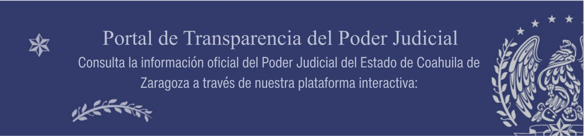

Información Pública de Oficio, conforme a la anterior Ley de Acceso a la Información Pública:
Debido a recientes cambios en la normatividad en materia de transparencia y acceso a la información, nos encontramos actualizando los contenidos de este sitio para cumplir con las nuevas disposiciones legales.
Agradecemos su comprensión.
## Consulta historica ley anterior
- [Artículo 20](consulta-historica-ley-anterior/articulo-20/)
- [Artículo 21](consulta-historica-ley-anterior/articulo-21/)
- [F01 Estructura Orgánica](consulta-historica-ley-anterior/articulo-21/f01-estructura-organica/)
##### 1- Estructura Jurisdiccional
###### 01 Tribunal Superior de Justicia del Estado de Coahuila de Zaragoza
- [Pleno.pptx](https://storage.googleapis.com/pjecz-gob-mx/Transparencia/Consulta historica ley anterior/Artículo 21/F01 Estructura Orgánica/1- Estructura Jurisdiccional/01 Tribunal Superior de Justicia del Estado de Coahuila de Zaragoza/Pleno.pptx)
- [Presidencia.pptx](https://storage.googleapis.com/pjecz-gob-mx/Transparencia/Consulta historica ley anterior/Artículo 21/F01 Estructura Orgánica/1- Estructura Jurisdiccional/01 Tribunal Superior de Justicia del Estado de Coahuila de Zaragoza/Presidencia.pptx)
- [Sala Colegiada Civil y Familiar del Tribunal Superior de Justicia.pptx](https://storage.googleapis.com/pjecz-gob-mx/Transparencia/Consulta historica ley anterior/Artículo 21/F01 Estructura Orgánica/1- Estructura Jurisdiccional/01 Tribunal Superior de Justicia del Estado de Coahuila de Zaragoza/Sala Colegiada Civil y Familiar del Tribunal Superior de Justicia.pptx)
- [Sala Colegiada Penal del Tribunal Superior de Justicia.pptx](https://storage.googleapis.com/pjecz-gob-mx/Transparencia/Consulta historica ley anterior/Artículo 21/F01 Estructura Orgánica/1- Estructura Jurisdiccional/01 Tribunal Superior de Justicia del Estado de Coahuila de Zaragoza/Sala Colegiada Penal del Tribunal Superior de Justicia.pptx)
- [Sala Regional Torreón.pptx](https://storage.googleapis.com/pjecz-gob-mx/Transparencia/Consulta historica ley anterior/Artículo 21/F01 Estructura Orgánica/1- Estructura Jurisdiccional/01 Tribunal Superior de Justicia del Estado de Coahuila de Zaragoza/Sala Regional Torreón.pptx)
###### 02 Tribunales Distritales
- [01 Primer Tribunal Distrital Saltillo.pptx](https://storage.googleapis.com/pjecz-gob-mx/Transparencia/Consulta historica ley anterior/Artículo 21/F01 Estructura Orgánica/1- Estructura Jurisdiccional/02 Tribunales Distritales/01 Primer Tribunal Distrital Saltillo.pptx)
- [02 Segundo Tribunal Distrital Torreón.pptx](https://storage.googleapis.com/pjecz-gob-mx/Transparencia/Consulta historica ley anterior/Artículo 21/F01 Estructura Orgánica/1- Estructura Jurisdiccional/02 Tribunales Distritales/02 Segundo Tribunal Distrital Torreón.pptx)
- [03 Tercer Tribunal Distrital Monclova.pptx](https://storage.googleapis.com/pjecz-gob-mx/Transparencia/Consulta historica ley anterior/Artículo 21/F01 Estructura Orgánica/1- Estructura Jurisdiccional/02 Tribunales Distritales/03 Tercer Tribunal Distrital Monclova.pptx)
- [04 Cuarto Tribunal Distrital Piedras Negras.pptx](https://storage.googleapis.com/pjecz-gob-mx/Transparencia/Consulta historica ley anterior/Artículo 21/F01 Estructura Orgánica/1- Estructura Jurisdiccional/02 Tribunales Distritales/04 Cuarto Tribunal Distrital Piedras Negras.pptx)
###### 03 Juzgados de Primera Instancia
####### Central de Actuarios
- [Actuarios Itinerantes Distrito Saltillo.pptx](https://storage.googleapis.com/pjecz-gob-mx/Transparencia/Consulta historica ley anterior/Artículo 21/F01 Estructura Orgánica/1- Estructura Jurisdiccional/03 Juzgados de Primera Instancia/Central de Actuarios/Actuarios Itinerantes Distrito Saltillo.pptx)
- [Central de Actuarios Saltillo.pptx](https://storage.googleapis.com/pjecz-gob-mx/Transparencia/Consulta historica ley anterior/Artículo 21/F01 Estructura Orgánica/1- Estructura Jurisdiccional/03 Juzgados de Primera Instancia/Central de Actuarios/Central de Actuarios Saltillo.pptx)
- [Central de Actuarios Torreón.pptx](https://storage.googleapis.com/pjecz-gob-mx/Transparencia/Consulta historica ley anterior/Artículo 21/F01 Estructura Orgánica/1- Estructura Jurisdiccional/03 Juzgados de Primera Instancia/Central de Actuarios/Central de Actuarios Torreón.pptx)
- [Central de Actuarios en Materia Hipotecaria Saltillo.pptx](https://storage.googleapis.com/pjecz-gob-mx/Transparencia/Consulta historica ley anterior/Artículo 21/F01 Estructura Orgánica/1- Estructura Jurisdiccional/03 Juzgados de Primera Instancia/Central de Actuarios/Central de Actuarios en Materia Hipotecaria Saltillo.pptx)
####### Civiles
- [Administración Juzgados Hipotecarios.pptx](https://storage.googleapis.com/pjecz-gob-mx/Transparencia/Consulta historica ley anterior/Artículo 21/F01 Estructura Orgánica/1- Estructura Jurisdiccional/03 Juzgados de Primera Instancia/Civiles/Administración Juzgados Hipotecarios.pptx)
- [Juzgado Auxiliar Civil con Especializacion Ambiental.pptx](https://storage.googleapis.com/pjecz-gob-mx/Transparencia/Consulta historica ley anterior/Artículo 21/F01 Estructura Orgánica/1- Estructura Jurisdiccional/03 Juzgados de Primera Instancia/Civiles/Juzgado Auxiliar Civil con Especializacion Ambiental.pptx)
- [Juzgado Civil Acuña.pptx](https://storage.googleapis.com/pjecz-gob-mx/Transparencia/Consulta historica ley anterior/Artículo 21/F01 Estructura Orgánica/1- Estructura Jurisdiccional/03 Juzgados de Primera Instancia/Civiles/Juzgado Civil Acuña.pptx)
- [Juzgado Civil Sabinas.pptx](https://storage.googleapis.com/pjecz-gob-mx/Transparencia/Consulta historica ley anterior/Artículo 21/F01 Estructura Orgánica/1- Estructura Jurisdiccional/03 Juzgados de Primera Instancia/Civiles/Juzgado Civil Sabinas.pptx)
- [Juzgado Cuarto Civil Saltillo.pptx](https://storage.googleapis.com/pjecz-gob-mx/Transparencia/Consulta historica ley anterior/Artículo 21/F01 Estructura Orgánica/1- Estructura Jurisdiccional/03 Juzgados de Primera Instancia/Civiles/Juzgado Cuarto Civil Saltillo.pptx)
- [Juzgado Cuarto Civil Torreón.pptx](https://storage.googleapis.com/pjecz-gob-mx/Transparencia/Consulta historica ley anterior/Artículo 21/F01 Estructura Orgánica/1- Estructura Jurisdiccional/03 Juzgados de Primera Instancia/Civiles/Juzgado Cuarto Civil Torreón.pptx)
- [Juzgado Primero Civil Monclova.pptx](https://storage.googleapis.com/pjecz-gob-mx/Transparencia/Consulta historica ley anterior/Artículo 21/F01 Estructura Orgánica/1- Estructura Jurisdiccional/03 Juzgados de Primera Instancia/Civiles/Juzgado Primero Civil Monclova.pptx)
- [Juzgado Primero Civil Piedras Negras.pptx](https://storage.googleapis.com/pjecz-gob-mx/Transparencia/Consulta historica ley anterior/Artículo 21/F01 Estructura Orgánica/1- Estructura Jurisdiccional/03 Juzgados de Primera Instancia/Civiles/Juzgado Primero Civil Piedras Negras.pptx)
- [Juzgado Primero Civil Saltillo.pptx](https://storage.googleapis.com/pjecz-gob-mx/Transparencia/Consulta historica ley anterior/Artículo 21/F01 Estructura Orgánica/1- Estructura Jurisdiccional/03 Juzgados de Primera Instancia/Civiles/Juzgado Primero Civil Saltillo.pptx)
- [Juzgado Primero Civil Torreon.pptx](https://storage.googleapis.com/pjecz-gob-mx/Transparencia/Consulta historica ley anterior/Artículo 21/F01 Estructura Orgánica/1- Estructura Jurisdiccional/03 Juzgados de Primera Instancia/Civiles/Juzgado Primero Civil Torreon.pptx)
- [Juzgado Quinto Civil con Especializacion Hipotecaria Saltillo.pptx](https://storage.googleapis.com/pjecz-gob-mx/Transparencia/Consulta historica ley anterior/Artículo 21/F01 Estructura Orgánica/1- Estructura Jurisdiccional/03 Juzgados de Primera Instancia/Civiles/Juzgado Quinto Civil con Especializacion Hipotecaria Saltillo.pptx)
- [Juzgado Quinto Civil con Especialización Hipotecaria Torreón.pptx](https://storage.googleapis.com/pjecz-gob-mx/Transparencia/Consulta historica ley anterior/Artículo 21/F01 Estructura Orgánica/1- Estructura Jurisdiccional/03 Juzgados de Primera Instancia/Civiles/Juzgado Quinto Civil con Especialización Hipotecaria Torreón.pptx)
- [Juzgado Segundo Civil Monclova.pptx](https://storage.googleapis.com/pjecz-gob-mx/Transparencia/Consulta historica ley anterior/Artículo 21/F01 Estructura Orgánica/1- Estructura Jurisdiccional/03 Juzgados de Primera Instancia/Civiles/Juzgado Segundo Civil Monclova.pptx)
- [Juzgado Segundo Civil Piedras Negras.pptx](https://storage.googleapis.com/pjecz-gob-mx/Transparencia/Consulta historica ley anterior/Artículo 21/F01 Estructura Orgánica/1- Estructura Jurisdiccional/03 Juzgados de Primera Instancia/Civiles/Juzgado Segundo Civil Piedras Negras.pptx)
- [Juzgado Segundo Civil Saltillo.pptx](https://storage.googleapis.com/pjecz-gob-mx/Transparencia/Consulta historica ley anterior/Artículo 21/F01 Estructura Orgánica/1- Estructura Jurisdiccional/03 Juzgados de Primera Instancia/Civiles/Juzgado Segundo Civil Saltillo.pptx)
- [Juzgado Segundo Civil Torreón.pptx](https://storage.googleapis.com/pjecz-gob-mx/Transparencia/Consulta historica ley anterior/Artículo 21/F01 Estructura Orgánica/1- Estructura Jurisdiccional/03 Juzgados de Primera Instancia/Civiles/Juzgado Segundo Civil Torreón.pptx)
- [Juzgado Sexto Civil con Especialización Hipotecaria Torreón.pptx](https://storage.googleapis.com/pjecz-gob-mx/Transparencia/Consulta historica ley anterior/Artículo 21/F01 Estructura Orgánica/1- Estructura Jurisdiccional/03 Juzgados de Primera Instancia/Civiles/Juzgado Sexto Civil con Especialización Hipotecaria Torreón.pptx)
- [Juzgado Tercero Civil Monclova.pptx](https://storage.googleapis.com/pjecz-gob-mx/Transparencia/Consulta historica ley anterior/Artículo 21/F01 Estructura Orgánica/1- Estructura Jurisdiccional/03 Juzgados de Primera Instancia/Civiles/Juzgado Tercero Civil Monclova.pptx)
- [Juzgado Tercero Civil Saltillo.pptx](https://storage.googleapis.com/pjecz-gob-mx/Transparencia/Consulta historica ley anterior/Artículo 21/F01 Estructura Orgánica/1- Estructura Jurisdiccional/03 Juzgados de Primera Instancia/Civiles/Juzgado Tercero Civil Saltillo.pptx)
- [Juzgado Tercero Civil Torreón.pptx](https://storage.googleapis.com/pjecz-gob-mx/Transparencia/Consulta historica ley anterior/Artículo 21/F01 Estructura Orgánica/1- Estructura Jurisdiccional/03 Juzgados de Primera Instancia/Civiles/Juzgado Tercero Civil Torreón.pptx)
- [Juzgado de Primera Instancia Auxiliar en Materia Civil.pptx](https://storage.googleapis.com/pjecz-gob-mx/Transparencia/Consulta historica ley anterior/Artículo 21/F01 Estructura Orgánica/1- Estructura Jurisdiccional/03 Juzgados de Primera Instancia/Civiles/Juzgado de Primera Instancia Auxiliar en Materia Civil.pptx)
####### Familiares
- [Juzgado Auxiliar Familiar Saltillo.pptx](https://storage.googleapis.com/pjecz-gob-mx/Transparencia/Consulta historica ley anterior/Artículo 21/F01 Estructura Orgánica/1- Estructura Jurisdiccional/03 Juzgados de Primera Instancia/Familiares/Juzgado Auxiliar Familiar Saltillo.pptx)
- [Juzgado Cuarto Familiar Monclova.pptx](https://storage.googleapis.com/pjecz-gob-mx/Transparencia/Consulta historica ley anterior/Artículo 21/F01 Estructura Orgánica/1- Estructura Jurisdiccional/03 Juzgados de Primera Instancia/Familiares/Juzgado Cuarto Familiar Monclova.pptx)
- [Juzgado Cuarto Familiar Saltillo.pptx](https://storage.googleapis.com/pjecz-gob-mx/Transparencia/Consulta historica ley anterior/Artículo 21/F01 Estructura Orgánica/1- Estructura Jurisdiccional/03 Juzgados de Primera Instancia/Familiares/Juzgado Cuarto Familiar Saltillo.pptx)
- [Juzgado Cuarto Familiar Torreón.pptx](https://storage.googleapis.com/pjecz-gob-mx/Transparencia/Consulta historica ley anterior/Artículo 21/F01 Estructura Orgánica/1- Estructura Jurisdiccional/03 Juzgados de Primera Instancia/Familiares/Juzgado Cuarto Familiar Torreón.pptx)
- [Juzgado Familiar Acuña.pptx](https://storage.googleapis.com/pjecz-gob-mx/Transparencia/Consulta historica ley anterior/Artículo 21/F01 Estructura Orgánica/1- Estructura Jurisdiccional/03 Juzgados de Primera Instancia/Familiares/Juzgado Familiar Acuña.pptx)
- [Juzgado Familiar Sabinas.pptx](https://storage.googleapis.com/pjecz-gob-mx/Transparencia/Consulta historica ley anterior/Artículo 21/F01 Estructura Orgánica/1- Estructura Jurisdiccional/03 Juzgados de Primera Instancia/Familiares/Juzgado Familiar Sabinas.pptx)
- [Juzgado Familiar San Pedro.pptx](https://storage.googleapis.com/pjecz-gob-mx/Transparencia/Consulta historica ley anterior/Artículo 21/F01 Estructura Orgánica/1- Estructura Jurisdiccional/03 Juzgados de Primera Instancia/Familiares/Juzgado Familiar San Pedro.pptx)
- [Juzgado Primero Familiar Monclova.pptx](https://storage.googleapis.com/pjecz-gob-mx/Transparencia/Consulta historica ley anterior/Artículo 21/F01 Estructura Orgánica/1- Estructura Jurisdiccional/03 Juzgados de Primera Instancia/Familiares/Juzgado Primero Familiar Monclova.pptx)
- [Juzgado Primero Familiar Piedras Negras.pptx](https://storage.googleapis.com/pjecz-gob-mx/Transparencia/Consulta historica ley anterior/Artículo 21/F01 Estructura Orgánica/1- Estructura Jurisdiccional/03 Juzgados de Primera Instancia/Familiares/Juzgado Primero Familiar Piedras Negras.pptx)
- [Juzgado Primero Familiar Saltillo.pptx](https://storage.googleapis.com/pjecz-gob-mx/Transparencia/Consulta historica ley anterior/Artículo 21/F01 Estructura Orgánica/1- Estructura Jurisdiccional/03 Juzgados de Primera Instancia/Familiares/Juzgado Primero Familiar Saltillo.pptx)
- [Juzgado Primero Familiar Torreón.pptx](https://storage.googleapis.com/pjecz-gob-mx/Transparencia/Consulta historica ley anterior/Artículo 21/F01 Estructura Orgánica/1- Estructura Jurisdiccional/03 Juzgados de Primera Instancia/Familiares/Juzgado Primero Familiar Torreón.pptx)
- [Juzgado Quinto Familiar Saltillo.pptx](https://storage.googleapis.com/pjecz-gob-mx/Transparencia/Consulta historica ley anterior/Artículo 21/F01 Estructura Orgánica/1- Estructura Jurisdiccional/03 Juzgados de Primera Instancia/Familiares/Juzgado Quinto Familiar Saltillo.pptx)
- [Juzgado Quinto Familiar Torreón.pptx](https://storage.googleapis.com/pjecz-gob-mx/Transparencia/Consulta historica ley anterior/Artículo 21/F01 Estructura Orgánica/1- Estructura Jurisdiccional/03 Juzgados de Primera Instancia/Familiares/Juzgado Quinto Familiar Torreón.pptx)
- [Juzgado Segundo Familiar Monclova.pptx](https://storage.googleapis.com/pjecz-gob-mx/Transparencia/Consulta historica ley anterior/Artículo 21/F01 Estructura Orgánica/1- Estructura Jurisdiccional/03 Juzgados de Primera Instancia/Familiares/Juzgado Segundo Familiar Monclova.pptx)
- [Juzgado Segundo Familiar Piedras Negras.pptx](https://storage.googleapis.com/pjecz-gob-mx/Transparencia/Consulta historica ley anterior/Artículo 21/F01 Estructura Orgánica/1- Estructura Jurisdiccional/03 Juzgados de Primera Instancia/Familiares/Juzgado Segundo Familiar Piedras Negras.pptx)
- [Juzgado Segundo Familiar Saltillo.pptx](https://storage.googleapis.com/pjecz-gob-mx/Transparencia/Consulta historica ley anterior/Artículo 21/F01 Estructura Orgánica/1- Estructura Jurisdiccional/03 Juzgados de Primera Instancia/Familiares/Juzgado Segundo Familiar Saltillo.pptx)
- [Juzgado Segundo Familiar Torreón.pptx](https://storage.googleapis.com/pjecz-gob-mx/Transparencia/Consulta historica ley anterior/Artículo 21/F01 Estructura Orgánica/1- Estructura Jurisdiccional/03 Juzgados de Primera Instancia/Familiares/Juzgado Segundo Familiar Torreón.pptx)
- [Juzgado Tercero Familiar Monclova.pptx](https://storage.googleapis.com/pjecz-gob-mx/Transparencia/Consulta historica ley anterior/Artículo 21/F01 Estructura Orgánica/1- Estructura Jurisdiccional/03 Juzgados de Primera Instancia/Familiares/Juzgado Tercero Familiar Monclova.pptx)
- [Juzgado Tercero Familiar Saltillo.pptx](https://storage.googleapis.com/pjecz-gob-mx/Transparencia/Consulta historica ley anterior/Artículo 21/F01 Estructura Orgánica/1- Estructura Jurisdiccional/03 Juzgados de Primera Instancia/Familiares/Juzgado Tercero Familiar Saltillo.pptx)
- [Juzgado Tercero Familiar Torreón.pptx](https://storage.googleapis.com/pjecz-gob-mx/Transparencia/Consulta historica ley anterior/Artículo 21/F01 Estructura Orgánica/1- Estructura Jurisdiccional/03 Juzgados de Primera Instancia/Familiares/Juzgado Tercero Familiar Torreón.pptx)
####### Juzgados Letrados
- [Juzgado Primero Letrado Civil Saltillo.pptx](https://storage.googleapis.com/pjecz-gob-mx/Transparencia/Consulta historica ley anterior/Artículo 21/F01 Estructura Orgánica/1- Estructura Jurisdiccional/03 Juzgados de Primera Instancia/Juzgados Letrados/Juzgado Primero Letrado Civil Saltillo.pptx)
- [Juzgado Segundo Letrado Civil Saltillo.pptx](https://storage.googleapis.com/pjecz-gob-mx/Transparencia/Consulta historica ley anterior/Artículo 21/F01 Estructura Orgánica/1- Estructura Jurisdiccional/03 Juzgados de Primera Instancia/Juzgados Letrados/Juzgado Segundo Letrado Civil Saltillo.pptx)
- [Juzgado Segundo Letrado Civil Torreón.pptx](https://storage.googleapis.com/pjecz-gob-mx/Transparencia/Consulta historica ley anterior/Artículo 21/F01 Estructura Orgánica/1- Estructura Jurisdiccional/03 Juzgados de Primera Instancia/Juzgados Letrados/Juzgado Segundo Letrado Civil Torreón.pptx)
- [Juzgado Tercero Letrado Civil Torreón.pptx](https://storage.googleapis.com/pjecz-gob-mx/Transparencia/Consulta historica ley anterior/Artículo 21/F01 Estructura Orgánica/1- Estructura Jurisdiccional/03 Juzgados de Primera Instancia/Juzgados Letrados/Juzgado Tercero Letrado Civil Torreón.pptx)
####### Juzgados Mixtos
- [Juzgado Civil y Familiar Parras de la Fuente.pptx](https://storage.googleapis.com/pjecz-gob-mx/Transparencia/Consulta historica ley anterior/Artículo 21/F01 Estructura Orgánica/1- Estructura Jurisdiccional/03 Juzgados de Primera Instancia/Juzgados Mixtos/Juzgado Civil y Familiar Parras de la Fuente.pptx)
- [Juzgado Civil y Familiar San Pedro.pptx](https://storage.googleapis.com/pjecz-gob-mx/Transparencia/Consulta historica ley anterior/Artículo 21/F01 Estructura Orgánica/1- Estructura Jurisdiccional/03 Juzgados de Primera Instancia/Juzgados Mixtos/Juzgado Civil y Familiar San Pedro.pptx)
####### Materia Penal del Sistema Acusatorio y Oral
- [Administración General de los Juzgados Penales del Sistema Acusatorio y Oral.pptx](https://storage.googleapis.com/pjecz-gob-mx/Transparencia/Consulta historica ley anterior/Artículo 21/F01 Estructura Orgánica/1- Estructura Jurisdiccional/03 Juzgados de Primera Instancia/Materia Penal del Sistema Acusatorio y Oral/Administración General de los Juzgados Penales del Sistema Acusatorio y Oral.pptx)
- [Juzgado Penal Del Sistema Acusatorio Y Oral Acuña.pptx](https://storage.googleapis.com/pjecz-gob-mx/Transparencia/Consulta historica ley anterior/Artículo 21/F01 Estructura Orgánica/1- Estructura Jurisdiccional/03 Juzgados de Primera Instancia/Materia Penal del Sistema Acusatorio y Oral/Juzgado Penal Del Sistema Acusatorio Y Oral Acuña.pptx)
- [Juzgado Penal Del Sistema Acusatorio Y Oral Frontera.pptx](https://storage.googleapis.com/pjecz-gob-mx/Transparencia/Consulta historica ley anterior/Artículo 21/F01 Estructura Orgánica/1- Estructura Jurisdiccional/03 Juzgados de Primera Instancia/Materia Penal del Sistema Acusatorio y Oral/Juzgado Penal Del Sistema Acusatorio Y Oral Frontera.pptx)
- [Juzgado Penal Del Sistema Acusatorio Y Oral Piedras Negras.pptx](https://storage.googleapis.com/pjecz-gob-mx/Transparencia/Consulta historica ley anterior/Artículo 21/F01 Estructura Orgánica/1- Estructura Jurisdiccional/03 Juzgados de Primera Instancia/Materia Penal del Sistema Acusatorio y Oral/Juzgado Penal Del Sistema Acusatorio Y Oral Piedras Negras.pptx)
- [Juzgado Penal Del Sistema Acusatorio Y Oral Sabinas.pptx](https://storage.googleapis.com/pjecz-gob-mx/Transparencia/Consulta historica ley anterior/Artículo 21/F01 Estructura Orgánica/1- Estructura Jurisdiccional/03 Juzgados de Primera Instancia/Materia Penal del Sistema Acusatorio y Oral/Juzgado Penal Del Sistema Acusatorio Y Oral Sabinas.pptx)
- [Juzgado Penal Del Sistema Acusatorio Y Oral Torreon.pptx](https://storage.googleapis.com/pjecz-gob-mx/Transparencia/Consulta historica ley anterior/Artículo 21/F01 Estructura Orgánica/1- Estructura Jurisdiccional/03 Juzgados de Primera Instancia/Materia Penal del Sistema Acusatorio y Oral/Juzgado Penal Del Sistema Acusatorio Y Oral Torreon.pptx)
- [Juzgado Penal del Sistema Acusatorio y Oral Saltillo.pptx](https://storage.googleapis.com/pjecz-gob-mx/Transparencia/Consulta historica ley anterior/Artículo 21/F01 Estructura Orgánica/1- Estructura Jurisdiccional/03 Juzgados de Primera Instancia/Materia Penal del Sistema Acusatorio y Oral/Juzgado Penal del Sistema Acusatorio y Oral Saltillo.pptx)
- [Juzgado Penal del Sistema Acusatorio y Oral San Pedro de las Colonias.pptx](https://storage.googleapis.com/pjecz-gob-mx/Transparencia/Consulta historica ley anterior/Artículo 21/F01 Estructura Orgánica/1- Estructura Jurisdiccional/03 Juzgados de Primera Instancia/Materia Penal del Sistema Acusatorio y Oral/Juzgado Penal del Sistema Acusatorio y Oral San Pedro de las Colonias.pptx)
####### Mercantiles, en jurisdicción concurrente
- [Juzgado Primero Mercantil Saltillo.pptx](https://storage.googleapis.com/pjecz-gob-mx/Transparencia/Consulta historica ley anterior/Artículo 21/F01 Estructura Orgánica/1- Estructura Jurisdiccional/03 Juzgados de Primera Instancia/Mercantiles, en jurisdicción concurrente/Juzgado Primero Mercantil Saltillo.pptx)
- [Juzgado Primero Mercantil Torreón.pptx](https://storage.googleapis.com/pjecz-gob-mx/Transparencia/Consulta historica ley anterior/Artículo 21/F01 Estructura Orgánica/1- Estructura Jurisdiccional/03 Juzgados de Primera Instancia/Mercantiles, en jurisdicción concurrente/Juzgado Primero Mercantil Torreón.pptx)
- [Juzgado Segundo Mercantil Saltillo.pptx](https://storage.googleapis.com/pjecz-gob-mx/Transparencia/Consulta historica ley anterior/Artículo 21/F01 Estructura Orgánica/1- Estructura Jurisdiccional/03 Juzgados de Primera Instancia/Mercantiles, en jurisdicción concurrente/Juzgado Segundo Mercantil Saltillo.pptx)
- [Juzgado Segundo Mercantil Torreón.pptx](https://storage.googleapis.com/pjecz-gob-mx/Transparencia/Consulta historica ley anterior/Artículo 21/F01 Estructura Orgánica/1- Estructura Jurisdiccional/03 Juzgados de Primera Instancia/Mercantiles, en jurisdicción concurrente/Juzgado Segundo Mercantil Torreón.pptx)
- [Juzgado Tercero Mercantil Saltillo.pptx](https://storage.googleapis.com/pjecz-gob-mx/Transparencia/Consulta historica ley anterior/Artículo 21/F01 Estructura Orgánica/1- Estructura Jurisdiccional/03 Juzgados de Primera Instancia/Mercantiles, en jurisdicción concurrente/Juzgado Tercero Mercantil Saltillo.pptx)
- [Juzgado Tercero Mercantil Torreón.pptx](https://storage.googleapis.com/pjecz-gob-mx/Transparencia/Consulta historica ley anterior/Artículo 21/F01 Estructura Orgánica/1- Estructura Jurisdiccional/03 Juzgados de Primera Instancia/Mercantiles, en jurisdicción concurrente/Juzgado Tercero Mercantil Torreón.pptx)
- [Juzgados Mercantiles.pptx](https://storage.googleapis.com/pjecz-gob-mx/Transparencia/Consulta historica ley anterior/Artículo 21/F01 Estructura Orgánica/1- Estructura Jurisdiccional/03 Juzgados de Primera Instancia/Mercantiles, en jurisdicción concurrente/Juzgados Mercantiles.pptx)
####### Penales
- [Juzgado Primero Penal Saltillo.pptx](https://storage.googleapis.com/pjecz-gob-mx/Transparencia/Consulta historica ley anterior/Artículo 21/F01 Estructura Orgánica/1- Estructura Jurisdiccional/03 Juzgados de Primera Instancia/Penales/Juzgado Primero Penal Saltillo.pptx)
##### 2-Estructura no Jurisdiccional
###### 01 Instituto de Especialización Judicial
- [Instituto de Especialización Judicial.pptx](https://storage.googleapis.com/pjecz-gob-mx/Transparencia/Consulta historica ley anterior/Artículo 21/F01 Estructura Orgánica/2-Estructura no Jurisdiccional/01 Instituto de Especialización Judicial/Instituto de Especialización Judicial.pptx)
###### 02 Centro de Medios Alternos de Solución de Controversias
- [CEMASC Delegación San Pedro.pptx](https://storage.googleapis.com/pjecz-gob-mx/Transparencia/Consulta historica ley anterior/Artículo 21/F01 Estructura Orgánica/2-Estructura no Jurisdiccional/02 Centro de Medios Alternos de Solución de Controversias/CEMASC Delegación San Pedro.pptx)
- [CEMASC Delegación Torreón.pptx](https://storage.googleapis.com/pjecz-gob-mx/Transparencia/Consulta historica ley anterior/Artículo 21/F01 Estructura Orgánica/2-Estructura no Jurisdiccional/02 Centro de Medios Alternos de Solución de Controversias/CEMASC Delegación Torreón.pptx)
- [Cemasc Delegación Acuña.pptx](https://storage.googleapis.com/pjecz-gob-mx/Transparencia/Consulta historica ley anterior/Artículo 21/F01 Estructura Orgánica/2-Estructura no Jurisdiccional/02 Centro de Medios Alternos de Solución de Controversias/Cemasc Delegación Acuña.pptx)
- [Cemasc Delegación Monclova.pptx](https://storage.googleapis.com/pjecz-gob-mx/Transparencia/Consulta historica ley anterior/Artículo 21/F01 Estructura Orgánica/2-Estructura no Jurisdiccional/02 Centro de Medios Alternos de Solución de Controversias/Cemasc Delegación Monclova.pptx)
- [Cemasc Delegación Piedras Negras.pptx](https://storage.googleapis.com/pjecz-gob-mx/Transparencia/Consulta historica ley anterior/Artículo 21/F01 Estructura Orgánica/2-Estructura no Jurisdiccional/02 Centro de Medios Alternos de Solución de Controversias/Cemasc Delegación Piedras Negras.pptx)
- [Cemasc Delegación Sabinas.pptx](https://storage.googleapis.com/pjecz-gob-mx/Transparencia/Consulta historica ley anterior/Artículo 21/F01 Estructura Orgánica/2-Estructura no Jurisdiccional/02 Centro de Medios Alternos de Solución de Controversias/Cemasc Delegación Sabinas.pptx)
- [Centro de Medios Alternos de Solución de Controversias.pptx](https://storage.googleapis.com/pjecz-gob-mx/Transparencia/Consulta historica ley anterior/Artículo 21/F01 Estructura Orgánica/2-Estructura no Jurisdiccional/02 Centro de Medios Alternos de Solución de Controversias/Centro de Medios Alternos de Solución de Controversias.pptx)
###### 03 Instituto Estatal de Defensoría Pública
- [Delegacion Piedras Negras del Instituto Defensoria Publica.pptx](https://storage.googleapis.com/pjecz-gob-mx/Transparencia/Consulta historica ley anterior/Artículo 21/F01 Estructura Orgánica/2-Estructura no Jurisdiccional/03 Instituto Estatal de Defensoría Pública/Delegacion Piedras Negras del Instituto Defensoria Publica.pptx)
- [Delegación Acuña Instituto Estatal de Defensoría Pública.pptx](https://storage.googleapis.com/pjecz-gob-mx/Transparencia/Consulta historica ley anterior/Artículo 21/F01 Estructura Orgánica/2-Estructura no Jurisdiccional/03 Instituto Estatal de Defensoría Pública/Delegación Acuña Instituto Estatal de Defensoría Pública.pptx)
- [Delegación Monclova del Instituto Estatal de Defensoria Publica.pptx](https://storage.googleapis.com/pjecz-gob-mx/Transparencia/Consulta historica ley anterior/Artículo 21/F01 Estructura Orgánica/2-Estructura no Jurisdiccional/03 Instituto Estatal de Defensoría Pública/Delegación Monclova del Instituto Estatal de Defensoria Publica.pptx)
- [Delegación Parras del Instituto Estatal de Defensoría Publica.pptx](https://storage.googleapis.com/pjecz-gob-mx/Transparencia/Consulta historica ley anterior/Artículo 21/F01 Estructura Orgánica/2-Estructura no Jurisdiccional/03 Instituto Estatal de Defensoría Pública/Delegación Parras del Instituto Estatal de Defensoría Publica.pptx)
- [Delegación Sabinas Instituto Estatal de Defensoría Pública.pptx](https://storage.googleapis.com/pjecz-gob-mx/Transparencia/Consulta historica ley anterior/Artículo 21/F01 Estructura Orgánica/2-Estructura no Jurisdiccional/03 Instituto Estatal de Defensoría Pública/Delegación Sabinas Instituto Estatal de Defensoría Pública.pptx)
- [Delegación San Pedro del Instituto Estatal de Defensoria Publica.pptx](https://storage.googleapis.com/pjecz-gob-mx/Transparencia/Consulta historica ley anterior/Artículo 21/F01 Estructura Orgánica/2-Estructura no Jurisdiccional/03 Instituto Estatal de Defensoría Pública/Delegación San Pedro del Instituto Estatal de Defensoria Publica.pptx)
- [Delegación Torreon del Instituto Estatal de Defensoria Publica.pptx](https://storage.googleapis.com/pjecz-gob-mx/Transparencia/Consulta historica ley anterior/Artículo 21/F01 Estructura Orgánica/2-Estructura no Jurisdiccional/03 Instituto Estatal de Defensoría Pública/Delegación Torreon del Instituto Estatal de Defensoria Publica.pptx)
- [Instituto Estatal de Defensoria Publica.pptx](https://storage.googleapis.com/pjecz-gob-mx/Transparencia/Consulta historica ley anterior/Artículo 21/F01 Estructura Orgánica/2-Estructura no Jurisdiccional/03 Instituto Estatal de Defensoría Pública/Instituto Estatal de Defensoria Publica.pptx)
- [Nuevo Sistema Defensoria Sabinas.pptx](https://storage.googleapis.com/pjecz-gob-mx/Transparencia/Consulta historica ley anterior/Artículo 21/F01 Estructura Orgánica/2-Estructura no Jurisdiccional/03 Instituto Estatal de Defensoría Pública/Nuevo Sistema Defensoria Sabinas.pptx)
- [Nuevo Sistema Defensoria Saltillo.pptx](https://storage.googleapis.com/pjecz-gob-mx/Transparencia/Consulta historica ley anterior/Artículo 21/F01 Estructura Orgánica/2-Estructura no Jurisdiccional/03 Instituto Estatal de Defensoría Pública/Nuevo Sistema Defensoria Saltillo.pptx)
- [Nuevo Sistema Defensoria Torreon.pptx](https://storage.googleapis.com/pjecz-gob-mx/Transparencia/Consulta historica ley anterior/Artículo 21/F01 Estructura Orgánica/2-Estructura no Jurisdiccional/03 Instituto Estatal de Defensoría Pública/Nuevo Sistema Defensoria Torreon.pptx)
- [Nuevo Sistema Defensoría Acuña.pptx](https://storage.googleapis.com/pjecz-gob-mx/Transparencia/Consulta historica ley anterior/Artículo 21/F01 Estructura Orgánica/2-Estructura no Jurisdiccional/03 Instituto Estatal de Defensoría Pública/Nuevo Sistema Defensoría Acuña.pptx)
- [Nuevo Sistema Defensoría Monclova.pptx](https://storage.googleapis.com/pjecz-gob-mx/Transparencia/Consulta historica ley anterior/Artículo 21/F01 Estructura Orgánica/2-Estructura no Jurisdiccional/03 Instituto Estatal de Defensoría Pública/Nuevo Sistema Defensoría Monclova.pptx)
- [Nuevo Sistema Defensoría Piedras Negras.pptx](https://storage.googleapis.com/pjecz-gob-mx/Transparencia/Consulta historica ley anterior/Artículo 21/F01 Estructura Orgánica/2-Estructura no Jurisdiccional/03 Instituto Estatal de Defensoría Pública/Nuevo Sistema Defensoría Piedras Negras.pptx)
###### 04 Centro de Evaluación Psicosocial
- [Centro de Evaluación Psicosocial.pptx](https://storage.googleapis.com/pjecz-gob-mx/Transparencia/Consulta historica ley anterior/Artículo 21/F01 Estructura Orgánica/2-Estructura no Jurisdiccional/04 Centro de Evaluación Psicosocial/Centro de Evaluación Psicosocial.pptx)
- [Unidad Del Centro De Evaluacion Psicosocial Acuña.pptx](https://storage.googleapis.com/pjecz-gob-mx/Transparencia/Consulta historica ley anterior/Artículo 21/F01 Estructura Orgánica/2-Estructura no Jurisdiccional/04 Centro de Evaluación Psicosocial/Unidad Del Centro De Evaluacion Psicosocial Acuña.pptx)
- [Unidad del Centro de Evaluación Psicosocial Laguna.pptx](https://storage.googleapis.com/pjecz-gob-mx/Transparencia/Consulta historica ley anterior/Artículo 21/F01 Estructura Orgánica/2-Estructura no Jurisdiccional/04 Centro de Evaluación Psicosocial/Unidad del Centro de Evaluación Psicosocial Laguna.pptx)
- [Unidad del Centro de Evaluación Psicosocial Región Carbonífera.pptx](https://storage.googleapis.com/pjecz-gob-mx/Transparencia/Consulta historica ley anterior/Artículo 21/F01 Estructura Orgánica/2-Estructura no Jurisdiccional/04 Centro de Evaluación Psicosocial/Unidad del Centro de Evaluación Psicosocial Región Carbonífera.pptx)
- [Unidad del Centro de Evaluación Psicosocial Región Centro.pptx](https://storage.googleapis.com/pjecz-gob-mx/Transparencia/Consulta historica ley anterior/Artículo 21/F01 Estructura Orgánica/2-Estructura no Jurisdiccional/04 Centro de Evaluación Psicosocial/Unidad del Centro de Evaluación Psicosocial Región Centro.pptx)
- [Unidad del Centro de Evaluación Psicosocial San Pedro.pptx](https://storage.googleapis.com/pjecz-gob-mx/Transparencia/Consulta historica ley anterior/Artículo 21/F01 Estructura Orgánica/2-Estructura no Jurisdiccional/04 Centro de Evaluación Psicosocial/Unidad del Centro de Evaluación Psicosocial San Pedro.pptx)
- [Unidad del Centro de Evaluación Psicosocial, Región Norte.pptx](https://storage.googleapis.com/pjecz-gob-mx/Transparencia/Consulta historica ley anterior/Artículo 21/F01 Estructura Orgánica/2-Estructura no Jurisdiccional/04 Centro de Evaluación Psicosocial/Unidad del Centro de Evaluación Psicosocial, Región Norte.pptx)
###### 05 Oficialías de Partes
- [Oficialía de Partes Región Carbonífera.pptx](https://storage.googleapis.com/pjecz-gob-mx/Transparencia/Consulta historica ley anterior/Artículo 21/F01 Estructura Orgánica/2-Estructura no Jurisdiccional/05 Oficialías de Partes/Oficialía de Partes Región Carbonífera.pptx)
- [Oficialía de Partes Saltillo.pptx](https://storage.googleapis.com/pjecz-gob-mx/Transparencia/Consulta historica ley anterior/Artículo 21/F01 Estructura Orgánica/2-Estructura no Jurisdiccional/05 Oficialías de Partes/Oficialía de Partes Saltillo.pptx)
- [Oficialía de Partes de Monclova.pptx](https://storage.googleapis.com/pjecz-gob-mx/Transparencia/Consulta historica ley anterior/Artículo 21/F01 Estructura Orgánica/2-Estructura no Jurisdiccional/05 Oficialías de Partes/Oficialía de Partes de Monclova.pptx)
- [Oficialía de Partes de Piedras Negras.pptx](https://storage.googleapis.com/pjecz-gob-mx/Transparencia/Consulta historica ley anterior/Artículo 21/F01 Estructura Orgánica/2-Estructura no Jurisdiccional/05 Oficialías de Partes/Oficialía de Partes de Piedras Negras.pptx)
- [Oficialía de Partes de Torreón.pptx](https://storage.googleapis.com/pjecz-gob-mx/Transparencia/Consulta historica ley anterior/Artículo 21/F01 Estructura Orgánica/2-Estructura no Jurisdiccional/05 Oficialías de Partes/Oficialía de Partes de Torreón.pptx)
###### 06 Visitaduría General
- [Visitaduría Judicial General.pptx](https://storage.googleapis.com/pjecz-gob-mx/Transparencia/Consulta historica ley anterior/Artículo 21/F01 Estructura Orgánica/2-Estructura no Jurisdiccional/06 Visitaduría General/Visitaduría Judicial General.pptx)
##### 3-Estructura Administrativa
###### 01 Presidencia del Tribunal Superior de Justicia del Estado de Coahuila de Zaragoza
- [Archivo General del Poder Judicial.pptx](https://storage.googleapis.com/pjecz-gob-mx/Transparencia/Consulta historica ley anterior/Artículo 21/F01 Estructura Orgánica/3-Estructura Administrativa/01 Presidencia del Tribunal Superior de Justicia del Estado de Coahuila de Zaragoza/Archivo General del Poder Judicial.pptx)
- [Archivo Regional de Acuña.pptx](https://storage.googleapis.com/pjecz-gob-mx/Transparencia/Consulta historica ley anterior/Artículo 21/F01 Estructura Orgánica/3-Estructura Administrativa/01 Presidencia del Tribunal Superior de Justicia del Estado de Coahuila de Zaragoza/Archivo Regional de Acuña.pptx)
- [Archivo Regional de Monclova.pptx](https://storage.googleapis.com/pjecz-gob-mx/Transparencia/Consulta historica ley anterior/Artículo 21/F01 Estructura Orgánica/3-Estructura Administrativa/01 Presidencia del Tribunal Superior de Justicia del Estado de Coahuila de Zaragoza/Archivo Regional de Monclova.pptx)
- [Archivo Regional de Río Grande.pptx](https://storage.googleapis.com/pjecz-gob-mx/Transparencia/Consulta historica ley anterior/Artículo 21/F01 Estructura Orgánica/3-Estructura Administrativa/01 Presidencia del Tribunal Superior de Justicia del Estado de Coahuila de Zaragoza/Archivo Regional de Río Grande.pptx)
- [Archivo Regional de Torreón.pptx](https://storage.googleapis.com/pjecz-gob-mx/Transparencia/Consulta historica ley anterior/Artículo 21/F01 Estructura Orgánica/3-Estructura Administrativa/01 Presidencia del Tribunal Superior de Justicia del Estado de Coahuila de Zaragoza/Archivo Regional de Torreón.pptx)
- [Archivo Único del Centro de Justicia Región Carbonífera.pptx](https://storage.googleapis.com/pjecz-gob-mx/Transparencia/Consulta historica ley anterior/Artículo 21/F01 Estructura Orgánica/3-Estructura Administrativa/01 Presidencia del Tribunal Superior de Justicia del Estado de Coahuila de Zaragoza/Archivo Único del Centro de Justicia Región Carbonífera.pptx)
- [Auditoría Interna.pptx](https://storage.googleapis.com/pjecz-gob-mx/Transparencia/Consulta historica ley anterior/Artículo 21/F01 Estructura Orgánica/3-Estructura Administrativa/01 Presidencia del Tribunal Superior de Justicia del Estado de Coahuila de Zaragoza/Auditoría Interna.pptx)
- [Secretaría Técnica y de Transparencia.pptx](https://storage.googleapis.com/pjecz-gob-mx/Transparencia/Consulta historica ley anterior/Artículo 21/F01 Estructura Orgánica/3-Estructura Administrativa/01 Presidencia del Tribunal Superior de Justicia del Estado de Coahuila de Zaragoza/Secretaría Técnica y de Transparencia.pptx)
- [Unidad de Apoyo a lo Juridiccional.pptx](https://storage.googleapis.com/pjecz-gob-mx/Transparencia/Consulta historica ley anterior/Artículo 21/F01 Estructura Orgánica/3-Estructura Administrativa/01 Presidencia del Tribunal Superior de Justicia del Estado de Coahuila de Zaragoza/Unidad de Apoyo a lo Juridiccional.pptx)
###### 02 Consejo de la Judicatura
- [Consejo de la Judicatura.pptx](https://storage.googleapis.com/pjecz-gob-mx/Transparencia/Consulta historica ley anterior/Artículo 21/F01 Estructura Orgánica/3-Estructura Administrativa/02 Consejo de la Judicatura/Consejo de la Judicatura.pptx)
###### 03 Oficialía Mayor
- [Centro de Control de Vigilancia.pptx](https://storage.googleapis.com/pjecz-gob-mx/Transparencia/Consulta historica ley anterior/Artículo 21/F01 Estructura Orgánica/3-Estructura Administrativa/03 Oficialía Mayor/Centro de Control de Vigilancia.pptx)
- [Dirección de Informática de la Oficialía Mayor del Poder Judicial.pptx](https://storage.googleapis.com/pjecz-gob-mx/Transparencia/Consulta historica ley anterior/Artículo 21/F01 Estructura Orgánica/3-Estructura Administrativa/03 Oficialía Mayor/Dirección de Informática de la Oficialía Mayor del Poder Judicial.pptx)
- [Dirección de Infraestructura Física.pptx](https://storage.googleapis.com/pjecz-gob-mx/Transparencia/Consulta historica ley anterior/Artículo 21/F01 Estructura Orgánica/3-Estructura Administrativa/03 Oficialía Mayor/Dirección de Infraestructura Física.pptx)
- [Dirección de Innovación de la Oficialía Mayor del Poder Judicial.pptx](https://storage.googleapis.com/pjecz-gob-mx/Transparencia/Consulta historica ley anterior/Artículo 21/F01 Estructura Orgánica/3-Estructura Administrativa/03 Oficialía Mayor/Dirección de Innovación de la Oficialía Mayor del Poder Judicial.pptx)
- [Dirección de Pago de la Oficialía Mayor del Poder Judicial.pptx](https://storage.googleapis.com/pjecz-gob-mx/Transparencia/Consulta historica ley anterior/Artículo 21/F01 Estructura Orgánica/3-Estructura Administrativa/03 Oficialía Mayor/Dirección de Pago de la Oficialía Mayor del Poder Judicial.pptx)
- [Dirección de Recursos Financieros de la Oficialía Mayor del Poder Judicial.pptx](https://storage.googleapis.com/pjecz-gob-mx/Transparencia/Consulta historica ley anterior/Artículo 21/F01 Estructura Orgánica/3-Estructura Administrativa/03 Oficialía Mayor/Dirección de Recursos Financieros de la Oficialía Mayor del Poder Judicial.pptx)
- [Dirección de Recursos Humanos de la Oficialía Mayor del Poder Judicial.pptx](https://storage.googleapis.com/pjecz-gob-mx/Transparencia/Consulta historica ley anterior/Artículo 21/F01 Estructura Orgánica/3-Estructura Administrativa/03 Oficialía Mayor/Dirección de Recursos Humanos de la Oficialía Mayor del Poder Judicial.pptx)
- [Dirección de Recursos Materiales de la Oficialía Mayor del Poder Judicial.pptx](https://storage.googleapis.com/pjecz-gob-mx/Transparencia/Consulta historica ley anterior/Artículo 21/F01 Estructura Orgánica/3-Estructura Administrativa/03 Oficialía Mayor/Dirección de Recursos Materiales de la Oficialía Mayor del Poder Judicial.pptx)
- [Oficialía Mayor.pptx](https://storage.googleapis.com/pjecz-gob-mx/Transparencia/Consulta historica ley anterior/Artículo 21/F01 Estructura Orgánica/3-Estructura Administrativa/03 Oficialía Mayor/Oficialía Mayor.pptx)
- [Unidad Jurídica de la Oficialía Mayor del Poder Judicial.pptx](https://storage.googleapis.com/pjecz-gob-mx/Transparencia/Consulta historica ley anterior/Artículo 21/F01 Estructura Orgánica/3-Estructura Administrativa/03 Oficialía Mayor/Unidad Jurídica de la Oficialía Mayor del Poder Judicial.pptx)
- [Unidad de Nóminas de la Oficialía Mayor del Poder Judicial.pptx](https://storage.googleapis.com/pjecz-gob-mx/Transparencia/Consulta historica ley anterior/Artículo 21/F01 Estructura Orgánica/3-Estructura Administrativa/03 Oficialía Mayor/Unidad de Nóminas de la Oficialía Mayor del Poder Judicial.pptx)
###### 04 Unidades Administrativas
- [Centro de Justicia de Saltillo.pptx](https://storage.googleapis.com/pjecz-gob-mx/Transparencia/Consulta historica ley anterior/Artículo 21/F01 Estructura Orgánica/3-Estructura Administrativa/04 Unidades Administrativas/Centro de Justicia de Saltillo.pptx)
- [Unidad Administrativa Del Distrito Judicial De Acuña.pptx](https://storage.googleapis.com/pjecz-gob-mx/Transparencia/Consulta historica ley anterior/Artículo 21/F01 Estructura Orgánica/3-Estructura Administrativa/04 Unidades Administrativas/Unidad Administrativa Del Distrito Judicial De Acuña.pptx)
- [Unidad Administrativa Torreón - San Pedro.pptx](https://storage.googleapis.com/pjecz-gob-mx/Transparencia/Consulta historica ley anterior/Artículo 21/F01 Estructura Orgánica/3-Estructura Administrativa/04 Unidades Administrativas/Unidad Administrativa Torreón - San Pedro.pptx)
- [Unidad Administrativa de la Región Carbonífera.pptx](https://storage.googleapis.com/pjecz-gob-mx/Transparencia/Consulta historica ley anterior/Artículo 21/F01 Estructura Orgánica/3-Estructura Administrativa/04 Unidades Administrativas/Unidad Administrativa de la Región Carbonífera.pptx)
- [Unidad Administrativa del Distrito Judicial de Monclova.pptx](https://storage.googleapis.com/pjecz-gob-mx/Transparencia/Consulta historica ley anterior/Artículo 21/F01 Estructura Orgánica/3-Estructura Administrativa/04 Unidades Administrativas/Unidad Administrativa del Distrito Judicial de Monclova.pptx)
- [Unidad Administrativa del Distrito Judicial de Río Grande.pptx](https://storage.googleapis.com/pjecz-gob-mx/Transparencia/Consulta historica ley anterior/Artículo 21/F01 Estructura Orgánica/3-Estructura Administrativa/04 Unidades Administrativas/Unidad Administrativa del Distrito Judicial de Río Grande.pptx)
- [Pleno](consulta-historica-ley-anterior/articulo-21/f01-estructura-organica/pleno/)
- [Presidencia](consulta-historica-ley-anterior/articulo-21/f01-estructura-organica/presidencia/)
- [Sala Civil y Familiar](consulta-historica-ley-anterior/articulo-21/f01-estructura-organica/sala-civil-y-familiar/)
- [Salas](consulta-historica-ley-anterior/articulo-21/f01-estructura-organica/salas/)
- [F02 Marco Normativo](consulta-historica-ley-anterior/articulo-21/f02-marco-normativo/)
- [Acuerdos](consulta-historica-ley-anterior/articulo-21/f02-marco-normativo/acuerdos/)
##### Constituciones
- [Constitución Política de los Estados Unidos Mexicanos.pdf](https://storage.googleapis.com/pjecz-gob-mx/Transparencia/Consulta historica ley anterior/Artículo 21/F02 Marco Normativo/Constituciones/Constitución Política de los Estados Unidos Mexicanos.pdf)
- [coa01.pdf](https://storage.googleapis.com/pjecz-gob-mx/Transparencia/Consulta historica ley anterior/Artículo 21/F02 Marco Normativo/Constituciones/coa01.pdf)
- [Códigos](consulta-historica-ley-anterior/articulo-21/f02-marco-normativo/codigos/)
##### Estándares
- [Estándares De Actuación Para Jueces de Primera Instancia en Materia Penal del Sistema Acusatorio y Oral del Poder Judicial Estado de Coahuila De Zaragoza.pdf](https://storage.googleapis.com/pjecz-gob-mx/Transparencia/Consulta historica ley anterior/Artículo 21/F02 Marco Normativo/Estándares/Estándares De Actuación Para Jueces de Primera Instancia en Materia Penal del Sistema Acusatorio y Oral del Poder Judicial Estado de Coahuila De Zaragoza.pdf)
- [Leyes Estatales](consulta-historica-ley-anterior/articulo-21/f02-marco-normativo/leyes-estatales/)
##### Leyes Federales
- [Ley Federal de los Trabajadores al Servicio del Estado, Reglamentaria del Apartado B del Artículo 123 Constitucional.pdf](https://storage.googleapis.com/pjecz-gob-mx/Transparencia/Consulta historica ley anterior/Artículo 21/F02 Marco Normativo/Leyes Federales/Ley Federal de los Trabajadores al Servicio del Estado, Reglamentaria del Apartado B del Artículo 123 Constitucional.pdf)
- [Ley Federal del Trabajo.pdf](https://storage.googleapis.com/pjecz-gob-mx/Transparencia/Consulta historica ley anterior/Artículo 21/F02 Marco Normativo/Leyes Federales/Ley Federal del Trabajo.pdf)
- [Ley Federal para la Protección de Personas que Intervienen el Procedimiento Penal.pdf](https://storage.googleapis.com/pjecz-gob-mx/Transparencia/Consulta historica ley anterior/Artículo 21/F02 Marco Normativo/Leyes Federales/Ley Federal para la Protección de Personas que Intervienen el Procedimiento Penal.pdf)
- [Ley General Transparencia y Acceso a la Información Pública.pdf](https://storage.googleapis.com/pjecz-gob-mx/Transparencia/Consulta historica ley anterior/Artículo 21/F02 Marco Normativo/Leyes Federales/Ley General Transparencia y Acceso a la Información Pública.pdf)
- [Ley General de Acceso de las Mujeres a una Vida Libre de Violencia.pdf](https://storage.googleapis.com/pjecz-gob-mx/Transparencia/Consulta historica ley anterior/Artículo 21/F02 Marco Normativo/Leyes Federales/Ley General de Acceso de las Mujeres a una Vida Libre de Violencia.pdf)
- [Ley General de Contabilidad Gubernamental.pdf](https://storage.googleapis.com/pjecz-gob-mx/Transparencia/Consulta historica ley anterior/Artículo 21/F02 Marco Normativo/Leyes Federales/Ley General de Contabilidad Gubernamental.pdf)
- [Ley General de Protección de Datos Personales en Posesión de Sujetos Obligados.pdf](https://storage.googleapis.com/pjecz-gob-mx/Transparencia/Consulta historica ley anterior/Artículo 21/F02 Marco Normativo/Leyes Federales/Ley General de Protección de Datos Personales en Posesión de Sujetos Obligados.pdf)
- [Ley General de Responsabilidades Administrativas.pdf](https://storage.googleapis.com/pjecz-gob-mx/Transparencia/Consulta historica ley anterior/Artículo 21/F02 Marco Normativo/Leyes Federales/Ley General de Responsabilidades Administrativas.pdf)
- [Ley General de Títulos y Operaciones de Crédito.pdf](https://storage.googleapis.com/pjecz-gob-mx/Transparencia/Consulta historica ley anterior/Artículo 21/F02 Marco Normativo/Leyes Federales/Ley General de Títulos y Operaciones de Crédito.pdf)
- [Ley General de Víctimas.pdf](https://storage.googleapis.com/pjecz-gob-mx/Transparencia/Consulta historica ley anterior/Artículo 21/F02 Marco Normativo/Leyes Federales/Ley General de Víctimas.pdf)
- [Ley General de los Derechos de Niñas, Niños y Adolescentes.pdf](https://storage.googleapis.com/pjecz-gob-mx/Transparencia/Consulta historica ley anterior/Artículo 21/F02 Marco Normativo/Leyes Federales/Ley General de los Derechos de Niñas, Niños y Adolescentes.pdf)
- [Ley General del Sistema Nacional Anticorrupción.pdf](https://storage.googleapis.com/pjecz-gob-mx/Transparencia/Consulta historica ley anterior/Artículo 21/F02 Marco Normativo/Leyes Federales/Ley General del Sistema Nacional Anticorrupción.pdf)
- [Ley General en Materia de Desaparición Forzada de Personas, Desaparición Cometida por Particulares y del Sistema Nacional de Búsqueda de Personas.pdf](https://storage.googleapis.com/pjecz-gob-mx/Transparencia/Consulta historica ley anterior/Artículo 21/F02 Marco Normativo/Leyes Federales/Ley General en Materia de Desaparición Forzada de Personas, Desaparición Cometida por Particulares y del Sistema Nacional de Búsqueda de Personas.pdf)
- [Ley Nacional de Ejecución Penal.pdf](https://storage.googleapis.com/pjecz-gob-mx/Transparencia/Consulta historica ley anterior/Artículo 21/F02 Marco Normativo/Leyes Federales/Ley Nacional de Ejecución Penal.pdf)
- [Ley Nacional de Mecanismos Alternativos de Solución de Controversias en Materia Penal.pdf](https://storage.googleapis.com/pjecz-gob-mx/Transparencia/Consulta historica ley anterior/Artículo 21/F02 Marco Normativo/Leyes Federales/Ley Nacional de Mecanismos Alternativos de Solución de Controversias en Materia Penal.pdf)
- [Ley Nacional del Sistema Integral de Justicia para Adolescentes.pdf](https://storage.googleapis.com/pjecz-gob-mx/Transparencia/Consulta historica ley anterior/Artículo 21/F02 Marco Normativo/Leyes Federales/Ley Nacional del Sistema Integral de Justicia para Adolescentes.pdf)
- [Ley de Amparo, Reglamentaria de los artículos 103 y 107 de la Constitución Política de los Estados Unidos Mexicano.pdf](https://storage.googleapis.com/pjecz-gob-mx/Transparencia/Consulta historica ley anterior/Artículo 21/F02 Marco Normativo/Leyes Federales/Ley de Amparo, Reglamentaria de los artículos 103 y 107 de la Constitución Política de los Estados Unidos Mexicano.pdf)
- [Ley de Concursos Mercantiles.pdf](https://storage.googleapis.com/pjecz-gob-mx/Transparencia/Consulta historica ley anterior/Artículo 21/F02 Marco Normativo/Leyes Federales/Ley de Concursos Mercantiles.pdf)
- [Ley de Disciplina Financiera de las Entidades Federativas y los Municipios.pdf](https://storage.googleapis.com/pjecz-gob-mx/Transparencia/Consulta historica ley anterior/Artículo 21/F02 Marco Normativo/Leyes Federales/Ley de Disciplina Financiera de las Entidades Federativas y los Municipios.pdf)
##### Lineamientos
- [Lineamientos Generales en materia de Transparencia y Acceso a la Información del Poder Judicial del Estado de Coahuila de Zaragoza.pdf](https://storage.googleapis.com/pjecz-gob-mx/Transparencia/Consulta historica ley anterior/Artículo 21/F02 Marco Normativo/Lineamientos/Lineamientos Generales en materia de Transparencia y Acceso a la Información del Poder Judicial del Estado de Coahuila de Zaragoza.pdf)
- [Lineamientos Generales para el uso de Lenguaje Incluyente, No Sexista y No Discriminatorio del Poder Judicial del Estado de Coahuila de Zaragoza.pdf](https://storage.googleapis.com/pjecz-gob-mx/Transparencia/Consulta historica ley anterior/Artículo 21/F02 Marco Normativo/Lineamientos/Lineamientos Generales para el uso de Lenguaje Incluyente, No Sexista y No Discriminatorio del Poder Judicial del Estado de Coahuila de Zaragoza.pdf)
- [Lineamientos para el otorgamiento de Viáticos y Pasajes del Poder Judicial del Estado de Coahuila de Zaragoza.pdf](https://storage.googleapis.com/pjecz-gob-mx/Transparencia/Consulta historica ley anterior/Artículo 21/F02 Marco Normativo/Lineamientos/Lineamientos para el otorgamiento de Viáticos y Pasajes del Poder Judicial del Estado de Coahuila de Zaragoza.pdf)
- [Lineamientos para el uso de los Vehículos Oficiales comprendidos dentro del Patrimonio del Poder Judicial del Estado de Coahuila de Zaragoza.pdf](https://storage.googleapis.com/pjecz-gob-mx/Transparencia/Consulta historica ley anterior/Artículo 21/F02 Marco Normativo/Lineamientos/Lineamientos para el uso de los Vehículos Oficiales comprendidos dentro del Patrimonio del Poder Judicial del Estado de Coahuila de Zaragoza.pdf)
- [Lineamientos para la emisión, aprobación, sistematización, compilación y publicación de Tesis y Jurisprudencias del Estado de Coahuila de Zaragoza.pdf](https://storage.googleapis.com/pjecz-gob-mx/Transparencia/Consulta historica ley anterior/Artículo 21/F02 Marco Normativo/Lineamientos/Lineamientos para la emisión, aprobación, sistematización, compilación y publicación de Tesis y Jurisprudencias del Estado de Coahuila de Zaragoza.pdf)
- [Lineamientos para la publicación, homologación y estandarización de la información que deben de difundir los sujetos obligados.pdf](https://storage.googleapis.com/pjecz-gob-mx/Transparencia/Consulta historica ley anterior/Artículo 21/F02 Marco Normativo/Lineamientos/Lineamientos para la publicación, homologación y estandarización de la información que deben de difundir los sujetos obligados.pdf)
##### Normativa Internacional
- [Convención Américana sobre Derechos Humanos Pacto San José de Costa Rica.pdf](https://storage.googleapis.com/pjecz-gob-mx/Transparencia/Consulta historica ley anterior/Artículo 21/F02 Marco Normativo/Normativa Internacional/Convención Américana sobre Derechos Humanos Pacto San José de Costa Rica.pdf)
- [Convención Interamericana para la Eliminación de todas las Formas de Discriminación contra las Personas con Discapacidad.pdf](https://storage.googleapis.com/pjecz-gob-mx/Transparencia/Consulta historica ley anterior/Artículo 21/F02 Marco Normativo/Normativa Internacional/Convención Interamericana para la Eliminación de todas las Formas de Discriminación contra las Personas con Discapacidad.pdf)
- [Convención Interamericana sobre Conflictos de Leyes en materia de Adopción de Menores.pdf](https://storage.googleapis.com/pjecz-gob-mx/Transparencia/Consulta historica ley anterior/Artículo 21/F02 Marco Normativo/Normativa Internacional/Convención Interamericana sobre Conflictos de Leyes en materia de Adopción de Menores.pdf)
- [Convención Interamericana sobre Desaparición Forzada de Personas.pdf](https://storage.googleapis.com/pjecz-gob-mx/Transparencia/Consulta historica ley anterior/Artículo 21/F02 Marco Normativo/Normativa Internacional/Convención Interamericana sobre Desaparición Forzada de Personas.pdf)
- [Convención Interamericana sobre restitución internacional de menores.pdf](https://storage.googleapis.com/pjecz-gob-mx/Transparencia/Consulta historica ley anterior/Artículo 21/F02 Marco Normativo/Normativa Internacional/Convención Interamericana sobre restitución internacional de menores.pdf)
- [Convención sobre la Eliminación de Todas las Formas de Discriminación Contra la Mujer (CEDAW).pdf](https://storage.googleapis.com/pjecz-gob-mx/Transparencia/Consulta historica ley anterior/Artículo 21/F02 Marco Normativo/Normativa Internacional/Convención sobre la Eliminación de Todas las Formas de Discriminación Contra la Mujer (CEDAW).pdf)
- [Convención sobre los Derechos de las Personas con Discapacidad y Protocolo Facultativo.pdf](https://storage.googleapis.com/pjecz-gob-mx/Transparencia/Consulta historica ley anterior/Artículo 21/F02 Marco Normativo/Normativa Internacional/Convención sobre los Derechos de las Personas con Discapacidad y Protocolo Facultativo.pdf)
- [Convención sobre los Derechos del Niño.pdf](https://storage.googleapis.com/pjecz-gob-mx/Transparencia/Consulta historica ley anterior/Artículo 21/F02 Marco Normativo/Normativa Internacional/Convención sobre los Derechos del Niño.pdf)
- [Pacto Internacional de Derechos Civiles y Políticos.pdf](https://storage.googleapis.com/pjecz-gob-mx/Transparencia/Consulta historica ley anterior/Artículo 21/F02 Marco Normativo/Normativa Internacional/Pacto Internacional de Derechos Civiles y Políticos.pdf)
- [Pacto Internacional de Derechos Económicos, Sociales y Culturales.pdf](https://storage.googleapis.com/pjecz-gob-mx/Transparencia/Consulta historica ley anterior/Artículo 21/F02 Marco Normativo/Normativa Internacional/Pacto Internacional de Derechos Económicos, Sociales y Culturales.pdf)
- [Protocolo adicional a la Convención Americana sobre Derechos Humanos en materia de Derechos Económicos, Sociales y Culturales Protocolo de San Salvador.pdf](https://storage.googleapis.com/pjecz-gob-mx/Transparencia/Consulta historica ley anterior/Artículo 21/F02 Marco Normativo/Normativa Internacional/Protocolo adicional a la Convención Americana sobre Derechos Humanos en materia de Derechos Económicos, Sociales y Culturales Protocolo de San Salvador.pdf)
##### Protocolos de Actuación
- [Protocolo para la Igualdad y No Discriminación de las Personas en Razón de su Orientación Sexual, Identidad o Expresión de Género del Poder Judicial del Estado de Coahuila de Zaragoza.pdf](https://storage.googleapis.com/pjecz-gob-mx/Transparencia/Consulta historica ley anterior/Artículo 21/F02 Marco Normativo/Protocolos de Actuación/Protocolo para la Igualdad y No Discriminación de las Personas en Razón de su Orientación Sexual, Identidad o Expresión de Género del Poder Judicial del Estado de Coahuila de Zaragoza.pdf)
- [Protocolo de Actuación para quienes imparten justicia en asuntos que involucren hechos constitutivos de tortura y malos tratos.pdf](https://storage.googleapis.com/pjecz-gob-mx/Transparencia/Consulta historica ley anterior/Artículo 21/F02 Marco Normativo/Protocolos de Actuación/Protocolo de Actuación para quienes imparten justicia en asuntos que involucren hechos constitutivos de tortura y malos tratos.pdf)
- [Protocolo de Actuación para quienes imparten justicia en casos que involucren a personas migrantes y sujetas de protección internacional.pdf](https://storage.googleapis.com/pjecz-gob-mx/Transparencia/Consulta historica ley anterior/Artículo 21/F02 Marco Normativo/Protocolos de Actuación/Protocolo de Actuación para quienes imparten justicia en casos que involucren a personas migrantes y sujetas de protección internacional.pdf)
- [Protocolo de Actuación para quienes imparten justicia en casos que involucren derechos de personas, comunidades y pueblos indígenas.pdf](https://storage.googleapis.com/pjecz-gob-mx/Transparencia/Consulta historica ley anterior/Artículo 21/F02 Marco Normativo/Protocolos de Actuación/Protocolo de Actuación para quienes imparten justicia en casos que involucren derechos de personas, comunidades y pueblos indígenas.pdf)
- [Protocolo de Actuación para quienes imparten justicia en casos que involucren la orientación sexual o la identidad de género.pdf](https://storage.googleapis.com/pjecz-gob-mx/Transparencia/Consulta historica ley anterior/Artículo 21/F02 Marco Normativo/Protocolos de Actuación/Protocolo de Actuación para quienes imparten justicia en casos que involucren la orientación sexual o la identidad de género.pdf)
- [Protocolo de Actuación para quienes imparten justicia en casos que involucren niñas, niños y adolescentes.pdf](https://storage.googleapis.com/pjecz-gob-mx/Transparencia/Consulta historica ley anterior/Artículo 21/F02 Marco Normativo/Protocolos de Actuación/Protocolo de Actuación para quienes imparten justicia en casos que involucren niñas, niños y adolescentes.pdf)
- [Protocolo para juzgar con perspectiva de género (191120)-1.pdf](https://storage.googleapis.com/pjecz-gob-mx/Transparencia/Consulta historica ley anterior/Artículo 21/F02 Marco Normativo/Protocolos de Actuación/Protocolo para juzgar con perspectiva de género (191120)-1.pdf)
- [Protocolo para la Elaboración de Versiones Públicas de las Sentencias de los Órganos Jurisdiccionales del Poder Judicial del Estado de Coahuila de Zaragoza.pdf](https://storage.googleapis.com/pjecz-gob-mx/Transparencia/Consulta historica ley anterior/Artículo 21/F02 Marco Normativo/Protocolos de Actuación/Protocolo para la Elaboración de Versiones Públicas de las Sentencias de los Órganos Jurisdiccionales del Poder Judicial del Estado de Coahuila de Zaragoza.pdf)
- [Protocolo para la Elaboración del Resumen de la Glosa de debate en los Órganos Jurisdiccionales del Poder Judicial del Estado de Coahuila de Zaragoza.pdf](https://storage.googleapis.com/pjecz-gob-mx/Transparencia/Consulta historica ley anterior/Artículo 21/F02 Marco Normativo/Protocolos de Actuación/Protocolo para la Elaboración del Resumen de la Glosa de debate en los Órganos Jurisdiccionales del Poder Judicial del Estado de Coahuila de Zaragoza.pdf)
- [Protocolo para la Publicación de las Actas de Visitas de Inspección de la Visitaduría Judicial General del Poder Judicial del Estado de Coahuila de Zaragoza.pdf](https://storage.googleapis.com/pjecz-gob-mx/Transparencia/Consulta historica ley anterior/Artículo 21/F02 Marco Normativo/Protocolos de Actuación/Protocolo para la Publicación de las Actas de Visitas de Inspección de la Visitaduría Judicial General del Poder Judicial del Estado de Coahuila de Zaragoza.pdf)
- [Protocolos Administrativos en el Sistema Acusatorio y Oral en Materia Penal para el Estado de Coahuila de Zaragoza.pdf](https://storage.googleapis.com/pjecz-gob-mx/Transparencia/Consulta historica ley anterior/Artículo 21/F02 Marco Normativo/Protocolos de Actuación/Protocolos Administrativos en el Sistema Acusatorio y Oral en Materia Penal para el Estado de Coahuila de Zaragoza.pdf)
- [Protocolos de Actuación para quienes imparten justicia, emitidos por la Suprema Corte de Justicia de la Nación, a fin de ser observados por los Órganos Jurisdiccionales del Propio Poder Judicial.pdf](https://storage.googleapis.com/pjecz-gob-mx/Transparencia/Consulta historica ley anterior/Artículo 21/F02 Marco Normativo/Protocolos de Actuación/Protocolos de Actuación para quienes imparten justicia, emitidos por la Suprema Corte de Justicia de la Nación, a fin de ser observados por los Órganos Jurisdiccionales del Propio Poder Judicial.pdf)
##### Reglamentos
- [Reglamento Interior de la Oficialía Mayor del Poder Judicial del Estado.pdf](https://storage.googleapis.com/pjecz-gob-mx/Transparencia/Consulta historica ley anterior/Artículo 21/F02 Marco Normativo/Reglamentos/Reglamento Interior de la Oficialía Mayor del Poder Judicial del Estado.pdf)
- [Reglamento Interior de la Secretaría Técnica y de Transparencia.pdf](https://storage.googleapis.com/pjecz-gob-mx/Transparencia/Consulta historica ley anterior/Artículo 21/F02 Marco Normativo/Reglamentos/Reglamento Interior de la Secretaría Técnica y de Transparencia.pdf)
- [Reglamento Interior de los Juzgados de Primera Instancia en Materia Penal del Sistema Acusatorio y Oral del Poder Judicial Estado de Coahuila de Zaragoza.pdf](https://storage.googleapis.com/pjecz-gob-mx/Transparencia/Consulta historica ley anterior/Artículo 21/F02 Marco Normativo/Reglamentos/Reglamento Interior de los Juzgados de Primera Instancia en Materia Penal del Sistema Acusatorio y Oral del Poder Judicial Estado de Coahuila de Zaragoza.pdf)
- [Reglamento Interior del Archivo General, Archivos Regionales y Distritales del Poder Judicial del Estado de Coahuila de Zaragoza.pdf](https://storage.googleapis.com/pjecz-gob-mx/Transparencia/Consulta historica ley anterior/Artículo 21/F02 Marco Normativo/Reglamentos/Reglamento Interior del Archivo General, Archivos Regionales y Distritales del Poder Judicial del Estado de Coahuila de Zaragoza.pdf)
- [Reglamento Interior del Centro de Medios Alternos de Solución de Controversias del Poder Judicial del Estado de Coahuila de Zaragoza.pdf](https://storage.googleapis.com/pjecz-gob-mx/Transparencia/Consulta historica ley anterior/Artículo 21/F02 Marco Normativo/Reglamentos/Reglamento Interior del Centro de Medios Alternos de Solución de Controversias del Poder Judicial del Estado de Coahuila de Zaragoza.pdf)
- [Reglamento Interior del Consejo de la Judicatura del Estado.pdf](https://storage.googleapis.com/pjecz-gob-mx/Transparencia/Consulta historica ley anterior/Artículo 21/F02 Marco Normativo/Reglamentos/Reglamento Interior del Consejo de la Judicatura del Estado.pdf)
- [Reglamento Interior del Instituto de Especialización Judicial del Tribunal Superior de Justicia del Estado de Coahuila de Zaragoza.pdf](https://storage.googleapis.com/pjecz-gob-mx/Transparencia/Consulta historica ley anterior/Artículo 21/F02 Marco Normativo/Reglamentos/Reglamento Interior del Instituto de Especialización Judicial del Tribunal Superior de Justicia del Estado de Coahuila de Zaragoza.pdf)
- [Reglamento Interior del Observatorio Judicial.pdf](https://storage.googleapis.com/pjecz-gob-mx/Transparencia/Consulta historica ley anterior/Artículo 21/F02 Marco Normativo/Reglamentos/Reglamento Interior del Observatorio Judicial.pdf)
- [Reglamento Visitaduría Judicial General V.2.pdf](https://storage.googleapis.com/pjecz-gob-mx/Transparencia/Consulta historica ley anterior/Artículo 21/F02 Marco Normativo/Reglamentos/Reglamento Visitaduría Judicial General V.2.pdf)
- [Reglamento de la Función Actuarial de los Órganos Jurisdiccionales del Poder Judicial del Estado de Coahuila.pdf](https://storage.googleapis.com/pjecz-gob-mx/Transparencia/Consulta historica ley anterior/Artículo 21/F02 Marco Normativo/Reglamentos/Reglamento de la Función Actuarial de los Órganos Jurisdiccionales del Poder Judicial del Estado de Coahuila.pdf)
- [Reglamento de las Centrales de Actuarios del Poder Judicial del Estado de Coahuila.pdf](https://storage.googleapis.com/pjecz-gob-mx/Transparencia/Consulta historica ley anterior/Artículo 21/F02 Marco Normativo/Reglamentos/Reglamento de las Centrales de Actuarios del Poder Judicial del Estado de Coahuila.pdf)
- [Reglamento de las Oficialías de Partes del Tribunal Superior de Justicia del Estado de Coahuila de Zaragoza.pdf](https://storage.googleapis.com/pjecz-gob-mx/Transparencia/Consulta historica ley anterior/Artículo 21/F02 Marco Normativo/Reglamentos/Reglamento de las Oficialías de Partes del Tribunal Superior de Justicia del Estado de Coahuila de Zaragoza.pdf)
- [Reglamento de los Auxiliares de la Administración de Justicia inscritos en el Tribunal Superior de Justicia del Estado de Coahuila.pdf](https://storage.googleapis.com/pjecz-gob-mx/Transparencia/Consulta historica ley anterior/Artículo 21/F02 Marco Normativo/Reglamentos/Reglamento de los Auxiliares de la Administración de Justicia inscritos en el Tribunal Superior de Justicia del Estado de Coahuila.pdf)
- [Reglamento del Centro de Evaluación Psicosocial del Poder Judicial de Coahuila de Zaragoza.pdf](https://storage.googleapis.com/pjecz-gob-mx/Transparencia/Consulta historica ley anterior/Artículo 21/F02 Marco Normativo/Reglamentos/Reglamento del Centro de Evaluación Psicosocial del Poder Judicial de Coahuila de Zaragoza.pdf)
- [Reglamento del Fondo para el Mejoramiento de la Administración de Justicia del Poder Judicial del Estado Libre y Soberano de Coahuila de Zaragoza.pdf](https://storage.googleapis.com/pjecz-gob-mx/Transparencia/Consulta historica ley anterior/Artículo 21/F02 Marco Normativo/Reglamentos/Reglamento del Fondo para el Mejoramiento de la Administración de Justicia del Poder Judicial del Estado Libre y Soberano de Coahuila de Zaragoza.pdf)
- [Reglamento para el Examen de Méritos del Poder Judicial del Estado de Coahuila de Zaragoza.pdf](https://storage.googleapis.com/pjecz-gob-mx/Transparencia/Consulta historica ley anterior/Artículo 21/F02 Marco Normativo/Reglamentos/Reglamento para el Examen de Méritos del Poder Judicial del Estado de Coahuila de Zaragoza.pdf)
- [F03 Directorio de Servidores Públicos](consulta-historica-ley-anterior/articulo-21/f03-directorio-de-servidores-publicos/)
- [F04 Nombramientos, Comisiones y Licencias](consulta-historica-ley-anterior/articulo-21/f04-nombramientos-comisiones-y-licencias/)
- [2016](consulta-historica-ley-anterior/articulo-21/f04-nombramientos-comisiones-y-licencias/2016/)
- [2017](consulta-historica-ley-anterior/articulo-21/f04-nombramientos-comisiones-y-licencias/2017/)
- [2018](consulta-historica-ley-anterior/articulo-21/f04-nombramientos-comisiones-y-licencias/2018/)
- [2019](consulta-historica-ley-anterior/articulo-21/f04-nombramientos-comisiones-y-licencias/2019/)
- [2020](consulta-historica-ley-anterior/articulo-21/f04-nombramientos-comisiones-y-licencias/2020/)
- [2021](consulta-historica-ley-anterior/articulo-21/f04-nombramientos-comisiones-y-licencias/2021/)
- [2022](consulta-historica-ley-anterior/articulo-21/f04-nombramientos-comisiones-y-licencias/2022/)
- [2023](consulta-historica-ley-anterior/articulo-21/f04-nombramientos-comisiones-y-licencias/2023/)
- [2024](consulta-historica-ley-anterior/articulo-21/f04-nombramientos-comisiones-y-licencias/2024/)
- [2025](consulta-historica-ley-anterior/articulo-21/f04-nombramientos-comisiones-y-licencias/2025/)
- [Archivo General](consulta-historica-ley-anterior/articulo-21/f04-nombramientos-comisiones-y-licencias/archivo-general/)
- [Auditoría Interna](consulta-historica-ley-anterior/articulo-21/f04-nombramientos-comisiones-y-licencias/auditoria-interna/)
- [Centrales de Actuarios](consulta-historica-ley-anterior/articulo-21/f04-nombramientos-comisiones-y-licencias/centrales-de-actuarios/)
- [Centro de Evaluación Psicosocial](consulta-historica-ley-anterior/articulo-21/f04-nombramientos-comisiones-y-licencias/centro-de-evaluacion-psicosocial/)
- [Centro de Medios Alternos de Solución de Controversias](consulta-historica-ley-anterior/articulo-21/f04-nombramientos-comisiones-y-licencias/centro-de-medios-alternos-de-solucion-de-controversias/)
- [Dirección de Informática](consulta-historica-ley-anterior/articulo-21/f04-nombramientos-comisiones-y-licencias/direccion-de-informatica/)
##### Dirección de Innovación
- [Luis Manuel Rayas Cipres.pdf](https://storage.googleapis.com/pjecz-gob-mx/Transparencia/Consulta historica ley anterior/Artículo 21/F04 Nombramientos, Comisiones y Licencias/Dirección de Innovación/Luis Manuel Rayas Cipres.pdf)
##### Dirección de Nóminas
- [María Magdalena Flores Mier.pdf](https://storage.googleapis.com/pjecz-gob-mx/Transparencia/Consulta historica ley anterior/Artículo 21/F04 Nombramientos, Comisiones y Licencias/Dirección de Nóminas/María Magdalena Flores Mier.pdf)
##### Dirección de Proyectos
- [Jesús Alejandro de la Garza Martínez.pdf](https://storage.googleapis.com/pjecz-gob-mx/Transparencia/Consulta historica ley anterior/Artículo 21/F04 Nombramientos, Comisiones y Licencias/Dirección de Proyectos/Jesús Alejandro de la Garza Martínez.pdf)
##### Dirección de Recursos Financieros
- [Silvia Gabriela Saucedo Muñoz.pdf](https://storage.googleapis.com/pjecz-gob-mx/Transparencia/Consulta historica ley anterior/Artículo 21/F04 Nombramientos, Comisiones y Licencias/Dirección de Recursos Financieros/Silvia Gabriela Saucedo Muñoz.pdf)
##### Dirección de Recursos Humanos
- [Myriam Fuentes Pedraza.pdf](https://storage.googleapis.com/pjecz-gob-mx/Transparencia/Consulta historica ley anterior/Artículo 21/F04 Nombramientos, Comisiones y Licencias/Dirección de Recursos Humanos/Myriam Fuentes Pedraza.pdf)
##### Dirección de Recursos Materiales
- [Luis Fernando Acosta Ochoa.pdf](https://storage.googleapis.com/pjecz-gob-mx/Transparencia/Consulta historica ley anterior/Artículo 21/F04 Nombramientos, Comisiones y Licencias/Dirección de Recursos Materiales/Luis Fernando Acosta Ochoa.pdf)
- [Rosalío Medina Martínez.pdf](https://storage.googleapis.com/pjecz-gob-mx/Transparencia/Consulta historica ley anterior/Artículo 21/F04 Nombramientos, Comisiones y Licencias/Dirección de Recursos Materiales/Rosalío Medina Martínez.pdf)
##### Instituto Estatal de Defensoría
- [Andrea Hernández Moron.pdf](https://storage.googleapis.com/pjecz-gob-mx/Transparencia/Consulta historica ley anterior/Artículo 21/F04 Nombramientos, Comisiones y Licencias/Instituto Estatal de Defensoría/Andrea Hernández Moron.pdf)
- [Hugo Fabrizio López Peña.pdf](https://storage.googleapis.com/pjecz-gob-mx/Transparencia/Consulta historica ley anterior/Artículo 21/F04 Nombramientos, Comisiones y Licencias/Instituto Estatal de Defensoría/Hugo Fabrizio López Peña.pdf)
- [Lina Isidra Zuñiga Rodríguez.pdf](https://storage.googleapis.com/pjecz-gob-mx/Transparencia/Consulta historica ley anterior/Artículo 21/F04 Nombramientos, Comisiones y Licencias/Instituto Estatal de Defensoría/Lina Isidra Zuñiga Rodríguez.pdf)
##### Juzgados de Primera Instancia
###### 01 Jueces
- [Abraham Guillermo Rodríguez García.pdf](https://storage.googleapis.com/pjecz-gob-mx/Transparencia/Consulta historica ley anterior/Artículo 21/F04 Nombramientos, Comisiones y Licencias/Juzgados de Primera Instancia/01 Jueces/Abraham Guillermo Rodríguez García.pdf)
- [Alma Yadira Pinedo Martínez.pdf](https://storage.googleapis.com/pjecz-gob-mx/Transparencia/Consulta historica ley anterior/Artículo 21/F04 Nombramientos, Comisiones y Licencias/Juzgados de Primera Instancia/01 Jueces/Alma Yadira Pinedo Martínez.pdf)
- [Anayansin Adame Olmedo.pdf](https://storage.googleapis.com/pjecz-gob-mx/Transparencia/Consulta historica ley anterior/Artículo 21/F04 Nombramientos, Comisiones y Licencias/Juzgados de Primera Instancia/01 Jueces/Anayansin Adame Olmedo.pdf)
- [Andrea Hernández Moron.pdf](https://storage.googleapis.com/pjecz-gob-mx/Transparencia/Consulta historica ley anterior/Artículo 21/F04 Nombramientos, Comisiones y Licencias/Juzgados de Primera Instancia/01 Jueces/Andrea Hernández Moron.pdf)
- [Armando Esparza Ramirez.pdf](https://storage.googleapis.com/pjecz-gob-mx/Transparencia/Consulta historica ley anterior/Artículo 21/F04 Nombramientos, Comisiones y Licencias/Juzgados de Primera Instancia/01 Jueces/Armando Esparza Ramirez.pdf)
- [Benjamín Noel Valladares González.pdf](https://storage.googleapis.com/pjecz-gob-mx/Transparencia/Consulta historica ley anterior/Artículo 21/F04 Nombramientos, Comisiones y Licencias/Juzgados de Primera Instancia/01 Jueces/Benjamín Noel Valladares González.pdf)
- [Carlos Enrique Pedroza Valdes.pdf](https://storage.googleapis.com/pjecz-gob-mx/Transparencia/Consulta historica ley anterior/Artículo 21/F04 Nombramientos, Comisiones y Licencias/Juzgados de Primera Instancia/01 Jueces/Carlos Enrique Pedroza Valdes.pdf)
- [Carlos Enrique Pedroza Valdés.pdf](https://storage.googleapis.com/pjecz-gob-mx/Transparencia/Consulta historica ley anterior/Artículo 21/F04 Nombramientos, Comisiones y Licencias/Juzgados de Primera Instancia/01 Jueces/Carlos Enrique Pedroza Valdés.pdf)
- [Claudia Araceli Palomo López.pdf](https://storage.googleapis.com/pjecz-gob-mx/Transparencia/Consulta historica ley anterior/Artículo 21/F04 Nombramientos, Comisiones y Licencias/Juzgados de Primera Instancia/01 Jueces/Claudia Araceli Palomo López.pdf)
- [Claudia Ramírez Rojas.pdf](https://storage.googleapis.com/pjecz-gob-mx/Transparencia/Consulta historica ley anterior/Artículo 21/F04 Nombramientos, Comisiones y Licencias/Juzgados de Primera Instancia/01 Jueces/Claudia Ramírez Rojas.pdf)
- [Cristina Aguirre Martínez.pdf](https://storage.googleapis.com/pjecz-gob-mx/Transparencia/Consulta historica ley anterior/Artículo 21/F04 Nombramientos, Comisiones y Licencias/Juzgados de Primera Instancia/01 Jueces/Cristina Aguirre Martínez.pdf)
- [David Omar Sifuentes Bocardo.pdf](https://storage.googleapis.com/pjecz-gob-mx/Transparencia/Consulta historica ley anterior/Artículo 21/F04 Nombramientos, Comisiones y Licencias/Juzgados de Primera Instancia/01 Jueces/David Omar Sifuentes Bocardo.pdf)
- [Diana Arellano Fuentes.pdf](https://storage.googleapis.com/pjecz-gob-mx/Transparencia/Consulta historica ley anterior/Artículo 21/F04 Nombramientos, Comisiones y Licencias/Juzgados de Primera Instancia/01 Jueces/Diana Arellano Fuentes.pdf)
- [Dora Elena Rodríguez Herrera.pdf](https://storage.googleapis.com/pjecz-gob-mx/Transparencia/Consulta historica ley anterior/Artículo 21/F04 Nombramientos, Comisiones y Licencias/Juzgados de Primera Instancia/01 Jueces/Dora Elena Rodríguez Herrera.pdf)
- [Eduardo López Pérez.pdf](https://storage.googleapis.com/pjecz-gob-mx/Transparencia/Consulta historica ley anterior/Artículo 21/F04 Nombramientos, Comisiones y Licencias/Juzgados de Primera Instancia/01 Jueces/Eduardo López Pérez.pdf)
- [Elisa Anaid Salinas López.pdf](https://storage.googleapis.com/pjecz-gob-mx/Transparencia/Consulta historica ley anterior/Artículo 21/F04 Nombramientos, Comisiones y Licencias/Juzgados de Primera Instancia/01 Jueces/Elisa Anaid Salinas López.pdf)
- [Elsa María del Pilar Flores Vásquez.pdf](https://storage.googleapis.com/pjecz-gob-mx/Transparencia/Consulta historica ley anterior/Artículo 21/F04 Nombramientos, Comisiones y Licencias/Juzgados de Primera Instancia/01 Jueces/Elsa María del Pilar Flores Vásquez.pdf)
- [Felipe Ordaz Salas.pdf](https://storage.googleapis.com/pjecz-gob-mx/Transparencia/Consulta historica ley anterior/Artículo 21/F04 Nombramientos, Comisiones y Licencias/Juzgados de Primera Instancia/01 Jueces/Felipe Ordaz Salas.pdf)
- [Filiberto Ruiz Zapata.pdf](https://storage.googleapis.com/pjecz-gob-mx/Transparencia/Consulta historica ley anterior/Artículo 21/F04 Nombramientos, Comisiones y Licencias/Juzgados de Primera Instancia/01 Jueces/Filiberto Ruiz Zapata.pdf)
- [Gládys Ivonne Adán Boone.pdf](https://storage.googleapis.com/pjecz-gob-mx/Transparencia/Consulta historica ley anterior/Artículo 21/F04 Nombramientos, Comisiones y Licencias/Juzgados de Primera Instancia/01 Jueces/Gládys Ivonne Adán Boone.pdf)
- [Gricelda Elizalde Castellanos.pdf](https://storage.googleapis.com/pjecz-gob-mx/Transparencia/Consulta historica ley anterior/Artículo 21/F04 Nombramientos, Comisiones y Licencias/Juzgados de Primera Instancia/01 Jueces/Gricelda Elizalde Castellanos.pdf)
- [Guadalupe Martínez Cortéz.pdf](https://storage.googleapis.com/pjecz-gob-mx/Transparencia/Consulta historica ley anterior/Artículo 21/F04 Nombramientos, Comisiones y Licencias/Juzgados de Primera Instancia/01 Jueces/Guadalupe Martínez Cortéz.pdf)
- [Homero Ernesto Salinas Rodríguez.pdf](https://storage.googleapis.com/pjecz-gob-mx/Transparencia/Consulta historica ley anterior/Artículo 21/F04 Nombramientos, Comisiones y Licencias/Juzgados de Primera Instancia/01 Jueces/Homero Ernesto Salinas Rodríguez.pdf)
- [Ignacio Martiniano Martínez Ortiz.pdf](https://storage.googleapis.com/pjecz-gob-mx/Transparencia/Consulta historica ley anterior/Artículo 21/F04 Nombramientos, Comisiones y Licencias/Juzgados de Primera Instancia/01 Jueces/Ignacio Martiniano Martínez Ortiz.pdf)
- [Iván Cristy Acosta Solís.pdf](https://storage.googleapis.com/pjecz-gob-mx/Transparencia/Consulta historica ley anterior/Artículo 21/F04 Nombramientos, Comisiones y Licencias/Juzgados de Primera Instancia/01 Jueces/Iván Cristy Acosta Solís.pdf)
- [Jasmin Judith Gutiérrez Alvarado.pdf](https://storage.googleapis.com/pjecz-gob-mx/Transparencia/Consulta historica ley anterior/Artículo 21/F04 Nombramientos, Comisiones y Licencias/Juzgados de Primera Instancia/01 Jueces/Jasmin Judith Gutiérrez Alvarado.pdf)
- [Jesús Alberto De León Márquez.pdf](https://storage.googleapis.com/pjecz-gob-mx/Transparencia/Consulta historica ley anterior/Artículo 21/F04 Nombramientos, Comisiones y Licencias/Juzgados de Primera Instancia/01 Jueces/Jesús Alberto De León Márquez.pdf)
- [Jesús Enrique González Muñiz.pdf](https://storage.googleapis.com/pjecz-gob-mx/Transparencia/Consulta historica ley anterior/Artículo 21/F04 Nombramientos, Comisiones y Licencias/Juzgados de Primera Instancia/01 Jueces/Jesús Enrique González Muñiz.pdf)
- [José Alberto Dávila Guerra.pdf](https://storage.googleapis.com/pjecz-gob-mx/Transparencia/Consulta historica ley anterior/Artículo 21/F04 Nombramientos, Comisiones y Licencias/Juzgados de Primera Instancia/01 Jueces/José Alberto Dávila Guerra.pdf)
- [Juan Alberto Valdés Cardona.pdf](https://storage.googleapis.com/pjecz-gob-mx/Transparencia/Consulta historica ley anterior/Artículo 21/F04 Nombramientos, Comisiones y Licencias/Juzgados de Primera Instancia/01 Jueces/Juan Alberto Valdés Cardona.pdf)
- [Juan Carlos Carranza Leija.pdf](https://storage.googleapis.com/pjecz-gob-mx/Transparencia/Consulta historica ley anterior/Artículo 21/F04 Nombramientos, Comisiones y Licencias/Juzgados de Primera Instancia/01 Jueces/Juan Carlos Carranza Leija.pdf)
- [Juan Elcifar González Flores.pdf](https://storage.googleapis.com/pjecz-gob-mx/Transparencia/Consulta historica ley anterior/Artículo 21/F04 Nombramientos, Comisiones y Licencias/Juzgados de Primera Instancia/01 Jueces/Juan Elcifar González Flores.pdf)
- [Judith Arzave Ramirez.pdf](https://storage.googleapis.com/pjecz-gob-mx/Transparencia/Consulta historica ley anterior/Artículo 21/F04 Nombramientos, Comisiones y Licencias/Juzgados de Primera Instancia/01 Jueces/Judith Arzave Ramirez.pdf)
- [Lilia Veronica Sanchez Castillo.pdf](https://storage.googleapis.com/pjecz-gob-mx/Transparencia/Consulta historica ley anterior/Artículo 21/F04 Nombramientos, Comisiones y Licencias/Juzgados de Primera Instancia/01 Jueces/Lilia Veronica Sanchez Castillo.pdf)
- [Lourdes Espinoza Cubillo.pdf](https://storage.googleapis.com/pjecz-gob-mx/Transparencia/Consulta historica ley anterior/Artículo 21/F04 Nombramientos, Comisiones y Licencias/Juzgados de Primera Instancia/01 Jueces/Lourdes Espinoza Cubillo.pdf)
- [Luis Argenis Luna Cruz.pdf](https://storage.googleapis.com/pjecz-gob-mx/Transparencia/Consulta historica ley anterior/Artículo 21/F04 Nombramientos, Comisiones y Licencias/Juzgados de Primera Instancia/01 Jueces/Luis Argenis Luna Cruz.pdf)
- [Ma. Del Roble Villanueva Moreno.pdf](https://storage.googleapis.com/pjecz-gob-mx/Transparencia/Consulta historica ley anterior/Artículo 21/F04 Nombramientos, Comisiones y Licencias/Juzgados de Primera Instancia/01 Jueces/Ma. Del Roble Villanueva Moreno.pdf)
- [Ma. del Rosario Moreno Ruelas.pdf](https://storage.googleapis.com/pjecz-gob-mx/Transparencia/Consulta historica ley anterior/Artículo 21/F04 Nombramientos, Comisiones y Licencias/Juzgados de Primera Instancia/01 Jueces/Ma. del Rosario Moreno Ruelas.pdf)
- [Maria Teresa Chapa Reyes.pdf](https://storage.googleapis.com/pjecz-gob-mx/Transparencia/Consulta historica ley anterior/Artículo 21/F04 Nombramientos, Comisiones y Licencias/Juzgados de Primera Instancia/01 Jueces/Maria Teresa Chapa Reyes.pdf)
- [Mariana del Rocio Hernandez Mata.pdf](https://storage.googleapis.com/pjecz-gob-mx/Transparencia/Consulta historica ley anterior/Artículo 21/F04 Nombramientos, Comisiones y Licencias/Juzgados de Primera Instancia/01 Jueces/Mariana del Rocio Hernandez Mata.pdf)
- [Mario Alberto Rosales Hernández.pdf](https://storage.googleapis.com/pjecz-gob-mx/Transparencia/Consulta historica ley anterior/Artículo 21/F04 Nombramientos, Comisiones y Licencias/Juzgados de Primera Instancia/01 Jueces/Mario Alberto Rosales Hernández.pdf)
- [Maritza Gonzáez Flores.pdf](https://storage.googleapis.com/pjecz-gob-mx/Transparencia/Consulta historica ley anterior/Artículo 21/F04 Nombramientos, Comisiones y Licencias/Juzgados de Primera Instancia/01 Jueces/Maritza Gonzáez Flores.pdf)
- [Martha Eugenia Dávila Gómez.pdf](https://storage.googleapis.com/pjecz-gob-mx/Transparencia/Consulta historica ley anterior/Artículo 21/F04 Nombramientos, Comisiones y Licencias/Juzgados de Primera Instancia/01 Jueces/Martha Eugenia Dávila Gómez.pdf)
- [María Antonieta Leal Cota.pdf](https://storage.googleapis.com/pjecz-gob-mx/Transparencia/Consulta historica ley anterior/Artículo 21/F04 Nombramientos, Comisiones y Licencias/Juzgados de Primera Instancia/01 Jueces/María Antonieta Leal Cota.pdf)
- [María Concepción Mendieta Santos.pdf](https://storage.googleapis.com/pjecz-gob-mx/Transparencia/Consulta historica ley anterior/Artículo 21/F04 Nombramientos, Comisiones y Licencias/Juzgados de Primera Instancia/01 Jueces/María Concepción Mendieta Santos.pdf)
- [María Elena Martínez Cerda.pdf](https://storage.googleapis.com/pjecz-gob-mx/Transparencia/Consulta historica ley anterior/Artículo 21/F04 Nombramientos, Comisiones y Licencias/Juzgados de Primera Instancia/01 Jueces/María Elena Martínez Cerda.pdf)
- [María Graciela Nava Ramos.pdf](https://storage.googleapis.com/pjecz-gob-mx/Transparencia/Consulta historica ley anterior/Artículo 21/F04 Nombramientos, Comisiones y Licencias/Juzgados de Primera Instancia/01 Jueces/María Graciela Nava Ramos.pdf)
- [María Guadalupe Tabitas Nolasco.pdf](https://storage.googleapis.com/pjecz-gob-mx/Transparencia/Consulta historica ley anterior/Artículo 21/F04 Nombramientos, Comisiones y Licencias/Juzgados de Primera Instancia/01 Jueces/María Guadalupe Tabitas Nolasco.pdf)
- [María Guadalupe Treviño Dávila.pdf](https://storage.googleapis.com/pjecz-gob-mx/Transparencia/Consulta historica ley anterior/Artículo 21/F04 Nombramientos, Comisiones y Licencias/Juzgados de Primera Instancia/01 Jueces/María Guadalupe Treviño Dávila.pdf)
- [Miguel Ángel Castillo Sarabia.pdf](https://storage.googleapis.com/pjecz-gob-mx/Transparencia/Consulta historica ley anterior/Artículo 21/F04 Nombramientos, Comisiones y Licencias/Juzgados de Primera Instancia/01 Jueces/Miguel Ángel Castillo Sarabia.pdf)
- [Moisés Vázquez .pdf](https://storage.googleapis.com/pjecz-gob-mx/Transparencia/Consulta historica ley anterior/Artículo 21/F04 Nombramientos, Comisiones y Licencias/Juzgados de Primera Instancia/01 Jueces/Moisés Vázquez .pdf)
- [Nuvia Jannely Aguillon Rodriguez.pdf](https://storage.googleapis.com/pjecz-gob-mx/Transparencia/Consulta historica ley anterior/Artículo 21/F04 Nombramientos, Comisiones y Licencias/Juzgados de Primera Instancia/01 Jueces/Nuvia Jannely Aguillon Rodriguez.pdf)
- [Ofelia Medina Esparza.pdf](https://storage.googleapis.com/pjecz-gob-mx/Transparencia/Consulta historica ley anterior/Artículo 21/F04 Nombramientos, Comisiones y Licencias/Juzgados de Primera Instancia/01 Jueces/Ofelia Medina Esparza.pdf)
- [Omar Alejandro Berlanga Elizalde.pdf](https://storage.googleapis.com/pjecz-gob-mx/Transparencia/Consulta historica ley anterior/Artículo 21/F04 Nombramientos, Comisiones y Licencias/Juzgados de Primera Instancia/01 Jueces/Omar Alejandro Berlanga Elizalde.pdf)
- [Patricia Rivera Barrera.pdf](https://storage.googleapis.com/pjecz-gob-mx/Transparencia/Consulta historica ley anterior/Artículo 21/F04 Nombramientos, Comisiones y Licencias/Juzgados de Primera Instancia/01 Jueces/Patricia Rivera Barrera.pdf)
- [Pedro López Medrano.pdf](https://storage.googleapis.com/pjecz-gob-mx/Transparencia/Consulta historica ley anterior/Artículo 21/F04 Nombramientos, Comisiones y Licencias/Juzgados de Primera Instancia/01 Jueces/Pedro López Medrano.pdf)
- [Perla Nájera Corpi.pdf](https://storage.googleapis.com/pjecz-gob-mx/Transparencia/Consulta historica ley anterior/Artículo 21/F04 Nombramientos, Comisiones y Licencias/Juzgados de Primera Instancia/01 Jueces/Perla Nájera Corpi.pdf)
- [Ramiro Emmanuel García Gámez.pdf](https://storage.googleapis.com/pjecz-gob-mx/Transparencia/Consulta historica ley anterior/Artículo 21/F04 Nombramientos, Comisiones y Licencias/Juzgados de Primera Instancia/01 Jueces/Ramiro Emmanuel García Gámez.pdf)
- [Raúl Flores Villanueva.pdf](https://storage.googleapis.com/pjecz-gob-mx/Transparencia/Consulta historica ley anterior/Artículo 21/F04 Nombramientos, Comisiones y Licencias/Juzgados de Primera Instancia/01 Jueces/Raúl Flores Villanueva.pdf)
- [Rebeca del Carmen Monsiváis Pechir.pdf](https://storage.googleapis.com/pjecz-gob-mx/Transparencia/Consulta historica ley anterior/Artículo 21/F04 Nombramientos, Comisiones y Licencias/Juzgados de Primera Instancia/01 Jueces/Rebeca del Carmen Monsiváis Pechir.pdf)
- [Reynold Elguezabal Davila.pdf](https://storage.googleapis.com/pjecz-gob-mx/Transparencia/Consulta historica ley anterior/Artículo 21/F04 Nombramientos, Comisiones y Licencias/Juzgados de Primera Instancia/01 Jueces/Reynold Elguezabal Davila.pdf)
- [Roberto Flores Luna.pdf](https://storage.googleapis.com/pjecz-gob-mx/Transparencia/Consulta historica ley anterior/Artículo 21/F04 Nombramientos, Comisiones y Licencias/Juzgados de Primera Instancia/01 Jueces/Roberto Flores Luna.pdf)
- [Rolando III López Salazar.pdf](https://storage.googleapis.com/pjecz-gob-mx/Transparencia/Consulta historica ley anterior/Artículo 21/F04 Nombramientos, Comisiones y Licencias/Juzgados de Primera Instancia/01 Jueces/Rolando III López Salazar.pdf)
- [Rosa Carmen Balderas Adan.pdf](https://storage.googleapis.com/pjecz-gob-mx/Transparencia/Consulta historica ley anterior/Artículo 21/F04 Nombramientos, Comisiones y Licencias/Juzgados de Primera Instancia/01 Jueces/Rosa Carmen Balderas Adan.pdf)
- [Rosalba Ixchel Rodríguez Villagrana.pdf](https://storage.googleapis.com/pjecz-gob-mx/Transparencia/Consulta historica ley anterior/Artículo 21/F04 Nombramientos, Comisiones y Licencias/Juzgados de Primera Instancia/01 Jueces/Rosalba Ixchel Rodríguez Villagrana.pdf)
- [Rúben Isaac Moreira Loera .pdf](https://storage.googleapis.com/pjecz-gob-mx/Transparencia/Consulta historica ley anterior/Artículo 21/F04 Nombramientos, Comisiones y Licencias/Juzgados de Primera Instancia/01 Jueces/Rúben Isaac Moreira Loera .pdf)
- [Sandra María Cavazos Berlanga.pdf](https://storage.googleapis.com/pjecz-gob-mx/Transparencia/Consulta historica ley anterior/Artículo 21/F04 Nombramientos, Comisiones y Licencias/Juzgados de Primera Instancia/01 Jueces/Sandra María Cavazos Berlanga.pdf)
- [Sayra Fancisca Martínez Cervantes.pdf](https://storage.googleapis.com/pjecz-gob-mx/Transparencia/Consulta historica ley anterior/Artículo 21/F04 Nombramientos, Comisiones y Licencias/Juzgados de Primera Instancia/01 Jueces/Sayra Fancisca Martínez Cervantes.pdf)
- [Víctor Hugo Quiroz Zapata.pdf](https://storage.googleapis.com/pjecz-gob-mx/Transparencia/Consulta historica ley anterior/Artículo 21/F04 Nombramientos, Comisiones y Licencias/Juzgados de Primera Instancia/01 Jueces/Víctor Hugo Quiroz Zapata.pdf)
- [Yazmin Leija Gaona.pdf](https://storage.googleapis.com/pjecz-gob-mx/Transparencia/Consulta historica ley anterior/Artículo 21/F04 Nombramientos, Comisiones y Licencias/Juzgados de Primera Instancia/01 Jueces/Yazmin Leija Gaona.pdf)
- [Zayne Roxette García Herrera.pdf](https://storage.googleapis.com/pjecz-gob-mx/Transparencia/Consulta historica ley anterior/Artículo 21/F04 Nombramientos, Comisiones y Licencias/Juzgados de Primera Instancia/01 Jueces/Zayne Roxette García Herrera.pdf)
###### 02 Secretario(a) de Acuerdo
- [Adriana Orozco Cabello.pdf](https://storage.googleapis.com/pjecz-gob-mx/Transparencia/Consulta historica ley anterior/Artículo 21/F04 Nombramientos, Comisiones y Licencias/Juzgados de Primera Instancia/02 Secretario(a) de Acuerdo/Adriana Orozco Cabello.pdf)
- [Ana Karen Rodríguez Olivo.pdf](https://storage.googleapis.com/pjecz-gob-mx/Transparencia/Consulta historica ley anterior/Artículo 21/F04 Nombramientos, Comisiones y Licencias/Juzgados de Primera Instancia/02 Secretario(a) de Acuerdo/Ana Karen Rodríguez Olivo.pdf)
- [Arturo Frausto López.pdf](https://storage.googleapis.com/pjecz-gob-mx/Transparencia/Consulta historica ley anterior/Artículo 21/F04 Nombramientos, Comisiones y Licencias/Juzgados de Primera Instancia/02 Secretario(a) de Acuerdo/Arturo Frausto López.pdf)
- [Brenda Janeth Rodríguez Magallanes.pdf](https://storage.googleapis.com/pjecz-gob-mx/Transparencia/Consulta historica ley anterior/Artículo 21/F04 Nombramientos, Comisiones y Licencias/Juzgados de Primera Instancia/02 Secretario(a) de Acuerdo/Brenda Janeth Rodríguez Magallanes.pdf)
- [Carla Estefanía Salazar Limones.pdf](https://storage.googleapis.com/pjecz-gob-mx/Transparencia/Consulta historica ley anterior/Artículo 21/F04 Nombramientos, Comisiones y Licencias/Juzgados de Primera Instancia/02 Secretario(a) de Acuerdo/Carla Estefanía Salazar Limones.pdf)
- [Carlos Alberto Balderas Álvarez.pdf](https://storage.googleapis.com/pjecz-gob-mx/Transparencia/Consulta historica ley anterior/Artículo 21/F04 Nombramientos, Comisiones y Licencias/Juzgados de Primera Instancia/02 Secretario(a) de Acuerdo/Carlos Alberto Balderas Álvarez.pdf)
- [Carlos Alberto Galván de la Garza.pdf](https://storage.googleapis.com/pjecz-gob-mx/Transparencia/Consulta historica ley anterior/Artículo 21/F04 Nombramientos, Comisiones y Licencias/Juzgados de Primera Instancia/02 Secretario(a) de Acuerdo/Carlos Alberto Galván de la Garza.pdf)
- [Cita Catalina Ponce Esparza.pdf](https://storage.googleapis.com/pjecz-gob-mx/Transparencia/Consulta historica ley anterior/Artículo 21/F04 Nombramientos, Comisiones y Licencias/Juzgados de Primera Instancia/02 Secretario(a) de Acuerdo/Cita Catalina Ponce Esparza.pdf)
- [Claudia Patricia Álvarez Vázquez.pdf](https://storage.googleapis.com/pjecz-gob-mx/Transparencia/Consulta historica ley anterior/Artículo 21/F04 Nombramientos, Comisiones y Licencias/Juzgados de Primera Instancia/02 Secretario(a) de Acuerdo/Claudia Patricia Álvarez Vázquez.pdf)
- [César Rene Chaves Moreno.pdf](https://storage.googleapis.com/pjecz-gob-mx/Transparencia/Consulta historica ley anterior/Artículo 21/F04 Nombramientos, Comisiones y Licencias/Juzgados de Primera Instancia/02 Secretario(a) de Acuerdo/César Rene Chaves Moreno.pdf)
- [Danya Estefanía Oyervides De León.pdf](https://storage.googleapis.com/pjecz-gob-mx/Transparencia/Consulta historica ley anterior/Artículo 21/F04 Nombramientos, Comisiones y Licencias/Juzgados de Primera Instancia/02 Secretario(a) de Acuerdo/Danya Estefanía Oyervides De León.pdf)
- [Diana Edith Alatorre Escobedo.pdf](https://storage.googleapis.com/pjecz-gob-mx/Transparencia/Consulta historica ley anterior/Artículo 21/F04 Nombramientos, Comisiones y Licencias/Juzgados de Primera Instancia/02 Secretario(a) de Acuerdo/Diana Edith Alatorre Escobedo.pdf)
- [Dorian Sarely Martínez Marente.pdf](https://storage.googleapis.com/pjecz-gob-mx/Transparencia/Consulta historica ley anterior/Artículo 21/F04 Nombramientos, Comisiones y Licencias/Juzgados de Primera Instancia/02 Secretario(a) de Acuerdo/Dorian Sarely Martínez Marente.pdf)
- [Dulce Barrón López.pdf](https://storage.googleapis.com/pjecz-gob-mx/Transparencia/Consulta historica ley anterior/Artículo 21/F04 Nombramientos, Comisiones y Licencias/Juzgados de Primera Instancia/02 Secretario(a) de Acuerdo/Dulce Barrón López.pdf)
- [Dulce Violeta Barron Gómez .pdf](https://storage.googleapis.com/pjecz-gob-mx/Transparencia/Consulta historica ley anterior/Artículo 21/F04 Nombramientos, Comisiones y Licencias/Juzgados de Primera Instancia/02 Secretario(a) de Acuerdo/Dulce Violeta Barron Gómez .pdf)
- [Edgar Ariel Aguirre Contreras.pdf](https://storage.googleapis.com/pjecz-gob-mx/Transparencia/Consulta historica ley anterior/Artículo 21/F04 Nombramientos, Comisiones y Licencias/Juzgados de Primera Instancia/02 Secretario(a) de Acuerdo/Edgar Ariel Aguirre Contreras.pdf)
- [Edgar Fernando Domínguez Camarillo.pdf](https://storage.googleapis.com/pjecz-gob-mx/Transparencia/Consulta historica ley anterior/Artículo 21/F04 Nombramientos, Comisiones y Licencias/Juzgados de Primera Instancia/02 Secretario(a) de Acuerdo/Edgar Fernando Domínguez Camarillo.pdf)
- [Efrén Vázquez Huerta.pdf](https://storage.googleapis.com/pjecz-gob-mx/Transparencia/Consulta historica ley anterior/Artículo 21/F04 Nombramientos, Comisiones y Licencias/Juzgados de Primera Instancia/02 Secretario(a) de Acuerdo/Efrén Vázquez Huerta.pdf)
- [Elizabeth Zapata Rodríguez.pdf](https://storage.googleapis.com/pjecz-gob-mx/Transparencia/Consulta historica ley anterior/Artículo 21/F04 Nombramientos, Comisiones y Licencias/Juzgados de Primera Instancia/02 Secretario(a) de Acuerdo/Elizabeth Zapata Rodríguez.pdf)
- [Enriqueta Del Carmen García Barajas.pdf](https://storage.googleapis.com/pjecz-gob-mx/Transparencia/Consulta historica ley anterior/Artículo 21/F04 Nombramientos, Comisiones y Licencias/Juzgados de Primera Instancia/02 Secretario(a) de Acuerdo/Enriqueta Del Carmen García Barajas.pdf)
- [Gerardo Herrera Ramírez.pdf](https://storage.googleapis.com/pjecz-gob-mx/Transparencia/Consulta historica ley anterior/Artículo 21/F04 Nombramientos, Comisiones y Licencias/Juzgados de Primera Instancia/02 Secretario(a) de Acuerdo/Gerardo Herrera Ramírez.pdf)
- [Gloria Angélica Solís Castañeda.pdf](https://storage.googleapis.com/pjecz-gob-mx/Transparencia/Consulta historica ley anterior/Artículo 21/F04 Nombramientos, Comisiones y Licencias/Juzgados de Primera Instancia/02 Secretario(a) de Acuerdo/Gloria Angélica Solís Castañeda.pdf)
- [Griselda Nuncio Tabitas.pdf](https://storage.googleapis.com/pjecz-gob-mx/Transparencia/Consulta historica ley anterior/Artículo 21/F04 Nombramientos, Comisiones y Licencias/Juzgados de Primera Instancia/02 Secretario(a) de Acuerdo/Griselda Nuncio Tabitas.pdf)
- [Gustavo Alejandro Gallegos Gallegos.pdf](https://storage.googleapis.com/pjecz-gob-mx/Transparencia/Consulta historica ley anterior/Artículo 21/F04 Nombramientos, Comisiones y Licencias/Juzgados de Primera Instancia/02 Secretario(a) de Acuerdo/Gustavo Alejandro Gallegos Gallegos.pdf)
- [Ilian Solís Gollaz.pdf](https://storage.googleapis.com/pjecz-gob-mx/Transparencia/Consulta historica ley anterior/Artículo 21/F04 Nombramientos, Comisiones y Licencias/Juzgados de Primera Instancia/02 Secretario(a) de Acuerdo/Ilian Solís Gollaz.pdf)
- [Ingrid Marlen Duran Vázquez.pdf](https://storage.googleapis.com/pjecz-gob-mx/Transparencia/Consulta historica ley anterior/Artículo 21/F04 Nombramientos, Comisiones y Licencias/Juzgados de Primera Instancia/02 Secretario(a) de Acuerdo/Ingrid Marlen Duran Vázquez.pdf)
- [Irma Lizzeth Mijares Sandoval.pdf](https://storage.googleapis.com/pjecz-gob-mx/Transparencia/Consulta historica ley anterior/Artículo 21/F04 Nombramientos, Comisiones y Licencias/Juzgados de Primera Instancia/02 Secretario(a) de Acuerdo/Irma Lizzeth Mijares Sandoval.pdf)
- [Javier Eduardo Capula González.pdf](https://storage.googleapis.com/pjecz-gob-mx/Transparencia/Consulta historica ley anterior/Artículo 21/F04 Nombramientos, Comisiones y Licencias/Juzgados de Primera Instancia/02 Secretario(a) de Acuerdo/Javier Eduardo Capula González.pdf)
- [Jazmín Leija Gaona.pdf](https://storage.googleapis.com/pjecz-gob-mx/Transparencia/Consulta historica ley anterior/Artículo 21/F04 Nombramientos, Comisiones y Licencias/Juzgados de Primera Instancia/02 Secretario(a) de Acuerdo/Jazmín Leija Gaona.pdf)
- [Jesús Manuel Hernández Reyes.pdf](https://storage.googleapis.com/pjecz-gob-mx/Transparencia/Consulta historica ley anterior/Artículo 21/F04 Nombramientos, Comisiones y Licencias/Juzgados de Primera Instancia/02 Secretario(a) de Acuerdo/Jesús Manuel Hernández Reyes.pdf)
- [José Arturo Chávez Martínez.pdf](https://storage.googleapis.com/pjecz-gob-mx/Transparencia/Consulta historica ley anterior/Artículo 21/F04 Nombramientos, Comisiones y Licencias/Juzgados de Primera Instancia/02 Secretario(a) de Acuerdo/José Arturo Chávez Martínez.pdf)
- [Juan Carlos Mancha Martínez.pdf](https://storage.googleapis.com/pjecz-gob-mx/Transparencia/Consulta historica ley anterior/Artículo 21/F04 Nombramientos, Comisiones y Licencias/Juzgados de Primera Instancia/02 Secretario(a) de Acuerdo/Juan Carlos Mancha Martínez.pdf)
- [Juan Roberto Avitia Guerrero.pdf](https://storage.googleapis.com/pjecz-gob-mx/Transparencia/Consulta historica ley anterior/Artículo 21/F04 Nombramientos, Comisiones y Licencias/Juzgados de Primera Instancia/02 Secretario(a) de Acuerdo/Juan Roberto Avitia Guerrero.pdf)
- [Julio César Concha Saucedo.pdf](https://storage.googleapis.com/pjecz-gob-mx/Transparencia/Consulta historica ley anterior/Artículo 21/F04 Nombramientos, Comisiones y Licencias/Juzgados de Primera Instancia/02 Secretario(a) de Acuerdo/Julio César Concha Saucedo.pdf)
- [Kitzia Yubal Martínez Espino.pdf](https://storage.googleapis.com/pjecz-gob-mx/Transparencia/Consulta historica ley anterior/Artículo 21/F04 Nombramientos, Comisiones y Licencias/Juzgados de Primera Instancia/02 Secretario(a) de Acuerdo/Kitzia Yubal Martínez Espino.pdf)
- [Laura Angélica Cornejo Hernández.pdf](https://storage.googleapis.com/pjecz-gob-mx/Transparencia/Consulta historica ley anterior/Artículo 21/F04 Nombramientos, Comisiones y Licencias/Juzgados de Primera Instancia/02 Secretario(a) de Acuerdo/Laura Angélica Cornejo Hernández.pdf)
- [Laura Vanesa González De La Garza.pdf](https://storage.googleapis.com/pjecz-gob-mx/Transparencia/Consulta historica ley anterior/Artículo 21/F04 Nombramientos, Comisiones y Licencias/Juzgados de Primera Instancia/02 Secretario(a) de Acuerdo/Laura Vanesa González De La Garza.pdf)
- [Leslie Fabiola Pérez Cerda.pdf](https://storage.googleapis.com/pjecz-gob-mx/Transparencia/Consulta historica ley anterior/Artículo 21/F04 Nombramientos, Comisiones y Licencias/Juzgados de Primera Instancia/02 Secretario(a) de Acuerdo/Leslie Fabiola Pérez Cerda.pdf)
- [Lucero de la Rosa Guerrero.pdf](https://storage.googleapis.com/pjecz-gob-mx/Transparencia/Consulta historica ley anterior/Artículo 21/F04 Nombramientos, Comisiones y Licencias/Juzgados de Primera Instancia/02 Secretario(a) de Acuerdo/Lucero de la Rosa Guerrero.pdf)
- [Luis Enrique Sosa Reyes.pdf](https://storage.googleapis.com/pjecz-gob-mx/Transparencia/Consulta historica ley anterior/Artículo 21/F04 Nombramientos, Comisiones y Licencias/Juzgados de Primera Instancia/02 Secretario(a) de Acuerdo/Luis Enrique Sosa Reyes.pdf)
- [Manuela Leija Mendoza.pdf](https://storage.googleapis.com/pjecz-gob-mx/Transparencia/Consulta historica ley anterior/Artículo 21/F04 Nombramientos, Comisiones y Licencias/Juzgados de Primera Instancia/02 Secretario(a) de Acuerdo/Manuela Leija Mendoza.pdf)
- [Marari Alilu Rodríguez Lucio.pdf](https://storage.googleapis.com/pjecz-gob-mx/Transparencia/Consulta historica ley anterior/Artículo 21/F04 Nombramientos, Comisiones y Licencias/Juzgados de Primera Instancia/02 Secretario(a) de Acuerdo/Marari Alilu Rodríguez Lucio.pdf)
- [Martha Karime Reza Jara.pdf](https://storage.googleapis.com/pjecz-gob-mx/Transparencia/Consulta historica ley anterior/Artículo 21/F04 Nombramientos, Comisiones y Licencias/Juzgados de Primera Instancia/02 Secretario(a) de Acuerdo/Martha Karime Reza Jara.pdf)
- [Martha Rivera Zapata.pdf](https://storage.googleapis.com/pjecz-gob-mx/Transparencia/Consulta historica ley anterior/Artículo 21/F04 Nombramientos, Comisiones y Licencias/Juzgados de Primera Instancia/02 Secretario(a) de Acuerdo/Martha Rivera Zapata.pdf)
- [Martin Ricardo Ortga Espino.pdf](https://storage.googleapis.com/pjecz-gob-mx/Transparencia/Consulta historica ley anterior/Artículo 21/F04 Nombramientos, Comisiones y Licencias/Juzgados de Primera Instancia/02 Secretario(a) de Acuerdo/Martin Ricardo Ortga Espino.pdf)
- [María Eduvina Navarro De La Garza.pdf](https://storage.googleapis.com/pjecz-gob-mx/Transparencia/Consulta historica ley anterior/Artículo 21/F04 Nombramientos, Comisiones y Licencias/Juzgados de Primera Instancia/02 Secretario(a) de Acuerdo/María Eduvina Navarro De La Garza.pdf)
- [María Guadalupe López Martínez.pdf](https://storage.googleapis.com/pjecz-gob-mx/Transparencia/Consulta historica ley anterior/Artículo 21/F04 Nombramientos, Comisiones y Licencias/Juzgados de Primera Instancia/02 Secretario(a) de Acuerdo/María Guadalupe López Martínez.pdf)
- [Nadia Berenice Ruiz Monreal.pdf](https://storage.googleapis.com/pjecz-gob-mx/Transparencia/Consulta historica ley anterior/Artículo 21/F04 Nombramientos, Comisiones y Licencias/Juzgados de Primera Instancia/02 Secretario(a) de Acuerdo/Nadia Berenice Ruiz Monreal.pdf)
- [Oliver Alexander López Zamora.pdf](https://storage.googleapis.com/pjecz-gob-mx/Transparencia/Consulta historica ley anterior/Artículo 21/F04 Nombramientos, Comisiones y Licencias/Juzgados de Primera Instancia/02 Secretario(a) de Acuerdo/Oliver Alexander López Zamora.pdf)
- [Oscar David Benavides López.pdf](https://storage.googleapis.com/pjecz-gob-mx/Transparencia/Consulta historica ley anterior/Artículo 21/F04 Nombramientos, Comisiones y Licencias/Juzgados de Primera Instancia/02 Secretario(a) de Acuerdo/Oscar David Benavides López.pdf)
- [Paola Alejandra Rivera Kalionchiz.pdf](https://storage.googleapis.com/pjecz-gob-mx/Transparencia/Consulta historica ley anterior/Artículo 21/F04 Nombramientos, Comisiones y Licencias/Juzgados de Primera Instancia/02 Secretario(a) de Acuerdo/Paola Alejandra Rivera Kalionchiz.pdf)
- [Raymundo Venegas Hernández.pdf](https://storage.googleapis.com/pjecz-gob-mx/Transparencia/Consulta historica ley anterior/Artículo 21/F04 Nombramientos, Comisiones y Licencias/Juzgados de Primera Instancia/02 Secretario(a) de Acuerdo/Raymundo Venegas Hernández.pdf)
- [Roberto Adair Hernández González.pdf](https://storage.googleapis.com/pjecz-gob-mx/Transparencia/Consulta historica ley anterior/Artículo 21/F04 Nombramientos, Comisiones y Licencias/Juzgados de Primera Instancia/02 Secretario(a) de Acuerdo/Roberto Adair Hernández González.pdf)
- [Rogelio Castañeda Pérez.pdf](https://storage.googleapis.com/pjecz-gob-mx/Transparencia/Consulta historica ley anterior/Artículo 21/F04 Nombramientos, Comisiones y Licencias/Juzgados de Primera Instancia/02 Secretario(a) de Acuerdo/Rogelio Castañeda Pérez.pdf)
- [Rosa Isela López López.pdf](https://storage.googleapis.com/pjecz-gob-mx/Transparencia/Consulta historica ley anterior/Artículo 21/F04 Nombramientos, Comisiones y Licencias/Juzgados de Primera Instancia/02 Secretario(a) de Acuerdo/Rosa Isela López López.pdf)
- [Sarai Bonilla Castellanos.pdf](https://storage.googleapis.com/pjecz-gob-mx/Transparencia/Consulta historica ley anterior/Artículo 21/F04 Nombramientos, Comisiones y Licencias/Juzgados de Primera Instancia/02 Secretario(a) de Acuerdo/Sarai Bonilla Castellanos.pdf)
- [Sergio Carreón Flores.pdf](https://storage.googleapis.com/pjecz-gob-mx/Transparencia/Consulta historica ley anterior/Artículo 21/F04 Nombramientos, Comisiones y Licencias/Juzgados de Primera Instancia/02 Secretario(a) de Acuerdo/Sergio Carreón Flores.pdf)
- [Sharon Scarlet Gómez Mendoza.pdf](https://storage.googleapis.com/pjecz-gob-mx/Transparencia/Consulta historica ley anterior/Artículo 21/F04 Nombramientos, Comisiones y Licencias/Juzgados de Primera Instancia/02 Secretario(a) de Acuerdo/Sharon Scarlet Gómez Mendoza.pdf)
- [Sugey Argentina Carrillo González.pdf](https://storage.googleapis.com/pjecz-gob-mx/Transparencia/Consulta historica ley anterior/Artículo 21/F04 Nombramientos, Comisiones y Licencias/Juzgados de Primera Instancia/02 Secretario(a) de Acuerdo/Sugey Argentina Carrillo González.pdf)
###### 03 Administradores
- [Becquer Rodríguez Gámez.pdf](https://storage.googleapis.com/pjecz-gob-mx/Transparencia/Consulta historica ley anterior/Artículo 21/F04 Nombramientos, Comisiones y Licencias/Juzgados de Primera Instancia/03 Administradores/Becquer Rodríguez Gámez.pdf)
- [Francisco Enrique Rivera Esquivel.pdf](https://storage.googleapis.com/pjecz-gob-mx/Transparencia/Consulta historica ley anterior/Artículo 21/F04 Nombramientos, Comisiones y Licencias/Juzgados de Primera Instancia/03 Administradores/Francisco Enrique Rivera Esquivel.pdf)
- [Hugo Leonel Salas Ramirez.pdf](https://storage.googleapis.com/pjecz-gob-mx/Transparencia/Consulta historica ley anterior/Artículo 21/F04 Nombramientos, Comisiones y Licencias/Juzgados de Primera Instancia/03 Administradores/Hugo Leonel Salas Ramirez.pdf)
###### Actuarios
- [Aglae Abegain Córdova López.pdf](https://storage.googleapis.com/pjecz-gob-mx/Transparencia/Consulta historica ley anterior/Artículo 21/F04 Nombramientos, Comisiones y Licencias/Juzgados de Primera Instancia/Actuarios/Aglae Abegain Córdova López.pdf)
- [Juan Roberto Avitia Guerrero.pdf](https://storage.googleapis.com/pjecz-gob-mx/Transparencia/Consulta historica ley anterior/Artículo 21/F04 Nombramientos, Comisiones y Licencias/Juzgados de Primera Instancia/Actuarios/Juan Roberto Avitia Guerrero.pdf)
- [Rocío Del Carmen Regalado Domínguez.pdf](https://storage.googleapis.com/pjecz-gob-mx/Transparencia/Consulta historica ley anterior/Artículo 21/F04 Nombramientos, Comisiones y Licencias/Juzgados de Primera Instancia/Actuarios/Rocío Del Carmen Regalado Domínguez.pdf)
- [Rodolfo Arturo Jacobo Hernández.pdf](https://storage.googleapis.com/pjecz-gob-mx/Transparencia/Consulta historica ley anterior/Artículo 21/F04 Nombramientos, Comisiones y Licencias/Juzgados de Primera Instancia/Actuarios/Rodolfo Arturo Jacobo Hernández.pdf)
- [Silveria García Estebane.pdf](https://storage.googleapis.com/pjecz-gob-mx/Transparencia/Consulta historica ley anterior/Artículo 21/F04 Nombramientos, Comisiones y Licencias/Juzgados de Primera Instancia/Actuarios/Silveria García Estebane.pdf)
###### Acuña
- [Ruth Ramirez Rodriguez.pdf](https://storage.googleapis.com/pjecz-gob-mx/Transparencia/Consulta historica ley anterior/Artículo 21/F04 Nombramientos, Comisiones y Licencias/Juzgados de Primera Instancia/Acuña/Ruth Ramirez Rodriguez.pdf)
- [Víctor hugo Quiroz Zapata.pdf](https://storage.googleapis.com/pjecz-gob-mx/Transparencia/Consulta historica ley anterior/Artículo 21/F04 Nombramientos, Comisiones y Licencias/Juzgados de Primera Instancia/Acuña/Víctor hugo Quiroz Zapata.pdf)
###### Administración de los Juzgados Laborales
- [Luis Gerardo Marines González.pdf](https://storage.googleapis.com/pjecz-gob-mx/Transparencia/Consulta historica ley anterior/Artículo 21/F04 Nombramientos, Comisiones y Licencias/Juzgados de Primera Instancia/Administración de los Juzgados Laborales /Luis Gerardo Marines González.pdf)
- [Yahaira Denisse Castañeda Domínguez.pdf](https://storage.googleapis.com/pjecz-gob-mx/Transparencia/Consulta historica ley anterior/Artículo 21/F04 Nombramientos, Comisiones y Licencias/Juzgados de Primera Instancia/Administración de los Juzgados Laborales /Yahaira Denisse Castañeda Domínguez.pdf)
###### Frontera
- [Abraham Guillermo Rodríguez García.pdf](https://storage.googleapis.com/pjecz-gob-mx/Transparencia/Consulta historica ley anterior/Artículo 21/F04 Nombramientos, Comisiones y Licencias/Juzgados de Primera Instancia/Frontera/Abraham Guillermo Rodríguez García.pdf)
- [Homero Ernesto Salinas Rodríguez.pdf](https://storage.googleapis.com/pjecz-gob-mx/Transparencia/Consulta historica ley anterior/Artículo 21/F04 Nombramientos, Comisiones y Licencias/Juzgados de Primera Instancia/Frontera/Homero Ernesto Salinas Rodríguez.pdf)
- [Miguel Ángel Castillo Sarabia.pdf](https://storage.googleapis.com/pjecz-gob-mx/Transparencia/Consulta historica ley anterior/Artículo 21/F04 Nombramientos, Comisiones y Licencias/Juzgados de Primera Instancia/Frontera/Miguel Ángel Castillo Sarabia.pdf)
- [Sergio Tamez Moreno.pdf](https://storage.googleapis.com/pjecz-gob-mx/Transparencia/Consulta historica ley anterior/Artículo 21/F04 Nombramientos, Comisiones y Licencias/Juzgados de Primera Instancia/Frontera/Sergio Tamez Moreno.pdf)
###### Monclova
- [Gládys Ivonne Adán Boone.pdf](https://storage.googleapis.com/pjecz-gob-mx/Transparencia/Consulta historica ley anterior/Artículo 21/F04 Nombramientos, Comisiones y Licencias/Juzgados de Primera Instancia/Monclova/Gládys Ivonne Adán Boone.pdf)
- [Ignacio Martiniano Martínez Ortiz.pdf](https://storage.googleapis.com/pjecz-gob-mx/Transparencia/Consulta historica ley anterior/Artículo 21/F04 Nombramientos, Comisiones y Licencias/Juzgados de Primera Instancia/Monclova/Ignacio Martiniano Martínez Ortiz.pdf)
- [Israel Reyna Fuentes.pdf](https://storage.googleapis.com/pjecz-gob-mx/Transparencia/Consulta historica ley anterior/Artículo 21/F04 Nombramientos, Comisiones y Licencias/Juzgados de Primera Instancia/Monclova/Israel Reyna Fuentes.pdf)
- [Jesús Enrique González Muñiz.pdf](https://storage.googleapis.com/pjecz-gob-mx/Transparencia/Consulta historica ley anterior/Artículo 21/F04 Nombramientos, Comisiones y Licencias/Juzgados de Primera Instancia/Monclova/Jesús Enrique González Muñiz.pdf)
- [José Alberto Dávila Guerra.pdf](https://storage.googleapis.com/pjecz-gob-mx/Transparencia/Consulta historica ley anterior/Artículo 21/F04 Nombramientos, Comisiones y Licencias/Juzgados de Primera Instancia/Monclova/José Alberto Dávila Guerra.pdf)
- [Juan Carlos Carranza Leija.pdf](https://storage.googleapis.com/pjecz-gob-mx/Transparencia/Consulta historica ley anterior/Artículo 21/F04 Nombramientos, Comisiones y Licencias/Juzgados de Primera Instancia/Monclova/Juan Carlos Carranza Leija.pdf)
- [María Elena Martínez Cerda.pdf](https://storage.googleapis.com/pjecz-gob-mx/Transparencia/Consulta historica ley anterior/Artículo 21/F04 Nombramientos, Comisiones y Licencias/Juzgados de Primera Instancia/Monclova/María Elena Martínez Cerda.pdf)
- [Rosa Carmen Balderas Adan.pdf](https://storage.googleapis.com/pjecz-gob-mx/Transparencia/Consulta historica ley anterior/Artículo 21/F04 Nombramientos, Comisiones y Licencias/Juzgados de Primera Instancia/Monclova/Rosa Carmen Balderas Adan.pdf)
###### Parras de la Fuente
- [Alma Leticia Vásquez García.pdf](https://storage.googleapis.com/pjecz-gob-mx/Transparencia/Consulta historica ley anterior/Artículo 21/F04 Nombramientos, Comisiones y Licencias/Juzgados de Primera Instancia/Parras de la Fuente/Alma Leticia Vásquez García.pdf)
- [Ramiro Recio Ugalde.pdf](https://storage.googleapis.com/pjecz-gob-mx/Transparencia/Consulta historica ley anterior/Artículo 21/F04 Nombramientos, Comisiones y Licencias/Juzgados de Primera Instancia/Parras de la Fuente/Ramiro Recio Ugalde.pdf)
###### Piedras Negras
- [Jesús Alberto de León Márquez.pdf](https://storage.googleapis.com/pjecz-gob-mx/Transparencia/Consulta historica ley anterior/Artículo 21/F04 Nombramientos, Comisiones y Licencias/Juzgados de Primera Instancia/Piedras Negras/Jesús Alberto de León Márquez.pdf)
- [Karina Martínez Jiménez.pdf](https://storage.googleapis.com/pjecz-gob-mx/Transparencia/Consulta historica ley anterior/Artículo 21/F04 Nombramientos, Comisiones y Licencias/Juzgados de Primera Instancia/Piedras Negras/Karina Martínez Jiménez.pdf)
- [Luis ALberto Zamora Contreras.pdf](https://storage.googleapis.com/pjecz-gob-mx/Transparencia/Consulta historica ley anterior/Artículo 21/F04 Nombramientos, Comisiones y Licencias/Juzgados de Primera Instancia/Piedras Negras/Luis ALberto Zamora Contreras.pdf)
- [Mario Alberto Rosales Hernández.pdf](https://storage.googleapis.com/pjecz-gob-mx/Transparencia/Consulta historica ley anterior/Artículo 21/F04 Nombramientos, Comisiones y Licencias/Juzgados de Primera Instancia/Piedras Negras/Mario Alberto Rosales Hernández.pdf)
- [Maritza Gonzáez Flores.pdf](https://storage.googleapis.com/pjecz-gob-mx/Transparencia/Consulta historica ley anterior/Artículo 21/F04 Nombramientos, Comisiones y Licencias/Juzgados de Primera Instancia/Piedras Negras/Maritza Gonzáez Flores.pdf)
- [Paul Iracheta Pérez.pdf](https://storage.googleapis.com/pjecz-gob-mx/Transparencia/Consulta historica ley anterior/Artículo 21/F04 Nombramientos, Comisiones y Licencias/Juzgados de Primera Instancia/Piedras Negras/Paul Iracheta Pérez.pdf)
- [Raúl Flores Villanueva.pdf](https://storage.googleapis.com/pjecz-gob-mx/Transparencia/Consulta historica ley anterior/Artículo 21/F04 Nombramientos, Comisiones y Licencias/Juzgados de Primera Instancia/Piedras Negras/Raúl Flores Villanueva.pdf)
- [Sandra Guadalupe Ramírez Rodríguez.pdf](https://storage.googleapis.com/pjecz-gob-mx/Transparencia/Consulta historica ley anterior/Artículo 21/F04 Nombramientos, Comisiones y Licencias/Juzgados de Primera Instancia/Piedras Negras/Sandra Guadalupe Ramírez Rodríguez.pdf)
- [Sandra María Cavazos Berlanga.pdf](https://storage.googleapis.com/pjecz-gob-mx/Transparencia/Consulta historica ley anterior/Artículo 21/F04 Nombramientos, Comisiones y Licencias/Juzgados de Primera Instancia/Piedras Negras/Sandra María Cavazos Berlanga.pdf)
###### Sabinas
- [Arturo Luna Pérez.pdf](https://storage.googleapis.com/pjecz-gob-mx/Transparencia/Consulta historica ley anterior/Artículo 21/F04 Nombramientos, Comisiones y Licencias/Juzgados de Primera Instancia/Sabinas/Arturo Luna Pérez.pdf)
- [Dora Elena Rodríguez Herrera.pdf](https://storage.googleapis.com/pjecz-gob-mx/Transparencia/Consulta historica ley anterior/Artículo 21/F04 Nombramientos, Comisiones y Licencias/Juzgados de Primera Instancia/Sabinas/Dora Elena Rodríguez Herrera.pdf)
- [Iván Cristy Acosta Solís.pdf](https://storage.googleapis.com/pjecz-gob-mx/Transparencia/Consulta historica ley anterior/Artículo 21/F04 Nombramientos, Comisiones y Licencias/Juzgados de Primera Instancia/Sabinas/Iván Cristy Acosta Solís.pdf)
- [Luis García Campos.pdf](https://storage.googleapis.com/pjecz-gob-mx/Transparencia/Consulta historica ley anterior/Artículo 21/F04 Nombramientos, Comisiones y Licencias/Juzgados de Primera Instancia/Sabinas/Luis García Campos.pdf)
- [María Guadalupe Tavitas Nolasco.pdf](https://storage.googleapis.com/pjecz-gob-mx/Transparencia/Consulta historica ley anterior/Artículo 21/F04 Nombramientos, Comisiones y Licencias/Juzgados de Primera Instancia/Sabinas/María Guadalupe Tavitas Nolasco.pdf)
###### Saltillo
- [Armando Esparza Ramirez.pdf](https://storage.googleapis.com/pjecz-gob-mx/Transparencia/Consulta historica ley anterior/Artículo 21/F04 Nombramientos, Comisiones y Licencias/Juzgados de Primera Instancia/Saltillo/Armando Esparza Ramirez.pdf)
- [Cristina Aguirre Martínez.pdf](https://storage.googleapis.com/pjecz-gob-mx/Transparencia/Consulta historica ley anterior/Artículo 21/F04 Nombramientos, Comisiones y Licencias/Juzgados de Primera Instancia/Saltillo/Cristina Aguirre Martínez.pdf)
- [César Alejandro Gil Rodríguez.pdf](https://storage.googleapis.com/pjecz-gob-mx/Transparencia/Consulta historica ley anterior/Artículo 21/F04 Nombramientos, Comisiones y Licencias/Juzgados de Primera Instancia/Saltillo/César Alejandro Gil Rodríguez.pdf)
- [César Alejandro Moreno Ruelas.pdf](https://storage.googleapis.com/pjecz-gob-mx/Transparencia/Consulta historica ley anterior/Artículo 21/F04 Nombramientos, Comisiones y Licencias/Juzgados de Primera Instancia/Saltillo/César Alejandro Moreno Ruelas.pdf)
- [Gricelda Elizalde Castellanos.pdf](https://storage.googleapis.com/pjecz-gob-mx/Transparencia/Consulta historica ley anterior/Artículo 21/F04 Nombramientos, Comisiones y Licencias/Juzgados de Primera Instancia/Saltillo/Gricelda Elizalde Castellanos.pdf)
- [Lilia Verónica Sánchez Castillo.pdf](https://storage.googleapis.com/pjecz-gob-mx/Transparencia/Consulta historica ley anterior/Artículo 21/F04 Nombramientos, Comisiones y Licencias/Juzgados de Primera Instancia/Saltillo/Lilia Verónica Sánchez Castillo.pdf)
- [Lourdes Espinoza Cubillo.pdf](https://storage.googleapis.com/pjecz-gob-mx/Transparencia/Consulta historica ley anterior/Artículo 21/F04 Nombramientos, Comisiones y Licencias/Juzgados de Primera Instancia/Saltillo/Lourdes Espinoza Cubillo.pdf)
- [Lucero de la Rosa Guerrero.pdf](https://storage.googleapis.com/pjecz-gob-mx/Transparencia/Consulta historica ley anterior/Artículo 21/F04 Nombramientos, Comisiones y Licencias/Juzgados de Primera Instancia/Saltillo/Lucero de la Rosa Guerrero.pdf)
- [Mariana del Rocio Hernandez Mata.pdf](https://storage.googleapis.com/pjecz-gob-mx/Transparencia/Consulta historica ley anterior/Artículo 21/F04 Nombramientos, Comisiones y Licencias/Juzgados de Primera Instancia/Saltillo/Mariana del Rocio Hernandez Mata.pdf)
- [Martha Alicia Esparza Hernandez.pdf](https://storage.googleapis.com/pjecz-gob-mx/Transparencia/Consulta historica ley anterior/Artículo 21/F04 Nombramientos, Comisiones y Licencias/Juzgados de Primera Instancia/Saltillo/Martha Alicia Esparza Hernandez.pdf)
- [María Antonieta Leal Cota.pdf](https://storage.googleapis.com/pjecz-gob-mx/Transparencia/Consulta historica ley anterior/Artículo 21/F04 Nombramientos, Comisiones y Licencias/Juzgados de Primera Instancia/Saltillo/María Antonieta Leal Cota.pdf)
- [María Graciela Nava Ramos.pdf](https://storage.googleapis.com/pjecz-gob-mx/Transparencia/Consulta historica ley anterior/Artículo 21/F04 Nombramientos, Comisiones y Licencias/Juzgados de Primera Instancia/Saltillo/María Graciela Nava Ramos.pdf)
- [Nuvia Jannely Aguillón Rodríguez.pdf](https://storage.googleapis.com/pjecz-gob-mx/Transparencia/Consulta historica ley anterior/Artículo 21/F04 Nombramientos, Comisiones y Licencias/Juzgados de Primera Instancia/Saltillo/Nuvia Jannely Aguillón Rodríguez.pdf)
- [Omar Alejandro Berlanga Elizalde.pdf](https://storage.googleapis.com/pjecz-gob-mx/Transparencia/Consulta historica ley anterior/Artículo 21/F04 Nombramientos, Comisiones y Licencias/Juzgados de Primera Instancia/Saltillo/Omar Alejandro Berlanga Elizalde.pdf)
- [Pedro López Medrano.pdf](https://storage.googleapis.com/pjecz-gob-mx/Transparencia/Consulta historica ley anterior/Artículo 21/F04 Nombramientos, Comisiones y Licencias/Juzgados de Primera Instancia/Saltillo/Pedro López Medrano.pdf)
- [Rebeca del Carmen Monsiváis Pechir.pdf](https://storage.googleapis.com/pjecz-gob-mx/Transparencia/Consulta historica ley anterior/Artículo 21/F04 Nombramientos, Comisiones y Licencias/Juzgados de Primera Instancia/Saltillo/Rebeca del Carmen Monsiváis Pechir.pdf)
- [Reynario Padilla Valdez.pdf](https://storage.googleapis.com/pjecz-gob-mx/Transparencia/Consulta historica ley anterior/Artículo 21/F04 Nombramientos, Comisiones y Licencias/Juzgados de Primera Instancia/Saltillo/Reynario Padilla Valdez.pdf)
###### San Pedro
- [Ofelia Medina Esparza.pdf](https://storage.googleapis.com/pjecz-gob-mx/Transparencia/Consulta historica ley anterior/Artículo 21/F04 Nombramientos, Comisiones y Licencias/Juzgados de Primera Instancia/San Pedro/Ofelia Medina Esparza.pdf)
- [Sharon Escarlet Gómez Mendoza.pdf](https://storage.googleapis.com/pjecz-gob-mx/Transparencia/Consulta historica ley anterior/Artículo 21/F04 Nombramientos, Comisiones y Licencias/Juzgados de Primera Instancia/San Pedro/Sharon Escarlet Gómez Mendoza.pdf)
###### Secretario(a) de Estudio y Cuenta
- [María Del Carmen Morales Vásquez.pdf](https://storage.googleapis.com/pjecz-gob-mx/Transparencia/Consulta historica ley anterior/Artículo 21/F04 Nombramientos, Comisiones y Licencias/Juzgados de Primera Instancia/Secretario(a) de Estudio y Cuenta/María Del Carmen Morales Vásquez.pdf)
##### Magistrados
- [Acta 2020-12-18 .pdf](https://storage.googleapis.com/pjecz-gob-mx/Transparencia/Consulta historica ley anterior/Artículo 21/F04 Nombramientos, Comisiones y Licencias/Magistrados/Acta 2020-12-18 .pdf)
- [Magistrada María Eugenia Galindo Hernández.pdf](https://storage.googleapis.com/pjecz-gob-mx/Transparencia/Consulta historica ley anterior/Artículo 21/F04 Nombramientos, Comisiones y Licencias/Magistrados/Magistrada María Eugenia Galindo Hernández.pdf)
- [Magistrada María Luisa Valencia García.pdf](https://storage.googleapis.com/pjecz-gob-mx/Transparencia/Consulta historica ley anterior/Artículo 21/F04 Nombramientos, Comisiones y Licencias/Magistrados/Magistrada María Luisa Valencia García.pdf)
- [Magistrado Carlos de Lara McGrath.pdf](https://storage.googleapis.com/pjecz-gob-mx/Transparencia/Consulta historica ley anterior/Artículo 21/F04 Nombramientos, Comisiones y Licencias/Magistrados/Magistrado Carlos de Lara McGrath.pdf)
- [Magistrado César Alejandro Saucedo Flores.pdf](https://storage.googleapis.com/pjecz-gob-mx/Transparencia/Consulta historica ley anterior/Artículo 21/F04 Nombramientos, Comisiones y Licencias/Magistrados/Magistrado César Alejandro Saucedo Flores.pdf)
- [Magistrado Franisco José Adame Acosta.pdf](https://storage.googleapis.com/pjecz-gob-mx/Transparencia/Consulta historica ley anterior/Artículo 21/F04 Nombramientos, Comisiones y Licencias/Magistrados/Magistrado Franisco José Adame Acosta.pdf)
- [Magistrado Iván Garza García.pdf](https://storage.googleapis.com/pjecz-gob-mx/Transparencia/Consulta historica ley anterior/Artículo 21/F04 Nombramientos, Comisiones y Licencias/Magistrados/Magistrado Iván Garza García.pdf)
- [Magistrado José Francisco Gómez Gómez.pdf](https://storage.googleapis.com/pjecz-gob-mx/Transparencia/Consulta historica ley anterior/Artículo 21/F04 Nombramientos, Comisiones y Licencias/Magistrados/Magistrado José Francisco Gómez Gómez.pdf)
- [Magistrado José Ignacio Maynez Varela.pdf](https://storage.googleapis.com/pjecz-gob-mx/Transparencia/Consulta historica ley anterior/Artículo 21/F04 Nombramientos, Comisiones y Licencias/Magistrados/Magistrado José Ignacio Maynez Varela.pdf)
- [Magistrado Juan José Yañez Arreola.pdf](https://storage.googleapis.com/pjecz-gob-mx/Transparencia/Consulta historica ley anterior/Artículo 21/F04 Nombramientos, Comisiones y Licencias/Magistrados/Magistrado Juan José Yañez Arreola.pdf)
- [Magistrado Luis Efrén Ríos Vega.pdf](https://storage.googleapis.com/pjecz-gob-mx/Transparencia/Consulta historica ley anterior/Artículo 21/F04 Nombramientos, Comisiones y Licencias/Magistrados/Magistrado Luis Efrén Ríos Vega.pdf)
- [Magistrado Manuel Alberto Flores Hernández.pdf](https://storage.googleapis.com/pjecz-gob-mx/Transparencia/Consulta historica ley anterior/Artículo 21/F04 Nombramientos, Comisiones y Licencias/Magistrados/Magistrado Manuel Alberto Flores Hernández.pdf)
- [Magistrado María del Carmen Galván Tello.pdf](https://storage.googleapis.com/pjecz-gob-mx/Transparencia/Consulta historica ley anterior/Artículo 21/F04 Nombramientos, Comisiones y Licencias/Magistrados/Magistrado María del Carmen Galván Tello.pdf)
- [Magistrado Miguel Felipe Mery Ayup.pdf](https://storage.googleapis.com/pjecz-gob-mx/Transparencia/Consulta historica ley anterior/Artículo 21/F04 Nombramientos, Comisiones y Licencias/Magistrados/Magistrado Miguel Felipe Mery Ayup.pdf)
- [Magistrado Ulises Guadalupe Hernández Torres.pdf](https://storage.googleapis.com/pjecz-gob-mx/Transparencia/Consulta historica ley anterior/Artículo 21/F04 Nombramientos, Comisiones y Licencias/Magistrados/Magistrado Ulises Guadalupe Hernández Torres.pdf)
- [Magistrado Vladimir Kaiceros Barranco.pdf](https://storage.googleapis.com/pjecz-gob-mx/Transparencia/Consulta historica ley anterior/Artículo 21/F04 Nombramientos, Comisiones y Licencias/Magistrados/Magistrado Vladimir Kaiceros Barranco.pdf)
##### Oficialia de Partes
- [Ana Rosa Pérez Jiménez.pdf](https://storage.googleapis.com/pjecz-gob-mx/Transparencia/Consulta historica ley anterior/Artículo 21/F04 Nombramientos, Comisiones y Licencias/Oficialia de Partes/Ana Rosa Pérez Jiménez.pdf)
- [Luis Donaldo Salas Carrasco.pdf](https://storage.googleapis.com/pjecz-gob-mx/Transparencia/Consulta historica ley anterior/Artículo 21/F04 Nombramientos, Comisiones y Licencias/Oficialia de Partes/Luis Donaldo Salas Carrasco.pdf)
##### Oficialía Mayor
- [José Manuel Gil Navarro.pdf](https://storage.googleapis.com/pjecz-gob-mx/Transparencia/Consulta historica ley anterior/Artículo 21/F04 Nombramientos, Comisiones y Licencias/Oficialía Mayor/José Manuel Gil Navarro.pdf)
##### Presidencia
- [Lourdes Alejandra Barrera Badillo.pdf](https://storage.googleapis.com/pjecz-gob-mx/Transparencia/Consulta historica ley anterior/Artículo 21/F04 Nombramientos, Comisiones y Licencias/Presidencia/Lourdes Alejandra Barrera Badillo.pdf)
##### Secretaría Técnica y de Transparencia
- [Claudia Iscela de León Escalante.pdf](https://storage.googleapis.com/pjecz-gob-mx/Transparencia/Consulta historica ley anterior/Artículo 21/F04 Nombramientos, Comisiones y Licencias/Secretaría Técnica y de Transparencia/Claudia Iscela de León Escalante.pdf)
- [Daniel Torres Mendoza.pdf](https://storage.googleapis.com/pjecz-gob-mx/Transparencia/Consulta historica ley anterior/Artículo 21/F04 Nombramientos, Comisiones y Licencias/Secretaría Técnica y de Transparencia/Daniel Torres Mendoza.pdf)
- [David Eduardo Salazar Casas.pdf](https://storage.googleapis.com/pjecz-gob-mx/Transparencia/Consulta historica ley anterior/Artículo 21/F04 Nombramientos, Comisiones y Licencias/Secretaría Técnica y de Transparencia/David Eduardo Salazar Casas.pdf)
- [Dulce Gabriela Cruz Alvarado.pdf](https://storage.googleapis.com/pjecz-gob-mx/Transparencia/Consulta historica ley anterior/Artículo 21/F04 Nombramientos, Comisiones y Licencias/Secretaría Técnica y de Transparencia/Dulce Gabriela Cruz Alvarado.pdf)
- [Jorge Humberto Hinojosa Flores.pdf](https://storage.googleapis.com/pjecz-gob-mx/Transparencia/Consulta historica ley anterior/Artículo 21/F04 Nombramientos, Comisiones y Licencias/Secretaría Técnica y de Transparencia/Jorge Humberto Hinojosa Flores.pdf)
- [Katya Lizeth Jaime Santana.pdf](https://storage.googleapis.com/pjecz-gob-mx/Transparencia/Consulta historica ley anterior/Artículo 21/F04 Nombramientos, Comisiones y Licencias/Secretaría Técnica y de Transparencia/Katya Lizeth Jaime Santana.pdf)
- [Luis Alberto Gutiérrez Arizpe.pdf](https://storage.googleapis.com/pjecz-gob-mx/Transparencia/Consulta historica ley anterior/Artículo 21/F04 Nombramientos, Comisiones y Licencias/Secretaría Técnica y de Transparencia/Luis Alberto Gutiérrez Arizpe.pdf)
- [Nancy Anabel López Castillo.pdf](https://storage.googleapis.com/pjecz-gob-mx/Transparencia/Consulta historica ley anterior/Artículo 21/F04 Nombramientos, Comisiones y Licencias/Secretaría Técnica y de Transparencia/Nancy Anabel López Castillo.pdf)
- [Rodrigo González Morales.pdf](https://storage.googleapis.com/pjecz-gob-mx/Transparencia/Consulta historica ley anterior/Artículo 21/F04 Nombramientos, Comisiones y Licencias/Secretaría Técnica y de Transparencia/Rodrigo González Morales.pdf)
- [Valeria Vallejo Gonzalez.pdf](https://storage.googleapis.com/pjecz-gob-mx/Transparencia/Consulta historica ley anterior/Artículo 21/F04 Nombramientos, Comisiones y Licencias/Secretaría Técnica y de Transparencia/Valeria Vallejo Gonzalez.pdf)
- [Yesenia Yazmin Perales Ortega.pdf](https://storage.googleapis.com/pjecz-gob-mx/Transparencia/Consulta historica ley anterior/Artículo 21/F04 Nombramientos, Comisiones y Licencias/Secretaría Técnica y de Transparencia/Yesenia Yazmin Perales Ortega.pdf)
##### Unidad de Apoyo a lo Jurisdiccional
- [Benjamín Tejeida Sánchez.pdf](https://storage.googleapis.com/pjecz-gob-mx/Transparencia/Consulta historica ley anterior/Artículo 21/F04 Nombramientos, Comisiones y Licencias/Unidad de Apoyo a lo Jurisdiccional/Benjamín Tejeida Sánchez.pdf)
##### Unidades Administrativas
- [Cecilia de la Rosa García.pdf](https://storage.googleapis.com/pjecz-gob-mx/Transparencia/Consulta historica ley anterior/Artículo 21/F04 Nombramientos, Comisiones y Licencias/Unidades Administrativas/Cecilia de la Rosa García.pdf)
- [Lucas Humberto Salas Mireles.pdf](https://storage.googleapis.com/pjecz-gob-mx/Transparencia/Consulta historica ley anterior/Artículo 21/F04 Nombramientos, Comisiones y Licencias/Unidades Administrativas/Lucas Humberto Salas Mireles.pdf)
- [Lucinda Lisset Ramírez Rodríguez.pdf](https://storage.googleapis.com/pjecz-gob-mx/Transparencia/Consulta historica ley anterior/Artículo 21/F04 Nombramientos, Comisiones y Licencias/Unidades Administrativas/Lucinda Lisset Ramírez Rodríguez.pdf)
- [Ma. Cristina Guerra Jaime.pdf](https://storage.googleapis.com/pjecz-gob-mx/Transparencia/Consulta historica ley anterior/Artículo 21/F04 Nombramientos, Comisiones y Licencias/Unidades Administrativas/Ma. Cristina Guerra Jaime.pdf)
##### Visitaduría Judicial General
- [Licenciado Gerardo Ontiveros Rentería.pdf](https://storage.googleapis.com/pjecz-gob-mx/Transparencia/Consulta historica ley anterior/Artículo 21/F04 Nombramientos, Comisiones y Licencias/Visitaduría Judicial General/Licenciado Gerardo Ontiveros Rentería.pdf)
- [F05 Remuneración Mensual por Puesto](consulta-historica-ley-anterior/articulo-21/f05-remuneracion-mensual-por-puesto/)
##### Remuneración Mensual
- [Tabulador.xlsx](https://storage.googleapis.com/pjecz-gob-mx/Transparencia/Consulta historica ley anterior/Artículo 21/F05 Remuneración Mensual por Puesto/Remuneración Mensual/Tabulador.xlsx)
- [F06 Declaración Patrimonial](consulta-historica-ley-anterior/articulo-21/f06-declaracion-patrimonial/)
- [F07 Viáticos y Gastos de Representación](consulta-historica-ley-anterior/articulo-21/f07-viaticos-y-gastos-de-representacion/)
##### 2025
- [01 Enero.xlsx](https://storage.googleapis.com/pjecz-gob-mx/Transparencia/Consulta historica ley anterior/Artículo 21/F07 Viáticos y Gastos de Representación/2025/01 Enero.xlsx)
- [02 Febrero.xlsx](https://storage.googleapis.com/pjecz-gob-mx/Transparencia/Consulta historica ley anterior/Artículo 21/F07 Viáticos y Gastos de Representación/2025/02 Febrero.xlsx)
- [03 Marzo.xlsx](https://storage.googleapis.com/pjecz-gob-mx/Transparencia/Consulta historica ley anterior/Artículo 21/F07 Viáticos y Gastos de Representación/2025/03 Marzo.xlsx)
- [2024](consulta-historica-ley-anterior/articulo-21/f07-viaticos-y-gastos-de-representacion/2024/)
- [2023](consulta-historica-ley-anterior/articulo-21/f07-viaticos-y-gastos-de-representacion/2023/)
- [2022](consulta-historica-ley-anterior/articulo-21/f07-viaticos-y-gastos-de-representacion/2022/)
###### 01 PJECZ
- [01 Enero.xlsx](https://storage.googleapis.com/pjecz-gob-mx/Transparencia/Consulta historica ley anterior/Artículo 21/F07 Viáticos y Gastos de Representación/2022/01 PJECZ/01 Enero.xlsx)
- [02 Febrero.xlsx](https://storage.googleapis.com/pjecz-gob-mx/Transparencia/Consulta historica ley anterior/Artículo 21/F07 Viáticos y Gastos de Representación/2022/01 PJECZ/02 Febrero.xlsx)
- [03 Marzo.xlsx](https://storage.googleapis.com/pjecz-gob-mx/Transparencia/Consulta historica ley anterior/Artículo 21/F07 Viáticos y Gastos de Representación/2022/01 PJECZ/03 Marzo.xlsx)
- [04 Abril.xlsx](https://storage.googleapis.com/pjecz-gob-mx/Transparencia/Consulta historica ley anterior/Artículo 21/F07 Viáticos y Gastos de Representación/2022/01 PJECZ/04 Abril.xlsx)
- [05 Mayo.xlsx](https://storage.googleapis.com/pjecz-gob-mx/Transparencia/Consulta historica ley anterior/Artículo 21/F07 Viáticos y Gastos de Representación/2022/01 PJECZ/05 Mayo.xlsx)
- [06 Junio.xlsx](https://storage.googleapis.com/pjecz-gob-mx/Transparencia/Consulta historica ley anterior/Artículo 21/F07 Viáticos y Gastos de Representación/2022/01 PJECZ/06 Junio.xlsx)
- [07 Julio.xlsx](https://storage.googleapis.com/pjecz-gob-mx/Transparencia/Consulta historica ley anterior/Artículo 21/F07 Viáticos y Gastos de Representación/2022/01 PJECZ/07 Julio.xlsx)
- [08 Agosto.xlsx](https://storage.googleapis.com/pjecz-gob-mx/Transparencia/Consulta historica ley anterior/Artículo 21/F07 Viáticos y Gastos de Representación/2022/01 PJECZ/08 Agosto.xlsx)
- [09 Septiembre.xlsx](https://storage.googleapis.com/pjecz-gob-mx/Transparencia/Consulta historica ley anterior/Artículo 21/F07 Viáticos y Gastos de Representación/2022/01 PJECZ/09 Septiembre.xlsx)
- [10 Octubre.xlsx](https://storage.googleapis.com/pjecz-gob-mx/Transparencia/Consulta historica ley anterior/Artículo 21/F07 Viáticos y Gastos de Representación/2022/01 PJECZ/10 Octubre.xlsx)
- [11 Noviembre.xlsx](https://storage.googleapis.com/pjecz-gob-mx/Transparencia/Consulta historica ley anterior/Artículo 21/F07 Viáticos y Gastos de Representación/2022/01 PJECZ/11 Noviembre.xlsx)
- [12 Diciembre.xlsx](https://storage.googleapis.com/pjecz-gob-mx/Transparencia/Consulta historica ley anterior/Artículo 21/F07 Viáticos y Gastos de Representación/2022/01 PJECZ/12 Diciembre.xlsx)
###### Presidencia
- [01 Enero.xlsx](https://storage.googleapis.com/pjecz-gob-mx/Transparencia/Consulta historica ley anterior/Artículo 21/F07 Viáticos y Gastos de Representación/2022/Presidencia/01 Enero.xlsx)
- [02 Febrero.xlsx](https://storage.googleapis.com/pjecz-gob-mx/Transparencia/Consulta historica ley anterior/Artículo 21/F07 Viáticos y Gastos de Representación/2022/Presidencia/02 Febrero.xlsx)
- [03 Marzo.xlsx](https://storage.googleapis.com/pjecz-gob-mx/Transparencia/Consulta historica ley anterior/Artículo 21/F07 Viáticos y Gastos de Representación/2022/Presidencia/03 Marzo.xlsx)
- [04 Abril.xlsx](https://storage.googleapis.com/pjecz-gob-mx/Transparencia/Consulta historica ley anterior/Artículo 21/F07 Viáticos y Gastos de Representación/2022/Presidencia/04 Abril.xlsx)
- [05 Mayo.xlsx](https://storage.googleapis.com/pjecz-gob-mx/Transparencia/Consulta historica ley anterior/Artículo 21/F07 Viáticos y Gastos de Representación/2022/Presidencia/05 Mayo.xlsx)
- [06 Junio.xlsx](https://storage.googleapis.com/pjecz-gob-mx/Transparencia/Consulta historica ley anterior/Artículo 21/F07 Viáticos y Gastos de Representación/2022/Presidencia/06 Junio.xlsx)
- [07 Julio.xlsx](https://storage.googleapis.com/pjecz-gob-mx/Transparencia/Consulta historica ley anterior/Artículo 21/F07 Viáticos y Gastos de Representación/2022/Presidencia/07 Julio.xlsx)
- [08 Agosto.xlsx](https://storage.googleapis.com/pjecz-gob-mx/Transparencia/Consulta historica ley anterior/Artículo 21/F07 Viáticos y Gastos de Representación/2022/Presidencia/08 Agosto.xlsx)
- [09 Septiembre.xlsx](https://storage.googleapis.com/pjecz-gob-mx/Transparencia/Consulta historica ley anterior/Artículo 21/F07 Viáticos y Gastos de Representación/2022/Presidencia/09 Septiembre.xlsx)
- [10 Octubre.xlsx](https://storage.googleapis.com/pjecz-gob-mx/Transparencia/Consulta historica ley anterior/Artículo 21/F07 Viáticos y Gastos de Representación/2022/Presidencia/10 Octubre.xlsx)
- [11 Noviembre.xlsx](https://storage.googleapis.com/pjecz-gob-mx/Transparencia/Consulta historica ley anterior/Artículo 21/F07 Viáticos y Gastos de Representación/2022/Presidencia/11 Noviembre.xlsx)
- [12 Diciembre.xlsx](https://storage.googleapis.com/pjecz-gob-mx/Transparencia/Consulta historica ley anterior/Artículo 21/F07 Viáticos y Gastos de Representación/2022/Presidencia/12 Diciembre.xlsx)
- [2021](consulta-historica-ley-anterior/articulo-21/f07-viaticos-y-gastos-de-representacion/2021/)
###### 02 PJECZ
- [01 Enero 2021.xlsx](https://storage.googleapis.com/pjecz-gob-mx/Transparencia/Consulta historica ley anterior/Artículo 21/F07 Viáticos y Gastos de Representación/2021/02 PJECZ/01 Enero 2021.xlsx)
- [02 Febrero.xlsx](https://storage.googleapis.com/pjecz-gob-mx/Transparencia/Consulta historica ley anterior/Artículo 21/F07 Viáticos y Gastos de Representación/2021/02 PJECZ/02 Febrero.xlsx)
- [03 Marzo.pptx](https://storage.googleapis.com/pjecz-gob-mx/Transparencia/Consulta historica ley anterior/Artículo 21/F07 Viáticos y Gastos de Representación/2021/02 PJECZ/03 Marzo.pptx)
- [03 Marzo.xlsx](https://storage.googleapis.com/pjecz-gob-mx/Transparencia/Consulta historica ley anterior/Artículo 21/F07 Viáticos y Gastos de Representación/2021/02 PJECZ/03 Marzo.xlsx)
- [04 Abril.pptx](https://storage.googleapis.com/pjecz-gob-mx/Transparencia/Consulta historica ley anterior/Artículo 21/F07 Viáticos y Gastos de Representación/2021/02 PJECZ/04 Abril.pptx)
- [04 Abril.xlsx](https://storage.googleapis.com/pjecz-gob-mx/Transparencia/Consulta historica ley anterior/Artículo 21/F07 Viáticos y Gastos de Representación/2021/02 PJECZ/04 Abril.xlsx)
- [05 Mayo.pptx](https://storage.googleapis.com/pjecz-gob-mx/Transparencia/Consulta historica ley anterior/Artículo 21/F07 Viáticos y Gastos de Representación/2021/02 PJECZ/05 Mayo.pptx)
- [05 Mayo.xlsx](https://storage.googleapis.com/pjecz-gob-mx/Transparencia/Consulta historica ley anterior/Artículo 21/F07 Viáticos y Gastos de Representación/2021/02 PJECZ/05 Mayo.xlsx)
- [06 Junio.pptx](https://storage.googleapis.com/pjecz-gob-mx/Transparencia/Consulta historica ley anterior/Artículo 21/F07 Viáticos y Gastos de Representación/2021/02 PJECZ/06 Junio.pptx)
- [06 Junio.xlsx](https://storage.googleapis.com/pjecz-gob-mx/Transparencia/Consulta historica ley anterior/Artículo 21/F07 Viáticos y Gastos de Representación/2021/02 PJECZ/06 Junio.xlsx)
- [07 Julio.xlsx](https://storage.googleapis.com/pjecz-gob-mx/Transparencia/Consulta historica ley anterior/Artículo 21/F07 Viáticos y Gastos de Representación/2021/02 PJECZ/07 Julio.xlsx)
- [08 Agosto.xlsx](https://storage.googleapis.com/pjecz-gob-mx/Transparencia/Consulta historica ley anterior/Artículo 21/F07 Viáticos y Gastos de Representación/2021/02 PJECZ/08 Agosto.xlsx)
- [09 Septiembre.xlsx](https://storage.googleapis.com/pjecz-gob-mx/Transparencia/Consulta historica ley anterior/Artículo 21/F07 Viáticos y Gastos de Representación/2021/02 PJECZ/09 Septiembre.xlsx)
- [10 Octubre.xlsx](https://storage.googleapis.com/pjecz-gob-mx/Transparencia/Consulta historica ley anterior/Artículo 21/F07 Viáticos y Gastos de Representación/2021/02 PJECZ/10 Octubre.xlsx)
- [11 Noviembre.xlsx](https://storage.googleapis.com/pjecz-gob-mx/Transparencia/Consulta historica ley anterior/Artículo 21/F07 Viáticos y Gastos de Representación/2021/02 PJECZ/11 Noviembre.xlsx)
- [12 Diciembre .xlsx](https://storage.googleapis.com/pjecz-gob-mx/Transparencia/Consulta historica ley anterior/Artículo 21/F07 Viáticos y Gastos de Representación/2021/02 PJECZ/12 Diciembre .xlsx)
###### Presidencia
- [01 Enero.xlsx](https://storage.googleapis.com/pjecz-gob-mx/Transparencia/Consulta historica ley anterior/Artículo 21/F07 Viáticos y Gastos de Representación/2021/Presidencia/01 Enero.xlsx)
- [02 Febrero.xlsx](https://storage.googleapis.com/pjecz-gob-mx/Transparencia/Consulta historica ley anterior/Artículo 21/F07 Viáticos y Gastos de Representación/2021/Presidencia/02 Febrero.xlsx)
- [03 Marzo.xlsx](https://storage.googleapis.com/pjecz-gob-mx/Transparencia/Consulta historica ley anterior/Artículo 21/F07 Viáticos y Gastos de Representación/2021/Presidencia/03 Marzo.xlsx)
- [04 Abril.xlsx](https://storage.googleapis.com/pjecz-gob-mx/Transparencia/Consulta historica ley anterior/Artículo 21/F07 Viáticos y Gastos de Representación/2021/Presidencia/04 Abril.xlsx)
- [05 Mayo.xlsx](https://storage.googleapis.com/pjecz-gob-mx/Transparencia/Consulta historica ley anterior/Artículo 21/F07 Viáticos y Gastos de Representación/2021/Presidencia/05 Mayo.xlsx)
- [06 Junio.xlsx](https://storage.googleapis.com/pjecz-gob-mx/Transparencia/Consulta historica ley anterior/Artículo 21/F07 Viáticos y Gastos de Representación/2021/Presidencia/06 Junio.xlsx)
- [07 Julio.xlsx](https://storage.googleapis.com/pjecz-gob-mx/Transparencia/Consulta historica ley anterior/Artículo 21/F07 Viáticos y Gastos de Representación/2021/Presidencia/07 Julio.xlsx)
- [08 Agosto.xlsx](https://storage.googleapis.com/pjecz-gob-mx/Transparencia/Consulta historica ley anterior/Artículo 21/F07 Viáticos y Gastos de Representación/2021/Presidencia/08 Agosto.xlsx)
- [09 Septiembre.xlsx](https://storage.googleapis.com/pjecz-gob-mx/Transparencia/Consulta historica ley anterior/Artículo 21/F07 Viáticos y Gastos de Representación/2021/Presidencia/09 Septiembre.xlsx)
- [10 Octubre.xlsx](https://storage.googleapis.com/pjecz-gob-mx/Transparencia/Consulta historica ley anterior/Artículo 21/F07 Viáticos y Gastos de Representación/2021/Presidencia/10 Octubre.xlsx)
- [11 Noviembre.xlsx](https://storage.googleapis.com/pjecz-gob-mx/Transparencia/Consulta historica ley anterior/Artículo 21/F07 Viáticos y Gastos de Representación/2021/Presidencia/11 Noviembre.xlsx)
- [12 Diciembre .xlsx](https://storage.googleapis.com/pjecz-gob-mx/Transparencia/Consulta historica ley anterior/Artículo 21/F07 Viáticos y Gastos de Representación/2021/Presidencia/12 Diciembre .xlsx)
- [12 Diciembre.xlsx](https://storage.googleapis.com/pjecz-gob-mx/Transparencia/Consulta historica ley anterior/Artículo 21/F07 Viáticos y Gastos de Representación/2021/Presidencia/12 Diciembre.xlsx)
- [2020](consulta-historica-ley-anterior/articulo-21/f07-viaticos-y-gastos-de-representacion/2020/)
###### 02 PJECZ
- [01 Enero.xlsx](https://storage.googleapis.com/pjecz-gob-mx/Transparencia/Consulta historica ley anterior/Artículo 21/F07 Viáticos y Gastos de Representación/2020/02 PJECZ/01 Enero.xlsx)
- [02 Febrero.xlsx](https://storage.googleapis.com/pjecz-gob-mx/Transparencia/Consulta historica ley anterior/Artículo 21/F07 Viáticos y Gastos de Representación/2020/02 PJECZ/02 Febrero.xlsx)
- [03 Marzo.xlsx](https://storage.googleapis.com/pjecz-gob-mx/Transparencia/Consulta historica ley anterior/Artículo 21/F07 Viáticos y Gastos de Representación/2020/02 PJECZ/03 Marzo.xlsx)
- [04 Abril.xlsx](https://storage.googleapis.com/pjecz-gob-mx/Transparencia/Consulta historica ley anterior/Artículo 21/F07 Viáticos y Gastos de Representación/2020/02 PJECZ/04 Abril.xlsx)
- [05 Mayo.xlsx](https://storage.googleapis.com/pjecz-gob-mx/Transparencia/Consulta historica ley anterior/Artículo 21/F07 Viáticos y Gastos de Representación/2020/02 PJECZ/05 Mayo.xlsx)
- [06 Junio.xlsx](https://storage.googleapis.com/pjecz-gob-mx/Transparencia/Consulta historica ley anterior/Artículo 21/F07 Viáticos y Gastos de Representación/2020/02 PJECZ/06 Junio.xlsx)
- [07 Julio.xlsx](https://storage.googleapis.com/pjecz-gob-mx/Transparencia/Consulta historica ley anterior/Artículo 21/F07 Viáticos y Gastos de Representación/2020/02 PJECZ/07 Julio.xlsx)
- [08 Agosto.xlsx](https://storage.googleapis.com/pjecz-gob-mx/Transparencia/Consulta historica ley anterior/Artículo 21/F07 Viáticos y Gastos de Representación/2020/02 PJECZ/08 Agosto.xlsx)
- [09 Septiembre.xlsx](https://storage.googleapis.com/pjecz-gob-mx/Transparencia/Consulta historica ley anterior/Artículo 21/F07 Viáticos y Gastos de Representación/2020/02 PJECZ/09 Septiembre.xlsx)
- [10 Octubre.pptx](https://storage.googleapis.com/pjecz-gob-mx/Transparencia/Consulta historica ley anterior/Artículo 21/F07 Viáticos y Gastos de Representación/2020/02 PJECZ/10 Octubre.pptx)
- [11 Noviembre.pptx](https://storage.googleapis.com/pjecz-gob-mx/Transparencia/Consulta historica ley anterior/Artículo 21/F07 Viáticos y Gastos de Representación/2020/02 PJECZ/11 Noviembre.pptx)
- [12 Diciembre.pptx](https://storage.googleapis.com/pjecz-gob-mx/Transparencia/Consulta historica ley anterior/Artículo 21/F07 Viáticos y Gastos de Representación/2020/02 PJECZ/12 Diciembre.pptx)
###### Presidencia
- [01 Enero.xlsx](https://storage.googleapis.com/pjecz-gob-mx/Transparencia/Consulta historica ley anterior/Artículo 21/F07 Viáticos y Gastos de Representación/2020/Presidencia/01 Enero.xlsx)
- [02 Febrero.xlsx](https://storage.googleapis.com/pjecz-gob-mx/Transparencia/Consulta historica ley anterior/Artículo 21/F07 Viáticos y Gastos de Representación/2020/Presidencia/02 Febrero.xlsx)
- [03 Marzo.xlsx](https://storage.googleapis.com/pjecz-gob-mx/Transparencia/Consulta historica ley anterior/Artículo 21/F07 Viáticos y Gastos de Representación/2020/Presidencia/03 Marzo.xlsx)
- [04 Abril.xlsx](https://storage.googleapis.com/pjecz-gob-mx/Transparencia/Consulta historica ley anterior/Artículo 21/F07 Viáticos y Gastos de Representación/2020/Presidencia/04 Abril.xlsx)
- [05 Mayo.xlsx](https://storage.googleapis.com/pjecz-gob-mx/Transparencia/Consulta historica ley anterior/Artículo 21/F07 Viáticos y Gastos de Representación/2020/Presidencia/05 Mayo.xlsx)
- [06 Junio.xlsx](https://storage.googleapis.com/pjecz-gob-mx/Transparencia/Consulta historica ley anterior/Artículo 21/F07 Viáticos y Gastos de Representación/2020/Presidencia/06 Junio.xlsx)
- [07 Julio.xlsx](https://storage.googleapis.com/pjecz-gob-mx/Transparencia/Consulta historica ley anterior/Artículo 21/F07 Viáticos y Gastos de Representación/2020/Presidencia/07 Julio.xlsx)
- [08 Agosto.xlsx](https://storage.googleapis.com/pjecz-gob-mx/Transparencia/Consulta historica ley anterior/Artículo 21/F07 Viáticos y Gastos de Representación/2020/Presidencia/08 Agosto.xlsx)
- [09 Septiembre.xlsx](https://storage.googleapis.com/pjecz-gob-mx/Transparencia/Consulta historica ley anterior/Artículo 21/F07 Viáticos y Gastos de Representación/2020/Presidencia/09 Septiembre.xlsx)
- [10 Octubre.pptx](https://storage.googleapis.com/pjecz-gob-mx/Transparencia/Consulta historica ley anterior/Artículo 21/F07 Viáticos y Gastos de Representación/2020/Presidencia/10 Octubre.pptx)
- [11 Noviembre.pptx](https://storage.googleapis.com/pjecz-gob-mx/Transparencia/Consulta historica ley anterior/Artículo 21/F07 Viáticos y Gastos de Representación/2020/Presidencia/11 Noviembre.pptx)
- [12 Diciembre.pptx](https://storage.googleapis.com/pjecz-gob-mx/Transparencia/Consulta historica ley anterior/Artículo 21/F07 Viáticos y Gastos de Representación/2020/Presidencia/12 Diciembre.pptx)
- [2019](consulta-historica-ley-anterior/articulo-21/f07-viaticos-y-gastos-de-representacion/2019/)
###### 01 Presidencia
- [01 Enero.xlsx](https://storage.googleapis.com/pjecz-gob-mx/Transparencia/Consulta historica ley anterior/Artículo 21/F07 Viáticos y Gastos de Representación/2019/01 Presidencia/01 Enero.xlsx)
- [02 Febrero.xlsx](https://storage.googleapis.com/pjecz-gob-mx/Transparencia/Consulta historica ley anterior/Artículo 21/F07 Viáticos y Gastos de Representación/2019/01 Presidencia/02 Febrero.xlsx)
- [03 Marzo.xlsx](https://storage.googleapis.com/pjecz-gob-mx/Transparencia/Consulta historica ley anterior/Artículo 21/F07 Viáticos y Gastos de Representación/2019/01 Presidencia/03 Marzo.xlsx)
- [04 Abril.xlsx](https://storage.googleapis.com/pjecz-gob-mx/Transparencia/Consulta historica ley anterior/Artículo 21/F07 Viáticos y Gastos de Representación/2019/01 Presidencia/04 Abril.xlsx)
- [05 Mayo.xlsx](https://storage.googleapis.com/pjecz-gob-mx/Transparencia/Consulta historica ley anterior/Artículo 21/F07 Viáticos y Gastos de Representación/2019/01 Presidencia/05 Mayo.xlsx)
- [06 Junio.xlsx](https://storage.googleapis.com/pjecz-gob-mx/Transparencia/Consulta historica ley anterior/Artículo 21/F07 Viáticos y Gastos de Representación/2019/01 Presidencia/06 Junio.xlsx)
- [07 Julio.xlsx](https://storage.googleapis.com/pjecz-gob-mx/Transparencia/Consulta historica ley anterior/Artículo 21/F07 Viáticos y Gastos de Representación/2019/01 Presidencia/07 Julio.xlsx)
- [08 Agosto.xlsx](https://storage.googleapis.com/pjecz-gob-mx/Transparencia/Consulta historica ley anterior/Artículo 21/F07 Viáticos y Gastos de Representación/2019/01 Presidencia/08 Agosto.xlsx)
- [09 Septiembre.xlsx](https://storage.googleapis.com/pjecz-gob-mx/Transparencia/Consulta historica ley anterior/Artículo 21/F07 Viáticos y Gastos de Representación/2019/01 Presidencia/09 Septiembre.xlsx)
- [10 Octubre.xlsx](https://storage.googleapis.com/pjecz-gob-mx/Transparencia/Consulta historica ley anterior/Artículo 21/F07 Viáticos y Gastos de Representación/2019/01 Presidencia/10 Octubre.xlsx)
- [11 Noviembre.xlsx](https://storage.googleapis.com/pjecz-gob-mx/Transparencia/Consulta historica ley anterior/Artículo 21/F07 Viáticos y Gastos de Representación/2019/01 Presidencia/11 Noviembre.xlsx)
- [12 Diciembre.pptx](https://storage.googleapis.com/pjecz-gob-mx/Transparencia/Consulta historica ley anterior/Artículo 21/F07 Viáticos y Gastos de Representación/2019/01 Presidencia/12 Diciembre.pptx)
###### 02 Personal PJECZ
- [01 Enero.xlsx](https://storage.googleapis.com/pjecz-gob-mx/Transparencia/Consulta historica ley anterior/Artículo 21/F07 Viáticos y Gastos de Representación/2019/02 Personal PJECZ/01 Enero.xlsx)
- [02 Febrero.xlsx](https://storage.googleapis.com/pjecz-gob-mx/Transparencia/Consulta historica ley anterior/Artículo 21/F07 Viáticos y Gastos de Representación/2019/02 Personal PJECZ/02 Febrero.xlsx)
- [03 Marzo.xlsx](https://storage.googleapis.com/pjecz-gob-mx/Transparencia/Consulta historica ley anterior/Artículo 21/F07 Viáticos y Gastos de Representación/2019/02 Personal PJECZ/03 Marzo.xlsx)
- [04 Abril.xlsx](https://storage.googleapis.com/pjecz-gob-mx/Transparencia/Consulta historica ley anterior/Artículo 21/F07 Viáticos y Gastos de Representación/2019/02 Personal PJECZ/04 Abril.xlsx)
- [05 Mayo.xlsx](https://storage.googleapis.com/pjecz-gob-mx/Transparencia/Consulta historica ley anterior/Artículo 21/F07 Viáticos y Gastos de Representación/2019/02 Personal PJECZ/05 Mayo.xlsx)
- [06 Junio.xlsx](https://storage.googleapis.com/pjecz-gob-mx/Transparencia/Consulta historica ley anterior/Artículo 21/F07 Viáticos y Gastos de Representación/2019/02 Personal PJECZ/06 Junio.xlsx)
- [07 Julio.xlsx](https://storage.googleapis.com/pjecz-gob-mx/Transparencia/Consulta historica ley anterior/Artículo 21/F07 Viáticos y Gastos de Representación/2019/02 Personal PJECZ/07 Julio.xlsx)
- [08 Agosto.xlsx](https://storage.googleapis.com/pjecz-gob-mx/Transparencia/Consulta historica ley anterior/Artículo 21/F07 Viáticos y Gastos de Representación/2019/02 Personal PJECZ/08 Agosto.xlsx)
- [09 Septiembre.xlsx](https://storage.googleapis.com/pjecz-gob-mx/Transparencia/Consulta historica ley anterior/Artículo 21/F07 Viáticos y Gastos de Representación/2019/02 Personal PJECZ/09 Septiembre.xlsx)
- [10 Octubre.xlsx](https://storage.googleapis.com/pjecz-gob-mx/Transparencia/Consulta historica ley anterior/Artículo 21/F07 Viáticos y Gastos de Representación/2019/02 Personal PJECZ/10 Octubre.xlsx)
- [11 Noviembre.xlsx](https://storage.googleapis.com/pjecz-gob-mx/Transparencia/Consulta historica ley anterior/Artículo 21/F07 Viáticos y Gastos de Representación/2019/02 Personal PJECZ/11 Noviembre.xlsx)
- [12 Diciembre.xlsx](https://storage.googleapis.com/pjecz-gob-mx/Transparencia/Consulta historica ley anterior/Artículo 21/F07 Viáticos y Gastos de Representación/2019/02 Personal PJECZ/12 Diciembre.xlsx)
- [2018](consulta-historica-ley-anterior/articulo-21/f07-viaticos-y-gastos-de-representacion/2018/)
###### 01 Presidencia
- [01 Enero.xlsx](https://storage.googleapis.com/pjecz-gob-mx/Transparencia/Consulta historica ley anterior/Artículo 21/F07 Viáticos y Gastos de Representación/2018/01 Presidencia/01 Enero.xlsx)
- [02 Febrero.xlsx](https://storage.googleapis.com/pjecz-gob-mx/Transparencia/Consulta historica ley anterior/Artículo 21/F07 Viáticos y Gastos de Representación/2018/01 Presidencia/02 Febrero.xlsx)
- [03 Marzo.xlsx](https://storage.googleapis.com/pjecz-gob-mx/Transparencia/Consulta historica ley anterior/Artículo 21/F07 Viáticos y Gastos de Representación/2018/01 Presidencia/03 Marzo.xlsx)
- [04 Abril.xlsx](https://storage.googleapis.com/pjecz-gob-mx/Transparencia/Consulta historica ley anterior/Artículo 21/F07 Viáticos y Gastos de Representación/2018/01 Presidencia/04 Abril.xlsx)
- [05 Mayo.xlsx](https://storage.googleapis.com/pjecz-gob-mx/Transparencia/Consulta historica ley anterior/Artículo 21/F07 Viáticos y Gastos de Representación/2018/01 Presidencia/05 Mayo.xlsx)
- [06 Junio.xlsx](https://storage.googleapis.com/pjecz-gob-mx/Transparencia/Consulta historica ley anterior/Artículo 21/F07 Viáticos y Gastos de Representación/2018/01 Presidencia/06 Junio.xlsx)
- [07 Julio.xlsx](https://storage.googleapis.com/pjecz-gob-mx/Transparencia/Consulta historica ley anterior/Artículo 21/F07 Viáticos y Gastos de Representación/2018/01 Presidencia/07 Julio.xlsx)
- [08 Agosto.xlsx](https://storage.googleapis.com/pjecz-gob-mx/Transparencia/Consulta historica ley anterior/Artículo 21/F07 Viáticos y Gastos de Representación/2018/01 Presidencia/08 Agosto.xlsx)
- [09 Septiembre.xlsx](https://storage.googleapis.com/pjecz-gob-mx/Transparencia/Consulta historica ley anterior/Artículo 21/F07 Viáticos y Gastos de Representación/2018/01 Presidencia/09 Septiembre.xlsx)
- [10 Octubre.xlsx](https://storage.googleapis.com/pjecz-gob-mx/Transparencia/Consulta historica ley anterior/Artículo 21/F07 Viáticos y Gastos de Representación/2018/01 Presidencia/10 Octubre.xlsx)
- [11 Noviembre.xlsx](https://storage.googleapis.com/pjecz-gob-mx/Transparencia/Consulta historica ley anterior/Artículo 21/F07 Viáticos y Gastos de Representación/2018/01 Presidencia/11 Noviembre.xlsx)
- [12 Diciembre.xlsx](https://storage.googleapis.com/pjecz-gob-mx/Transparencia/Consulta historica ley anterior/Artículo 21/F07 Viáticos y Gastos de Representación/2018/01 Presidencia/12 Diciembre.xlsx)
###### 02 Personal PJECZ
- [01 Enero.xlsx](https://storage.googleapis.com/pjecz-gob-mx/Transparencia/Consulta historica ley anterior/Artículo 21/F07 Viáticos y Gastos de Representación/2018/02 Personal PJECZ/01 Enero.xlsx)
- [02 Febrero.xlsx](https://storage.googleapis.com/pjecz-gob-mx/Transparencia/Consulta historica ley anterior/Artículo 21/F07 Viáticos y Gastos de Representación/2018/02 Personal PJECZ/02 Febrero.xlsx)
- [03 Marzo.xlsx](https://storage.googleapis.com/pjecz-gob-mx/Transparencia/Consulta historica ley anterior/Artículo 21/F07 Viáticos y Gastos de Representación/2018/02 Personal PJECZ/03 Marzo.xlsx)
- [04 Abril.xlsx](https://storage.googleapis.com/pjecz-gob-mx/Transparencia/Consulta historica ley anterior/Artículo 21/F07 Viáticos y Gastos de Representación/2018/02 Personal PJECZ/04 Abril.xlsx)
- [05 Mayo.xlsx](https://storage.googleapis.com/pjecz-gob-mx/Transparencia/Consulta historica ley anterior/Artículo 21/F07 Viáticos y Gastos de Representación/2018/02 Personal PJECZ/05 Mayo.xlsx)
- [06 Junio.xlsx](https://storage.googleapis.com/pjecz-gob-mx/Transparencia/Consulta historica ley anterior/Artículo 21/F07 Viáticos y Gastos de Representación/2018/02 Personal PJECZ/06 Junio.xlsx)
- [07 Julio.xlsx](https://storage.googleapis.com/pjecz-gob-mx/Transparencia/Consulta historica ley anterior/Artículo 21/F07 Viáticos y Gastos de Representación/2018/02 Personal PJECZ/07 Julio.xlsx)
- [08 Agosto.xlsx](https://storage.googleapis.com/pjecz-gob-mx/Transparencia/Consulta historica ley anterior/Artículo 21/F07 Viáticos y Gastos de Representación/2018/02 Personal PJECZ/08 Agosto.xlsx)
- [09 Septiembre.xlsx](https://storage.googleapis.com/pjecz-gob-mx/Transparencia/Consulta historica ley anterior/Artículo 21/F07 Viáticos y Gastos de Representación/2018/02 Personal PJECZ/09 Septiembre.xlsx)
- [10 Octubre.xlsx](https://storage.googleapis.com/pjecz-gob-mx/Transparencia/Consulta historica ley anterior/Artículo 21/F07 Viáticos y Gastos de Representación/2018/02 Personal PJECZ/10 Octubre.xlsx)
- [11 Noviembre.xlsx](https://storage.googleapis.com/pjecz-gob-mx/Transparencia/Consulta historica ley anterior/Artículo 21/F07 Viáticos y Gastos de Representación/2018/02 Personal PJECZ/11 Noviembre.xlsx)
- [12 Diciembre.xlsx](https://storage.googleapis.com/pjecz-gob-mx/Transparencia/Consulta historica ley anterior/Artículo 21/F07 Viáticos y Gastos de Representación/2018/02 Personal PJECZ/12 Diciembre.xlsx)
- [2017](consulta-historica-ley-anterior/articulo-21/f07-viaticos-y-gastos-de-representacion/2017/)
###### Personal PJECZ
- [01Enero.xlsx](https://storage.googleapis.com/pjecz-gob-mx/Transparencia/Consulta historica ley anterior/Artículo 21/F07 Viáticos y Gastos de Representación/2017/Personal PJECZ/01Enero.xlsx)
- [02 Febrero.xlsx](https://storage.googleapis.com/pjecz-gob-mx/Transparencia/Consulta historica ley anterior/Artículo 21/F07 Viáticos y Gastos de Representación/2017/Personal PJECZ/02 Febrero.xlsx)
- [03 Marzo.xlsx](https://storage.googleapis.com/pjecz-gob-mx/Transparencia/Consulta historica ley anterior/Artículo 21/F07 Viáticos y Gastos de Representación/2017/Personal PJECZ/03 Marzo.xlsx)
- [04 Abril.xlsx](https://storage.googleapis.com/pjecz-gob-mx/Transparencia/Consulta historica ley anterior/Artículo 21/F07 Viáticos y Gastos de Representación/2017/Personal PJECZ/04 Abril.xlsx)
- [05 Mayo.xlsx](https://storage.googleapis.com/pjecz-gob-mx/Transparencia/Consulta historica ley anterior/Artículo 21/F07 Viáticos y Gastos de Representación/2017/Personal PJECZ/05 Mayo.xlsx)
- [06 Junio.xlsx](https://storage.googleapis.com/pjecz-gob-mx/Transparencia/Consulta historica ley anterior/Artículo 21/F07 Viáticos y Gastos de Representación/2017/Personal PJECZ/06 Junio.xlsx)
- [07 Julio.xlsx](https://storage.googleapis.com/pjecz-gob-mx/Transparencia/Consulta historica ley anterior/Artículo 21/F07 Viáticos y Gastos de Representación/2017/Personal PJECZ/07 Julio.xlsx)
- [08 Agosto.xlsx](https://storage.googleapis.com/pjecz-gob-mx/Transparencia/Consulta historica ley anterior/Artículo 21/F07 Viáticos y Gastos de Representación/2017/Personal PJECZ/08 Agosto.xlsx)
- [09 Septiembre.xlsx](https://storage.googleapis.com/pjecz-gob-mx/Transparencia/Consulta historica ley anterior/Artículo 21/F07 Viáticos y Gastos de Representación/2017/Personal PJECZ/09 Septiembre.xlsx)
- [11 Noviembre.xlsx](https://storage.googleapis.com/pjecz-gob-mx/Transparencia/Consulta historica ley anterior/Artículo 21/F07 Viáticos y Gastos de Representación/2017/Personal PJECZ/11 Noviembre.xlsx)
- [11 Octubre.xlsx](https://storage.googleapis.com/pjecz-gob-mx/Transparencia/Consulta historica ley anterior/Artículo 21/F07 Viáticos y Gastos de Representación/2017/Personal PJECZ/11 Octubre.xlsx)
- [12 Diciembre.xlsx](https://storage.googleapis.com/pjecz-gob-mx/Transparencia/Consulta historica ley anterior/Artículo 21/F07 Viáticos y Gastos de Representación/2017/Personal PJECZ/12 Diciembre.xlsx)
###### Presidencia
- [01 Enero.pptx](https://storage.googleapis.com/pjecz-gob-mx/Transparencia/Consulta historica ley anterior/Artículo 21/F07 Viáticos y Gastos de Representación/2017/Presidencia/01 Enero.pptx)
- [02 Febrero.pptx](https://storage.googleapis.com/pjecz-gob-mx/Transparencia/Consulta historica ley anterior/Artículo 21/F07 Viáticos y Gastos de Representación/2017/Presidencia/02 Febrero.pptx)
- [03 Marzo.xlsx](https://storage.googleapis.com/pjecz-gob-mx/Transparencia/Consulta historica ley anterior/Artículo 21/F07 Viáticos y Gastos de Representación/2017/Presidencia/03 Marzo.xlsx)
- [04 Abril.xlsx](https://storage.googleapis.com/pjecz-gob-mx/Transparencia/Consulta historica ley anterior/Artículo 21/F07 Viáticos y Gastos de Representación/2017/Presidencia/04 Abril.xlsx)
- [05 Mayo.xlsx](https://storage.googleapis.com/pjecz-gob-mx/Transparencia/Consulta historica ley anterior/Artículo 21/F07 Viáticos y Gastos de Representación/2017/Presidencia/05 Mayo.xlsx)
- [06 Junio.xlsx](https://storage.googleapis.com/pjecz-gob-mx/Transparencia/Consulta historica ley anterior/Artículo 21/F07 Viáticos y Gastos de Representación/2017/Presidencia/06 Junio.xlsx)
- [07 Julio.xlsx](https://storage.googleapis.com/pjecz-gob-mx/Transparencia/Consulta historica ley anterior/Artículo 21/F07 Viáticos y Gastos de Representación/2017/Presidencia/07 Julio.xlsx)
- [08 Agosto.xlsx](https://storage.googleapis.com/pjecz-gob-mx/Transparencia/Consulta historica ley anterior/Artículo 21/F07 Viáticos y Gastos de Representación/2017/Presidencia/08 Agosto.xlsx)
- [09 Septiembre.xlsx](https://storage.googleapis.com/pjecz-gob-mx/Transparencia/Consulta historica ley anterior/Artículo 21/F07 Viáticos y Gastos de Representación/2017/Presidencia/09 Septiembre.xlsx)
- [10 Octubre.xlsx](https://storage.googleapis.com/pjecz-gob-mx/Transparencia/Consulta historica ley anterior/Artículo 21/F07 Viáticos y Gastos de Representación/2017/Presidencia/10 Octubre.xlsx)
- [11 Noviembre.xlsx](https://storage.googleapis.com/pjecz-gob-mx/Transparencia/Consulta historica ley anterior/Artículo 21/F07 Viáticos y Gastos de Representación/2017/Presidencia/11 Noviembre.xlsx)
- [12 Diciembre.xlsx](https://storage.googleapis.com/pjecz-gob-mx/Transparencia/Consulta historica ley anterior/Artículo 21/F07 Viáticos y Gastos de Representación/2017/Presidencia/12 Diciembre.xlsx)
- [2016](consulta-historica-ley-anterior/articulo-21/f07-viaticos-y-gastos-de-representacion/2016/)
###### Personal PJECZ
- [01 Enero.pdf](https://storage.googleapis.com/pjecz-gob-mx/Transparencia/Consulta historica ley anterior/Artículo 21/F07 Viáticos y Gastos de Representación/2016/Personal PJECZ/01 Enero.pdf)
- [02 Febrero.pdf](https://storage.googleapis.com/pjecz-gob-mx/Transparencia/Consulta historica ley anterior/Artículo 21/F07 Viáticos y Gastos de Representación/2016/Personal PJECZ/02 Febrero.pdf)
- [03 Marzo.pdf](https://storage.googleapis.com/pjecz-gob-mx/Transparencia/Consulta historica ley anterior/Artículo 21/F07 Viáticos y Gastos de Representación/2016/Personal PJECZ/03 Marzo.pdf)
- [04 Abril.pdf](https://storage.googleapis.com/pjecz-gob-mx/Transparencia/Consulta historica ley anterior/Artículo 21/F07 Viáticos y Gastos de Representación/2016/Personal PJECZ/04 Abril.pdf)
- [05 Mayo.pdf](https://storage.googleapis.com/pjecz-gob-mx/Transparencia/Consulta historica ley anterior/Artículo 21/F07 Viáticos y Gastos de Representación/2016/Personal PJECZ/05 Mayo.pdf)
- [06 Junio.pdf](https://storage.googleapis.com/pjecz-gob-mx/Transparencia/Consulta historica ley anterior/Artículo 21/F07 Viáticos y Gastos de Representación/2016/Personal PJECZ/06 Junio.pdf)
- [07 Julio.pdf](https://storage.googleapis.com/pjecz-gob-mx/Transparencia/Consulta historica ley anterior/Artículo 21/F07 Viáticos y Gastos de Representación/2016/Personal PJECZ/07 Julio.pdf)
- [08 Agosto.pdf](https://storage.googleapis.com/pjecz-gob-mx/Transparencia/Consulta historica ley anterior/Artículo 21/F07 Viáticos y Gastos de Representación/2016/Personal PJECZ/08 Agosto.pdf)
- [09 Septiembre.pdf](https://storage.googleapis.com/pjecz-gob-mx/Transparencia/Consulta historica ley anterior/Artículo 21/F07 Viáticos y Gastos de Representación/2016/Personal PJECZ/09 Septiembre.pdf)
- [10 Octubre.pdf](https://storage.googleapis.com/pjecz-gob-mx/Transparencia/Consulta historica ley anterior/Artículo 21/F07 Viáticos y Gastos de Representación/2016/Personal PJECZ/10 Octubre.pdf)
- [11 Noviembre.xlsx](https://storage.googleapis.com/pjecz-gob-mx/Transparencia/Consulta historica ley anterior/Artículo 21/F07 Viáticos y Gastos de Representación/2016/Personal PJECZ/11 Noviembre.xlsx)
- [12 diciembre.xlsx](https://storage.googleapis.com/pjecz-gob-mx/Transparencia/Consulta historica ley anterior/Artículo 21/F07 Viáticos y Gastos de Representación/2016/Personal PJECZ/12 diciembre.xlsx)
###### Presidencia
- [Viaticos Presidencia 2013-2016.xls](https://storage.googleapis.com/pjecz-gob-mx/Transparencia/Consulta historica ley anterior/Artículo 21/F07 Viáticos y Gastos de Representación/2016/Presidencia/Viaticos Presidencia 2013-2016.xls)
- [2015](consulta-historica-ley-anterior/articulo-21/f07-viaticos-y-gastos-de-representacion/2015/)
###### Personal PJECZ
- [10 Octubre.pdf](https://storage.googleapis.com/pjecz-gob-mx/Transparencia/Consulta historica ley anterior/Artículo 21/F07 Viáticos y Gastos de Representación/2015/Personal PJECZ/10 Octubre.pdf)
- [11 Noviembre.pdf](https://storage.googleapis.com/pjecz-gob-mx/Transparencia/Consulta historica ley anterior/Artículo 21/F07 Viáticos y Gastos de Representación/2015/Personal PJECZ/11 Noviembre.pdf)
- [12 Diciembre.pdf](https://storage.googleapis.com/pjecz-gob-mx/Transparencia/Consulta historica ley anterior/Artículo 21/F07 Viáticos y Gastos de Representación/2015/Personal PJECZ/12 Diciembre.pdf)
- [F08 Perfil de Puestos y Currículum Vitae](consulta-historica-ley-anterior/articulo-21/f08-perfil-de-puestos-y-curriculum-vitae/)
##### 01 Presidencia
- [Miguel Felipe Mery Ayup.pdf](https://storage.googleapis.com/pjecz-gob-mx/Transparencia/Consulta historica ley anterior/Artículo 21/F08 Perfil de Puestos y Currículum Vitae/01 Presidencia/Miguel Felipe Mery Ayup.pdf)
##### 02 Sala Colegiada Civil y Familiar
- [CÉSAR ALEJANDRO SAUCEDO FLORES.docx](https://storage.googleapis.com/pjecz-gob-mx/Transparencia/Consulta historica ley anterior/Artículo 21/F08 Perfil de Puestos y Currículum Vitae/02 Sala Colegiada Civil y Familiar/CÉSAR ALEJANDRO SAUCEDO FLORES.docx)
- [IVÁN GARZA GARCÍA.docx](https://storage.googleapis.com/pjecz-gob-mx/Transparencia/Consulta historica ley anterior/Artículo 21/F08 Perfil de Puestos y Currículum Vitae/02 Sala Colegiada Civil y Familiar/IVÁN GARZA GARCÍA.docx)
- [MARIA EUGENIA GALINDO HERNÁNDEZ.docx](https://storage.googleapis.com/pjecz-gob-mx/Transparencia/Consulta historica ley anterior/Artículo 21/F08 Perfil de Puestos y Currículum Vitae/02 Sala Colegiada Civil y Familiar/MARIA EUGENIA GALINDO HERNÁNDEZ.docx)
- [MARÍA DEL CARMEN GALVÁN TELLO.docx](https://storage.googleapis.com/pjecz-gob-mx/Transparencia/Consulta historica ley anterior/Artículo 21/F08 Perfil de Puestos y Currículum Vitae/02 Sala Colegiada Civil y Familiar/MARÍA DEL CARMEN GALVÁN TELLO.docx)
- [VLADIMIR KAICEROS BARRANCO.docx](https://storage.googleapis.com/pjecz-gob-mx/Transparencia/Consulta historica ley anterior/Artículo 21/F08 Perfil de Puestos y Currículum Vitae/02 Sala Colegiada Civil y Familiar/VLADIMIR KAICEROS BARRANCO.docx)
##### 03 Sala Colegiada Penal
- [GRICELDA ELIZALDE CASTELLANOS.doc](https://storage.googleapis.com/pjecz-gob-mx/Transparencia/Consulta historica ley anterior/Artículo 21/F08 Perfil de Puestos y Currículum Vitae/03 Sala Colegiada Penal/GRICELDA ELIZALDE CASTELLANOS.doc)
- [HOMERO RAMOS GLORIA.docx](https://storage.googleapis.com/pjecz-gob-mx/Transparencia/Consulta historica ley anterior/Artículo 21/F08 Perfil de Puestos y Currículum Vitae/03 Sala Colegiada Penal/HOMERO RAMOS GLORIA.docx)
- [JUAN JOSÉ YAÑEZ ARREOLA.docx](https://storage.googleapis.com/pjecz-gob-mx/Transparencia/Consulta historica ley anterior/Artículo 21/F08 Perfil de Puestos y Currículum Vitae/03 Sala Colegiada Penal/JUAN JOSÉ YAÑEZ ARREOLA.docx)
- [LUIS EFRÉN RÍOS VEGA.docx](https://storage.googleapis.com/pjecz-gob-mx/Transparencia/Consulta historica ley anterior/Artículo 21/F08 Perfil de Puestos y Currículum Vitae/03 Sala Colegiada Penal/LUIS EFRÉN RÍOS VEGA.docx)
- [MARÍA LUISA VALENCIA GARCÍA..docx](https://storage.googleapis.com/pjecz-gob-mx/Transparencia/Consulta historica ley anterior/Artículo 21/F08 Perfil de Puestos y Currículum Vitae/03 Sala Colegiada Penal/MARÍA LUISA VALENCIA GARCÍA..docx)
##### 04 Sala Regional
- [CARLOS DE LARA MC GRATH.docx](https://storage.googleapis.com/pjecz-gob-mx/Transparencia/Consulta historica ley anterior/Artículo 21/F08 Perfil de Puestos y Currículum Vitae/04 Sala Regional/CARLOS DE LARA MC GRATH.docx)
- [JOSÉ IGNACIO MÁYNEZ VARELA.docx](https://storage.googleapis.com/pjecz-gob-mx/Transparencia/Consulta historica ley anterior/Artículo 21/F08 Perfil de Puestos y Currículum Vitae/04 Sala Regional/JOSÉ IGNACIO MÁYNEZ VARELA.docx)
- [MANUEL ALBERTO FLORES HERNÁNDEZ.docx](https://storage.googleapis.com/pjecz-gob-mx/Transparencia/Consulta historica ley anterior/Artículo 21/F08 Perfil de Puestos y Currículum Vitae/04 Sala Regional/MANUEL ALBERTO FLORES HERNÁNDEZ.docx)
- [ULISES GUADALUPE HERNÁNDEZ TORRES.docx](https://storage.googleapis.com/pjecz-gob-mx/Transparencia/Consulta historica ley anterior/Artículo 21/F08 Perfil de Puestos y Currículum Vitae/04 Sala Regional/ULISES GUADALUPE HERNÁNDEZ TORRES.docx)
##### 05 Consejo de la Judicatura
- [ÁNGEL GABRIEL HERNÁNDEZ GUZMÁN.docx](https://storage.googleapis.com/pjecz-gob-mx/Transparencia/Consulta historica ley anterior/Artículo 21/F08 Perfil de Puestos y Currículum Vitae/05 Consejo de la Judicatura/ÁNGEL GABRIEL HERNÁNDEZ GUZMÁN.docx)
##### 06 Jueces
###### Juzgados Civiles
####### Piedras Negras
- [Gerardo Muñoz Martínez.pdf](https://storage.googleapis.com/pjecz-gob-mx/Transparencia/Consulta historica ley anterior/Artículo 21/F08 Perfil de Puestos y Currículum Vitae/06 Jueces/Juzgados Civiles/Piedras Negras /Gerardo Muñoz Martínez.pdf)
####### Sabinas
- [Gerardo Humberto Orzua Segura.pdf](https://storage.googleapis.com/pjecz-gob-mx/Transparencia/Consulta historica ley anterior/Artículo 21/F08 Perfil de Puestos y Currículum Vitae/06 Jueces/Juzgados Civiles/Sabinas/Gerardo Humberto Orzua Segura.pdf)
####### Saltillo
- [Armando Esparza Ramírez.pdf](https://storage.googleapis.com/pjecz-gob-mx/Transparencia/Consulta historica ley anterior/Artículo 21/F08 Perfil de Puestos y Currículum Vitae/06 Jueces/Juzgados Civiles/Saltillo/Armando Esparza Ramírez.pdf)
- [Laura María Martínez Hernández.pdf](https://storage.googleapis.com/pjecz-gob-mx/Transparencia/Consulta historica ley anterior/Artículo 21/F08 Perfil de Puestos y Currículum Vitae/06 Jueces/Juzgados Civiles/Saltillo/Laura María Martínez Hernández.pdf)
- [Rubén Isaac Moreira Loera.pdf](https://storage.googleapis.com/pjecz-gob-mx/Transparencia/Consulta historica ley anterior/Artículo 21/F08 Perfil de Puestos y Currículum Vitae/06 Jueces/Juzgados Civiles/Saltillo/Rubén Isaac Moreira Loera.pdf)
####### Torreón
- [David Omar Sifuentes Bocardo.pdf](https://storage.googleapis.com/pjecz-gob-mx/Transparencia/Consulta historica ley anterior/Artículo 21/F08 Perfil de Puestos y Currículum Vitae/06 Jueces/Juzgados Civiles/Torreón/David Omar Sifuentes Bocardo.pdf)
- [María Teresa Chapa Reyes.pdf](https://storage.googleapis.com/pjecz-gob-mx/Transparencia/Consulta historica ley anterior/Artículo 21/F08 Perfil de Puestos y Currículum Vitae/06 Jueces/Juzgados Civiles/Torreón/María Teresa Chapa Reyes.pdf)
###### Juzgados Familiares
####### Acuña
- [Graciela Sánchez Martínez.pdf](https://storage.googleapis.com/pjecz-gob-mx/Transparencia/Consulta historica ley anterior/Artículo 21/F08 Perfil de Puestos y Currículum Vitae/06 Jueces/Juzgados Familiares /Acuña/Graciela Sánchez Martínez.pdf)
####### Monclova
- [María Guadalupe Treviño Dávila.pdf](https://storage.googleapis.com/pjecz-gob-mx/Transparencia/Consulta historica ley anterior/Artículo 21/F08 Perfil de Puestos y Currículum Vitae/06 Jueces/Juzgados Familiares /Monclova/María Guadalupe Treviño Dávila.pdf)
####### Río Grande
- [Claudia Azucena Ballesteros Galindo.pdf](https://storage.googleapis.com/pjecz-gob-mx/Transparencia/Consulta historica ley anterior/Artículo 21/F08 Perfil de Puestos y Currículum Vitae/06 Jueces/Juzgados Familiares /Río Grande /Claudia Azucena Ballesteros Galindo.pdf)
- [Teresita Maithe Avalos Medina.pdf](https://storage.googleapis.com/pjecz-gob-mx/Transparencia/Consulta historica ley anterior/Artículo 21/F08 Perfil de Puestos y Currículum Vitae/06 Jueces/Juzgados Familiares /Río Grande /Teresita Maithe Avalos Medina.pdf)
####### Sabinas
- [Álvaro Moreno Carbajal.pdf](https://storage.googleapis.com/pjecz-gob-mx/Transparencia/Consulta historica ley anterior/Artículo 21/F08 Perfil de Puestos y Currículum Vitae/06 Jueces/Juzgados Familiares /Sabinas /Álvaro Moreno Carbajal.pdf)
####### Saltillo
- [José Antonio Saucedo Flores.pdf](https://storage.googleapis.com/pjecz-gob-mx/Transparencia/Consulta historica ley anterior/Artículo 21/F08 Perfil de Puestos y Currículum Vitae/06 Jueces/Juzgados Familiares /Saltillo/José Antonio Saucedo Flores.pdf)
- [Julio César Concha Saucedo.pdf](https://storage.googleapis.com/pjecz-gob-mx/Transparencia/Consulta historica ley anterior/Artículo 21/F08 Perfil de Puestos y Currículum Vitae/06 Jueces/Juzgados Familiares /Saltillo/Julio César Concha Saucedo.pdf)
####### Torreón
- [Carla Estefanía Salazar Limones.pdf](https://storage.googleapis.com/pjecz-gob-mx/Transparencia/Consulta historica ley anterior/Artículo 21/F08 Perfil de Puestos y Currículum Vitae/06 Jueces/Juzgados Familiares /Torreón/Carla Estefanía Salazar Limones.pdf)
- [Fernando Villarreal Ruiz.pdf](https://storage.googleapis.com/pjecz-gob-mx/Transparencia/Consulta historica ley anterior/Artículo 21/F08 Perfil de Puestos y Currículum Vitae/06 Jueces/Juzgados Familiares /Torreón/Fernando Villarreal Ruiz.pdf)
- [Obed Santibañez Cabrales.pdf](https://storage.googleapis.com/pjecz-gob-mx/Transparencia/Consulta historica ley anterior/Artículo 21/F08 Perfil de Puestos y Currículum Vitae/06 Jueces/Juzgados Familiares /Torreón/Obed Santibañez Cabrales.pdf)
- [Silvia Rosa García Valverde.pdf](https://storage.googleapis.com/pjecz-gob-mx/Transparencia/Consulta historica ley anterior/Artículo 21/F08 Perfil de Puestos y Currículum Vitae/06 Jueces/Juzgados Familiares /Torreón/Silvia Rosa García Valverde.pdf)
###### Juzgados Letrados
####### Torreón
- [Daniel Alejandro Betancourt Solís.pdf](https://storage.googleapis.com/pjecz-gob-mx/Transparencia/Consulta historica ley anterior/Artículo 21/F08 Perfil de Puestos y Currículum Vitae/06 Jueces/Juzgados Letrados/Torreón /Daniel Alejandro Betancourt Solís.pdf)
- [Eduardo López Pérez.pdf](https://storage.googleapis.com/pjecz-gob-mx/Transparencia/Consulta historica ley anterior/Artículo 21/F08 Perfil de Puestos y Currículum Vitae/06 Jueces/Juzgados Letrados/Torreón /Eduardo López Pérez.pdf)
###### Juzgados Mixtos
- [José Alfredo Palacios Campos.pdf](https://storage.googleapis.com/pjecz-gob-mx/Transparencia/Consulta historica ley anterior/Artículo 21/F08 Perfil de Puestos y Currículum Vitae/06 Jueces/Juzgados Mixtos /José Alfredo Palacios Campos.pdf)
###### Juzgados del Sistema Acusatorio y Oral
####### Acuña
- [Laura Ruth Alvarado Garay.pdf](https://storage.googleapis.com/pjecz-gob-mx/Transparencia/Consulta historica ley anterior/Artículo 21/F08 Perfil de Puestos y Currículum Vitae/06 Jueces/Juzgados del Sistema Acusatorio y Oral/Acuña/Laura Ruth Alvarado Garay.pdf)
- [María Catalina Marrero Martínez.pdf](https://storage.googleapis.com/pjecz-gob-mx/Transparencia/Consulta historica ley anterior/Artículo 21/F08 Perfil de Puestos y Currículum Vitae/06 Jueces/Juzgados del Sistema Acusatorio y Oral/Acuña/María Catalina Marrero Martínez.pdf)
- [Winston Cruz Salas Obregón.pdf](https://storage.googleapis.com/pjecz-gob-mx/Transparencia/Consulta historica ley anterior/Artículo 21/F08 Perfil de Puestos y Currículum Vitae/06 Jueces/Juzgados del Sistema Acusatorio y Oral/Acuña/Winston Cruz Salas Obregón.pdf)
####### Frontera
- [Marina Adriana Galindo Ramos.pdf](https://storage.googleapis.com/pjecz-gob-mx/Transparencia/Consulta historica ley anterior/Artículo 21/F08 Perfil de Puestos y Currículum Vitae/06 Jueces/Juzgados del Sistema Acusatorio y Oral/Frontera/Marina Adriana Galindo Ramos.pdf)
- [Oscar Tercero Cadena García.pdf](https://storage.googleapis.com/pjecz-gob-mx/Transparencia/Consulta historica ley anterior/Artículo 21/F08 Perfil de Puestos y Currículum Vitae/06 Jueces/Juzgados del Sistema Acusatorio y Oral/Frontera/Oscar Tercero Cadena García.pdf)
####### Sabinas
- [Benjamín Noel Valladares González.pdf](https://storage.googleapis.com/pjecz-gob-mx/Transparencia/Consulta historica ley anterior/Artículo 21/F08 Perfil de Puestos y Currículum Vitae/06 Jueces/Juzgados del Sistema Acusatorio y Oral/Sabinas/Benjamín Noel Valladares González.pdf)
- [Luis Alejandro Castillo Santana.pdf](https://storage.googleapis.com/pjecz-gob-mx/Transparencia/Consulta historica ley anterior/Artículo 21/F08 Perfil de Puestos y Currículum Vitae/06 Jueces/Juzgados del Sistema Acusatorio y Oral/Sabinas/Luis Alejandro Castillo Santana.pdf)
####### Saltillo
- [Alberto Jacobo Camacho Cepeda.pdf](https://storage.googleapis.com/pjecz-gob-mx/Transparencia/Consulta historica ley anterior/Artículo 21/F08 Perfil de Puestos y Currículum Vitae/06 Jueces/Juzgados del Sistema Acusatorio y Oral/Saltillo/Alberto Jacobo Camacho Cepeda.pdf)
- [Anayansin Adame Olmedo.pdf](https://storage.googleapis.com/pjecz-gob-mx/Transparencia/Consulta historica ley anterior/Artículo 21/F08 Perfil de Puestos y Currículum Vitae/06 Jueces/Juzgados del Sistema Acusatorio y Oral/Saltillo/Anayansin Adame Olmedo.pdf)
- [Elisa Anaid Salinas López.pdf](https://storage.googleapis.com/pjecz-gob-mx/Transparencia/Consulta historica ley anterior/Artículo 21/F08 Perfil de Puestos y Currículum Vitae/06 Jueces/Juzgados del Sistema Acusatorio y Oral/Saltillo/Elisa Anaid Salinas López.pdf)
- [Iván Cristy Acosta Solís.pdf](https://storage.googleapis.com/pjecz-gob-mx/Transparencia/Consulta historica ley anterior/Artículo 21/F08 Perfil de Puestos y Currículum Vitae/06 Jueces/Juzgados del Sistema Acusatorio y Oral/Saltillo/Iván Cristy Acosta Solís.pdf)
- [Jesús Alfredo Herrera Ibarra.pdf](https://storage.googleapis.com/pjecz-gob-mx/Transparencia/Consulta historica ley anterior/Artículo 21/F08 Perfil de Puestos y Currículum Vitae/06 Jueces/Juzgados del Sistema Acusatorio y Oral/Saltillo/Jesús Alfredo Herrera Ibarra.pdf)
- [Karla Mayela Bustos Rodríguez.pdf](https://storage.googleapis.com/pjecz-gob-mx/Transparencia/Consulta historica ley anterior/Artículo 21/F08 Perfil de Puestos y Currículum Vitae/06 Jueces/Juzgados del Sistema Acusatorio y Oral/Saltillo/Karla Mayela Bustos Rodríguez.pdf)
- [Luis Guillermo Elizondo Benavides.pdf](https://storage.googleapis.com/pjecz-gob-mx/Transparencia/Consulta historica ley anterior/Artículo 21/F08 Perfil de Puestos y Currículum Vitae/06 Jueces/Juzgados del Sistema Acusatorio y Oral/Saltillo/Luis Guillermo Elizondo Benavides.pdf)
- [Martha Eugenia Dávila Gómez.pdf](https://storage.googleapis.com/pjecz-gob-mx/Transparencia/Consulta historica ley anterior/Artículo 21/F08 Perfil de Puestos y Currículum Vitae/06 Jueces/Juzgados del Sistema Acusatorio y Oral/Saltillo/Martha Eugenia Dávila Gómez.pdf)
- [Nuvia Jannely Aguillon Rodríguez.pdf](https://storage.googleapis.com/pjecz-gob-mx/Transparencia/Consulta historica ley anterior/Artículo 21/F08 Perfil de Puestos y Currículum Vitae/06 Jueces/Juzgados del Sistema Acusatorio y Oral/Saltillo/Nuvia Jannely Aguillon Rodríguez.pdf)
- [Reynold Elguezabal Dávila.pdf](https://storage.googleapis.com/pjecz-gob-mx/Transparencia/Consulta historica ley anterior/Artículo 21/F08 Perfil de Puestos y Currículum Vitae/06 Jueces/Juzgados del Sistema Acusatorio y Oral/Saltillo/Reynold Elguezabal Dávila.pdf)
- [Sandra Ramona Juárez Bautista.pdf](https://storage.googleapis.com/pjecz-gob-mx/Transparencia/Consulta historica ley anterior/Artículo 21/F08 Perfil de Puestos y Currículum Vitae/06 Jueces/Juzgados del Sistema Acusatorio y Oral/Saltillo/Sandra Ramona Juárez Bautista.pdf)
- [Sayra Francisca Martínez Cervantes.pdf](https://storage.googleapis.com/pjecz-gob-mx/Transparencia/Consulta historica ley anterior/Artículo 21/F08 Perfil de Puestos y Currículum Vitae/06 Jueces/Juzgados del Sistema Acusatorio y Oral/Saltillo/Sayra Francisca Martínez Cervantes.pdf)
####### San Pedro
- [Karla Lizbeth Martínez Medina.pdf](https://storage.googleapis.com/pjecz-gob-mx/Transparencia/Consulta historica ley anterior/Artículo 21/F08 Perfil de Puestos y Currículum Vitae/06 Jueces/Juzgados del Sistema Acusatorio y Oral/San Pedro/Karla Lizbeth Martínez Medina.pdf)
####### Torreón
- [Alma Yadira Pinedo Martínez.pdf](https://storage.googleapis.com/pjecz-gob-mx/Transparencia/Consulta historica ley anterior/Artículo 21/F08 Perfil de Puestos y Currículum Vitae/06 Jueces/Juzgados del Sistema Acusatorio y Oral/Torreón/Alma Yadira Pinedo Martínez.pdf)
- [Gerardo Alfonso Zavala de la Peña.pdf](https://storage.googleapis.com/pjecz-gob-mx/Transparencia/Consulta historica ley anterior/Artículo 21/F08 Perfil de Puestos y Currículum Vitae/06 Jueces/Juzgados del Sistema Acusatorio y Oral/Torreón/Gerardo Alfonso Zavala de la Peña.pdf)
- [Héctor Guillermo de la Cruz Cortez.pdf](https://storage.googleapis.com/pjecz-gob-mx/Transparencia/Consulta historica ley anterior/Artículo 21/F08 Perfil de Puestos y Currículum Vitae/06 Jueces/Juzgados del Sistema Acusatorio y Oral/Torreón/Héctor Guillermo de la Cruz Cortez.pdf)
- [Jesús Alberto de León Márquez.pdf](https://storage.googleapis.com/pjecz-gob-mx/Transparencia/Consulta historica ley anterior/Artículo 21/F08 Perfil de Puestos y Currículum Vitae/06 Jueces/Juzgados del Sistema Acusatorio y Oral/Torreón/Jesús Alberto de León Márquez.pdf)
- [Jorge Alfonso Fuentes Favila.pdf](https://storage.googleapis.com/pjecz-gob-mx/Transparencia/Consulta historica ley anterior/Artículo 21/F08 Perfil de Puestos y Currículum Vitae/06 Jueces/Juzgados del Sistema Acusatorio y Oral/Torreón/Jorge Alfonso Fuentes Favila.pdf)
- [Judith Arzave Ramírez.pdf](https://storage.googleapis.com/pjecz-gob-mx/Transparencia/Consulta historica ley anterior/Artículo 21/F08 Perfil de Puestos y Currículum Vitae/06 Jueces/Juzgados del Sistema Acusatorio y Oral/Torreón/Judith Arzave Ramírez.pdf)
- [Liliana López de la Cruz.pdf](https://storage.googleapis.com/pjecz-gob-mx/Transparencia/Consulta historica ley anterior/Artículo 21/F08 Perfil de Puestos y Currículum Vitae/06 Jueces/Juzgados del Sistema Acusatorio y Oral/Torreón/Liliana López de la Cruz.pdf)
###### Tribunales Laborales
####### Acuña
- [Osvaldo Delgado de León.pdf](https://storage.googleapis.com/pjecz-gob-mx/Transparencia/Consulta historica ley anterior/Artículo 21/F08 Perfil de Puestos y Currículum Vitae/06 Jueces/Tribunales Laborales /Acuña/Osvaldo Delgado de León.pdf)
####### Río Grande
- [Carlos Eduardo Flores Puente.pdf](https://storage.googleapis.com/pjecz-gob-mx/Transparencia/Consulta historica ley anterior/Artículo 21/F08 Perfil de Puestos y Currículum Vitae/06 Jueces/Tribunales Laborales /Río Grande/Carlos Eduardo Flores Puente.pdf)
####### Torreón
- [David Antonio de la Peña Gallegos.pdf](https://storage.googleapis.com/pjecz-gob-mx/Transparencia/Consulta historica ley anterior/Artículo 21/F08 Perfil de Puestos y Currículum Vitae/06 Jueces/Tribunales Laborales /Torreón /David Antonio de la Peña Gallegos.pdf)
##### Unidad de Transparencia
- [Rodrigo González Morales.pdf](https://storage.googleapis.com/pjecz-gob-mx/Transparencia/Consulta historica ley anterior/Artículo 21/F08 Perfil de Puestos y Currículum Vitae/Unidad de Transparencia/Rodrigo González Morales.pdf)
- [Valeria Vallejo González.pdf](https://storage.googleapis.com/pjecz-gob-mx/Transparencia/Consulta historica ley anterior/Artículo 21/F08 Perfil de Puestos y Currículum Vitae/Unidad de Transparencia/Valeria Vallejo González.pdf)
- [Yesenia Yazmín Perales Ortega.pdf](https://storage.googleapis.com/pjecz-gob-mx/Transparencia/Consulta historica ley anterior/Artículo 21/F08 Perfil de Puestos y Currículum Vitae/Unidad de Transparencia/Yesenia Yazmín Perales Ortega.pdf)
- [F09 Convenios de Colaboración y Contratos](consulta-historica-ley-anterior/articulo-21/f09-convenios-de-colaboracion-y-contratos/)
##### Convenios 2025
###### Primer Trimestre
- [CONVENIO PJECZ - MEJORA COAHUILA.pdf](https://storage.googleapis.com/pjecz-gob-mx/Transparencia/Consulta historica ley anterior/Artículo 21/F09 Convenios de Colaboración y Contratos/Convenios 2025/Primer Trimestre/CONVENIO PJECZ - MEJORA COAHUILA.pdf)
##### Convenios 2024
###### 01 Primer Trimestre
- [Convenio IEC PJECZ TEEC.pdf](https://storage.googleapis.com/pjecz-gob-mx/Transparencia/Consulta historica ley anterior/Artículo 21/F09 Convenios de Colaboración y Contratos/Convenios 2024/01 Primer Trimestre/Convenio IEC PJECZ TEEC.pdf)
###### 02 Segundo Trimestre
- [Convenios.pptx](https://storage.googleapis.com/pjecz-gob-mx/Transparencia/Consulta historica ley anterior/Artículo 21/F09 Convenios de Colaboración y Contratos/Convenios 2024/02 Segundo Trimestre/Convenios.pptx)
###### 03 Tercer Trimestre
- [Convenios.pptx](https://storage.googleapis.com/pjecz-gob-mx/Transparencia/Consulta historica ley anterior/Artículo 21/F09 Convenios de Colaboración y Contratos/Convenios 2024/03 Tercer Trimestre/Convenios.pptx)
###### 04 Cuarto Trimestre
- [Convenios.pptx](https://storage.googleapis.com/pjecz-gob-mx/Transparencia/Consulta historica ley anterior/Artículo 21/F09 Convenios de Colaboración y Contratos/Convenios 2024/04 Cuarto Trimestre /Convenios.pptx)
##### Convenios 2023
###### 01 Primer Trimestre
- [Convenios.pptx](https://storage.googleapis.com/pjecz-gob-mx/Transparencia/Consulta historica ley anterior/Artículo 21/F09 Convenios de Colaboración y Contratos/Convenios 2023/01 Primer Trimestre /Convenios.pptx)
###### 02 Segundo Trimestre
- [Declaratoria para la Cocreación de una Política de Justicia Abierta en el Estado de Coahuila de Zaragoza.pdf](https://storage.googleapis.com/pjecz-gob-mx/Transparencia/Consulta historica ley anterior/Artículo 21/F09 Convenios de Colaboración y Contratos/Convenios 2023/02 Segundo Trimestre/Declaratoria para la Cocreación de una Política de Justicia Abierta en el Estado de Coahuila de Zaragoza.pdf)
###### 03 Tercer Trimestre
- [Convenios.pptx](https://storage.googleapis.com/pjecz-gob-mx/Transparencia/Consulta historica ley anterior/Artículo 21/F09 Convenios de Colaboración y Contratos/Convenios 2023/03 Tercer Trimestre/Convenios.pptx)
##### Convenios 2022
###### 01 Primer Trimestre
- [Pacto Justicia Abierta.pdf](https://storage.googleapis.com/pjecz-gob-mx/Transparencia/Consulta historica ley anterior/Artículo 21/F09 Convenios de Colaboración y Contratos/Convenios 2022/01 Primer Trimestre/Pacto Justicia Abierta.pdf)
###### 02 Segundo Trimestre
- [Convenio PJECZ - AIDH.pdf](https://storage.googleapis.com/pjecz-gob-mx/Transparencia/Consulta historica ley anterior/Artículo 21/F09 Convenios de Colaboración y Contratos/Convenios 2022/02 Segundo Trimestre/Convenio PJECZ - AIDH.pdf)
- [Convenio PJECZ-UIFEC.pdf](https://storage.googleapis.com/pjecz-gob-mx/Transparencia/Consulta historica ley anterior/Artículo 21/F09 Convenios de Colaboración y Contratos/Convenios 2022/02 Segundo Trimestre/Convenio PJECZ-UIFEC.pdf)
###### 03 Tercer Trimestre
- [Convenio PJECZ - Comunidad Kickapoo.pdf](https://storage.googleapis.com/pjecz-gob-mx/Transparencia/Consulta historica ley anterior/Artículo 21/F09 Convenios de Colaboración y Contratos/Convenios 2022/03 Tercer Trimestre/Convenio PJECZ - Comunidad Kickapoo.pdf)
- [Convenio de Coordinación para el otorgamiento del subsidio para la Tercera Etapa de Implementación de la Reforma al Sistema de Justicia Laboral, que celebran la Secretaría del Trabajo y Previsión Social y el Estado de Coahuila de Zaragoza.pdf](https://storage.googleapis.com/pjecz-gob-mx/Transparencia/Consulta historica ley anterior/Artículo 21/F09 Convenios de Colaboración y Contratos/Convenios 2022/03 Tercer Trimestre/Convenio de Coordinación para el otorgamiento del subsidio para la Tercera Etapa de Implementación de la Reforma al Sistema de Justicia Laboral, que celebran la Secretaría del Trabajo y Previsión Social y el Estado de Coahuila de Zaragoza.pdf)
###### 04 Cuarto Trimestre
- [Convenios.pptx](https://storage.googleapis.com/pjecz-gob-mx/Transparencia/Consulta historica ley anterior/Artículo 21/F09 Convenios de Colaboración y Contratos/Convenios 2022/04 Cuarto Trimestre/Convenios.pptx)
##### Convenios 2021
###### 01 Primer Trimestre
- [Convenio Universidad Autónoma de la Laguna.pdf](https://storage.googleapis.com/pjecz-gob-mx/Transparencia/Consulta historica ley anterior/Artículo 21/F09 Convenios de Colaboración y Contratos/Convenios 2021/01 Primer Trimestre/Convenio Universidad Autónoma de la Laguna.pdf)
- [Convenio de Colaboración con la Facultad de Jurisprudencia de la Universidad Autónoma de Coahuila.pdf](https://storage.googleapis.com/pjecz-gob-mx/Transparencia/Consulta historica ley anterior/Artículo 21/F09 Convenios de Colaboración y Contratos/Convenios 2021/01 Primer Trimestre/Convenio de Colaboración con la Facultad de Jurisprudencia de la Universidad Autónoma de Coahuila.pdf)
- [Convenio de colaboración entre el Instituto Electoral del Coahuila y el Poder Judicial del Estado de Coahuila de Zaragoza.pdf](https://storage.googleapis.com/pjecz-gob-mx/Transparencia/Consulta historica ley anterior/Artículo 21/F09 Convenios de Colaboración y Contratos/Convenios 2021/01 Primer Trimestre/Convenio de colaboración entre el Instituto Electoral del Coahuila y el Poder Judicial del Estado de Coahuila de Zaragoza.pdf)
- [Convenio en Mediación con el Municipio de Saltillo.pdf](https://storage.googleapis.com/pjecz-gob-mx/Transparencia/Consulta historica ley anterior/Artículo 21/F09 Convenios de Colaboración y Contratos/Convenios 2021/01 Primer Trimestre/Convenio en Mediación con el Municipio de Saltillo.pdf)
- [Convenio para el fortelecimiento y desarrollo de Corporaciones Policiales en el Estado.pdf](https://storage.googleapis.com/pjecz-gob-mx/Transparencia/Consulta historica ley anterior/Artículo 21/F09 Convenios de Colaboración y Contratos/Convenios 2021/01 Primer Trimestre/Convenio para el fortelecimiento y desarrollo de Corporaciones Policiales en el Estado.pdf)
- [Pacto por la Igualdad y el Acceso a una Vida Libre de Violencia.pdf](https://storage.googleapis.com/pjecz-gob-mx/Transparencia/Consulta historica ley anterior/Artículo 21/F09 Convenios de Colaboración y Contratos/Convenios 2021/01 Primer Trimestre/Pacto por la Igualdad y el Acceso a una Vida Libre de Violencia.pdf)
###### 02 Segundo Trimestre
- [Acuerdo para la emisión del Plan de Trabajo de Implementación de la Reforma Laboral en el Estado de Coahuila de Zaragoza.pdf](https://storage.googleapis.com/pjecz-gob-mx/Transparencia/Consulta historica ley anterior/Artículo 21/F09 Convenios de Colaboración y Contratos/Convenios 2021/02 Segundo Trimestre/Acuerdo para la emisión del Plan de Trabajo de Implementación de la Reforma Laboral en el Estado de Coahuila de Zaragoza.pdf)
- [Convenio IBERO TORREON.pdf](https://storage.googleapis.com/pjecz-gob-mx/Transparencia/Consulta historica ley anterior/Artículo 21/F09 Convenios de Colaboración y Contratos/Convenios 2021/02 Segundo Trimestre/Convenio IBERO TORREON.pdf)
- [Convenio Secretaría de Gobierno del Esatdo.pdf](https://storage.googleapis.com/pjecz-gob-mx/Transparencia/Consulta historica ley anterior/Artículo 21/F09 Convenios de Colaboración y Contratos/Convenios 2021/02 Segundo Trimestre/Convenio Secretaría de Gobierno del Esatdo.pdf)
- [Convenio Universidad Vizcaya de las Américas.pdf](https://storage.googleapis.com/pjecz-gob-mx/Transparencia/Consulta historica ley anterior/Artículo 21/F09 Convenios de Colaboración y Contratos/Convenios 2021/02 Segundo Trimestre/Convenio Universidad Vizcaya de las Américas.pdf)
###### 03 Tercer Trimestre
- [Convenio PJECZ - DIF - ICOAPM Convenio General de Colaboración, celebrado entre el Poder Judicial del Estado, el DIF Coahuila, y la Secretaría de Inclusión y Desarrollo Social.pdf](https://storage.googleapis.com/pjecz-gob-mx/Transparencia/Consulta historica ley anterior/Artículo 21/F09 Convenios de Colaboración y Contratos/Convenios 2021/03 Tercer Trimestre/Convenio PJECZ - DIF - ICOAPM Convenio General de Colaboración, celebrado entre el Poder Judicial del Estado, el DIF Coahuila, y la Secretaría de Inclusión y Desarrollo Social.pdf)
- [Convenio PJECZ - UNILAM.pdf](https://storage.googleapis.com/pjecz-gob-mx/Transparencia/Consulta historica ley anterior/Artículo 21/F09 Convenios de Colaboración y Contratos/Convenios 2021/03 Tercer Trimestre/Convenio PJECZ - UNILAM.pdf)
- [Convenio Secretaría del Trabajo y Previsión Social y Estado de Coahuila de Zaragoza.pdf](https://storage.googleapis.com/pjecz-gob-mx/Transparencia/Consulta historica ley anterior/Artículo 21/F09 Convenios de Colaboración y Contratos/Convenios 2021/03 Tercer Trimestre/Convenio Secretaría del Trabajo y Previsión Social y Estado de Coahuila de Zaragoza.pdf)
###### 04 Cuarto Trimestre
- [Convenios.pptx](https://storage.googleapis.com/pjecz-gob-mx/Transparencia/Consulta historica ley anterior/Artículo 21/F09 Convenios de Colaboración y Contratos/Convenios 2021/04 Cuarto Trimestre/Convenios.pptx)
##### Convenios 2020
###### 01 Primer Trimestre
- [Acuerdo estratégico para coadyuvar en la supervisión y vigilancia del queahcer de los órganos jurisdiccionales y no jurisdiccionales celebrado entre el Pode.pdf](https://storage.googleapis.com/pjecz-gob-mx/Transparencia/Consulta historica ley anterior/Artículo 21/F09 Convenios de Colaboración y Contratos/Convenios 2020/01 Primer Trimestre/Acuerdo estratégico para coadyuvar en la supervisión y vigilancia del queahcer de los órganos jurisdiccionales y no jurisdiccionales celebrado entre el Pode.pdf)
- [Contrato de Comodato celebrado entre el Poder Judicial del Estado de Coahuila y la Fiscalía General del Estado de Coahuila de Zaragoza.pdf](https://storage.googleapis.com/pjecz-gob-mx/Transparencia/Consulta historica ley anterior/Artículo 21/F09 Convenios de Colaboración y Contratos/Convenios 2020/01 Primer Trimestre/Contrato de Comodato celebrado entre el Poder Judicial del Estado de Coahuila y la Fiscalía General del Estado de Coahuila de Zaragoza.pdf)
- [Convenio Marco para el fortalecimiento de Capacidades que celebra el Poder Judicial del Estado de Coahuila de Zaragoza y el Colegio de Notarios.pdf](https://storage.googleapis.com/pjecz-gob-mx/Transparencia/Consulta historica ley anterior/Artículo 21/F09 Convenios de Colaboración y Contratos/Convenios 2020/01 Primer Trimestre/Convenio Marco para el fortalecimiento de Capacidades que celebra el Poder Judicial del Estado de Coahuila de Zaragoza y el Colegio de Notarios.pdf)
- [Convenio Tribunal Justicia Administrativa.pdf](https://storage.googleapis.com/pjecz-gob-mx/Transparencia/Consulta historica ley anterior/Artículo 21/F09 Convenios de Colaboración y Contratos/Convenios 2020/01 Primer Trimestre/Convenio Tribunal Justicia Administrativa.pdf)
- [Convenio UNIVIM.pdf](https://storage.googleapis.com/pjecz-gob-mx/Transparencia/Consulta historica ley anterior/Artículo 21/F09 Convenios de Colaboración y Contratos/Convenios 2020/01 Primer Trimestre/Convenio UNIVIM.pdf)
- [Convenio Universidad Autónoma de Coahuila.pdf](https://storage.googleapis.com/pjecz-gob-mx/Transparencia/Consulta historica ley anterior/Artículo 21/F09 Convenios de Colaboración y Contratos/Convenios 2020/01 Primer Trimestre/Convenio Universidad Autónoma de Coahuila.pdf)
- [Convenio Universidad Vizcaya de las Américas.pdf](https://storage.googleapis.com/pjecz-gob-mx/Transparencia/Consulta historica ley anterior/Artículo 21/F09 Convenios de Colaboración y Contratos/Convenios 2020/01 Primer Trimestre/Convenio Universidad Vizcaya de las Américas.pdf)
###### 02 Segundo Trimestre
- [Convenio con la Secretaría de Fiscalización.pdf](https://storage.googleapis.com/pjecz-gob-mx/Transparencia/Consulta historica ley anterior/Artículo 21/F09 Convenios de Colaboración y Contratos/Convenios 2020/02 Segundo Trimestre/Convenio con la Secretaría de Fiscalización.pdf)
###### 03 Tercer Trimestre
- [Convenio Específico para el internambio de Herramientas Tecnológicas celebrado entre el Poder Judicial Campeche Herramientas Tecnológicas.pdf](https://storage.googleapis.com/pjecz-gob-mx/Transparencia/Consulta historica ley anterior/Artículo 21/F09 Convenios de Colaboración y Contratos/Convenios 2020/03 Tercer Trimestre /Convenio Específico para el internambio de Herramientas Tecnológicas celebrado entre el Poder Judicial Campeche Herramientas Tecnológicas.pdf)
- [Convenio Marco de colaboración, para consolidar la justicia alternativa en el Estado celebrado ente la UANE y el Poder Judicial.pdf](https://storage.googleapis.com/pjecz-gob-mx/Transparencia/Consulta historica ley anterior/Artículo 21/F09 Convenios de Colaboración y Contratos/Convenios 2020/03 Tercer Trimestre /Convenio Marco de colaboración, para consolidar la justicia alternativa en el Estado celebrado ente la UANE y el Poder Judicial.pdf)
- [Convenio Marco de colaboración, para impulsar una cultura de paz y resolución pacífica de conflictos.pdf](https://storage.googleapis.com/pjecz-gob-mx/Transparencia/Consulta historica ley anterior/Artículo 21/F09 Convenios de Colaboración y Contratos/Convenios 2020/03 Tercer Trimestre /Convenio Marco de colaboración, para impulsar una cultura de paz y resolución pacífica de conflictos.pdf)
- [Convenio general de colaboración, para fortalecer el Estado humanista, social, democratico de derecho, a través de la vinculación de los valores culturales con la justicia alternativa.pdf](https://storage.googleapis.com/pjecz-gob-mx/Transparencia/Consulta historica ley anterior/Artículo 21/F09 Convenios de Colaboración y Contratos/Convenios 2020/03 Tercer Trimestre /Convenio general de colaboración, para fortalecer el Estado humanista, social, democratico de derecho, a través de la vinculación de los valores culturales con la justicia alternativa.pdf)
###### 04 Cuarto Trimestre
- [Convenio Universidad La Salle.pdf](https://storage.googleapis.com/pjecz-gob-mx/Transparencia/Consulta historica ley anterior/Artículo 21/F09 Convenios de Colaboración y Contratos/Convenios 2020/04 Cuarto Trimestre/Convenio Universidad La Salle.pdf)
##### Convenios 2019
###### 01 Primer Trimestre
- [Alianza Estrategica Prevencion Tortura.pdf](https://storage.googleapis.com/pjecz-gob-mx/Transparencia/Consulta historica ley anterior/Artículo 21/F09 Convenios de Colaboración y Contratos/Convenios 2019/01 Primer Trimestre/Alianza Estrategica Prevencion Tortura.pdf)
- [Convenio Difusión Mediación Saltillo.pdf](https://storage.googleapis.com/pjecz-gob-mx/Transparencia/Consulta historica ley anterior/Artículo 21/F09 Convenios de Colaboración y Contratos/Convenios 2019/01 Primer Trimestre/Convenio Difusión Mediación Saltillo.pdf)
###### 02 Segundo Trimestre
- [Convenio de colaboración entre el Poder judicial del Estado de Baja California y el Poder Judicial del Estado de Coahuila de Zaragoza.pdf](https://storage.googleapis.com/pjecz-gob-mx/Transparencia/Consulta historica ley anterior/Artículo 21/F09 Convenios de Colaboración y Contratos/Convenios 2019/02 Segundo Trimestre/Convenio de colaboración entre el Poder judicial del Estado de Baja California y el Poder Judicial del Estado de Coahuila de Zaragoza.pdf)
###### 03 Tercer Timestre
- [Convenio de colaboración Interinstitucional entrre el Poder Legislatiuvo y el Poder Judicial.pdf](https://storage.googleapis.com/pjecz-gob-mx/Transparencia/Consulta historica ley anterior/Artículo 21/F09 Convenios de Colaboración y Contratos/Convenios 2019/03 Tercer Timestre /Convenio de colaboración Interinstitucional entrre el Poder Legislatiuvo y el Poder Judicial.pdf)
###### 04 Cuarto Trimestre
- [Convenio con la Sría de Inclusión y Desarrollo.pdf](https://storage.googleapis.com/pjecz-gob-mx/Transparencia/Consulta historica ley anterior/Artículo 21/F09 Convenios de Colaboración y Contratos/Convenios 2019/04 Cuarto Trimestre/Convenio con la Sría de Inclusión y Desarrollo.pdf)
- [Convenio de Colaboración en Materia de Exhortos celebrado entre el Poder Judicial del Estado de Coahuila y el gobierno del Estado de Tamaulipas.pdf](https://storage.googleapis.com/pjecz-gob-mx/Transparencia/Consulta historica ley anterior/Artículo 21/F09 Convenios de Colaboración y Contratos/Convenios 2019/04 Cuarto Trimestre/Convenio de Colaboración en Materia de Exhortos celebrado entre el Poder Judicial del Estado de Coahuila y el gobierno del Estado de Tamaulipas.pdf)
- [Convenio de Colaboración entre el Poder Judicial del Estado de Coahuila de Zaragoza y el Instituto Coahuilense de Acceso a la Información.pdf](https://storage.googleapis.com/pjecz-gob-mx/Transparencia/Consulta historica ley anterior/Artículo 21/F09 Convenios de Colaboración y Contratos/Convenios 2019/04 Cuarto Trimestre/Convenio de Colaboración entre el Poder Judicial del Estado de Coahuila de Zaragoza y el Instituto Coahuilense de Acceso a la Información.pdf)
- [Convenio de donación celebrado entre el Poder Judicial del Estado de Coahuila de Zaragoza y el gobierno del Estado de Tamaulipas.pdf](https://storage.googleapis.com/pjecz-gob-mx/Transparencia/Consulta historica ley anterior/Artículo 21/F09 Convenios de Colaboración y Contratos/Convenios 2019/04 Cuarto Trimestre/Convenio de donación celebrado entre el Poder Judicial del Estado de Coahuila de Zaragoza y el gobierno del Estado de Tamaulipas.pdf)
##### Convenios 2018
###### 01 Primer Trimestre
- [Convenio-DIFJUD-CONV-004-2018.pdf](https://storage.googleapis.com/pjecz-gob-mx/Transparencia/Consulta historica ley anterior/Artículo 21/F09 Convenios de Colaboración y Contratos/Convenios 2018/01 Primer Trimestre/Convenio-DIFJUD-CONV-004-2018.pdf)
- [Convenio-General-Colaboración-celebra-el-Poder-Judicial-con-el-Instituto-Tecnológico-Autónomo-de-México.pdf](https://storage.googleapis.com/pjecz-gob-mx/Transparencia/Consulta historica ley anterior/Artículo 21/F09 Convenios de Colaboración y Contratos/Convenios 2018/01 Primer Trimestre/Convenio-General-Colaboración-celebra-el-Poder-Judicial-con-el-Instituto-Tecnológico-Autónomo-de-México.pdf)
- [Convenio-de-Coordinación-y-Colaboración-con-la-Auditoria-Superior-del-Estado-de-Coahuila-de-Zaragoza.pdf](https://storage.googleapis.com/pjecz-gob-mx/Transparencia/Consulta historica ley anterior/Artículo 21/F09 Convenios de Colaboración y Contratos/Convenios 2018/01 Primer Trimestre/Convenio-de-Coordinación-y-Colaboración-con-la-Auditoria-Superior-del-Estado-de-Coahuila-de-Zaragoza.pdf)
- [Transparencia-21-9-Contrato-Donacion-Cien-Equipos-de-Computo-230318..pdf](https://storage.googleapis.com/pjecz-gob-mx/Transparencia/Consulta historica ley anterior/Artículo 21/F09 Convenios de Colaboración y Contratos/Convenios 2018/01 Primer Trimestre/Transparencia-21-9-Contrato-Donacion-Cien-Equipos-de-Computo-230318..pdf)
- [Transparencia-21-9-cemasc-pjecz.pdf](https://storage.googleapis.com/pjecz-gob-mx/Transparencia/Consulta historica ley anterior/Artículo 21/F09 Convenios de Colaboración y Contratos/Convenios 2018/01 Primer Trimestre/Transparencia-21-9-cemasc-pjecz.pdf)
- [Transparencia-21-9-secretaria-de-medio-ambiente-y-pjecz.pdf](https://storage.googleapis.com/pjecz-gob-mx/Transparencia/Consulta historica ley anterior/Artículo 21/F09 Convenios de Colaboración y Contratos/Convenios 2018/01 Primer Trimestre/Transparencia-21-9-secretaria-de-medio-ambiente-y-pjecz.pdf)
###### 02 Segundo Trimestre
- [Convenios.pptx](https://storage.googleapis.com/pjecz-gob-mx/Transparencia/Consulta historica ley anterior/Artículo 21/F09 Convenios de Colaboración y Contratos/Convenios 2018/02 Segundo Trimestre/Convenios.pptx)
###### 03 Tercer Trimestre
- [Transparencia-21-IX-CONVENIO-BANCO-ESTATAL-DE-DATOS.pdf](https://storage.googleapis.com/pjecz-gob-mx/Transparencia/Consulta historica ley anterior/Artículo 21/F09 Convenios de Colaboración y Contratos/Convenios 2018/03 Tercer Trimestre/Transparencia-21-IX-CONVENIO-BANCO-ESTATAL-DE-DATOS.pdf)
###### 04 cuarto Trimestre
- [Convenio-IMCO.pdf](https://storage.googleapis.com/pjecz-gob-mx/Transparencia/Consulta historica ley anterior/Artículo 21/F09 Convenios de Colaboración y Contratos/Convenios 2018/04 cuarto Trimestre/Convenio-IMCO.pdf)
##### Convenios 2017
###### 01 Primer Trimestre
- [Acuerdo-de-Adhesión-para-la-Consolidación-del-Sistema-de-Justicia-Penal-que-celebran-los-Tres-Poderes-del-Estado-de-Coahuila-de-Zaragoza.pdf](https://storage.googleapis.com/pjecz-gob-mx/Transparencia/Consulta historica ley anterior/Artículo 21/F09 Convenios de Colaboración y Contratos/Convenios 2017/01 Primer Trimestre/Acuerdo-de-Adhesión-para-la-Consolidación-del-Sistema-de-Justicia-Penal-que-celebran-los-Tres-Poderes-del-Estado-de-Coahuila-de-Zaragoza.pdf)
- [Transparencia-21-9-convenio-mujeres-080317.pdf](https://storage.googleapis.com/pjecz-gob-mx/Transparencia/Consulta historica ley anterior/Artículo 21/F09 Convenios de Colaboración y Contratos/Convenios 2017/01 Primer Trimestre/Transparencia-21-9-convenio-mujeres-080317.pdf)
###### 02 Segundo Trimestre
- [Transparencia-21-9-convenio-fepade-040517.pdf](https://storage.googleapis.com/pjecz-gob-mx/Transparencia/Consulta historica ley anterior/Artículo 21/F09 Convenios de Colaboración y Contratos/Convenios 2017/02 Segundo Trimestre/Transparencia-21-9-convenio-fepade-040517.pdf)
###### 03 Tercer Trimestre
- [Transparencia-21-9-convenio-auditoria-030717.pdf](https://storage.googleapis.com/pjecz-gob-mx/Transparencia/Consulta historica ley anterior/Artículo 21/F09 Convenios de Colaboración y Contratos/Convenios 2017/03 Tercer Trimestre/Transparencia-21-9-convenio-auditoria-030717.pdf)
###### 04 Cuarto Trimestre
- [Transparencia-21-9-convenio-de-adhesion-al-pacto-para-introducir-la-perspectiva-de-genero.pdf](https://storage.googleapis.com/pjecz-gob-mx/Transparencia/Consulta historica ley anterior/Artículo 21/F09 Convenios de Colaboración y Contratos/Convenios 2017/04 Cuarto Trimestre/Transparencia-21-9-convenio-de-adhesion-al-pacto-para-introducir-la-perspectiva-de-genero.pdf)
- [Transparencia-9-acuerdo-de-cooperacion-con-la-fundacion-justicia-y-genero.pdf](https://storage.googleapis.com/pjecz-gob-mx/Transparencia/Consulta historica ley anterior/Artículo 21/F09 Convenios de Colaboración y Contratos/Convenios 2017/04 Cuarto Trimestre/Transparencia-9-acuerdo-de-cooperacion-con-la-fundacion-justicia-y-genero.pdf)
- [Transparencia-9-convenio-marco-entre-poder-judicial-coahuila-y-la-fundacion-justicia-y-genero.pdf](https://storage.googleapis.com/pjecz-gob-mx/Transparencia/Consulta historica ley anterior/Artículo 21/F09 Convenios de Colaboración y Contratos/Convenios 2017/04 Cuarto Trimestre/Transparencia-9-convenio-marco-entre-poder-judicial-coahuila-y-la-fundacion-justicia-y-genero.pdf)
##### Convenios 2016
###### 01 Primer Trimestre
- [transparencia-21-IX-Convenio-ICAI.pdf](https://storage.googleapis.com/pjecz-gob-mx/Transparencia/Consulta historica ley anterior/Artículo 21/F09 Convenios de Colaboración y Contratos/Convenios 2016/01 Primer Trimestre/transparencia-21-IX-Convenio-ICAI.pdf)
- [transparencia-21-IX-Convenio-SEGOB.pdf](https://storage.googleapis.com/pjecz-gob-mx/Transparencia/Consulta historica ley anterior/Artículo 21/F09 Convenios de Colaboración y Contratos/Convenios 2016/01 Primer Trimestre/transparencia-21-IX-Convenio-SEGOB.pdf)
###### 02 Segundo Trimestre
- [transparencia-21-IX-Convenio-CLUSTER-ENERGIA.pdf](https://storage.googleapis.com/pjecz-gob-mx/Transparencia/Consulta historica ley anterior/Artículo 21/F09 Convenios de Colaboración y Contratos/Convenios 2016/02 Segundo Trimestre/transparencia-21-IX-Convenio-CLUSTER-ENERGIA.pdf)
- [transparencia-21-IX-Convenio-auditoria-superior.pdf](https://storage.googleapis.com/pjecz-gob-mx/Transparencia/Consulta historica ley anterior/Artículo 21/F09 Convenios de Colaboración y Contratos/Convenios 2016/02 Segundo Trimestre/transparencia-21-IX-Convenio-auditoria-superior.pdf)
- [transparencia-21-IX-convenio-ICATEC.pdf](https://storage.googleapis.com/pjecz-gob-mx/Transparencia/Consulta historica ley anterior/Artículo 21/F09 Convenios de Colaboración y Contratos/Convenios 2016/02 Segundo Trimestre/transparencia-21-IX-convenio-ICATEC.pdf)
- [transparencia-21-IX-convenio-PGJE.pdf](https://storage.googleapis.com/pjecz-gob-mx/Transparencia/Consulta historica ley anterior/Artículo 21/F09 Convenios de Colaboración y Contratos/Convenios 2016/02 Segundo Trimestre/transparencia-21-IX-convenio-PGJE.pdf)
- [transparencia-21-IX-convenio-PJBC.pdf](https://storage.googleapis.com/pjecz-gob-mx/Transparencia/Consulta historica ley anterior/Artículo 21/F09 Convenios de Colaboración y Contratos/Convenios 2016/02 Segundo Trimestre/transparencia-21-IX-convenio-PJBC.pdf)
###### 03 Tercer Trimestre
- [Nuevo-doc-2019-07-05-11.13.32_20190705111818-a.-m..pdf](https://storage.googleapis.com/pjecz-gob-mx/Transparencia/Consulta historica ley anterior/Artículo 21/F09 Convenios de Colaboración y Contratos/Convenios 2016/03 Tercer Trimestre/Nuevo-doc-2019-07-05-11.13.32_20190705111818-a.-m..pdf)
- [transparencia-21-IX-convenio-INE.pdf](https://storage.googleapis.com/pjecz-gob-mx/Transparencia/Consulta historica ley anterior/Artículo 21/F09 Convenios de Colaboración y Contratos/Convenios 2016/03 Tercer Trimestre/transparencia-21-IX-convenio-INE.pdf)
- [transparencia-21-IX-convenio-suprema-corte-justicia2.pdf](https://storage.googleapis.com/pjecz-gob-mx/Transparencia/Consulta historica ley anterior/Artículo 21/F09 Convenios de Colaboración y Contratos/Convenios 2016/03 Tercer Trimestre/transparencia-21-IX-convenio-suprema-corte-justicia2.pdf)
- [transparencia-21-IX-convenio-suprema-corte-justiciaFIREL.pdf](https://storage.googleapis.com/pjecz-gob-mx/Transparencia/Consulta historica ley anterior/Artículo 21/F09 Convenios de Colaboración y Contratos/Convenios 2016/03 Tercer Trimestre/transparencia-21-IX-convenio-suprema-corte-justiciaFIREL.pdf)
###### 04 Cuarto Trimestre
- [transparencia-21-IX-Convenio-UAdeC.pdf](https://storage.googleapis.com/pjecz-gob-mx/Transparencia/Consulta historica ley anterior/Artículo 21/F09 Convenios de Colaboración y Contratos/Convenios 2016/04 Cuarto Trimestre/transparencia-21-IX-Convenio-UAdeC.pdf)
- [transparencia-21-IX-convenio-radio-Coahuila.pdf](https://storage.googleapis.com/pjecz-gob-mx/Transparencia/Consulta historica ley anterior/Artículo 21/F09 Convenios de Colaboración y Contratos/Convenios 2016/04 Cuarto Trimestre/transparencia-21-IX-convenio-radio-Coahuila.pdf)
##### Convenios 2015
###### 01 Primer Trimestre
- [Convenios.pptx](https://storage.googleapis.com/pjecz-gob-mx/Transparencia/Consulta historica ley anterior/Artículo 21/F09 Convenios de Colaboración y Contratos/Convenios 2015/01 Primer Trimestre/Convenios.pptx)
###### 02 Segundo Trimestre
- [Transparencia-21-9-convenio-auditoria-superior-2015.pdf](https://storage.googleapis.com/pjecz-gob-mx/Transparencia/Consulta historica ley anterior/Artículo 21/F09 Convenios de Colaboración y Contratos/Convenios 2015/02 Segundo Trimestre/Transparencia-21-9-convenio-auditoria-superior-2015.pdf)
###### 03 Tercer Trimestre
- [Convenios.pptx](https://storage.googleapis.com/pjecz-gob-mx/Transparencia/Consulta historica ley anterior/Artículo 21/F09 Convenios de Colaboración y Contratos/Convenios 2015/03 Tercer Trimestre/Convenios.pptx)
###### 04 Cuarto Trimestre
- [Convenios.pptx](https://storage.googleapis.com/pjecz-gob-mx/Transparencia/Consulta historica ley anterior/Artículo 21/F09 Convenios de Colaboración y Contratos/Convenios 2015/04 Cuarto Trimestre/Convenios.pptx)
##### Convenios 2014
###### 01 Primer Trimestre
- [Convenios.pptx](https://storage.googleapis.com/pjecz-gob-mx/Transparencia/Consulta historica ley anterior/Artículo 21/F09 Convenios de Colaboración y Contratos/Convenios 2014/01 Primer Trimestre/Convenios.pptx)
###### 02 Segundo Trimestre
- [Convenios.pptx](https://storage.googleapis.com/pjecz-gob-mx/Transparencia/Consulta historica ley anterior/Artículo 21/F09 Convenios de Colaboración y Contratos/Convenios 2014/02 Segundo Trimestre/Convenios.pptx)
###### 03 Tercer Trimestre
- [Convenios.pptx](https://storage.googleapis.com/pjecz-gob-mx/Transparencia/Consulta historica ley anterior/Artículo 21/F09 Convenios de Colaboración y Contratos/Convenios 2014/03 Tercer Trimestre/Convenios.pptx)
###### 04 Cuarto Trimestre
- [Transparencia-21-9-convenio-segob-2014.pdf](https://storage.googleapis.com/pjecz-gob-mx/Transparencia/Consulta historica ley anterior/Artículo 21/F09 Convenios de Colaboración y Contratos/Convenios 2014/04 Cuarto Trimestre/Transparencia-21-9-convenio-segob-2014.pdf)
- [transparencia-21-IX-Convenio-tribunales.pdf](https://storage.googleapis.com/pjecz-gob-mx/Transparencia/Consulta historica ley anterior/Artículo 21/F09 Convenios de Colaboración y Contratos/Convenios 2014/04 Cuarto Trimestre/transparencia-21-IX-Convenio-tribunales.pdf)
##### Convenios 2013
###### 01 Primer Trimestre
- [Convenios.pptx](https://storage.googleapis.com/pjecz-gob-mx/Transparencia/Consulta historica ley anterior/Artículo 21/F09 Convenios de Colaboración y Contratos/Convenios 2013/01 Primer Trimestre/Convenios.pptx)
###### 02 Segunto Trimestre
- [Transparencia-21-9-convenio-baja-california-2013.pdf](https://storage.googleapis.com/pjecz-gob-mx/Transparencia/Consulta historica ley anterior/Artículo 21/F09 Convenios de Colaboración y Contratos/Convenios 2013/02 Segunto Trimestre/Transparencia-21-9-convenio-baja-california-2013.pdf)
###### 03 Tercer Trimestre
- [Transparencia-21-9-convenio-infonavit-2013.pdf](https://storage.googleapis.com/pjecz-gob-mx/Transparencia/Consulta historica ley anterior/Artículo 21/F09 Convenios de Colaboración y Contratos/Convenios 2013/03 Tercer Trimestre/Transparencia-21-9-convenio-infonavit-2013.pdf)
###### 04 Cuarto Trimestre
- [Transparencia-21-9-convenio-cdehc-2013.pdf](https://storage.googleapis.com/pjecz-gob-mx/Transparencia/Consulta historica ley anterior/Artículo 21/F09 Convenios de Colaboración y Contratos/Convenios 2013/04 Cuarto Trimestre/Transparencia-21-9-convenio-cdehc-2013.pdf)
- [F10 Condiciones Generales de Trabajo](consulta-historica-ley-anterior/articulo-21/f10-condiciones-generales-de-trabajo/)
- [F11 Planes, Programas o Proyectos con Indicadores de Gestión](consulta-historica-ley-anterior/articulo-21/f11-planes-programas-o-proyectos-con-indicadores-de-gestion/)
- [F12 Servicios y Trámites](consulta-historica-ley-anterior/articulo-21/f12-servicios-y-tramites/)
- [F13 Mecanismo de Solicitudes, Opiniones, Quejas, Denuncias o Sugerencias](consulta-historica-ley-anterior/articulo-21/f13-mecanismo-de-solicitudes-opiniones-quejas-denuncias-o-sugerencias/)
- [F14 Mecanismo de Participación Ciudadana](consulta-historica-ley-anterior/articulo-21/f14-mecanismo-de-participacion-ciudadana/)
- [F15 Programas de Subsidio](consulta-historica-ley-anterior/articulo-21/f15-programas-de-subsidio/)
- [F16 Beneficiarios de los Programas de Subsidio](consulta-historica-ley-anterior/articulo-21/f16-beneficiarios-de-los-programas-de-subsidio/)
- [F17 Padrón de Beneficiarios de Programas Sociales](consulta-historica-ley-anterior/articulo-21/f17-padron-de-beneficiarios-de-programas-sociales/)
- [F18 Listado de Personas que Reciben Recursos Públicos](consulta-historica-ley-anterior/articulo-21/f18-listado-de-personas-que-reciben-recursos-publicos/)
- [F19 Instituciones de Beneficencia](consulta-historica-ley-anterior/articulo-21/f19-instituciones-de-beneficencia/)
- [F20 Presupuesto Asignado](consulta-historica-ley-anterior/articulo-21/f20-presupuesto-asignado/)
- [F21 Calendario de Reuniones Públicas](consulta-historica-ley-anterior/articulo-21/f21-calendario-de-reuniones-publicas/)
- [2025](consulta-historica-ley-anterior/articulo-21/f21-calendario-de-reuniones-publicas/2025/)
- [2024](consulta-historica-ley-anterior/articulo-21/f21-calendario-de-reuniones-publicas/2024/)
- [2023](consulta-historica-ley-anterior/articulo-21/f21-calendario-de-reuniones-publicas/2023/)
- [2022](consulta-historica-ley-anterior/articulo-21/f21-calendario-de-reuniones-publicas/2022/)
- [2021](consulta-historica-ley-anterior/articulo-21/f21-calendario-de-reuniones-publicas/2021/)
- [2020](consulta-historica-ley-anterior/articulo-21/f21-calendario-de-reuniones-publicas/2020/)
- [2019](consulta-historica-ley-anterior/articulo-21/f21-calendario-de-reuniones-publicas/2019/)
- [2018](consulta-historica-ley-anterior/articulo-21/f21-calendario-de-reuniones-publicas/2018/)
- [2017](consulta-historica-ley-anterior/articulo-21/f21-calendario-de-reuniones-publicas/2017/)
- [2016](consulta-historica-ley-anterior/articulo-21/f21-calendario-de-reuniones-publicas/2016/)
- [F22 Unidad de Transparencia](consulta-historica-ley-anterior/articulo-21/f22-unidad-de-transparencia/)
##### Descargas
###### Acuerdo del Comité
- [Acta de Clasificación de Información 22-04-2021.pdf](https://storage.googleapis.com/pjecz-gob-mx/Transparencia/Consulta historica ley anterior/Artículo 21/F22 Unidad de Transparencia/Descargas/Acuerdo del Comité/Acta de Clasificación de Información 22-04-2021.pdf)
- [Acuerdo C-066-2020 Comité Transparencia del PJECZ.pdf](https://storage.googleapis.com/pjecz-gob-mx/Transparencia/Consulta historica ley anterior/Artículo 21/F22 Unidad de Transparencia/Descargas/Acuerdo del Comité/Acuerdo C-066-2020 Comité Transparencia del PJECZ.pdf)
###### Nombramientos de los Integrantes de la Unidad de Transparencia
- [Rodrigo González Morales.pdf](https://storage.googleapis.com/pjecz-gob-mx/Transparencia/Consulta historica ley anterior/Artículo 21/F22 Unidad de Transparencia/Descargas/Nombramientos de los Integrantes de la Unidad de Transparencia/Rodrigo González Morales.pdf)
- [Valeria Vallejo Gonzalez.pdf](https://storage.googleapis.com/pjecz-gob-mx/Transparencia/Consulta historica ley anterior/Artículo 21/F22 Unidad de Transparencia/Descargas/Nombramientos de los Integrantes de la Unidad de Transparencia/Valeria Vallejo Gonzalez.pdf)
- [Yessenia Yazmín Perales Ortega.pdf](https://storage.googleapis.com/pjecz-gob-mx/Transparencia/Consulta historica ley anterior/Artículo 21/F22 Unidad de Transparencia/Descargas/Nombramientos de los Integrantes de la Unidad de Transparencia/Yessenia Yazmín Perales Ortega.pdf)
###### Nombramientos de los Integrantes del Comité de Transparencia
- [CASTAÑEDA AGUERO MARCELA.pdf](https://storage.googleapis.com/pjecz-gob-mx/Transparencia/Consulta historica ley anterior/Artículo 21/F22 Unidad de Transparencia/Descargas/Nombramientos de los Integrantes del Comité de Transparencia/CASTAÑEDA AGUERO MARCELA.pdf)
- [José Manuel Gil Navarro.pdf](https://storage.googleapis.com/pjecz-gob-mx/Transparencia/Consulta historica ley anterior/Artículo 21/F22 Unidad de Transparencia/Descargas/Nombramientos de los Integrantes del Comité de Transparencia/José Manuel Gil Navarro.pdf)
- [María Eugenia Galindo Hernández.pdf](https://storage.googleapis.com/pjecz-gob-mx/Transparencia/Consulta historica ley anterior/Artículo 21/F22 Unidad de Transparencia/Descargas/Nombramientos de los Integrantes del Comité de Transparencia/María Eugenia Galindo Hernández.pdf)
###### PDF Unidad de Transparencia
- [Unidad de Transparencia.pdf](https://storage.googleapis.com/pjecz-gob-mx/Transparencia/Consulta historica ley anterior/Artículo 21/F22 Unidad de Transparencia/Descargas/PDF Unidad de Transparencia/Unidad de Transparencia.pdf)
- [F23 Catálogos Documentales de Archivos](consulta-historica-ley-anterior/articulo-21/f23-catalogos-documentales-de-archivos/)
##### Catálogo Documental de Archivos
- [Archivos Documentales.xlsx](https://storage.googleapis.com/pjecz-gob-mx/Transparencia/Consulta historica ley anterior/Artículo 21/F23 Catálogos Documentales de Archivos/Catálogo Documental de Archivos/Archivos Documentales.xlsx)
- [F24 Solicitudes de Información y Respuestas](consulta-historica-ley-anterior/articulo-21/f24-solicitudes-de-informacion-y-respuestas/)
- [2025](consulta-historica-ley-anterior/articulo-21/f24-solicitudes-de-informacion-y-respuestas/2025/)
- [2024](consulta-historica-ley-anterior/articulo-21/f24-solicitudes-de-informacion-y-respuestas/2024/)
- [2023](consulta-historica-ley-anterior/articulo-21/f24-solicitudes-de-informacion-y-respuestas/2023/)
- [2022](consulta-historica-ley-anterior/articulo-21/f24-solicitudes-de-informacion-y-respuestas/2022/)
- [2021](consulta-historica-ley-anterior/articulo-21/f24-solicitudes-de-informacion-y-respuestas/2021/)
- [2020](consulta-historica-ley-anterior/articulo-21/f24-solicitudes-de-informacion-y-respuestas/2020/)
- [2019](consulta-historica-ley-anterior/articulo-21/f24-solicitudes-de-informacion-y-respuestas/2019/)
- [2018](consulta-historica-ley-anterior/articulo-21/f24-solicitudes-de-informacion-y-respuestas/2018/)
- [2017](consulta-historica-ley-anterior/articulo-21/f24-solicitudes-de-informacion-y-respuestas/2017/)
- [F25 Balances y Estados Financieros](consulta-historica-ley-anterior/articulo-21/f25-balances-y-estados-financieros/)
##### Cuenta Pública años 2014-2024
- [2014 CUENTA PÚBLICA.pdf](https://storage.googleapis.com/pjecz-gob-mx/Transparencia/Consulta historica ley anterior/Artículo 21/F25 Balances y Estados Financieros/Cuenta Pública años 2014-2024/2014 CUENTA PÚBLICA.pdf)
- [2015 CUENTA PÚBLICA.pdf](https://storage.googleapis.com/pjecz-gob-mx/Transparencia/Consulta historica ley anterior/Artículo 21/F25 Balances y Estados Financieros/Cuenta Pública años 2014-2024/2015 CUENTA PÚBLICA.pdf)
- [2016 CUENTA PÚBLICA.pdf](https://storage.googleapis.com/pjecz-gob-mx/Transparencia/Consulta historica ley anterior/Artículo 21/F25 Balances y Estados Financieros/Cuenta Pública años 2014-2024/2016 CUENTA PÚBLICA.pdf)
- [2017 CUENTA PÚBLICA.pdf](https://storage.googleapis.com/pjecz-gob-mx/Transparencia/Consulta historica ley anterior/Artículo 21/F25 Balances y Estados Financieros/Cuenta Pública años 2014-2024/2017 CUENTA PÚBLICA.pdf)
- [2018 CUENTA PÚBLICA.pdf](https://storage.googleapis.com/pjecz-gob-mx/Transparencia/Consulta historica ley anterior/Artículo 21/F25 Balances y Estados Financieros/Cuenta Pública años 2014-2024/2018 CUENTA PÚBLICA.pdf)
- [2019 CUENTA PÚBLICA.pdf](https://storage.googleapis.com/pjecz-gob-mx/Transparencia/Consulta historica ley anterior/Artículo 21/F25 Balances y Estados Financieros/Cuenta Pública años 2014-2024/2019 CUENTA PÚBLICA.pdf)
- [2020 CUENTA PÚBLICA.pdf](https://storage.googleapis.com/pjecz-gob-mx/Transparencia/Consulta historica ley anterior/Artículo 21/F25 Balances y Estados Financieros/Cuenta Pública años 2014-2024/2020 CUENTA PÚBLICA.pdf)
- [2021 CUENTA PÚBLICA.pdf](https://storage.googleapis.com/pjecz-gob-mx/Transparencia/Consulta historica ley anterior/Artículo 21/F25 Balances y Estados Financieros/Cuenta Pública años 2014-2024/2021 CUENTA PÚBLICA.pdf)
- [2022 CUENTA PUBLICA.pdf](https://storage.googleapis.com/pjecz-gob-mx/Transparencia/Consulta historica ley anterior/Artículo 21/F25 Balances y Estados Financieros/Cuenta Pública años 2014-2024/2022 CUENTA PUBLICA.pdf)
- [2023 CUENTA PÚBLICA.pdf](https://storage.googleapis.com/pjecz-gob-mx/Transparencia/Consulta historica ley anterior/Artículo 21/F25 Balances y Estados Financieros/Cuenta Pública años 2014-2024/2023 CUENTA PÚBLICA.pdf)
- [2024 CUENTA PUBLICA.pdf](https://storage.googleapis.com/pjecz-gob-mx/Transparencia/Consulta historica ley anterior/Artículo 21/F25 Balances y Estados Financieros/Cuenta Pública años 2014-2024/2024 CUENTA PUBLICA.pdf)
##### Año 2024
- [01 PRIMER AVANCE.pdf](https://storage.googleapis.com/pjecz-gob-mx/Transparencia/Consulta historica ley anterior/Artículo 21/F25 Balances y Estados Financieros/Año 2024/01 PRIMER AVANCE.pdf)
- [02 SEGUNDO AVANCE.pdf](https://storage.googleapis.com/pjecz-gob-mx/Transparencia/Consulta historica ley anterior/Artículo 21/F25 Balances y Estados Financieros/Año 2024/02 SEGUNDO AVANCE.pdf)
- [03 TERCER AVANCE.pdf](https://storage.googleapis.com/pjecz-gob-mx/Transparencia/Consulta historica ley anterior/Artículo 21/F25 Balances y Estados Financieros/Año 2024/03 TERCER AVANCE.pdf)
- [04 CUARTO AVANCE.pdf](https://storage.googleapis.com/pjecz-gob-mx/Transparencia/Consulta historica ley anterior/Artículo 21/F25 Balances y Estados Financieros/Año 2024/04 CUARTO AVANCE.pdf)
##### Año 2023
- [01 PRIMER AVANCE.pdf](https://storage.googleapis.com/pjecz-gob-mx/Transparencia/Consulta historica ley anterior/Artículo 21/F25 Balances y Estados Financieros/Año 2023/01 PRIMER AVANCE.pdf)
- [02 SEGUNDO AVANCE.pdf](https://storage.googleapis.com/pjecz-gob-mx/Transparencia/Consulta historica ley anterior/Artículo 21/F25 Balances y Estados Financieros/Año 2023/02 SEGUNDO AVANCE.pdf)
- [03 TERCER AVANCE.pdf](https://storage.googleapis.com/pjecz-gob-mx/Transparencia/Consulta historica ley anterior/Artículo 21/F25 Balances y Estados Financieros/Año 2023/03 TERCER AVANCE.pdf)
- [04 CUARTO AVANCE.pdf](https://storage.googleapis.com/pjecz-gob-mx/Transparencia/Consulta historica ley anterior/Artículo 21/F25 Balances y Estados Financieros/Año 2023/04 CUARTO AVANCE.pdf)
##### Año 2022
- [01 PRIMER AVANCE .pdf](https://storage.googleapis.com/pjecz-gob-mx/Transparencia/Consulta historica ley anterior/Artículo 21/F25 Balances y Estados Financieros/Año 2022/01 PRIMER AVANCE .pdf)
- [02 SEGUNDO AVANCE.pdf](https://storage.googleapis.com/pjecz-gob-mx/Transparencia/Consulta historica ley anterior/Artículo 21/F25 Balances y Estados Financieros/Año 2022/02 SEGUNDO AVANCE.pdf)
- [03 TERCER AVANCE.pdf](https://storage.googleapis.com/pjecz-gob-mx/Transparencia/Consulta historica ley anterior/Artículo 21/F25 Balances y Estados Financieros/Año 2022/03 TERCER AVANCE.pdf)
- [04 CUARTO AVANCE.pdf](https://storage.googleapis.com/pjecz-gob-mx/Transparencia/Consulta historica ley anterior/Artículo 21/F25 Balances y Estados Financieros/Año 2022/04 CUARTO AVANCE.pdf)
##### Año 2021
- [01 PRIMER AVANCE.pdf](https://storage.googleapis.com/pjecz-gob-mx/Transparencia/Consulta historica ley anterior/Artículo 21/F25 Balances y Estados Financieros/Año 2021/01 PRIMER AVANCE.pdf)
- [02 SEGUNDO AVANCE.pdf](https://storage.googleapis.com/pjecz-gob-mx/Transparencia/Consulta historica ley anterior/Artículo 21/F25 Balances y Estados Financieros/Año 2021/02 SEGUNDO AVANCE.pdf)
- [03 TERCER AVANCE.pdf](https://storage.googleapis.com/pjecz-gob-mx/Transparencia/Consulta historica ley anterior/Artículo 21/F25 Balances y Estados Financieros/Año 2021/03 TERCER AVANCE.pdf)
- [04 CUARTO AVANCE.pdf](https://storage.googleapis.com/pjecz-gob-mx/Transparencia/Consulta historica ley anterior/Artículo 21/F25 Balances y Estados Financieros/Año 2021/04 CUARTO AVANCE.pdf)
##### Año 2020
- [01 PRIMER AVANCE.pdf](https://storage.googleapis.com/pjecz-gob-mx/Transparencia/Consulta historica ley anterior/Artículo 21/F25 Balances y Estados Financieros/Año 2020/01 PRIMER AVANCE.pdf)
- [02 SEGUNDO AVANCE.pdf](https://storage.googleapis.com/pjecz-gob-mx/Transparencia/Consulta historica ley anterior/Artículo 21/F25 Balances y Estados Financieros/Año 2020/02 SEGUNDO AVANCE.pdf)
- [03 TERCER AVANCE.pdf](https://storage.googleapis.com/pjecz-gob-mx/Transparencia/Consulta historica ley anterior/Artículo 21/F25 Balances y Estados Financieros/Año 2020/03 TERCER AVANCE.pdf)
- [04 CUARTO AVANCE.pdf](https://storage.googleapis.com/pjecz-gob-mx/Transparencia/Consulta historica ley anterior/Artículo 21/F25 Balances y Estados Financieros/Año 2020/04 CUARTO AVANCE.pdf)
##### 2025
- [01 PRIMER AVANCE.pdf](https://storage.googleapis.com/pjecz-gob-mx/Transparencia/Consulta historica ley anterior/Artículo 21/F25 Balances y Estados Financieros/2025/01 PRIMER AVANCE.pdf)
- [F26 Deuda Pública](consulta-historica-ley-anterior/articulo-21/f26-deuda-publica/)
- [F27 Auditorías Practicadas y Concluídas](consulta-historica-ley-anterior/articulo-21/f27-auditorias-practicadas-y-concluidas/)
##### Auditorías 2025
- [01 Enero-Marzo.pptx](https://storage.googleapis.com/pjecz-gob-mx/Transparencia/Consulta historica ley anterior/Artículo 21/F27 Auditorías Practicadas y Concluídas/Auditorías 2025/01 Enero-Marzo.pptx)
##### Auditorías 2024
- [01 Enero-Marzo.pdf](https://storage.googleapis.com/pjecz-gob-mx/Transparencia/Consulta historica ley anterior/Artículo 21/F27 Auditorías Practicadas y Concluídas/Auditorías 2024/01 Enero-Marzo.pdf)
- [02 Abril-Junio.pdf](https://storage.googleapis.com/pjecz-gob-mx/Transparencia/Consulta historica ley anterior/Artículo 21/F27 Auditorías Practicadas y Concluídas/Auditorías 2024/02 Abril-Junio.pdf)
- [03 Julio-Septiembre.pptx](https://storage.googleapis.com/pjecz-gob-mx/Transparencia/Consulta historica ley anterior/Artículo 21/F27 Auditorías Practicadas y Concluídas/Auditorías 2024/03 Julio-Septiembre.pptx)
- [04 Octubre-Diciembre.pptx](https://storage.googleapis.com/pjecz-gob-mx/Transparencia/Consulta historica ley anterior/Artículo 21/F27 Auditorías Practicadas y Concluídas/Auditorías 2024/04 Octubre-Diciembre.pptx)
##### Auditorías 2023
- [01 Enero-Marzo.pdf](https://storage.googleapis.com/pjecz-gob-mx/Transparencia/Consulta historica ley anterior/Artículo 21/F27 Auditorías Practicadas y Concluídas/Auditorías 2023/01 Enero-Marzo.pdf)
- [02 Abril-Junio.pdf](https://storage.googleapis.com/pjecz-gob-mx/Transparencia/Consulta historica ley anterior/Artículo 21/F27 Auditorías Practicadas y Concluídas/Auditorías 2023/02 Abril-Junio.pdf)
- [03 Julio-Septiembre.pdf](https://storage.googleapis.com/pjecz-gob-mx/Transparencia/Consulta historica ley anterior/Artículo 21/F27 Auditorías Practicadas y Concluídas/Auditorías 2023/03 Julio-Septiembre.pdf)
- [04 Octubre-Diciembre.pdf](https://storage.googleapis.com/pjecz-gob-mx/Transparencia/Consulta historica ley anterior/Artículo 21/F27 Auditorías Practicadas y Concluídas/Auditorías 2023/04 Octubre-Diciembre.pdf)
##### Auditorías 2022
- [01 Enero-Marzo.pdf](https://storage.googleapis.com/pjecz-gob-mx/Transparencia/Consulta historica ley anterior/Artículo 21/F27 Auditorías Practicadas y Concluídas/Auditorías 2022/01 Enero-Marzo.pdf)
- [02 Abril-Junio.pdf](https://storage.googleapis.com/pjecz-gob-mx/Transparencia/Consulta historica ley anterior/Artículo 21/F27 Auditorías Practicadas y Concluídas/Auditorías 2022/02 Abril-Junio.pdf)
- [03 Julio-Septiembre.pdf](https://storage.googleapis.com/pjecz-gob-mx/Transparencia/Consulta historica ley anterior/Artículo 21/F27 Auditorías Practicadas y Concluídas/Auditorías 2022/03 Julio-Septiembre.pdf)
- [04 Octubre-Diciembre.pdf](https://storage.googleapis.com/pjecz-gob-mx/Transparencia/Consulta historica ley anterior/Artículo 21/F27 Auditorías Practicadas y Concluídas/Auditorías 2022/04 Octubre-Diciembre.pdf)
##### Auditorías 2021
- [01 Enero-Marzo.pdf](https://storage.googleapis.com/pjecz-gob-mx/Transparencia/Consulta historica ley anterior/Artículo 21/F27 Auditorías Practicadas y Concluídas/Auditorías 2021/01 Enero-Marzo.pdf)
- [02 Abril-Junio.pdf](https://storage.googleapis.com/pjecz-gob-mx/Transparencia/Consulta historica ley anterior/Artículo 21/F27 Auditorías Practicadas y Concluídas/Auditorías 2021/02 Abril-Junio.pdf)
- [03 Julio-Septiembre.pdf](https://storage.googleapis.com/pjecz-gob-mx/Transparencia/Consulta historica ley anterior/Artículo 21/F27 Auditorías Practicadas y Concluídas/Auditorías 2021/03 Julio-Septiembre.pdf)
- [04 Octubre-Diciembre.pdf](https://storage.googleapis.com/pjecz-gob-mx/Transparencia/Consulta historica ley anterior/Artículo 21/F27 Auditorías Practicadas y Concluídas/Auditorías 2021/04 Octubre-Diciembre.pdf)
##### Auditorías 2020
- [01 Enero-Marzo.pdf](https://storage.googleapis.com/pjecz-gob-mx/Transparencia/Consulta historica ley anterior/Artículo 21/F27 Auditorías Practicadas y Concluídas/Auditorías 2020/01 Enero-Marzo.pdf)
- [02 Abril-Junio.pdf](https://storage.googleapis.com/pjecz-gob-mx/Transparencia/Consulta historica ley anterior/Artículo 21/F27 Auditorías Practicadas y Concluídas/Auditorías 2020/02 Abril-Junio.pdf)
- [03 Julio-Septiembre.pdf](https://storage.googleapis.com/pjecz-gob-mx/Transparencia/Consulta historica ley anterior/Artículo 21/F27 Auditorías Practicadas y Concluídas/Auditorías 2020/03 Julio-Septiembre.pdf)
- [04 Octubre-Diciembre.pdf](https://storage.googleapis.com/pjecz-gob-mx/Transparencia/Consulta historica ley anterior/Artículo 21/F27 Auditorías Practicadas y Concluídas/Auditorías 2020/04 Octubre-Diciembre.pdf)
- [Auditoria Gubernamental practicada al Poder Judicial del Esrado de Coahuila por el periodo correspondinte a la cuenta pública del ejercicio 2020-4.pdf](https://storage.googleapis.com/pjecz-gob-mx/Transparencia/Consulta historica ley anterior/Artículo 21/F27 Auditorías Practicadas y Concluídas/Auditorías 2020/Auditoria Gubernamental practicada al Poder Judicial del Esrado de Coahuila por el periodo correspondinte a la cuenta pública del ejercicio 2020-4.pdf)
##### Auditorías 2019
- [01 Enero- Marzo.pdf](https://storage.googleapis.com/pjecz-gob-mx/Transparencia/Consulta historica ley anterior/Artículo 21/F27 Auditorías Practicadas y Concluídas/Auditorías 2019/01 Enero- Marzo.pdf)
- [02 Abril-Junio.pdf](https://storage.googleapis.com/pjecz-gob-mx/Transparencia/Consulta historica ley anterior/Artículo 21/F27 Auditorías Practicadas y Concluídas/Auditorías 2019/02 Abril-Junio.pdf)
- [03 Julio- Septiembre.pdf](https://storage.googleapis.com/pjecz-gob-mx/Transparencia/Consulta historica ley anterior/Artículo 21/F27 Auditorías Practicadas y Concluídas/Auditorías 2019/03 Julio- Septiembre.pdf)
- [04 Octubre-Diciembre.pdf](https://storage.googleapis.com/pjecz-gob-mx/Transparencia/Consulta historica ley anterior/Artículo 21/F27 Auditorías Practicadas y Concluídas/Auditorías 2019/04 Octubre-Diciembre.pdf)
##### Auditorías 2018
- [01 Enero Marzo.pdf](https://storage.googleapis.com/pjecz-gob-mx/Transparencia/Consulta historica ley anterior/Artículo 21/F27 Auditorías Practicadas y Concluídas/Auditorías 2018/01 Enero Marzo.pdf)
- [02 Abril- Junio.pdf](https://storage.googleapis.com/pjecz-gob-mx/Transparencia/Consulta historica ley anterior/Artículo 21/F27 Auditorías Practicadas y Concluídas/Auditorías 2018/02 Abril- Junio.pdf)
- [03 Julio- Septiembre.pdf](https://storage.googleapis.com/pjecz-gob-mx/Transparencia/Consulta historica ley anterior/Artículo 21/F27 Auditorías Practicadas y Concluídas/Auditorías 2018/03 Julio- Septiembre.pdf)
##### Auditorías 2017
- [01 Enero- Marzo.pdf](https://storage.googleapis.com/pjecz-gob-mx/Transparencia/Consulta historica ley anterior/Artículo 21/F27 Auditorías Practicadas y Concluídas/Auditorías 2017/01 Enero- Marzo.pdf)
- [02 Abril- Junio.pdf](https://storage.googleapis.com/pjecz-gob-mx/Transparencia/Consulta historica ley anterior/Artículo 21/F27 Auditorías Practicadas y Concluídas/Auditorías 2017/02 Abril- Junio.pdf)
- [03 Julio- Septiembre.pdf](https://storage.googleapis.com/pjecz-gob-mx/Transparencia/Consulta historica ley anterior/Artículo 21/F27 Auditorías Practicadas y Concluídas/Auditorías 2017/03 Julio- Septiembre.pdf)
- [04 Octubre-Diciembre.pdf](https://storage.googleapis.com/pjecz-gob-mx/Transparencia/Consulta historica ley anterior/Artículo 21/F27 Auditorías Practicadas y Concluídas/Auditorías 2017/04 Octubre-Diciembre.pdf)
##### Auditorías 2016
- [01 Enero-Marzo.pdf](https://storage.googleapis.com/pjecz-gob-mx/Transparencia/Consulta historica ley anterior/Artículo 21/F27 Auditorías Practicadas y Concluídas/Auditorías 2016/01 Enero-Marzo.pdf)
- [02 Abril- Junio.pdf](https://storage.googleapis.com/pjecz-gob-mx/Transparencia/Consulta historica ley anterior/Artículo 21/F27 Auditorías Practicadas y Concluídas/Auditorías 2016/02 Abril- Junio.pdf)
- [03 Julio-Septiembre.pdf](https://storage.googleapis.com/pjecz-gob-mx/Transparencia/Consulta historica ley anterior/Artículo 21/F27 Auditorías Practicadas y Concluídas/Auditorías 2016/03 Julio-Septiembre.pdf)
- [04 Octubre-Diciembre.pdf](https://storage.googleapis.com/pjecz-gob-mx/Transparencia/Consulta historica ley anterior/Artículo 21/F27 Auditorías Practicadas y Concluídas/Auditorías 2016/04 Octubre-Diciembre.pdf)
##### Auditorías 2015
- [01 Enero-Marzo.pdf](https://storage.googleapis.com/pjecz-gob-mx/Transparencia/Consulta historica ley anterior/Artículo 21/F27 Auditorías Practicadas y Concluídas/Auditorías 2015/01 Enero-Marzo.pdf)
- [02 Abril-Junio.pdf](https://storage.googleapis.com/pjecz-gob-mx/Transparencia/Consulta historica ley anterior/Artículo 21/F27 Auditorías Practicadas y Concluídas/Auditorías 2015/02 Abril-Junio.pdf)
- [03 Julio-Septiembre.pdf](https://storage.googleapis.com/pjecz-gob-mx/Transparencia/Consulta historica ley anterior/Artículo 21/F27 Auditorías Practicadas y Concluídas/Auditorías 2015/03 Julio-Septiembre.pdf)
- [04 Octubre-Diciembre.pdf](https://storage.googleapis.com/pjecz-gob-mx/Transparencia/Consulta historica ley anterior/Artículo 21/F27 Auditorías Practicadas y Concluídas/Auditorías 2015/04 Octubre-Diciembre.pdf)
##### Auditorías 2014
- [Auditorías.pptx](https://storage.googleapis.com/pjecz-gob-mx/Transparencia/Consulta historica ley anterior/Artículo 21/F27 Auditorías Practicadas y Concluídas/Auditorías 2014/Auditorías.pptx)
##### Auditorías 2013
- [Abril-Junio-2013.pdf](https://storage.googleapis.com/pjecz-gob-mx/Transparencia/Consulta historica ley anterior/Artículo 21/F27 Auditorías Practicadas y Concluídas/Auditorías 2013/Abril-Junio-2013.pdf)
- [Anual.pdf](https://storage.googleapis.com/pjecz-gob-mx/Transparencia/Consulta historica ley anterior/Artículo 21/F27 Auditorías Practicadas y Concluídas/Auditorías 2013/Anual.pdf)
- [F28 Padrón de Proveedores](consulta-historica-ley-anterior/articulo-21/f28-padron-de-proveedores/)
- [F29 Inspectores y Visitadores](consulta-historica-ley-anterior/articulo-21/f29-inspectores-y-visitadores/)
- [F30 Adjudicaciones](consulta-historica-ley-anterior/articulo-21/f30-adjudicaciones/)
##### Adjudicaciones
###### Año 2025
- [01 Enero-Marzo.xlsx](https://storage.googleapis.com/pjecz-gob-mx/Transparencia/Consulta historica ley anterior/Artículo 21/F30 Adjudicaciones/Adjudicaciones/Año 2025/01 Enero-Marzo.xlsx)
###### Año 2024
- [01 Enero.xlsx](https://storage.googleapis.com/pjecz-gob-mx/Transparencia/Consulta historica ley anterior/Artículo 21/F30 Adjudicaciones/Adjudicaciones/Año 2024/01 Enero.xlsx)
- [02 Febrero.xlsx](https://storage.googleapis.com/pjecz-gob-mx/Transparencia/Consulta historica ley anterior/Artículo 21/F30 Adjudicaciones/Adjudicaciones/Año 2024/02 Febrero.xlsx)
- [03 Marzo.xlsx](https://storage.googleapis.com/pjecz-gob-mx/Transparencia/Consulta historica ley anterior/Artículo 21/F30 Adjudicaciones/Adjudicaciones/Año 2024/03 Marzo.xlsx)
- [04 Abril.xlsx](https://storage.googleapis.com/pjecz-gob-mx/Transparencia/Consulta historica ley anterior/Artículo 21/F30 Adjudicaciones/Adjudicaciones/Año 2024/04 Abril.xlsx)
- [05 Mayo.xlsx](https://storage.googleapis.com/pjecz-gob-mx/Transparencia/Consulta historica ley anterior/Artículo 21/F30 Adjudicaciones/Adjudicaciones/Año 2024/05 Mayo.xlsx)
- [06 Junio.xlsx](https://storage.googleapis.com/pjecz-gob-mx/Transparencia/Consulta historica ley anterior/Artículo 21/F30 Adjudicaciones/Adjudicaciones/Año 2024/06 Junio.xlsx)
- [07 Julio.xlsx](https://storage.googleapis.com/pjecz-gob-mx/Transparencia/Consulta historica ley anterior/Artículo 21/F30 Adjudicaciones/Adjudicaciones/Año 2024/07 Julio.xlsx)
- [08 Agosto.xlsx](https://storage.googleapis.com/pjecz-gob-mx/Transparencia/Consulta historica ley anterior/Artículo 21/F30 Adjudicaciones/Adjudicaciones/Año 2024/08 Agosto.xlsx)
- [09 Septiembre.xlsx](https://storage.googleapis.com/pjecz-gob-mx/Transparencia/Consulta historica ley anterior/Artículo 21/F30 Adjudicaciones/Adjudicaciones/Año 2024/09 Septiembre.xlsx)
- [10 Octubre.xlsx](https://storage.googleapis.com/pjecz-gob-mx/Transparencia/Consulta historica ley anterior/Artículo 21/F30 Adjudicaciones/Adjudicaciones/Año 2024/10 Octubre.xlsx)
- [11 Noviembre.xlsx](https://storage.googleapis.com/pjecz-gob-mx/Transparencia/Consulta historica ley anterior/Artículo 21/F30 Adjudicaciones/Adjudicaciones/Año 2024/11 Noviembre.xlsx)
- [12 Diciembre.xlsx](https://storage.googleapis.com/pjecz-gob-mx/Transparencia/Consulta historica ley anterior/Artículo 21/F30 Adjudicaciones/Adjudicaciones/Año 2024/12 Diciembre.xlsx)
###### Año 2023
- [01 Enero.xlsx](https://storage.googleapis.com/pjecz-gob-mx/Transparencia/Consulta historica ley anterior/Artículo 21/F30 Adjudicaciones/Adjudicaciones/Año 2023/01 Enero.xlsx)
- [02 Febrero.xlsx](https://storage.googleapis.com/pjecz-gob-mx/Transparencia/Consulta historica ley anterior/Artículo 21/F30 Adjudicaciones/Adjudicaciones/Año 2023/02 Febrero.xlsx)
- [03 Marzo.xlsx](https://storage.googleapis.com/pjecz-gob-mx/Transparencia/Consulta historica ley anterior/Artículo 21/F30 Adjudicaciones/Adjudicaciones/Año 2023/03 Marzo.xlsx)
- [04 Abril.xlsx](https://storage.googleapis.com/pjecz-gob-mx/Transparencia/Consulta historica ley anterior/Artículo 21/F30 Adjudicaciones/Adjudicaciones/Año 2023/04 Abril.xlsx)
- [05 Mayo.xlsx](https://storage.googleapis.com/pjecz-gob-mx/Transparencia/Consulta historica ley anterior/Artículo 21/F30 Adjudicaciones/Adjudicaciones/Año 2023/05 Mayo.xlsx)
- [06 Junio.xlsx](https://storage.googleapis.com/pjecz-gob-mx/Transparencia/Consulta historica ley anterior/Artículo 21/F30 Adjudicaciones/Adjudicaciones/Año 2023/06 Junio.xlsx)
- [07 Julio.xlsx](https://storage.googleapis.com/pjecz-gob-mx/Transparencia/Consulta historica ley anterior/Artículo 21/F30 Adjudicaciones/Adjudicaciones/Año 2023/07 Julio.xlsx)
- [08 Agosto.xlsx](https://storage.googleapis.com/pjecz-gob-mx/Transparencia/Consulta historica ley anterior/Artículo 21/F30 Adjudicaciones/Adjudicaciones/Año 2023/08 Agosto.xlsx)
- [09 Septiembre.xlsx](https://storage.googleapis.com/pjecz-gob-mx/Transparencia/Consulta historica ley anterior/Artículo 21/F30 Adjudicaciones/Adjudicaciones/Año 2023/09 Septiembre.xlsx)
- [10 Octubre.xlsx](https://storage.googleapis.com/pjecz-gob-mx/Transparencia/Consulta historica ley anterior/Artículo 21/F30 Adjudicaciones/Adjudicaciones/Año 2023/10 Octubre.xlsx)
- [11 Noviembre.xlsx](https://storage.googleapis.com/pjecz-gob-mx/Transparencia/Consulta historica ley anterior/Artículo 21/F30 Adjudicaciones/Adjudicaciones/Año 2023/11 Noviembre.xlsx)
- [12 Diciembre.xlsx](https://storage.googleapis.com/pjecz-gob-mx/Transparencia/Consulta historica ley anterior/Artículo 21/F30 Adjudicaciones/Adjudicaciones/Año 2023/12 Diciembre.xlsx)
###### Año 2022
- [01 Enero.xlsx](https://storage.googleapis.com/pjecz-gob-mx/Transparencia/Consulta historica ley anterior/Artículo 21/F30 Adjudicaciones/Adjudicaciones/Año 2022/01 Enero.xlsx)
- [02 Febrero.xlsx](https://storage.googleapis.com/pjecz-gob-mx/Transparencia/Consulta historica ley anterior/Artículo 21/F30 Adjudicaciones/Adjudicaciones/Año 2022/02 Febrero.xlsx)
- [03 Marzo.xlsx](https://storage.googleapis.com/pjecz-gob-mx/Transparencia/Consulta historica ley anterior/Artículo 21/F30 Adjudicaciones/Adjudicaciones/Año 2022/03 Marzo.xlsx)
- [04 Abril.xlsx](https://storage.googleapis.com/pjecz-gob-mx/Transparencia/Consulta historica ley anterior/Artículo 21/F30 Adjudicaciones/Adjudicaciones/Año 2022/04 Abril.xlsx)
- [05 Mayo.xlsx](https://storage.googleapis.com/pjecz-gob-mx/Transparencia/Consulta historica ley anterior/Artículo 21/F30 Adjudicaciones/Adjudicaciones/Año 2022/05 Mayo.xlsx)
- [06 Junio.xlsx](https://storage.googleapis.com/pjecz-gob-mx/Transparencia/Consulta historica ley anterior/Artículo 21/F30 Adjudicaciones/Adjudicaciones/Año 2022/06 Junio.xlsx)
- [07 Julio.xlsx](https://storage.googleapis.com/pjecz-gob-mx/Transparencia/Consulta historica ley anterior/Artículo 21/F30 Adjudicaciones/Adjudicaciones/Año 2022/07 Julio.xlsx)
- [08 Agosto.xlsx](https://storage.googleapis.com/pjecz-gob-mx/Transparencia/Consulta historica ley anterior/Artículo 21/F30 Adjudicaciones/Adjudicaciones/Año 2022/08 Agosto.xlsx)
- [09 Septiembre.xlsx](https://storage.googleapis.com/pjecz-gob-mx/Transparencia/Consulta historica ley anterior/Artículo 21/F30 Adjudicaciones/Adjudicaciones/Año 2022/09 Septiembre.xlsx)
- [10 Octubre.xlsx](https://storage.googleapis.com/pjecz-gob-mx/Transparencia/Consulta historica ley anterior/Artículo 21/F30 Adjudicaciones/Adjudicaciones/Año 2022/10 Octubre.xlsx)
- [11 Noviembre.xlsx](https://storage.googleapis.com/pjecz-gob-mx/Transparencia/Consulta historica ley anterior/Artículo 21/F30 Adjudicaciones/Adjudicaciones/Año 2022/11 Noviembre.xlsx)
- [12 Diciembre.xlsx](https://storage.googleapis.com/pjecz-gob-mx/Transparencia/Consulta historica ley anterior/Artículo 21/F30 Adjudicaciones/Adjudicaciones/Año 2022/12 Diciembre.xlsx)
###### Año 2021
- [01 Enero.xlsx](https://storage.googleapis.com/pjecz-gob-mx/Transparencia/Consulta historica ley anterior/Artículo 21/F30 Adjudicaciones/Adjudicaciones/Año 2021/01 Enero.xlsx)
- [02 Febrero.xlsx](https://storage.googleapis.com/pjecz-gob-mx/Transparencia/Consulta historica ley anterior/Artículo 21/F30 Adjudicaciones/Adjudicaciones/Año 2021/02 Febrero.xlsx)
- [03 Marzo.xlsx](https://storage.googleapis.com/pjecz-gob-mx/Transparencia/Consulta historica ley anterior/Artículo 21/F30 Adjudicaciones/Adjudicaciones/Año 2021/03 Marzo.xlsx)
- [04 Abril.xlsx](https://storage.googleapis.com/pjecz-gob-mx/Transparencia/Consulta historica ley anterior/Artículo 21/F30 Adjudicaciones/Adjudicaciones/Año 2021/04 Abril.xlsx)
- [05 Mayo.xlsx](https://storage.googleapis.com/pjecz-gob-mx/Transparencia/Consulta historica ley anterior/Artículo 21/F30 Adjudicaciones/Adjudicaciones/Año 2021/05 Mayo.xlsx)
- [06 Junio.xlsx](https://storage.googleapis.com/pjecz-gob-mx/Transparencia/Consulta historica ley anterior/Artículo 21/F30 Adjudicaciones/Adjudicaciones/Año 2021/06 Junio.xlsx)
- [07 Julio.xlsx](https://storage.googleapis.com/pjecz-gob-mx/Transparencia/Consulta historica ley anterior/Artículo 21/F30 Adjudicaciones/Adjudicaciones/Año 2021/07 Julio.xlsx)
- [08 Agosto.xlsx](https://storage.googleapis.com/pjecz-gob-mx/Transparencia/Consulta historica ley anterior/Artículo 21/F30 Adjudicaciones/Adjudicaciones/Año 2021/08 Agosto.xlsx)
- [09 Septiembre.xlsx](https://storage.googleapis.com/pjecz-gob-mx/Transparencia/Consulta historica ley anterior/Artículo 21/F30 Adjudicaciones/Adjudicaciones/Año 2021/09 Septiembre.xlsx)
- [10 Octubre.xlsx](https://storage.googleapis.com/pjecz-gob-mx/Transparencia/Consulta historica ley anterior/Artículo 21/F30 Adjudicaciones/Adjudicaciones/Año 2021/10 Octubre.xlsx)
- [11 Noviembre.xlsx](https://storage.googleapis.com/pjecz-gob-mx/Transparencia/Consulta historica ley anterior/Artículo 21/F30 Adjudicaciones/Adjudicaciones/Año 2021/11 Noviembre.xlsx)
- [12 Diciembre.xlsx](https://storage.googleapis.com/pjecz-gob-mx/Transparencia/Consulta historica ley anterior/Artículo 21/F30 Adjudicaciones/Adjudicaciones/Año 2021/12 Diciembre.xlsx)
###### Año 2020
- [01 Enero.xlsx](https://storage.googleapis.com/pjecz-gob-mx/Transparencia/Consulta historica ley anterior/Artículo 21/F30 Adjudicaciones/Adjudicaciones/Año 2020/01 Enero.xlsx)
- [02 Febrero.xlsx](https://storage.googleapis.com/pjecz-gob-mx/Transparencia/Consulta historica ley anterior/Artículo 21/F30 Adjudicaciones/Adjudicaciones/Año 2020/02 Febrero.xlsx)
- [03 Marzo.xlsx](https://storage.googleapis.com/pjecz-gob-mx/Transparencia/Consulta historica ley anterior/Artículo 21/F30 Adjudicaciones/Adjudicaciones/Año 2020/03 Marzo.xlsx)
- [04 Abril.xlsx](https://storage.googleapis.com/pjecz-gob-mx/Transparencia/Consulta historica ley anterior/Artículo 21/F30 Adjudicaciones/Adjudicaciones/Año 2020/04 Abril.xlsx)
- [05 Mayo.xlsx](https://storage.googleapis.com/pjecz-gob-mx/Transparencia/Consulta historica ley anterior/Artículo 21/F30 Adjudicaciones/Adjudicaciones/Año 2020/05 Mayo.xlsx)
- [06 Junio.xlsx](https://storage.googleapis.com/pjecz-gob-mx/Transparencia/Consulta historica ley anterior/Artículo 21/F30 Adjudicaciones/Adjudicaciones/Año 2020/06 Junio.xlsx)
- [07 Julio.xlsx](https://storage.googleapis.com/pjecz-gob-mx/Transparencia/Consulta historica ley anterior/Artículo 21/F30 Adjudicaciones/Adjudicaciones/Año 2020/07 Julio.xlsx)
- [08 Agosto.xlsx](https://storage.googleapis.com/pjecz-gob-mx/Transparencia/Consulta historica ley anterior/Artículo 21/F30 Adjudicaciones/Adjudicaciones/Año 2020/08 Agosto.xlsx)
- [09 Septiembre.xlsx](https://storage.googleapis.com/pjecz-gob-mx/Transparencia/Consulta historica ley anterior/Artículo 21/F30 Adjudicaciones/Adjudicaciones/Año 2020/09 Septiembre.xlsx)
- [10 Octubre.xlsx](https://storage.googleapis.com/pjecz-gob-mx/Transparencia/Consulta historica ley anterior/Artículo 21/F30 Adjudicaciones/Adjudicaciones/Año 2020/10 Octubre.xlsx)
- [11 Noviembre.xlsx](https://storage.googleapis.com/pjecz-gob-mx/Transparencia/Consulta historica ley anterior/Artículo 21/F30 Adjudicaciones/Adjudicaciones/Año 2020/11 Noviembre.xlsx)
- [12 Diciembre.xlsx](https://storage.googleapis.com/pjecz-gob-mx/Transparencia/Consulta historica ley anterior/Artículo 21/F30 Adjudicaciones/Adjudicaciones/Año 2020/12 Diciembre.xlsx)
###### Año 2019
- [01 Enero.xlsx](https://storage.googleapis.com/pjecz-gob-mx/Transparencia/Consulta historica ley anterior/Artículo 21/F30 Adjudicaciones/Adjudicaciones/Año 2019/01 Enero.xlsx)
- [02 Febrero.xlsx](https://storage.googleapis.com/pjecz-gob-mx/Transparencia/Consulta historica ley anterior/Artículo 21/F30 Adjudicaciones/Adjudicaciones/Año 2019/02 Febrero.xlsx)
- [03 Marzo.xlsx](https://storage.googleapis.com/pjecz-gob-mx/Transparencia/Consulta historica ley anterior/Artículo 21/F30 Adjudicaciones/Adjudicaciones/Año 2019/03 Marzo.xlsx)
- [04 Abril.xlsx](https://storage.googleapis.com/pjecz-gob-mx/Transparencia/Consulta historica ley anterior/Artículo 21/F30 Adjudicaciones/Adjudicaciones/Año 2019/04 Abril.xlsx)
- [05 Mayo.xlsx](https://storage.googleapis.com/pjecz-gob-mx/Transparencia/Consulta historica ley anterior/Artículo 21/F30 Adjudicaciones/Adjudicaciones/Año 2019/05 Mayo.xlsx)
- [06 Junio.xlsx](https://storage.googleapis.com/pjecz-gob-mx/Transparencia/Consulta historica ley anterior/Artículo 21/F30 Adjudicaciones/Adjudicaciones/Año 2019/06 Junio.xlsx)
- [07 Julio.xlsx](https://storage.googleapis.com/pjecz-gob-mx/Transparencia/Consulta historica ley anterior/Artículo 21/F30 Adjudicaciones/Adjudicaciones/Año 2019/07 Julio.xlsx)
- [08 Agosto.xlsx](https://storage.googleapis.com/pjecz-gob-mx/Transparencia/Consulta historica ley anterior/Artículo 21/F30 Adjudicaciones/Adjudicaciones/Año 2019/08 Agosto.xlsx)
- [09 Septiembre.xlsx](https://storage.googleapis.com/pjecz-gob-mx/Transparencia/Consulta historica ley anterior/Artículo 21/F30 Adjudicaciones/Adjudicaciones/Año 2019/09 Septiembre.xlsx)
- [10 Octubre.xlsx](https://storage.googleapis.com/pjecz-gob-mx/Transparencia/Consulta historica ley anterior/Artículo 21/F30 Adjudicaciones/Adjudicaciones/Año 2019/10 Octubre.xlsx)
- [11 Noviembre.xlsx](https://storage.googleapis.com/pjecz-gob-mx/Transparencia/Consulta historica ley anterior/Artículo 21/F30 Adjudicaciones/Adjudicaciones/Año 2019/11 Noviembre.xlsx)
- [12 Diciembre.xlsx](https://storage.googleapis.com/pjecz-gob-mx/Transparencia/Consulta historica ley anterior/Artículo 21/F30 Adjudicaciones/Adjudicaciones/Año 2019/12 Diciembre.xlsx)
###### Año 2018
- [06 Junio.xlsx](https://storage.googleapis.com/pjecz-gob-mx/Transparencia/Consulta historica ley anterior/Artículo 21/F30 Adjudicaciones/Adjudicaciones/Año 2018/06 Junio.xlsx)
- [07 Julio.xlsx](https://storage.googleapis.com/pjecz-gob-mx/Transparencia/Consulta historica ley anterior/Artículo 21/F30 Adjudicaciones/Adjudicaciones/Año 2018/07 Julio.xlsx)
- [08 Agosto.xlsx](https://storage.googleapis.com/pjecz-gob-mx/Transparencia/Consulta historica ley anterior/Artículo 21/F30 Adjudicaciones/Adjudicaciones/Año 2018/08 Agosto.xlsx)
- [09 Septiembre.xlsx](https://storage.googleapis.com/pjecz-gob-mx/Transparencia/Consulta historica ley anterior/Artículo 21/F30 Adjudicaciones/Adjudicaciones/Año 2018/09 Septiembre.xlsx)
- [10 Octubre.xlsx](https://storage.googleapis.com/pjecz-gob-mx/Transparencia/Consulta historica ley anterior/Artículo 21/F30 Adjudicaciones/Adjudicaciones/Año 2018/10 Octubre.xlsx)
- [11 Noviembre.xlsx](https://storage.googleapis.com/pjecz-gob-mx/Transparencia/Consulta historica ley anterior/Artículo 21/F30 Adjudicaciones/Adjudicaciones/Año 2018/11 Noviembre.xlsx)
- [12 Diciembre.xlsx](https://storage.googleapis.com/pjecz-gob-mx/Transparencia/Consulta historica ley anterior/Artículo 21/F30 Adjudicaciones/Adjudicaciones/Año 2018/12 Diciembre.xlsx)
- [F31 Agenda Mensual](consulta-historica-ley-anterior/articulo-21/f31-agenda-mensual/)
- [F32 Actas de Entrega-Recepción](consulta-historica-ley-anterior/articulo-21/f32-actas-de-entrega-recepcion/)
##### Año 2025
- [01 Enero-Marzo.pptx](https://storage.googleapis.com/pjecz-gob-mx/Transparencia/Consulta historica ley anterior/Artículo 21/F32 Actas de Entrega-Recepción/Año 2025/01 Enero-Marzo.pptx)
##### Año 2024
- [01 Enero-Marzo.pptx](https://storage.googleapis.com/pjecz-gob-mx/Transparencia/Consulta historica ley anterior/Artículo 21/F32 Actas de Entrega-Recepción/Año 2024/01 Enero-Marzo.pptx)
- [02 Abril-Junio.pptx](https://storage.googleapis.com/pjecz-gob-mx/Transparencia/Consulta historica ley anterior/Artículo 21/F32 Actas de Entrega-Recepción/Año 2024/02 Abril-Junio.pptx)
- [03 Julio-Septiembre.pptx](https://storage.googleapis.com/pjecz-gob-mx/Transparencia/Consulta historica ley anterior/Artículo 21/F32 Actas de Entrega-Recepción/Año 2024/03 Julio-Septiembre.pptx)
- [04 Octubre-Diciembre.pptx](https://storage.googleapis.com/pjecz-gob-mx/Transparencia/Consulta historica ley anterior/Artículo 21/F32 Actas de Entrega-Recepción/Año 2024/04 Octubre-Diciembre.pptx)
##### Año 2023
- [01 Enero-Marzo.pptx](https://storage.googleapis.com/pjecz-gob-mx/Transparencia/Consulta historica ley anterior/Artículo 21/F32 Actas de Entrega-Recepción/Año 2023/01 Enero-Marzo.pptx)
- [02 Abril-Junio.pptx](https://storage.googleapis.com/pjecz-gob-mx/Transparencia/Consulta historica ley anterior/Artículo 21/F32 Actas de Entrega-Recepción/Año 2023/02 Abril-Junio.pptx)
- [03 Julio-Septiembre.pptx](https://storage.googleapis.com/pjecz-gob-mx/Transparencia/Consulta historica ley anterior/Artículo 21/F32 Actas de Entrega-Recepción/Año 2023/03 Julio-Septiembre.pptx)
- [04 Octubre-Diciembre.pptx](https://storage.googleapis.com/pjecz-gob-mx/Transparencia/Consulta historica ley anterior/Artículo 21/F32 Actas de Entrega-Recepción/Año 2023/04 Octubre-Diciembre.pptx)
##### Año 2022
- [01 Enero-Marzo.pptx](https://storage.googleapis.com/pjecz-gob-mx/Transparencia/Consulta historica ley anterior/Artículo 21/F32 Actas de Entrega-Recepción/Año 2022/01 Enero-Marzo.pptx)
- [02 Abril- Junio.pptx](https://storage.googleapis.com/pjecz-gob-mx/Transparencia/Consulta historica ley anterior/Artículo 21/F32 Actas de Entrega-Recepción/Año 2022/02 Abril- Junio.pptx)
- [03 Julio-Septiembre.pptx](https://storage.googleapis.com/pjecz-gob-mx/Transparencia/Consulta historica ley anterior/Artículo 21/F32 Actas de Entrega-Recepción/Año 2022/03 Julio-Septiembre.pptx)
- [04 Octubre-Diciembre.pptx](https://storage.googleapis.com/pjecz-gob-mx/Transparencia/Consulta historica ley anterior/Artículo 21/F32 Actas de Entrega-Recepción/Año 2022/04 Octubre-Diciembre.pptx)
##### Año 2021
- [01 Enero-Marzo.pptx](https://storage.googleapis.com/pjecz-gob-mx/Transparencia/Consulta historica ley anterior/Artículo 21/F32 Actas de Entrega-Recepción/Año 2021/01 Enero-Marzo.pptx)
- [02 Abril-Junio.pptx](https://storage.googleapis.com/pjecz-gob-mx/Transparencia/Consulta historica ley anterior/Artículo 21/F32 Actas de Entrega-Recepción/Año 2021/02 Abril-Junio.pptx)
- [03 Julio-Septiembre.pptx](https://storage.googleapis.com/pjecz-gob-mx/Transparencia/Consulta historica ley anterior/Artículo 21/F32 Actas de Entrega-Recepción/Año 2021/03 Julio-Septiembre.pptx)
- [04 Octubre-Diciembre.pptx](https://storage.googleapis.com/pjecz-gob-mx/Transparencia/Consulta historica ley anterior/Artículo 21/F32 Actas de Entrega-Recepción/Año 2021/04 Octubre-Diciembre.pptx)
##### Año 2020
- [Distrito Judicial Torreón. Juzgado Tercero Mercantil.pdf](https://storage.googleapis.com/pjecz-gob-mx/Transparencia/Consulta historica ley anterior/Artículo 21/F32 Actas de Entrega-Recepción/Año 2020/Distrito Judicial Torreón. Juzgado Tercero Mercantil.pdf)
- [Distrito Sabinas. Juzgado Sexto Auxiliar Familiar.pdf](https://storage.googleapis.com/pjecz-gob-mx/Transparencia/Consulta historica ley anterior/Artículo 21/F32 Actas de Entrega-Recepción/Año 2020/Distrito Sabinas. Juzgado Sexto Auxiliar Familiar.pdf)
- [Distrito Saltillo. Juzgado Primero Mercantil.pdf](https://storage.googleapis.com/pjecz-gob-mx/Transparencia/Consulta historica ley anterior/Artículo 21/F32 Actas de Entrega-Recepción/Año 2020/Distrito Saltillo. Juzgado Primero Mercantil.pdf)
- [Distrito Saltillo. Juzgado Segundo Civil.pdf](https://storage.googleapis.com/pjecz-gob-mx/Transparencia/Consulta historica ley anterior/Artículo 21/F32 Actas de Entrega-Recepción/Año 2020/Distrito Saltillo. Juzgado Segundo Civil.pdf)
- [Entrega-Recepción Tribunal de Apelación en Materia de Adolescentes.pdf](https://storage.googleapis.com/pjecz-gob-mx/Transparencia/Consulta historica ley anterior/Artículo 21/F32 Actas de Entrega-Recepción/Año 2020/Entrega-Recepción Tribunal de Apelación en Materia de Adolescentes.pdf)
- [Juzgado Tercero Mercantil Saltillo.pdf](https://storage.googleapis.com/pjecz-gob-mx/Transparencia/Consulta historica ley anterior/Artículo 21/F32 Actas de Entrega-Recepción/Año 2020/Juzgado Tercero Mercantil Saltillo.pdf)
##### Año 2019
- [ACTA-ENTREGA-RECEPCIÓN-ACUSATORIO-Y-ORAL-FRONTERA-N19.pdf](https://storage.googleapis.com/pjecz-gob-mx/Transparencia/Consulta historica ley anterior/Artículo 21/F32 Actas de Entrega-Recepción/Año 2019/ACTA-ENTREGA-RECEPCIÓN-ACUSATORIO-Y-ORAL-FRONTERA-N19.pdf)
- [ACTA-ENTREGA-RECEPCIÓN-CUARTO-CIVIL-TORREÓN-N19.pdf](https://storage.googleapis.com/pjecz-gob-mx/Transparencia/Consulta historica ley anterior/Artículo 21/F32 Actas de Entrega-Recepción/Año 2019/ACTA-ENTREGA-RECEPCIÓN-CUARTO-CIVIL-TORREÓN-N19.pdf)
- [ACTA-ENTREGA-RECEPCIÓN-PRIMERO-MERCANTIL-SALTILLO-O19.pdf](https://storage.googleapis.com/pjecz-gob-mx/Transparencia/Consulta historica ley anterior/Artículo 21/F32 Actas de Entrega-Recepción/Año 2019/ACTA-ENTREGA-RECEPCIÓN-PRIMERO-MERCANTIL-SALTILLO-O19.pdf)
- [ACTA-ENTREGA-RECEPCIÓN-PRIMERO-PENAL-SALTILLO-N19.pdf](https://storage.googleapis.com/pjecz-gob-mx/Transparencia/Consulta historica ley anterior/Artículo 21/F32 Actas de Entrega-Recepción/Año 2019/ACTA-ENTREGA-RECEPCIÓN-PRIMERO-PENAL-SALTILLO-N19.pdf)
- [ACTA-ENTREGA_RECEPCIÓN-ACUSATORIO-Y-ORAL-SALTILLO.pdf](https://storage.googleapis.com/pjecz-gob-mx/Transparencia/Consulta historica ley anterior/Artículo 21/F32 Actas de Entrega-Recepción/Año 2019/ACTA-ENTREGA_RECEPCIÓN-ACUSATORIO-Y-ORAL-SALTILLO.pdf)
- [ACTA-ENTREGA_RECEPCIÓN-ACUSATORIO-Y-ORAL-SALTILLO1.pdf](https://storage.googleapis.com/pjecz-gob-mx/Transparencia/Consulta historica ley anterior/Artículo 21/F32 Actas de Entrega-Recepción/Año 2019/ACTA-ENTREGA_RECEPCIÓN-ACUSATORIO-Y-ORAL-SALTILLO1.pdf)
- [ACTA-ENTREGA_RECEPCIÓN-CIVIL-Y-FAMILIAR-PARRAS-N19.pdf](https://storage.googleapis.com/pjecz-gob-mx/Transparencia/Consulta historica ley anterior/Artículo 21/F32 Actas de Entrega-Recepción/Año 2019/ACTA-ENTREGA_RECEPCIÓN-CIVIL-Y-FAMILIAR-PARRAS-N19.pdf)
- [ACTA-ENTREGA_RECEPCIÓN-PRIMERO-MERCANTIL-SALTILLO-N19.pdf](https://storage.googleapis.com/pjecz-gob-mx/Transparencia/Consulta historica ley anterior/Artículo 21/F32 Actas de Entrega-Recepción/Año 2019/ACTA-ENTREGA_RECEPCIÓN-PRIMERO-MERCANTIL-SALTILLO-N19.pdf)
- [ACTA-ENTREGA_RECEPCIÓN-SEGUNDO-LETRADO-CIVIL-SALTILLO-N19.pdf](https://storage.googleapis.com/pjecz-gob-mx/Transparencia/Consulta historica ley anterior/Artículo 21/F32 Actas de Entrega-Recepción/Año 2019/ACTA-ENTREGA_RECEPCIÓN-SEGUNDO-LETRADO-CIVIL-SALTILLO-N19.pdf)
- [ACTA-ENTREGA_RECEPCIÓN-TERCERO-FAMILIAR-SALTILLO-N19.pdf](https://storage.googleapis.com/pjecz-gob-mx/Transparencia/Consulta historica ley anterior/Artículo 21/F32 Actas de Entrega-Recepción/Año 2019/ACTA-ENTREGA_RECEPCIÓN-TERCERO-FAMILIAR-SALTILLO-N19.pdf)
- [F33 Georreferenciación de Obras Públicas](consulta-historica-ley-anterior/articulo-21/f33-georreferenciacion-de-obras-publicas/)
- [F34 Índices de Información Reservada](consulta-historica-ley-anterior/articulo-21/f34-indices-de-informacion-reservada/)
##### Indices de Información Resevada
- [Información Reservada.pptx](https://storage.googleapis.com/pjecz-gob-mx/Transparencia/Consulta historica ley anterior/Artículo 21/F34 Índices de Información Reservada/Indices de Información Resevada/Información Reservada.pptx)
- [F35 Guía Simple de Archivos](consulta-historica-ley-anterior/articulo-21/f35-guia-simple-de-archivos/)
- [F36 Concesiones, Licencias, Permisos y Autorizaciones](consulta-historica-ley-anterior/articulo-21/f36-concesiones-licencias-permisos-y-autorizaciones/)
- [F37 Concesiones de Transporte Público](consulta-historica-ley-anterior/articulo-21/f37-concesiones-de-transporte-publico/)
- [F38 Entrega de Recursos Públicos](consulta-historica-ley-anterior/articulo-21/f38-entrega-de-recursos-publicos/)
- [F39 Sistemas Pensionarios](consulta-historica-ley-anterior/articulo-21/f39-sistemas-pensionarios/)
- [F40 Informe Anual de Actividades](consulta-historica-ley-anterior/articulo-21/f40-informe-anual-de-actividades/)
- [F41 Estadísticas sobre los Ingresos](consulta-historica-ley-anterior/articulo-21/f41-estadisticas-sobre-los-ingresos/)
##### Estadísticas sobre los Ingresos
- [Estadísticas sobre los ingresos.pptx](https://storage.googleapis.com/pjecz-gob-mx/Transparencia/Consulta historica ley anterior/Artículo 21/F41 Estadísticas sobre los Ingresos/Estadísticas sobre los Ingresos/Estadísticas sobre los ingresos.pptx)
- [F42 Información Desclasificada](consulta-historica-ley-anterior/articulo-21/f42-informacion-desclasificada/)
- [F43 Preguntas Frecuentes y sus Respuestas](consulta-historica-ley-anterior/articulo-21/f43-preguntas-frecuentes-y-sus-respuestas/)
- [F44 Catálogo de Información Adicional](consulta-historica-ley-anterior/articulo-21/f44-catalogo-de-informacion-adicional/)
- [F45 Informe sobre Acciones Realizadas durante Contingencias](consulta-historica-ley-anterior/articulo-21/f45-informe-sobre-acciones-realizadas-durante-contingencias/)
- [F46 Aportaciones a Municipios en Emergencia o Desastre](consulta-historica-ley-anterior/articulo-21/f46-aportaciones-a-municipios-en-emergencia-o-desastre/)
- [F47 Listado de Servidores Públicos Sancionados](consulta-historica-ley-anterior/articulo-21/f47-listado-de-servidores-publicos-sancionados/)
- [2025](consulta-historica-ley-anterior/articulo-21/f47-listado-de-servidores-publicos-sancionados/2025/)
- [2024](consulta-historica-ley-anterior/articulo-21/f47-listado-de-servidores-publicos-sancionados/2024/)
- [2023](consulta-historica-ley-anterior/articulo-21/f47-listado-de-servidores-publicos-sancionados/2023/)
- [2022](consulta-historica-ley-anterior/articulo-21/f47-listado-de-servidores-publicos-sancionados/2022/)
###### 01 Enero-Marzo
- [A-109-2019.pdf](https://storage.googleapis.com/pjecz-gob-mx/Transparencia/Consulta historica ley anterior/Artículo 21/F47 Listado de Servidores Públicos Sancionados/2022/01 Enero-Marzo /A-109-2019.pdf)
- [A-35-2015.pdf](https://storage.googleapis.com/pjecz-gob-mx/Transparencia/Consulta historica ley anterior/Artículo 21/F47 Listado de Servidores Públicos Sancionados/2022/01 Enero-Marzo /A-35-2015.pdf)
- [A-99-2019.pdf](https://storage.googleapis.com/pjecz-gob-mx/Transparencia/Consulta historica ley anterior/Artículo 21/F47 Listado de Servidores Públicos Sancionados/2022/01 Enero-Marzo /A-99-2019.pdf)
###### 02 Abril-Junio
- [A 96-2020.pdf](https://storage.googleapis.com/pjecz-gob-mx/Transparencia/Consulta historica ley anterior/Artículo 21/F47 Listado de Servidores Públicos Sancionados/2022/02 Abril-Junio/A 96-2020.pdf)
###### 03 Julio- Septiembre
- [Sanciones Julio-Septiembre.pptx](https://storage.googleapis.com/pjecz-gob-mx/Transparencia/Consulta historica ley anterior/Artículo 21/F47 Listado de Servidores Públicos Sancionados/2022/03 Julio- Septiembre/Sanciones Julio-Septiembre.pptx)
###### 04 Octubre-Diciembre
- [Sanciones Octubre-Diciembre.pptx](https://storage.googleapis.com/pjecz-gob-mx/Transparencia/Consulta historica ley anterior/Artículo 21/F47 Listado de Servidores Públicos Sancionados/2022/04 Octubre-Diciembre/Sanciones Octubre-Diciembre.pptx)
- [2021](consulta-historica-ley-anterior/articulo-21/f47-listado-de-servidores-publicos-sancionados/2021/)
- [2020](consulta-historica-ley-anterior/articulo-21/f47-listado-de-servidores-publicos-sancionados/2020/)
###### 01 Enero-Marzo
- [01 Enero-Marzo.pptx](https://storage.googleapis.com/pjecz-gob-mx/Transparencia/Consulta historica ley anterior/Artículo 21/F47 Listado de Servidores Públicos Sancionados/2020/01 Enero-Marzo/01 Enero-Marzo.pptx)
###### 03 Julio-Septiembre
- [Procedimiento A-126-18.docx](https://storage.googleapis.com/pjecz-gob-mx/Transparencia/Consulta historica ley anterior/Artículo 21/F47 Listado de Servidores Públicos Sancionados/2020/03 Julio-Septiembre/Procedimiento A-126-18.docx)
- [Procedimiento A-59-2018.docx](https://storage.googleapis.com/pjecz-gob-mx/Transparencia/Consulta historica ley anterior/Artículo 21/F47 Listado de Servidores Públicos Sancionados/2020/03 Julio-Septiembre/Procedimiento A-59-2018.docx)
###### 04 Octubre-Diciembre
- [Procedimiento A-13-2019.doc](https://storage.googleapis.com/pjecz-gob-mx/Transparencia/Consulta historica ley anterior/Artículo 21/F47 Listado de Servidores Públicos Sancionados/2020/04 Octubre-Diciembre/Procedimiento A-13-2019.doc)
- [Procedimiento A-69-2018.docx](https://storage.googleapis.com/pjecz-gob-mx/Transparencia/Consulta historica ley anterior/Artículo 21/F47 Listado de Servidores Públicos Sancionados/2020/04 Octubre-Diciembre/Procedimiento A-69-2018.docx)
- [2019](consulta-historica-ley-anterior/articulo-21/f47-listado-de-servidores-publicos-sancionados/2019/)
###### 01 Enero-Marzo
- [Procedimiento-Disciplinario-A-57-2014.pdf](https://storage.googleapis.com/pjecz-gob-mx/Transparencia/Consulta historica ley anterior/Artículo 21/F47 Listado de Servidores Públicos Sancionados/2019/01 Enero-Marzo/Procedimiento-Disciplinario-A-57-2014.pdf)
###### 02 Abril-Junio
- [Procedimiento-Administrativo-Diciplinario-67-2015-DESTITUCIÓN.pdf](https://storage.googleapis.com/pjecz-gob-mx/Transparencia/Consulta historica ley anterior/Artículo 21/F47 Listado de Servidores Públicos Sancionados/2019/02 Abril-Junio/Procedimiento-Administrativo-Diciplinario-67-2015-DESTITUCIÓN.pdf)
###### 03 Julio-Septiembre
- [Procedimiento-A-58-2014-DEFINITIVA-CUMP.-DE-AMPARO-GADP-2.pdf](https://storage.googleapis.com/pjecz-gob-mx/Transparencia/Consulta historica ley anterior/Artículo 21/F47 Listado de Servidores Públicos Sancionados/2019/03 Julio-Septiembre/Procedimiento-A-58-2014-DEFINITIVA-CUMP.-DE-AMPARO-GADP-2.pdf)
- [Procedimiento-A-78-2015-GADP-DEFINITIVA-SANCIÓN.pdf](https://storage.googleapis.com/pjecz-gob-mx/Transparencia/Consulta historica ley anterior/Artículo 21/F47 Listado de Servidores Públicos Sancionados/2019/03 Julio-Septiembre/Procedimiento-A-78-2015-GADP-DEFINITIVA-SANCIÓN.pdf)
###### 04 Octubre-Diciembre
- [Sanciones 2019.pptx](https://storage.googleapis.com/pjecz-gob-mx/Transparencia/Consulta historica ley anterior/Artículo 21/F47 Listado de Servidores Públicos Sancionados/2019/04 Octubre-Diciembre/Sanciones 2019.pptx)
- [2018](consulta-historica-ley-anterior/articulo-21/f47-listado-de-servidores-publicos-sancionados/2018/)
###### 01 Enero-Marzo
- [Procedimiento-Disciplinario-A-18-2016.pdf](https://storage.googleapis.com/pjecz-gob-mx/Transparencia/Consulta historica ley anterior/Artículo 21/F47 Listado de Servidores Públicos Sancionados/2018/01 Enero-Marzo/Procedimiento-Disciplinario-A-18-2016.pdf)
- [Procedimiento-Disciplinario-A-58-2016.pdf](https://storage.googleapis.com/pjecz-gob-mx/Transparencia/Consulta historica ley anterior/Artículo 21/F47 Listado de Servidores Públicos Sancionados/2018/01 Enero-Marzo/Procedimiento-Disciplinario-A-58-2016.pdf)
- [Procedimiento-Disciplinario-A-88-2016-Y-Acumulado-A-89-2016.pdf](https://storage.googleapis.com/pjecz-gob-mx/Transparencia/Consulta historica ley anterior/Artículo 21/F47 Listado de Servidores Públicos Sancionados/2018/01 Enero-Marzo/Procedimiento-Disciplinario-A-88-2016-Y-Acumulado-A-89-2016.pdf)
- [Procedimiento-DisciplinarioA-13-2017.pdf](https://storage.googleapis.com/pjecz-gob-mx/Transparencia/Consulta historica ley anterior/Artículo 21/F47 Listado de Servidores Públicos Sancionados/2018/01 Enero-Marzo/Procedimiento-DisciplinarioA-13-2017.pdf)
###### 02 Abril-Junio
- [Procedimiento-Disciplinario-A-16-2017.pdf](https://storage.googleapis.com/pjecz-gob-mx/Transparencia/Consulta historica ley anterior/Artículo 21/F47 Listado de Servidores Públicos Sancionados/2018/02 Abril-Junio/Procedimiento-Disciplinario-A-16-2017.pdf)
- [Procedimiento-Disciplinario-A-86-2016.pdf](https://storage.googleapis.com/pjecz-gob-mx/Transparencia/Consulta historica ley anterior/Artículo 21/F47 Listado de Servidores Públicos Sancionados/2018/02 Abril-Junio/Procedimiento-Disciplinario-A-86-2016.pdf)
###### 03 Julio-Septiembre
- [Procedimiento-Diciplinario-A-57-2015-y-acumulados-A-61-2015-y-A-61-2015-DEFIN-GADP-1.doc-VP.pdf](https://storage.googleapis.com/pjecz-gob-mx/Transparencia/Consulta historica ley anterior/Artículo 21/F47 Listado de Servidores Públicos Sancionados/2018/03 Julio-Septiembre/Procedimiento-Diciplinario-A-57-2015-y-acumulados-A-61-2015-y-A-61-2015-DEFIN-GADP-1.doc-VP.pdf)
- [Procedimiento-Disciplinario-A-17-2016.pdf](https://storage.googleapis.com/pjecz-gob-mx/Transparencia/Consulta historica ley anterior/Artículo 21/F47 Listado de Servidores Públicos Sancionados/2018/03 Julio-Septiembre/Procedimiento-Disciplinario-A-17-2016.pdf)
- [Procedimiento-Disciplinario-A-34-2016-.pdf](https://storage.googleapis.com/pjecz-gob-mx/Transparencia/Consulta historica ley anterior/Artículo 21/F47 Listado de Servidores Públicos Sancionados/2018/03 Julio-Septiembre/Procedimiento-Disciplinario-A-34-2016-.pdf)
- [Procedimiento-Disciplinario-A-83-2016-.pdf](https://storage.googleapis.com/pjecz-gob-mx/Transparencia/Consulta historica ley anterior/Artículo 21/F47 Listado de Servidores Públicos Sancionados/2018/03 Julio-Septiembre/Procedimiento-Disciplinario-A-83-2016-.pdf)
- [Procedimiento-Disciplinario-A-97-2016-.pdf](https://storage.googleapis.com/pjecz-gob-mx/Transparencia/Consulta historica ley anterior/Artículo 21/F47 Listado de Servidores Públicos Sancionados/2018/03 Julio-Septiembre/Procedimiento-Disciplinario-A-97-2016-.pdf)
###### 04 Octubre-Diciembre
- [Procedimiento-Disciplinario-A-45-2017.pdf](https://storage.googleapis.com/pjecz-gob-mx/Transparencia/Consulta historica ley anterior/Artículo 21/F47 Listado de Servidores Públicos Sancionados/2018/04 Octubre-Diciembre/Procedimiento-Disciplinario-A-45-2017.pdf)
- [2017](consulta-historica-ley-anterior/articulo-21/f47-listado-de-servidores-publicos-sancionados/2017/)
###### 01 Enero-Marzo
- [Procedimiento-Administrativo-54-2015.pdf](https://storage.googleapis.com/pjecz-gob-mx/Transparencia/Consulta historica ley anterior/Artículo 21/F47 Listado de Servidores Públicos Sancionados/2017/01 Enero-Marzo/Procedimiento-Administrativo-54-2015.pdf)
###### 02 Abril-Junio
- [Procedimiento-Administrativo-15-2016.pdf](https://storage.googleapis.com/pjecz-gob-mx/Transparencia/Consulta historica ley anterior/Artículo 21/F47 Listado de Servidores Públicos Sancionados/2017/02 Abril-Junio/Procedimiento-Administrativo-15-2016.pdf)
- [Procedimiento-Administrativo-31-2013-2.pdf](https://storage.googleapis.com/pjecz-gob-mx/Transparencia/Consulta historica ley anterior/Artículo 21/F47 Listado de Servidores Públicos Sancionados/2017/02 Abril-Junio/Procedimiento-Administrativo-31-2013-2.pdf)
- [Procedimiento-Administrativo-54-16.pdf](https://storage.googleapis.com/pjecz-gob-mx/Transparencia/Consulta historica ley anterior/Artículo 21/F47 Listado de Servidores Públicos Sancionados/2017/02 Abril-Junio/Procedimiento-Administrativo-54-16.pdf)
- [Procedimiento-Disciplinario-A-10-2016-1.pdf](https://storage.googleapis.com/pjecz-gob-mx/Transparencia/Consulta historica ley anterior/Artículo 21/F47 Listado de Servidores Públicos Sancionados/2017/02 Abril-Junio/Procedimiento-Disciplinario-A-10-2016-1.pdf)
###### 03 Julio-Septiembre
- [Procedimiento-Administrativo-02-16.pdf](https://storage.googleapis.com/pjecz-gob-mx/Transparencia/Consulta historica ley anterior/Artículo 21/F47 Listado de Servidores Públicos Sancionados/2017/03 Julio-Septiembre/Procedimiento-Administrativo-02-16.pdf)
- [Procedimiento-Administrativo-23-16.pdf](https://storage.googleapis.com/pjecz-gob-mx/Transparencia/Consulta historica ley anterior/Artículo 21/F47 Listado de Servidores Públicos Sancionados/2017/03 Julio-Septiembre/Procedimiento-Administrativo-23-16.pdf)
- [Procedimiento-Administrativo-35-2015.pdf](https://storage.googleapis.com/pjecz-gob-mx/Transparencia/Consulta historica ley anterior/Artículo 21/F47 Listado de Servidores Públicos Sancionados/2017/03 Julio-Septiembre/Procedimiento-Administrativo-35-2015.pdf)
- [Procedimiento-Disciplinario-A-22-2014-1.pdf](https://storage.googleapis.com/pjecz-gob-mx/Transparencia/Consulta historica ley anterior/Artículo 21/F47 Listado de Servidores Públicos Sancionados/2017/03 Julio-Septiembre/Procedimiento-Disciplinario-A-22-2014-1.pdf)
- [Procedimiento-Disciplinario-A-26-2016-2.pdf](https://storage.googleapis.com/pjecz-gob-mx/Transparencia/Consulta historica ley anterior/Artículo 21/F47 Listado de Servidores Públicos Sancionados/2017/03 Julio-Septiembre/Procedimiento-Disciplinario-A-26-2016-2.pdf)
- [Procedimiento-Disciplinario-A-47-2016-1.pdf](https://storage.googleapis.com/pjecz-gob-mx/Transparencia/Consulta historica ley anterior/Artículo 21/F47 Listado de Servidores Públicos Sancionados/2017/03 Julio-Septiembre/Procedimiento-Disciplinario-A-47-2016-1.pdf)
- [Procedimiento-Disciplinario-A-58-2014-1.pdf](https://storage.googleapis.com/pjecz-gob-mx/Transparencia/Consulta historica ley anterior/Artículo 21/F47 Listado de Servidores Públicos Sancionados/2017/03 Julio-Septiembre/Procedimiento-Disciplinario-A-58-2014-1.pdf)
###### Octubre-Diciembre
- [Procedimiento-Disciplinario-A-41-2015-1.pdf](https://storage.googleapis.com/pjecz-gob-mx/Transparencia/Consulta historica ley anterior/Artículo 21/F47 Listado de Servidores Públicos Sancionados/2017/Octubre-Diciembre/Procedimiento-Disciplinario-A-41-2015-1.pdf)
- [Procedimiento-Disciplinario-A-57-2015-y-acumulados-A-61-2015-y-A-61-2015-1.pdf](https://storage.googleapis.com/pjecz-gob-mx/Transparencia/Consulta historica ley anterior/Artículo 21/F47 Listado de Servidores Públicos Sancionados/2017/Octubre-Diciembre/Procedimiento-Disciplinario-A-57-2015-y-acumulados-A-61-2015-y-A-61-2015-1.pdf)
- [Procedimiento-Disciplinario-A-82-2016-1.pdf](https://storage.googleapis.com/pjecz-gob-mx/Transparencia/Consulta historica ley anterior/Artículo 21/F47 Listado de Servidores Públicos Sancionados/2017/Octubre-Diciembre/Procedimiento-Disciplinario-A-82-2016-1.pdf)
- [2016](consulta-historica-ley-anterior/articulo-21/f47-listado-de-servidores-publicos-sancionados/2016/)
##### 2015
- [Procedimiento-Administrativo-23-2015.pdf](https://storage.googleapis.com/pjecz-gob-mx/Transparencia/Consulta historica ley anterior/Artículo 21/F47 Listado de Servidores Públicos Sancionados/2015/Procedimiento-Administrativo-23-2015.pdf)
- [Procedimiento-Administrativo-27-2014.pdf](https://storage.googleapis.com/pjecz-gob-mx/Transparencia/Consulta historica ley anterior/Artículo 21/F47 Listado de Servidores Públicos Sancionados/2015/Procedimiento-Administrativo-27-2014.pdf)
- [Procedimiento-Administrativo-39-2015.pdf](https://storage.googleapis.com/pjecz-gob-mx/Transparencia/Consulta historica ley anterior/Artículo 21/F47 Listado de Servidores Públicos Sancionados/2015/Procedimiento-Administrativo-39-2015.pdf)
- [Procedimiento-Administrativo-41-2014.pdf](https://storage.googleapis.com/pjecz-gob-mx/Transparencia/Consulta historica ley anterior/Artículo 21/F47 Listado de Servidores Públicos Sancionados/2015/Procedimiento-Administrativo-41-2014.pdf)
- [Procedimiento-Administrativo-53-2014.pdf](https://storage.googleapis.com/pjecz-gob-mx/Transparencia/Consulta historica ley anterior/Artículo 21/F47 Listado de Servidores Públicos Sancionados/2015/Procedimiento-Administrativo-53-2014.pdf)
- [Procedimiento-Administrativo-58-2015.pdf](https://storage.googleapis.com/pjecz-gob-mx/Transparencia/Consulta historica ley anterior/Artículo 21/F47 Listado de Servidores Públicos Sancionados/2015/Procedimiento-Administrativo-58-2015.pdf)
- [2014](consulta-historica-ley-anterior/articulo-21/f47-listado-de-servidores-publicos-sancionados/2014/)
- [F48 Listado del Parque Vehicular](consulta-historica-ley-anterior/articulo-21/f48-listado-del-parque-vehicular/)
- [F49 Información Catastral](consulta-historica-ley-anterior/articulo-21/f49-informacion-catastral/)
- [F50 Proceso Catastral de Valuación](consulta-historica-ley-anterior/articulo-21/f50-proceso-catastral-de-valuacion/)
- [F51 Mecanismos que midan el impacto ambiental, social, demográfico y económico](consulta-historica-ley-anterior/articulo-21/f51-mecanismos-que-midan-el-impacto-ambiental-social-demografico-y-economico/)
- [F52 Resultados de Evaluaciones](consulta-historica-ley-anterior/articulo-21/f52-resultados-de-evaluaciones/)
- [F53 Otra Información](consulta-historica-ley-anterior/articulo-21/f53-otra-informacion/)
- [Artículo 8](consulta-historica-ley-anterior/articulo-8/)
- [Artículo 18](consulta-historica-ley-anterior/articulo-8/articulo-18/)
### articulo22nuevaley
#### F01 Los nombramientos, comisiones y licencias de las personas servidoras públicas
##### 02 Secretario(a) de Acuerdo
- [Adriana Orozco Cabello.pdf](https://storage.googleapis.com/pjecz-gob-mx/Transparencia/Consulta historica ley anterior/articulo22nuevaley/F01 Los nombramientos, comisiones y licencias de las personas servidoras públicas/02 Secretario(a) de Acuerdo/Adriana Orozco Cabello.pdf)
- [Ana Karen Rodríguez Olivo.pdf](https://storage.googleapis.com/pjecz-gob-mx/Transparencia/Consulta historica ley anterior/articulo22nuevaley/F01 Los nombramientos, comisiones y licencias de las personas servidoras públicas/02 Secretario(a) de Acuerdo/Ana Karen Rodríguez Olivo.pdf)
- [Arturo Frausto López.pdf](https://storage.googleapis.com/pjecz-gob-mx/Transparencia/Consulta historica ley anterior/articulo22nuevaley/F01 Los nombramientos, comisiones y licencias de las personas servidoras públicas/02 Secretario(a) de Acuerdo/Arturo Frausto López.pdf)
- [Brenda Janeth Rodríguez Magallanes.pdf](https://storage.googleapis.com/pjecz-gob-mx/Transparencia/Consulta historica ley anterior/articulo22nuevaley/F01 Los nombramientos, comisiones y licencias de las personas servidoras públicas/02 Secretario(a) de Acuerdo/Brenda Janeth Rodríguez Magallanes.pdf)
- [Carla Estefanía Salazar Limones.pdf](https://storage.googleapis.com/pjecz-gob-mx/Transparencia/Consulta historica ley anterior/articulo22nuevaley/F01 Los nombramientos, comisiones y licencias de las personas servidoras públicas/02 Secretario(a) de Acuerdo/Carla Estefanía Salazar Limones.pdf)
- [Carlos Alberto Balderas Álvarez.pdf](https://storage.googleapis.com/pjecz-gob-mx/Transparencia/Consulta historica ley anterior/articulo22nuevaley/F01 Los nombramientos, comisiones y licencias de las personas servidoras públicas/02 Secretario(a) de Acuerdo/Carlos Alberto Balderas Álvarez.pdf)
- [Carlos Alberto Galván de la Garza.pdf](https://storage.googleapis.com/pjecz-gob-mx/Transparencia/Consulta historica ley anterior/articulo22nuevaley/F01 Los nombramientos, comisiones y licencias de las personas servidoras públicas/02 Secretario(a) de Acuerdo/Carlos Alberto Galván de la Garza.pdf)
- [Cita Catalina Ponce Esparza.pdf](https://storage.googleapis.com/pjecz-gob-mx/Transparencia/Consulta historica ley anterior/articulo22nuevaley/F01 Los nombramientos, comisiones y licencias de las personas servidoras públicas/02 Secretario(a) de Acuerdo/Cita Catalina Ponce Esparza.pdf)
- [Claudia Patricia Álvarez Vázquez.pdf](https://storage.googleapis.com/pjecz-gob-mx/Transparencia/Consulta historica ley anterior/articulo22nuevaley/F01 Los nombramientos, comisiones y licencias de las personas servidoras públicas/02 Secretario(a) de Acuerdo/Claudia Patricia Álvarez Vázquez.pdf)
- [César Rene Chaves Moreno.pdf](https://storage.googleapis.com/pjecz-gob-mx/Transparencia/Consulta historica ley anterior/articulo22nuevaley/F01 Los nombramientos, comisiones y licencias de las personas servidoras públicas/02 Secretario(a) de Acuerdo/César Rene Chaves Moreno.pdf)
- [Danya Estefanía Oyervides De León.pdf](https://storage.googleapis.com/pjecz-gob-mx/Transparencia/Consulta historica ley anterior/articulo22nuevaley/F01 Los nombramientos, comisiones y licencias de las personas servidoras públicas/02 Secretario(a) de Acuerdo/Danya Estefanía Oyervides De León.pdf)
- [Diana Edith Alatorre Escobedo.pdf](https://storage.googleapis.com/pjecz-gob-mx/Transparencia/Consulta historica ley anterior/articulo22nuevaley/F01 Los nombramientos, comisiones y licencias de las personas servidoras públicas/02 Secretario(a) de Acuerdo/Diana Edith Alatorre Escobedo.pdf)
- [Dorian Sarely Martínez Marente.pdf](https://storage.googleapis.com/pjecz-gob-mx/Transparencia/Consulta historica ley anterior/articulo22nuevaley/F01 Los nombramientos, comisiones y licencias de las personas servidoras públicas/02 Secretario(a) de Acuerdo/Dorian Sarely Martínez Marente.pdf)
- [Dulce Barrón López.pdf](https://storage.googleapis.com/pjecz-gob-mx/Transparencia/Consulta historica ley anterior/articulo22nuevaley/F01 Los nombramientos, comisiones y licencias de las personas servidoras públicas/02 Secretario(a) de Acuerdo/Dulce Barrón López.pdf)
- [Dulce Violeta Barron Gómez .pdf](https://storage.googleapis.com/pjecz-gob-mx/Transparencia/Consulta historica ley anterior/articulo22nuevaley/F01 Los nombramientos, comisiones y licencias de las personas servidoras públicas/02 Secretario(a) de Acuerdo/Dulce Violeta Barron Gómez .pdf)
- [Edgar Ariel Aguirre Contreras.pdf](https://storage.googleapis.com/pjecz-gob-mx/Transparencia/Consulta historica ley anterior/articulo22nuevaley/F01 Los nombramientos, comisiones y licencias de las personas servidoras públicas/02 Secretario(a) de Acuerdo/Edgar Ariel Aguirre Contreras.pdf)
- [Edgar Fernando Domínguez Camarillo.pdf](https://storage.googleapis.com/pjecz-gob-mx/Transparencia/Consulta historica ley anterior/articulo22nuevaley/F01 Los nombramientos, comisiones y licencias de las personas servidoras públicas/02 Secretario(a) de Acuerdo/Edgar Fernando Domínguez Camarillo.pdf)
- [Efrén Vázquez Huerta.pdf](https://storage.googleapis.com/pjecz-gob-mx/Transparencia/Consulta historica ley anterior/articulo22nuevaley/F01 Los nombramientos, comisiones y licencias de las personas servidoras públicas/02 Secretario(a) de Acuerdo/Efrén Vázquez Huerta.pdf)
- [Elizabeth Zapata Rodríguez.pdf](https://storage.googleapis.com/pjecz-gob-mx/Transparencia/Consulta historica ley anterior/articulo22nuevaley/F01 Los nombramientos, comisiones y licencias de las personas servidoras públicas/02 Secretario(a) de Acuerdo/Elizabeth Zapata Rodríguez.pdf)
- [Enriqueta Del Carmen García Barajas.pdf](https://storage.googleapis.com/pjecz-gob-mx/Transparencia/Consulta historica ley anterior/articulo22nuevaley/F01 Los nombramientos, comisiones y licencias de las personas servidoras públicas/02 Secretario(a) de Acuerdo/Enriqueta Del Carmen García Barajas.pdf)
- [Gerardo Herrera Ramírez.pdf](https://storage.googleapis.com/pjecz-gob-mx/Transparencia/Consulta historica ley anterior/articulo22nuevaley/F01 Los nombramientos, comisiones y licencias de las personas servidoras públicas/02 Secretario(a) de Acuerdo/Gerardo Herrera Ramírez.pdf)
- [Gloria Angélica Solís Castañeda.pdf](https://storage.googleapis.com/pjecz-gob-mx/Transparencia/Consulta historica ley anterior/articulo22nuevaley/F01 Los nombramientos, comisiones y licencias de las personas servidoras públicas/02 Secretario(a) de Acuerdo/Gloria Angélica Solís Castañeda.pdf)
- [Griselda Nuncio Tabitas.pdf](https://storage.googleapis.com/pjecz-gob-mx/Transparencia/Consulta historica ley anterior/articulo22nuevaley/F01 Los nombramientos, comisiones y licencias de las personas servidoras públicas/02 Secretario(a) de Acuerdo/Griselda Nuncio Tabitas.pdf)
- [Gustavo Alejandro Gallegos Gallegos.pdf](https://storage.googleapis.com/pjecz-gob-mx/Transparencia/Consulta historica ley anterior/articulo22nuevaley/F01 Los nombramientos, comisiones y licencias de las personas servidoras públicas/02 Secretario(a) de Acuerdo/Gustavo Alejandro Gallegos Gallegos.pdf)
- [Ilian Solís Gollaz.pdf](https://storage.googleapis.com/pjecz-gob-mx/Transparencia/Consulta historica ley anterior/articulo22nuevaley/F01 Los nombramientos, comisiones y licencias de las personas servidoras públicas/02 Secretario(a) de Acuerdo/Ilian Solís Gollaz.pdf)
- [Ingrid Marlen Duran Vázquez.pdf](https://storage.googleapis.com/pjecz-gob-mx/Transparencia/Consulta historica ley anterior/articulo22nuevaley/F01 Los nombramientos, comisiones y licencias de las personas servidoras públicas/02 Secretario(a) de Acuerdo/Ingrid Marlen Duran Vázquez.pdf)
- [Irma Lizzeth Mijares Sandoval.pdf](https://storage.googleapis.com/pjecz-gob-mx/Transparencia/Consulta historica ley anterior/articulo22nuevaley/F01 Los nombramientos, comisiones y licencias de las personas servidoras públicas/02 Secretario(a) de Acuerdo/Irma Lizzeth Mijares Sandoval.pdf)
- [Javier Eduardo Capula González.pdf](https://storage.googleapis.com/pjecz-gob-mx/Transparencia/Consulta historica ley anterior/articulo22nuevaley/F01 Los nombramientos, comisiones y licencias de las personas servidoras públicas/02 Secretario(a) de Acuerdo/Javier Eduardo Capula González.pdf)
- [Jazmín Leija Gaona.pdf](https://storage.googleapis.com/pjecz-gob-mx/Transparencia/Consulta historica ley anterior/articulo22nuevaley/F01 Los nombramientos, comisiones y licencias de las personas servidoras públicas/02 Secretario(a) de Acuerdo/Jazmín Leija Gaona.pdf)
- [Jesús Manuel Hernández Reyes.pdf](https://storage.googleapis.com/pjecz-gob-mx/Transparencia/Consulta historica ley anterior/articulo22nuevaley/F01 Los nombramientos, comisiones y licencias de las personas servidoras públicas/02 Secretario(a) de Acuerdo/Jesús Manuel Hernández Reyes.pdf)
- [José Arturo Chávez Martínez.pdf](https://storage.googleapis.com/pjecz-gob-mx/Transparencia/Consulta historica ley anterior/articulo22nuevaley/F01 Los nombramientos, comisiones y licencias de las personas servidoras públicas/02 Secretario(a) de Acuerdo/José Arturo Chávez Martínez.pdf)
- [Juan Carlos Mancha Martínez.pdf](https://storage.googleapis.com/pjecz-gob-mx/Transparencia/Consulta historica ley anterior/articulo22nuevaley/F01 Los nombramientos, comisiones y licencias de las personas servidoras públicas/02 Secretario(a) de Acuerdo/Juan Carlos Mancha Martínez.pdf)
- [Juan Roberto Avitia Guerrero.pdf](https://storage.googleapis.com/pjecz-gob-mx/Transparencia/Consulta historica ley anterior/articulo22nuevaley/F01 Los nombramientos, comisiones y licencias de las personas servidoras públicas/02 Secretario(a) de Acuerdo/Juan Roberto Avitia Guerrero.pdf)
- [Julio César Concha Saucedo.pdf](https://storage.googleapis.com/pjecz-gob-mx/Transparencia/Consulta historica ley anterior/articulo22nuevaley/F01 Los nombramientos, comisiones y licencias de las personas servidoras públicas/02 Secretario(a) de Acuerdo/Julio César Concha Saucedo.pdf)
- [Kitzia Yubal Martínez Espino.pdf](https://storage.googleapis.com/pjecz-gob-mx/Transparencia/Consulta historica ley anterior/articulo22nuevaley/F01 Los nombramientos, comisiones y licencias de las personas servidoras públicas/02 Secretario(a) de Acuerdo/Kitzia Yubal Martínez Espino.pdf)
- [Laura Angélica Cornejo Hernández.pdf](https://storage.googleapis.com/pjecz-gob-mx/Transparencia/Consulta historica ley anterior/articulo22nuevaley/F01 Los nombramientos, comisiones y licencias de las personas servidoras públicas/02 Secretario(a) de Acuerdo/Laura Angélica Cornejo Hernández.pdf)
- [Laura Vanesa González De La Garza.pdf](https://storage.googleapis.com/pjecz-gob-mx/Transparencia/Consulta historica ley anterior/articulo22nuevaley/F01 Los nombramientos, comisiones y licencias de las personas servidoras públicas/02 Secretario(a) de Acuerdo/Laura Vanesa González De La Garza.pdf)
- [Leslie Fabiola Pérez Cerda.pdf](https://storage.googleapis.com/pjecz-gob-mx/Transparencia/Consulta historica ley anterior/articulo22nuevaley/F01 Los nombramientos, comisiones y licencias de las personas servidoras públicas/02 Secretario(a) de Acuerdo/Leslie Fabiola Pérez Cerda.pdf)
- [Lucero de la Rosa Guerrero.pdf](https://storage.googleapis.com/pjecz-gob-mx/Transparencia/Consulta historica ley anterior/articulo22nuevaley/F01 Los nombramientos, comisiones y licencias de las personas servidoras públicas/02 Secretario(a) de Acuerdo/Lucero de la Rosa Guerrero.pdf)
- [Luis Enrique Sosa Reyes.pdf](https://storage.googleapis.com/pjecz-gob-mx/Transparencia/Consulta historica ley anterior/articulo22nuevaley/F01 Los nombramientos, comisiones y licencias de las personas servidoras públicas/02 Secretario(a) de Acuerdo/Luis Enrique Sosa Reyes.pdf)
- [Manuela Leija Mendoza.pdf](https://storage.googleapis.com/pjecz-gob-mx/Transparencia/Consulta historica ley anterior/articulo22nuevaley/F01 Los nombramientos, comisiones y licencias de las personas servidoras públicas/02 Secretario(a) de Acuerdo/Manuela Leija Mendoza.pdf)
- [Marari Alilu Rodríguez Lucio.pdf](https://storage.googleapis.com/pjecz-gob-mx/Transparencia/Consulta historica ley anterior/articulo22nuevaley/F01 Los nombramientos, comisiones y licencias de las personas servidoras públicas/02 Secretario(a) de Acuerdo/Marari Alilu Rodríguez Lucio.pdf)
- [Martha Karime Reza Jara.pdf](https://storage.googleapis.com/pjecz-gob-mx/Transparencia/Consulta historica ley anterior/articulo22nuevaley/F01 Los nombramientos, comisiones y licencias de las personas servidoras públicas/02 Secretario(a) de Acuerdo/Martha Karime Reza Jara.pdf)
- [Martha Rivera Zapata.pdf](https://storage.googleapis.com/pjecz-gob-mx/Transparencia/Consulta historica ley anterior/articulo22nuevaley/F01 Los nombramientos, comisiones y licencias de las personas servidoras públicas/02 Secretario(a) de Acuerdo/Martha Rivera Zapata.pdf)
- [Martin Ricardo Ortga Espino.pdf](https://storage.googleapis.com/pjecz-gob-mx/Transparencia/Consulta historica ley anterior/articulo22nuevaley/F01 Los nombramientos, comisiones y licencias de las personas servidoras públicas/02 Secretario(a) de Acuerdo/Martin Ricardo Ortga Espino.pdf)
- [María Eduvina Navarro De La Garza.pdf](https://storage.googleapis.com/pjecz-gob-mx/Transparencia/Consulta historica ley anterior/articulo22nuevaley/F01 Los nombramientos, comisiones y licencias de las personas servidoras públicas/02 Secretario(a) de Acuerdo/María Eduvina Navarro De La Garza.pdf)
- [María Guadalupe López Martínez.pdf](https://storage.googleapis.com/pjecz-gob-mx/Transparencia/Consulta historica ley anterior/articulo22nuevaley/F01 Los nombramientos, comisiones y licencias de las personas servidoras públicas/02 Secretario(a) de Acuerdo/María Guadalupe López Martínez.pdf)
- [Nadia Berenice Ruiz Monreal.pdf](https://storage.googleapis.com/pjecz-gob-mx/Transparencia/Consulta historica ley anterior/articulo22nuevaley/F01 Los nombramientos, comisiones y licencias de las personas servidoras públicas/02 Secretario(a) de Acuerdo/Nadia Berenice Ruiz Monreal.pdf)
- [Oliver Alexander López Zamora.pdf](https://storage.googleapis.com/pjecz-gob-mx/Transparencia/Consulta historica ley anterior/articulo22nuevaley/F01 Los nombramientos, comisiones y licencias de las personas servidoras públicas/02 Secretario(a) de Acuerdo/Oliver Alexander López Zamora.pdf)
- [Oscar David Benavides López.pdf](https://storage.googleapis.com/pjecz-gob-mx/Transparencia/Consulta historica ley anterior/articulo22nuevaley/F01 Los nombramientos, comisiones y licencias de las personas servidoras públicas/02 Secretario(a) de Acuerdo/Oscar David Benavides López.pdf)
- [Paola Alejandra Rivera Kalionchiz.pdf](https://storage.googleapis.com/pjecz-gob-mx/Transparencia/Consulta historica ley anterior/articulo22nuevaley/F01 Los nombramientos, comisiones y licencias de las personas servidoras públicas/02 Secretario(a) de Acuerdo/Paola Alejandra Rivera Kalionchiz.pdf)
- [Raymundo Venegas Hernández.pdf](https://storage.googleapis.com/pjecz-gob-mx/Transparencia/Consulta historica ley anterior/articulo22nuevaley/F01 Los nombramientos, comisiones y licencias de las personas servidoras públicas/02 Secretario(a) de Acuerdo/Raymundo Venegas Hernández.pdf)
- [Roberto Adair Hernández González.pdf](https://storage.googleapis.com/pjecz-gob-mx/Transparencia/Consulta historica ley anterior/articulo22nuevaley/F01 Los nombramientos, comisiones y licencias de las personas servidoras públicas/02 Secretario(a) de Acuerdo/Roberto Adair Hernández González.pdf)
- [Rogelio Castañeda Pérez.pdf](https://storage.googleapis.com/pjecz-gob-mx/Transparencia/Consulta historica ley anterior/articulo22nuevaley/F01 Los nombramientos, comisiones y licencias de las personas servidoras públicas/02 Secretario(a) de Acuerdo/Rogelio Castañeda Pérez.pdf)
- [Rosa Isela López López.pdf](https://storage.googleapis.com/pjecz-gob-mx/Transparencia/Consulta historica ley anterior/articulo22nuevaley/F01 Los nombramientos, comisiones y licencias de las personas servidoras públicas/02 Secretario(a) de Acuerdo/Rosa Isela López López.pdf)
- [Sarai Bonilla Castellanos.pdf](https://storage.googleapis.com/pjecz-gob-mx/Transparencia/Consulta historica ley anterior/articulo22nuevaley/F01 Los nombramientos, comisiones y licencias de las personas servidoras públicas/02 Secretario(a) de Acuerdo/Sarai Bonilla Castellanos.pdf)
- [Sergio Carreón Flores.pdf](https://storage.googleapis.com/pjecz-gob-mx/Transparencia/Consulta historica ley anterior/articulo22nuevaley/F01 Los nombramientos, comisiones y licencias de las personas servidoras públicas/02 Secretario(a) de Acuerdo/Sergio Carreón Flores.pdf)
- [Sharon Scarlet Gómez Mendoza.pdf](https://storage.googleapis.com/pjecz-gob-mx/Transparencia/Consulta historica ley anterior/articulo22nuevaley/F01 Los nombramientos, comisiones y licencias de las personas servidoras públicas/02 Secretario(a) de Acuerdo/Sharon Scarlet Gómez Mendoza.pdf)
- [Sugey Argentina Carrillo González.pdf](https://storage.googleapis.com/pjecz-gob-mx/Transparencia/Consulta historica ley anterior/articulo22nuevaley/F01 Los nombramientos, comisiones y licencias de las personas servidoras públicas/02 Secretario(a) de Acuerdo/Sugey Argentina Carrillo González.pdf)
##### Administración de los Juzgados Laborales
- [Luis Gerardo Marines González.pdf](https://storage.googleapis.com/pjecz-gob-mx/Transparencia/Consulta historica ley anterior/articulo22nuevaley/F01 Los nombramientos, comisiones y licencias de las personas servidoras públicas/Administración de los Juzgados Laborales/Luis Gerardo Marines González.pdf)
- [Yahaira Denisse Castañeda Domínguez.pdf](https://storage.googleapis.com/pjecz-gob-mx/Transparencia/Consulta historica ley anterior/articulo22nuevaley/F01 Los nombramientos, comisiones y licencias de las personas servidoras públicas/Administración de los Juzgados Laborales/Yahaira Denisse Castañeda Domínguez.pdf)
- [Centrales de Actuarios](consulta-historica-ley-anterior/articulo22nuevaley/f01-los-nombramientos-comisiones-y-licencias-de-las-personas-servidoras-publicas/centrales-de-actuarios/)
- [Centro de Evaluación Psicosocial](consulta-historica-ley-anterior/articulo22nuevaley/f01-los-nombramientos-comisiones-y-licencias-de-las-personas-servidoras-publicas/centro-de-evaluacion-psicosocial/)
- [Centro de Medios Alternos de Solución de Controversias](consulta-historica-ley-anterior/articulo22nuevaley/f01-los-nombramientos-comisiones-y-licencias-de-las-personas-servidoras-publicas/centro-de-medios-alternos-de-solucion-de-controversias/)
- [Dirección de Informática](consulta-historica-ley-anterior/articulo22nuevaley/f01-los-nombramientos-comisiones-y-licencias-de-las-personas-servidoras-publicas/direccion-de-informatica/)
##### Dirección de Innovación
- [Luis Manuel Rayas Cipres.pdf](https://storage.googleapis.com/pjecz-gob-mx/Transparencia/Consulta historica ley anterior/articulo22nuevaley/F01 Los nombramientos, comisiones y licencias de las personas servidoras públicas/Dirección de Innovación/Luis Manuel Rayas Cipres.pdf)
##### Dirección de Nóminas
- [María Magdalena Flores Mier.pdf](https://storage.googleapis.com/pjecz-gob-mx/Transparencia/Consulta historica ley anterior/articulo22nuevaley/F01 Los nombramientos, comisiones y licencias de las personas servidoras públicas/Dirección de Nóminas/María Magdalena Flores Mier.pdf)
##### Dirección de Proyectos
- [Jesús Alejandro de la Garza Martínez.pdf](https://storage.googleapis.com/pjecz-gob-mx/Transparencia/Consulta historica ley anterior/articulo22nuevaley/F01 Los nombramientos, comisiones y licencias de las personas servidoras públicas/Dirección de Proyectos/Jesús Alejandro de la Garza Martínez.pdf)
##### Dirección de Recursos Financieros
- [Silvia Gabriela Saucedo Muñoz.pdf](https://storage.googleapis.com/pjecz-gob-mx/Transparencia/Consulta historica ley anterior/articulo22nuevaley/F01 Los nombramientos, comisiones y licencias de las personas servidoras públicas/Dirección de Recursos Financieros/Silvia Gabriela Saucedo Muñoz.pdf)
##### Dirección de Recursos Humanos
- [Myriam Fuentes Pedraza.pdf](https://storage.googleapis.com/pjecz-gob-mx/Transparencia/Consulta historica ley anterior/articulo22nuevaley/F01 Los nombramientos, comisiones y licencias de las personas servidoras públicas/Dirección de Recursos Humanos/Myriam Fuentes Pedraza.pdf)
##### Dirección de Recursos Materiales
- [Luis Fernando Acosta Ochoa.pdf](https://storage.googleapis.com/pjecz-gob-mx/Transparencia/Consulta historica ley anterior/articulo22nuevaley/F01 Los nombramientos, comisiones y licencias de las personas servidoras públicas/Dirección de Recursos Materiales/Luis Fernando Acosta Ochoa.pdf)
- [Rosalío Medina Martínez.pdf](https://storage.googleapis.com/pjecz-gob-mx/Transparencia/Consulta historica ley anterior/articulo22nuevaley/F01 Los nombramientos, comisiones y licencias de las personas servidoras públicas/Dirección de Recursos Materiales/Rosalío Medina Martínez.pdf)
##### Instituto Estatal de Defensoría
- [Andrea Hernández Moron.pdf](https://storage.googleapis.com/pjecz-gob-mx/Transparencia/Consulta historica ley anterior/articulo22nuevaley/F01 Los nombramientos, comisiones y licencias de las personas servidoras públicas/Instituto Estatal de Defensoría/Andrea Hernández Moron.pdf)
- [Hugo Fabrizio López Peña.pdf](https://storage.googleapis.com/pjecz-gob-mx/Transparencia/Consulta historica ley anterior/articulo22nuevaley/F01 Los nombramientos, comisiones y licencias de las personas servidoras públicas/Instituto Estatal de Defensoría/Hugo Fabrizio López Peña.pdf)
- [Lina Isidra Zuñiga Rodríguez.pdf](https://storage.googleapis.com/pjecz-gob-mx/Transparencia/Consulta historica ley anterior/articulo22nuevaley/F01 Los nombramientos, comisiones y licencias de las personas servidoras públicas/Instituto Estatal de Defensoría/Lina Isidra Zuñiga Rodríguez.pdf)
##### Juzgados de Primera Instancia
###### 01 Jueces
- [Abraham Guillermo Rodríguez García.pdf](https://storage.googleapis.com/pjecz-gob-mx/Transparencia/Consulta historica ley anterior/articulo22nuevaley/F01 Los nombramientos, comisiones y licencias de las personas servidoras públicas/Juzgados de Primera Instancia/01 Jueces/Abraham Guillermo Rodríguez García.pdf)
- [Alma Yadira Pinedo Martínez.pdf](https://storage.googleapis.com/pjecz-gob-mx/Transparencia/Consulta historica ley anterior/articulo22nuevaley/F01 Los nombramientos, comisiones y licencias de las personas servidoras públicas/Juzgados de Primera Instancia/01 Jueces/Alma Yadira Pinedo Martínez.pdf)
- [Anayansin Adame Olmedo.pdf](https://storage.googleapis.com/pjecz-gob-mx/Transparencia/Consulta historica ley anterior/articulo22nuevaley/F01 Los nombramientos, comisiones y licencias de las personas servidoras públicas/Juzgados de Primera Instancia/01 Jueces/Anayansin Adame Olmedo.pdf)
- [Andrea Hernández Moron.pdf](https://storage.googleapis.com/pjecz-gob-mx/Transparencia/Consulta historica ley anterior/articulo22nuevaley/F01 Los nombramientos, comisiones y licencias de las personas servidoras públicas/Juzgados de Primera Instancia/01 Jueces/Andrea Hernández Moron.pdf)
- [Armando Esparza Ramirez.pdf](https://storage.googleapis.com/pjecz-gob-mx/Transparencia/Consulta historica ley anterior/articulo22nuevaley/F01 Los nombramientos, comisiones y licencias de las personas servidoras públicas/Juzgados de Primera Instancia/01 Jueces/Armando Esparza Ramirez.pdf)
- [Benjamín Noel Valladares González.pdf](https://storage.googleapis.com/pjecz-gob-mx/Transparencia/Consulta historica ley anterior/articulo22nuevaley/F01 Los nombramientos, comisiones y licencias de las personas servidoras públicas/Juzgados de Primera Instancia/01 Jueces/Benjamín Noel Valladares González.pdf)
- [Carlos Enrique Pedroza Valdes.pdf](https://storage.googleapis.com/pjecz-gob-mx/Transparencia/Consulta historica ley anterior/articulo22nuevaley/F01 Los nombramientos, comisiones y licencias de las personas servidoras públicas/Juzgados de Primera Instancia/01 Jueces/Carlos Enrique Pedroza Valdes.pdf)
- [Carlos Enrique Pedroza Valdés.pdf](https://storage.googleapis.com/pjecz-gob-mx/Transparencia/Consulta historica ley anterior/articulo22nuevaley/F01 Los nombramientos, comisiones y licencias de las personas servidoras públicas/Juzgados de Primera Instancia/01 Jueces/Carlos Enrique Pedroza Valdés.pdf)
- [Claudia Araceli Palomo López.pdf](https://storage.googleapis.com/pjecz-gob-mx/Transparencia/Consulta historica ley anterior/articulo22nuevaley/F01 Los nombramientos, comisiones y licencias de las personas servidoras públicas/Juzgados de Primera Instancia/01 Jueces/Claudia Araceli Palomo López.pdf)
- [Claudia Ramírez Rojas.pdf](https://storage.googleapis.com/pjecz-gob-mx/Transparencia/Consulta historica ley anterior/articulo22nuevaley/F01 Los nombramientos, comisiones y licencias de las personas servidoras públicas/Juzgados de Primera Instancia/01 Jueces/Claudia Ramírez Rojas.pdf)
- [Cristina Aguirre Martínez.pdf](https://storage.googleapis.com/pjecz-gob-mx/Transparencia/Consulta historica ley anterior/articulo22nuevaley/F01 Los nombramientos, comisiones y licencias de las personas servidoras públicas/Juzgados de Primera Instancia/01 Jueces/Cristina Aguirre Martínez.pdf)
- [David Omar Sifuentes Bocardo.pdf](https://storage.googleapis.com/pjecz-gob-mx/Transparencia/Consulta historica ley anterior/articulo22nuevaley/F01 Los nombramientos, comisiones y licencias de las personas servidoras públicas/Juzgados de Primera Instancia/01 Jueces/David Omar Sifuentes Bocardo.pdf)
- [Diana Arellano Fuentes.pdf](https://storage.googleapis.com/pjecz-gob-mx/Transparencia/Consulta historica ley anterior/articulo22nuevaley/F01 Los nombramientos, comisiones y licencias de las personas servidoras públicas/Juzgados de Primera Instancia/01 Jueces/Diana Arellano Fuentes.pdf)
- [Dora Elena Rodríguez Herrera.pdf](https://storage.googleapis.com/pjecz-gob-mx/Transparencia/Consulta historica ley anterior/articulo22nuevaley/F01 Los nombramientos, comisiones y licencias de las personas servidoras públicas/Juzgados de Primera Instancia/01 Jueces/Dora Elena Rodríguez Herrera.pdf)
- [Eduardo López Pérez.pdf](https://storage.googleapis.com/pjecz-gob-mx/Transparencia/Consulta historica ley anterior/articulo22nuevaley/F01 Los nombramientos, comisiones y licencias de las personas servidoras públicas/Juzgados de Primera Instancia/01 Jueces/Eduardo López Pérez.pdf)
- [Elisa Anaid Salinas López.pdf](https://storage.googleapis.com/pjecz-gob-mx/Transparencia/Consulta historica ley anterior/articulo22nuevaley/F01 Los nombramientos, comisiones y licencias de las personas servidoras públicas/Juzgados de Primera Instancia/01 Jueces/Elisa Anaid Salinas López.pdf)
- [Elsa María del Pilar Flores Vásquez.pdf](https://storage.googleapis.com/pjecz-gob-mx/Transparencia/Consulta historica ley anterior/articulo22nuevaley/F01 Los nombramientos, comisiones y licencias de las personas servidoras públicas/Juzgados de Primera Instancia/01 Jueces/Elsa María del Pilar Flores Vásquez.pdf)
- [Felipe Ordaz Salas.pdf](https://storage.googleapis.com/pjecz-gob-mx/Transparencia/Consulta historica ley anterior/articulo22nuevaley/F01 Los nombramientos, comisiones y licencias de las personas servidoras públicas/Juzgados de Primera Instancia/01 Jueces/Felipe Ordaz Salas.pdf)
- [Filiberto Ruiz Zapata.pdf](https://storage.googleapis.com/pjecz-gob-mx/Transparencia/Consulta historica ley anterior/articulo22nuevaley/F01 Los nombramientos, comisiones y licencias de las personas servidoras públicas/Juzgados de Primera Instancia/01 Jueces/Filiberto Ruiz Zapata.pdf)
- [Gládys Ivonne Adán Boone.pdf](https://storage.googleapis.com/pjecz-gob-mx/Transparencia/Consulta historica ley anterior/articulo22nuevaley/F01 Los nombramientos, comisiones y licencias de las personas servidoras públicas/Juzgados de Primera Instancia/01 Jueces/Gládys Ivonne Adán Boone.pdf)
- [Gricelda Elizalde Castellanos.pdf](https://storage.googleapis.com/pjecz-gob-mx/Transparencia/Consulta historica ley anterior/articulo22nuevaley/F01 Los nombramientos, comisiones y licencias de las personas servidoras públicas/Juzgados de Primera Instancia/01 Jueces/Gricelda Elizalde Castellanos.pdf)
- [Guadalupe Martínez Cortéz.pdf](https://storage.googleapis.com/pjecz-gob-mx/Transparencia/Consulta historica ley anterior/articulo22nuevaley/F01 Los nombramientos, comisiones y licencias de las personas servidoras públicas/Juzgados de Primera Instancia/01 Jueces/Guadalupe Martínez Cortéz.pdf)
- [Homero Ernesto Salinas Rodríguez.pdf](https://storage.googleapis.com/pjecz-gob-mx/Transparencia/Consulta historica ley anterior/articulo22nuevaley/F01 Los nombramientos, comisiones y licencias de las personas servidoras públicas/Juzgados de Primera Instancia/01 Jueces/Homero Ernesto Salinas Rodríguez.pdf)
- [Ignacio Martiniano Martínez Ortiz.pdf](https://storage.googleapis.com/pjecz-gob-mx/Transparencia/Consulta historica ley anterior/articulo22nuevaley/F01 Los nombramientos, comisiones y licencias de las personas servidoras públicas/Juzgados de Primera Instancia/01 Jueces/Ignacio Martiniano Martínez Ortiz.pdf)
- [Iván Cristy Acosta Solís.pdf](https://storage.googleapis.com/pjecz-gob-mx/Transparencia/Consulta historica ley anterior/articulo22nuevaley/F01 Los nombramientos, comisiones y licencias de las personas servidoras públicas/Juzgados de Primera Instancia/01 Jueces/Iván Cristy Acosta Solís.pdf)
- [Jasmin Judith Gutiérrez Alvarado.pdf](https://storage.googleapis.com/pjecz-gob-mx/Transparencia/Consulta historica ley anterior/articulo22nuevaley/F01 Los nombramientos, comisiones y licencias de las personas servidoras públicas/Juzgados de Primera Instancia/01 Jueces/Jasmin Judith Gutiérrez Alvarado.pdf)
- [Jesús Alberto De León Márquez.pdf](https://storage.googleapis.com/pjecz-gob-mx/Transparencia/Consulta historica ley anterior/articulo22nuevaley/F01 Los nombramientos, comisiones y licencias de las personas servidoras públicas/Juzgados de Primera Instancia/01 Jueces/Jesús Alberto De León Márquez.pdf)
- [Jesús Enrique González Muñiz.pdf](https://storage.googleapis.com/pjecz-gob-mx/Transparencia/Consulta historica ley anterior/articulo22nuevaley/F01 Los nombramientos, comisiones y licencias de las personas servidoras públicas/Juzgados de Primera Instancia/01 Jueces/Jesús Enrique González Muñiz.pdf)
- [José Alberto Dávila Guerra.pdf](https://storage.googleapis.com/pjecz-gob-mx/Transparencia/Consulta historica ley anterior/articulo22nuevaley/F01 Los nombramientos, comisiones y licencias de las personas servidoras públicas/Juzgados de Primera Instancia/01 Jueces/José Alberto Dávila Guerra.pdf)
- [Juan Alberto Valdés Cardona.pdf](https://storage.googleapis.com/pjecz-gob-mx/Transparencia/Consulta historica ley anterior/articulo22nuevaley/F01 Los nombramientos, comisiones y licencias de las personas servidoras públicas/Juzgados de Primera Instancia/01 Jueces/Juan Alberto Valdés Cardona.pdf)
- [Juan Carlos Carranza Leija.pdf](https://storage.googleapis.com/pjecz-gob-mx/Transparencia/Consulta historica ley anterior/articulo22nuevaley/F01 Los nombramientos, comisiones y licencias de las personas servidoras públicas/Juzgados de Primera Instancia/01 Jueces/Juan Carlos Carranza Leija.pdf)
- [Juan Elcifar González Flores.pdf](https://storage.googleapis.com/pjecz-gob-mx/Transparencia/Consulta historica ley anterior/articulo22nuevaley/F01 Los nombramientos, comisiones y licencias de las personas servidoras públicas/Juzgados de Primera Instancia/01 Jueces/Juan Elcifar González Flores.pdf)
- [Judith Arzave Ramirez.pdf](https://storage.googleapis.com/pjecz-gob-mx/Transparencia/Consulta historica ley anterior/articulo22nuevaley/F01 Los nombramientos, comisiones y licencias de las personas servidoras públicas/Juzgados de Primera Instancia/01 Jueces/Judith Arzave Ramirez.pdf)
- [Lilia Veronica Sanchez Castillo.pdf](https://storage.googleapis.com/pjecz-gob-mx/Transparencia/Consulta historica ley anterior/articulo22nuevaley/F01 Los nombramientos, comisiones y licencias de las personas servidoras públicas/Juzgados de Primera Instancia/01 Jueces/Lilia Veronica Sanchez Castillo.pdf)
- [Lourdes Espinoza Cubillo.pdf](https://storage.googleapis.com/pjecz-gob-mx/Transparencia/Consulta historica ley anterior/articulo22nuevaley/F01 Los nombramientos, comisiones y licencias de las personas servidoras públicas/Juzgados de Primera Instancia/01 Jueces/Lourdes Espinoza Cubillo.pdf)
- [Luis Argenis Luna Cruz.pdf](https://storage.googleapis.com/pjecz-gob-mx/Transparencia/Consulta historica ley anterior/articulo22nuevaley/F01 Los nombramientos, comisiones y licencias de las personas servidoras públicas/Juzgados de Primera Instancia/01 Jueces/Luis Argenis Luna Cruz.pdf)
- [Ma. Del Roble Villanueva Moreno.pdf](https://storage.googleapis.com/pjecz-gob-mx/Transparencia/Consulta historica ley anterior/articulo22nuevaley/F01 Los nombramientos, comisiones y licencias de las personas servidoras públicas/Juzgados de Primera Instancia/01 Jueces/Ma. Del Roble Villanueva Moreno.pdf)
- [Ma. del Rosario Moreno Ruelas.pdf](https://storage.googleapis.com/pjecz-gob-mx/Transparencia/Consulta historica ley anterior/articulo22nuevaley/F01 Los nombramientos, comisiones y licencias de las personas servidoras públicas/Juzgados de Primera Instancia/01 Jueces/Ma. del Rosario Moreno Ruelas.pdf)
- [Maria Teresa Chapa Reyes.pdf](https://storage.googleapis.com/pjecz-gob-mx/Transparencia/Consulta historica ley anterior/articulo22nuevaley/F01 Los nombramientos, comisiones y licencias de las personas servidoras públicas/Juzgados de Primera Instancia/01 Jueces/Maria Teresa Chapa Reyes.pdf)
- [Mariana del Rocio Hernandez Mata.pdf](https://storage.googleapis.com/pjecz-gob-mx/Transparencia/Consulta historica ley anterior/articulo22nuevaley/F01 Los nombramientos, comisiones y licencias de las personas servidoras públicas/Juzgados de Primera Instancia/01 Jueces/Mariana del Rocio Hernandez Mata.pdf)
- [Mario Alberto Rosales Hernández.pdf](https://storage.googleapis.com/pjecz-gob-mx/Transparencia/Consulta historica ley anterior/articulo22nuevaley/F01 Los nombramientos, comisiones y licencias de las personas servidoras públicas/Juzgados de Primera Instancia/01 Jueces/Mario Alberto Rosales Hernández.pdf)
- [Maritza Gonzáez Flores.pdf](https://storage.googleapis.com/pjecz-gob-mx/Transparencia/Consulta historica ley anterior/articulo22nuevaley/F01 Los nombramientos, comisiones y licencias de las personas servidoras públicas/Juzgados de Primera Instancia/01 Jueces/Maritza Gonzáez Flores.pdf)
- [Martha Eugenia Dávila Gómez.pdf](https://storage.googleapis.com/pjecz-gob-mx/Transparencia/Consulta historica ley anterior/articulo22nuevaley/F01 Los nombramientos, comisiones y licencias de las personas servidoras públicas/Juzgados de Primera Instancia/01 Jueces/Martha Eugenia Dávila Gómez.pdf)
- [María Antonieta Leal Cota.pdf](https://storage.googleapis.com/pjecz-gob-mx/Transparencia/Consulta historica ley anterior/articulo22nuevaley/F01 Los nombramientos, comisiones y licencias de las personas servidoras públicas/Juzgados de Primera Instancia/01 Jueces/María Antonieta Leal Cota.pdf)
- [María Concepción Mendieta Santos.pdf](https://storage.googleapis.com/pjecz-gob-mx/Transparencia/Consulta historica ley anterior/articulo22nuevaley/F01 Los nombramientos, comisiones y licencias de las personas servidoras públicas/Juzgados de Primera Instancia/01 Jueces/María Concepción Mendieta Santos.pdf)
- [María Elena Martínez Cerda.pdf](https://storage.googleapis.com/pjecz-gob-mx/Transparencia/Consulta historica ley anterior/articulo22nuevaley/F01 Los nombramientos, comisiones y licencias de las personas servidoras públicas/Juzgados de Primera Instancia/01 Jueces/María Elena Martínez Cerda.pdf)
- [María Graciela Nava Ramos.pdf](https://storage.googleapis.com/pjecz-gob-mx/Transparencia/Consulta historica ley anterior/articulo22nuevaley/F01 Los nombramientos, comisiones y licencias de las personas servidoras públicas/Juzgados de Primera Instancia/01 Jueces/María Graciela Nava Ramos.pdf)
- [María Guadalupe Tabitas Nolasco.pdf](https://storage.googleapis.com/pjecz-gob-mx/Transparencia/Consulta historica ley anterior/articulo22nuevaley/F01 Los nombramientos, comisiones y licencias de las personas servidoras públicas/Juzgados de Primera Instancia/01 Jueces/María Guadalupe Tabitas Nolasco.pdf)
- [María Guadalupe Treviño Dávila.pdf](https://storage.googleapis.com/pjecz-gob-mx/Transparencia/Consulta historica ley anterior/articulo22nuevaley/F01 Los nombramientos, comisiones y licencias de las personas servidoras públicas/Juzgados de Primera Instancia/01 Jueces/María Guadalupe Treviño Dávila.pdf)
- [Miguel Ángel Castillo Sarabia.pdf](https://storage.googleapis.com/pjecz-gob-mx/Transparencia/Consulta historica ley anterior/articulo22nuevaley/F01 Los nombramientos, comisiones y licencias de las personas servidoras públicas/Juzgados de Primera Instancia/01 Jueces/Miguel Ángel Castillo Sarabia.pdf)
- [Moisés Vázquez .pdf](https://storage.googleapis.com/pjecz-gob-mx/Transparencia/Consulta historica ley anterior/articulo22nuevaley/F01 Los nombramientos, comisiones y licencias de las personas servidoras públicas/Juzgados de Primera Instancia/01 Jueces/Moisés Vázquez .pdf)
- [Nuvia Jannely Aguillon Rodriguez.pdf](https://storage.googleapis.com/pjecz-gob-mx/Transparencia/Consulta historica ley anterior/articulo22nuevaley/F01 Los nombramientos, comisiones y licencias de las personas servidoras públicas/Juzgados de Primera Instancia/01 Jueces/Nuvia Jannely Aguillon Rodriguez.pdf)
- [Ofelia Medina Esparza.pdf](https://storage.googleapis.com/pjecz-gob-mx/Transparencia/Consulta historica ley anterior/articulo22nuevaley/F01 Los nombramientos, comisiones y licencias de las personas servidoras públicas/Juzgados de Primera Instancia/01 Jueces/Ofelia Medina Esparza.pdf)
- [Omar Alejandro Berlanga Elizalde.pdf](https://storage.googleapis.com/pjecz-gob-mx/Transparencia/Consulta historica ley anterior/articulo22nuevaley/F01 Los nombramientos, comisiones y licencias de las personas servidoras públicas/Juzgados de Primera Instancia/01 Jueces/Omar Alejandro Berlanga Elizalde.pdf)
- [Patricia Rivera Barrera.pdf](https://storage.googleapis.com/pjecz-gob-mx/Transparencia/Consulta historica ley anterior/articulo22nuevaley/F01 Los nombramientos, comisiones y licencias de las personas servidoras públicas/Juzgados de Primera Instancia/01 Jueces/Patricia Rivera Barrera.pdf)
- [Pedro López Medrano.pdf](https://storage.googleapis.com/pjecz-gob-mx/Transparencia/Consulta historica ley anterior/articulo22nuevaley/F01 Los nombramientos, comisiones y licencias de las personas servidoras públicas/Juzgados de Primera Instancia/01 Jueces/Pedro López Medrano.pdf)
- [Perla Nájera Corpi.pdf](https://storage.googleapis.com/pjecz-gob-mx/Transparencia/Consulta historica ley anterior/articulo22nuevaley/F01 Los nombramientos, comisiones y licencias de las personas servidoras públicas/Juzgados de Primera Instancia/01 Jueces/Perla Nájera Corpi.pdf)
- [Ramiro Emmanuel García Gámez.pdf](https://storage.googleapis.com/pjecz-gob-mx/Transparencia/Consulta historica ley anterior/articulo22nuevaley/F01 Los nombramientos, comisiones y licencias de las personas servidoras públicas/Juzgados de Primera Instancia/01 Jueces/Ramiro Emmanuel García Gámez.pdf)
- [Raúl Flores Villanueva.pdf](https://storage.googleapis.com/pjecz-gob-mx/Transparencia/Consulta historica ley anterior/articulo22nuevaley/F01 Los nombramientos, comisiones y licencias de las personas servidoras públicas/Juzgados de Primera Instancia/01 Jueces/Raúl Flores Villanueva.pdf)
- [Rebeca del Carmen Monsiváis Pechir.pdf](https://storage.googleapis.com/pjecz-gob-mx/Transparencia/Consulta historica ley anterior/articulo22nuevaley/F01 Los nombramientos, comisiones y licencias de las personas servidoras públicas/Juzgados de Primera Instancia/01 Jueces/Rebeca del Carmen Monsiváis Pechir.pdf)
- [Reynold Elguezabal Davila.pdf](https://storage.googleapis.com/pjecz-gob-mx/Transparencia/Consulta historica ley anterior/articulo22nuevaley/F01 Los nombramientos, comisiones y licencias de las personas servidoras públicas/Juzgados de Primera Instancia/01 Jueces/Reynold Elguezabal Davila.pdf)
- [Roberto Flores Luna.pdf](https://storage.googleapis.com/pjecz-gob-mx/Transparencia/Consulta historica ley anterior/articulo22nuevaley/F01 Los nombramientos, comisiones y licencias de las personas servidoras públicas/Juzgados de Primera Instancia/01 Jueces/Roberto Flores Luna.pdf)
- [Rolando III López Salazar.pdf](https://storage.googleapis.com/pjecz-gob-mx/Transparencia/Consulta historica ley anterior/articulo22nuevaley/F01 Los nombramientos, comisiones y licencias de las personas servidoras públicas/Juzgados de Primera Instancia/01 Jueces/Rolando III López Salazar.pdf)
- [Rosa Carmen Balderas Adan.pdf](https://storage.googleapis.com/pjecz-gob-mx/Transparencia/Consulta historica ley anterior/articulo22nuevaley/F01 Los nombramientos, comisiones y licencias de las personas servidoras públicas/Juzgados de Primera Instancia/01 Jueces/Rosa Carmen Balderas Adan.pdf)
- [Rosalba Ixchel Rodríguez Villagrana.pdf](https://storage.googleapis.com/pjecz-gob-mx/Transparencia/Consulta historica ley anterior/articulo22nuevaley/F01 Los nombramientos, comisiones y licencias de las personas servidoras públicas/Juzgados de Primera Instancia/01 Jueces/Rosalba Ixchel Rodríguez Villagrana.pdf)
- [Rúben Isaac Moreira Loera .pdf](https://storage.googleapis.com/pjecz-gob-mx/Transparencia/Consulta historica ley anterior/articulo22nuevaley/F01 Los nombramientos, comisiones y licencias de las personas servidoras públicas/Juzgados de Primera Instancia/01 Jueces/Rúben Isaac Moreira Loera .pdf)
- [Sandra María Cavazos Berlanga.pdf](https://storage.googleapis.com/pjecz-gob-mx/Transparencia/Consulta historica ley anterior/articulo22nuevaley/F01 Los nombramientos, comisiones y licencias de las personas servidoras públicas/Juzgados de Primera Instancia/01 Jueces/Sandra María Cavazos Berlanga.pdf)
- [Sayra Fancisca Martínez Cervantes.pdf](https://storage.googleapis.com/pjecz-gob-mx/Transparencia/Consulta historica ley anterior/articulo22nuevaley/F01 Los nombramientos, comisiones y licencias de las personas servidoras públicas/Juzgados de Primera Instancia/01 Jueces/Sayra Fancisca Martínez Cervantes.pdf)
- [Víctor Hugo Quiroz Zapata.pdf](https://storage.googleapis.com/pjecz-gob-mx/Transparencia/Consulta historica ley anterior/articulo22nuevaley/F01 Los nombramientos, comisiones y licencias de las personas servidoras públicas/Juzgados de Primera Instancia/01 Jueces/Víctor Hugo Quiroz Zapata.pdf)
- [Yazmin Leija Gaona.pdf](https://storage.googleapis.com/pjecz-gob-mx/Transparencia/Consulta historica ley anterior/articulo22nuevaley/F01 Los nombramientos, comisiones y licencias de las personas servidoras públicas/Juzgados de Primera Instancia/01 Jueces/Yazmin Leija Gaona.pdf)
- [Zayne Roxette García Herrera.pdf](https://storage.googleapis.com/pjecz-gob-mx/Transparencia/Consulta historica ley anterior/articulo22nuevaley/F01 Los nombramientos, comisiones y licencias de las personas servidoras públicas/Juzgados de Primera Instancia/01 Jueces/Zayne Roxette García Herrera.pdf)
###### 02 Secretario(a) de Acuerdo
- [Adriana Orozco Cabello.pdf](https://storage.googleapis.com/pjecz-gob-mx/Transparencia/Consulta historica ley anterior/articulo22nuevaley/F01 Los nombramientos, comisiones y licencias de las personas servidoras públicas/Juzgados de Primera Instancia/02 Secretario(a) de Acuerdo/Adriana Orozco Cabello.pdf)
- [Ana Karen Rodríguez Olivo.pdf](https://storage.googleapis.com/pjecz-gob-mx/Transparencia/Consulta historica ley anterior/articulo22nuevaley/F01 Los nombramientos, comisiones y licencias de las personas servidoras públicas/Juzgados de Primera Instancia/02 Secretario(a) de Acuerdo/Ana Karen Rodríguez Olivo.pdf)
- [Arturo Frausto López.pdf](https://storage.googleapis.com/pjecz-gob-mx/Transparencia/Consulta historica ley anterior/articulo22nuevaley/F01 Los nombramientos, comisiones y licencias de las personas servidoras públicas/Juzgados de Primera Instancia/02 Secretario(a) de Acuerdo/Arturo Frausto López.pdf)
- [Brenda Janeth Rodríguez Magallanes.pdf](https://storage.googleapis.com/pjecz-gob-mx/Transparencia/Consulta historica ley anterior/articulo22nuevaley/F01 Los nombramientos, comisiones y licencias de las personas servidoras públicas/Juzgados de Primera Instancia/02 Secretario(a) de Acuerdo/Brenda Janeth Rodríguez Magallanes.pdf)
- [Carla Estefanía Salazar Limones.pdf](https://storage.googleapis.com/pjecz-gob-mx/Transparencia/Consulta historica ley anterior/articulo22nuevaley/F01 Los nombramientos, comisiones y licencias de las personas servidoras públicas/Juzgados de Primera Instancia/02 Secretario(a) de Acuerdo/Carla Estefanía Salazar Limones.pdf)
- [Carlos Alberto Balderas Álvarez.pdf](https://storage.googleapis.com/pjecz-gob-mx/Transparencia/Consulta historica ley anterior/articulo22nuevaley/F01 Los nombramientos, comisiones y licencias de las personas servidoras públicas/Juzgados de Primera Instancia/02 Secretario(a) de Acuerdo/Carlos Alberto Balderas Álvarez.pdf)
- [Carlos Alberto Galván de la Garza.pdf](https://storage.googleapis.com/pjecz-gob-mx/Transparencia/Consulta historica ley anterior/articulo22nuevaley/F01 Los nombramientos, comisiones y licencias de las personas servidoras públicas/Juzgados de Primera Instancia/02 Secretario(a) de Acuerdo/Carlos Alberto Galván de la Garza.pdf)
- [Cita Catalina Ponce Esparza.pdf](https://storage.googleapis.com/pjecz-gob-mx/Transparencia/Consulta historica ley anterior/articulo22nuevaley/F01 Los nombramientos, comisiones y licencias de las personas servidoras públicas/Juzgados de Primera Instancia/02 Secretario(a) de Acuerdo/Cita Catalina Ponce Esparza.pdf)
- [Claudia Patricia Álvarez Vázquez.pdf](https://storage.googleapis.com/pjecz-gob-mx/Transparencia/Consulta historica ley anterior/articulo22nuevaley/F01 Los nombramientos, comisiones y licencias de las personas servidoras públicas/Juzgados de Primera Instancia/02 Secretario(a) de Acuerdo/Claudia Patricia Álvarez Vázquez.pdf)
- [César Rene Chaves Moreno.pdf](https://storage.googleapis.com/pjecz-gob-mx/Transparencia/Consulta historica ley anterior/articulo22nuevaley/F01 Los nombramientos, comisiones y licencias de las personas servidoras públicas/Juzgados de Primera Instancia/02 Secretario(a) de Acuerdo/César Rene Chaves Moreno.pdf)
- [Danya Estefanía Oyervides De León.pdf](https://storage.googleapis.com/pjecz-gob-mx/Transparencia/Consulta historica ley anterior/articulo22nuevaley/F01 Los nombramientos, comisiones y licencias de las personas servidoras públicas/Juzgados de Primera Instancia/02 Secretario(a) de Acuerdo/Danya Estefanía Oyervides De León.pdf)
- [Diana Edith Alatorre Escobedo.pdf](https://storage.googleapis.com/pjecz-gob-mx/Transparencia/Consulta historica ley anterior/articulo22nuevaley/F01 Los nombramientos, comisiones y licencias de las personas servidoras públicas/Juzgados de Primera Instancia/02 Secretario(a) de Acuerdo/Diana Edith Alatorre Escobedo.pdf)
- [Dorian Sarely Martínez Marente.pdf](https://storage.googleapis.com/pjecz-gob-mx/Transparencia/Consulta historica ley anterior/articulo22nuevaley/F01 Los nombramientos, comisiones y licencias de las personas servidoras públicas/Juzgados de Primera Instancia/02 Secretario(a) de Acuerdo/Dorian Sarely Martínez Marente.pdf)
- [Dulce Barrón López.pdf](https://storage.googleapis.com/pjecz-gob-mx/Transparencia/Consulta historica ley anterior/articulo22nuevaley/F01 Los nombramientos, comisiones y licencias de las personas servidoras públicas/Juzgados de Primera Instancia/02 Secretario(a) de Acuerdo/Dulce Barrón López.pdf)
- [Dulce Violeta Barron Gómez .pdf](https://storage.googleapis.com/pjecz-gob-mx/Transparencia/Consulta historica ley anterior/articulo22nuevaley/F01 Los nombramientos, comisiones y licencias de las personas servidoras públicas/Juzgados de Primera Instancia/02 Secretario(a) de Acuerdo/Dulce Violeta Barron Gómez .pdf)
- [Edgar Ariel Aguirre Contreras.pdf](https://storage.googleapis.com/pjecz-gob-mx/Transparencia/Consulta historica ley anterior/articulo22nuevaley/F01 Los nombramientos, comisiones y licencias de las personas servidoras públicas/Juzgados de Primera Instancia/02 Secretario(a) de Acuerdo/Edgar Ariel Aguirre Contreras.pdf)
- [Edgar Fernando Domínguez Camarillo.pdf](https://storage.googleapis.com/pjecz-gob-mx/Transparencia/Consulta historica ley anterior/articulo22nuevaley/F01 Los nombramientos, comisiones y licencias de las personas servidoras públicas/Juzgados de Primera Instancia/02 Secretario(a) de Acuerdo/Edgar Fernando Domínguez Camarillo.pdf)
- [Efrén Vázquez Huerta.pdf](https://storage.googleapis.com/pjecz-gob-mx/Transparencia/Consulta historica ley anterior/articulo22nuevaley/F01 Los nombramientos, comisiones y licencias de las personas servidoras públicas/Juzgados de Primera Instancia/02 Secretario(a) de Acuerdo/Efrén Vázquez Huerta.pdf)
- [Elizabeth Zapata Rodríguez.pdf](https://storage.googleapis.com/pjecz-gob-mx/Transparencia/Consulta historica ley anterior/articulo22nuevaley/F01 Los nombramientos, comisiones y licencias de las personas servidoras públicas/Juzgados de Primera Instancia/02 Secretario(a) de Acuerdo/Elizabeth Zapata Rodríguez.pdf)
- [Enriqueta Del Carmen García Barajas.pdf](https://storage.googleapis.com/pjecz-gob-mx/Transparencia/Consulta historica ley anterior/articulo22nuevaley/F01 Los nombramientos, comisiones y licencias de las personas servidoras públicas/Juzgados de Primera Instancia/02 Secretario(a) de Acuerdo/Enriqueta Del Carmen García Barajas.pdf)
- [Gerardo Herrera Ramírez.pdf](https://storage.googleapis.com/pjecz-gob-mx/Transparencia/Consulta historica ley anterior/articulo22nuevaley/F01 Los nombramientos, comisiones y licencias de las personas servidoras públicas/Juzgados de Primera Instancia/02 Secretario(a) de Acuerdo/Gerardo Herrera Ramírez.pdf)
- [Gloria Angélica Solís Castañeda.pdf](https://storage.googleapis.com/pjecz-gob-mx/Transparencia/Consulta historica ley anterior/articulo22nuevaley/F01 Los nombramientos, comisiones y licencias de las personas servidoras públicas/Juzgados de Primera Instancia/02 Secretario(a) de Acuerdo/Gloria Angélica Solís Castañeda.pdf)
- [Griselda Nuncio Tabitas.pdf](https://storage.googleapis.com/pjecz-gob-mx/Transparencia/Consulta historica ley anterior/articulo22nuevaley/F01 Los nombramientos, comisiones y licencias de las personas servidoras públicas/Juzgados de Primera Instancia/02 Secretario(a) de Acuerdo/Griselda Nuncio Tabitas.pdf)
- [Gustavo Alejandro Gallegos Gallegos.pdf](https://storage.googleapis.com/pjecz-gob-mx/Transparencia/Consulta historica ley anterior/articulo22nuevaley/F01 Los nombramientos, comisiones y licencias de las personas servidoras públicas/Juzgados de Primera Instancia/02 Secretario(a) de Acuerdo/Gustavo Alejandro Gallegos Gallegos.pdf)
- [Ilian Solís Gollaz.pdf](https://storage.googleapis.com/pjecz-gob-mx/Transparencia/Consulta historica ley anterior/articulo22nuevaley/F01 Los nombramientos, comisiones y licencias de las personas servidoras públicas/Juzgados de Primera Instancia/02 Secretario(a) de Acuerdo/Ilian Solís Gollaz.pdf)
- [Ingrid Marlen Duran Vázquez.pdf](https://storage.googleapis.com/pjecz-gob-mx/Transparencia/Consulta historica ley anterior/articulo22nuevaley/F01 Los nombramientos, comisiones y licencias de las personas servidoras públicas/Juzgados de Primera Instancia/02 Secretario(a) de Acuerdo/Ingrid Marlen Duran Vázquez.pdf)
- [Irma Lizzeth Mijares Sandoval.pdf](https://storage.googleapis.com/pjecz-gob-mx/Transparencia/Consulta historica ley anterior/articulo22nuevaley/F01 Los nombramientos, comisiones y licencias de las personas servidoras públicas/Juzgados de Primera Instancia/02 Secretario(a) de Acuerdo/Irma Lizzeth Mijares Sandoval.pdf)
- [Javier Eduardo Capula González.pdf](https://storage.googleapis.com/pjecz-gob-mx/Transparencia/Consulta historica ley anterior/articulo22nuevaley/F01 Los nombramientos, comisiones y licencias de las personas servidoras públicas/Juzgados de Primera Instancia/02 Secretario(a) de Acuerdo/Javier Eduardo Capula González.pdf)
- [Jazmín Leija Gaona.pdf](https://storage.googleapis.com/pjecz-gob-mx/Transparencia/Consulta historica ley anterior/articulo22nuevaley/F01 Los nombramientos, comisiones y licencias de las personas servidoras públicas/Juzgados de Primera Instancia/02 Secretario(a) de Acuerdo/Jazmín Leija Gaona.pdf)
- [Jesús Manuel Hernández Reyes.pdf](https://storage.googleapis.com/pjecz-gob-mx/Transparencia/Consulta historica ley anterior/articulo22nuevaley/F01 Los nombramientos, comisiones y licencias de las personas servidoras públicas/Juzgados de Primera Instancia/02 Secretario(a) de Acuerdo/Jesús Manuel Hernández Reyes.pdf)
- [José Arturo Chávez Martínez.pdf](https://storage.googleapis.com/pjecz-gob-mx/Transparencia/Consulta historica ley anterior/articulo22nuevaley/F01 Los nombramientos, comisiones y licencias de las personas servidoras públicas/Juzgados de Primera Instancia/02 Secretario(a) de Acuerdo/José Arturo Chávez Martínez.pdf)
- [Juan Carlos Mancha Martínez.pdf](https://storage.googleapis.com/pjecz-gob-mx/Transparencia/Consulta historica ley anterior/articulo22nuevaley/F01 Los nombramientos, comisiones y licencias de las personas servidoras públicas/Juzgados de Primera Instancia/02 Secretario(a) de Acuerdo/Juan Carlos Mancha Martínez.pdf)
- [Juan Roberto Avitia Guerrero.pdf](https://storage.googleapis.com/pjecz-gob-mx/Transparencia/Consulta historica ley anterior/articulo22nuevaley/F01 Los nombramientos, comisiones y licencias de las personas servidoras públicas/Juzgados de Primera Instancia/02 Secretario(a) de Acuerdo/Juan Roberto Avitia Guerrero.pdf)
- [Julio César Concha Saucedo.pdf](https://storage.googleapis.com/pjecz-gob-mx/Transparencia/Consulta historica ley anterior/articulo22nuevaley/F01 Los nombramientos, comisiones y licencias de las personas servidoras públicas/Juzgados de Primera Instancia/02 Secretario(a) de Acuerdo/Julio César Concha Saucedo.pdf)
- [Kitzia Yubal Martínez Espino.pdf](https://storage.googleapis.com/pjecz-gob-mx/Transparencia/Consulta historica ley anterior/articulo22nuevaley/F01 Los nombramientos, comisiones y licencias de las personas servidoras públicas/Juzgados de Primera Instancia/02 Secretario(a) de Acuerdo/Kitzia Yubal Martínez Espino.pdf)
- [Laura Angélica Cornejo Hernández.pdf](https://storage.googleapis.com/pjecz-gob-mx/Transparencia/Consulta historica ley anterior/articulo22nuevaley/F01 Los nombramientos, comisiones y licencias de las personas servidoras públicas/Juzgados de Primera Instancia/02 Secretario(a) de Acuerdo/Laura Angélica Cornejo Hernández.pdf)
- [Laura Vanesa González De La Garza.pdf](https://storage.googleapis.com/pjecz-gob-mx/Transparencia/Consulta historica ley anterior/articulo22nuevaley/F01 Los nombramientos, comisiones y licencias de las personas servidoras públicas/Juzgados de Primera Instancia/02 Secretario(a) de Acuerdo/Laura Vanesa González De La Garza.pdf)
- [Leslie Fabiola Pérez Cerda.pdf](https://storage.googleapis.com/pjecz-gob-mx/Transparencia/Consulta historica ley anterior/articulo22nuevaley/F01 Los nombramientos, comisiones y licencias de las personas servidoras públicas/Juzgados de Primera Instancia/02 Secretario(a) de Acuerdo/Leslie Fabiola Pérez Cerda.pdf)
- [Lucero de la Rosa Guerrero.pdf](https://storage.googleapis.com/pjecz-gob-mx/Transparencia/Consulta historica ley anterior/articulo22nuevaley/F01 Los nombramientos, comisiones y licencias de las personas servidoras públicas/Juzgados de Primera Instancia/02 Secretario(a) de Acuerdo/Lucero de la Rosa Guerrero.pdf)
- [Luis Enrique Sosa Reyes.pdf](https://storage.googleapis.com/pjecz-gob-mx/Transparencia/Consulta historica ley anterior/articulo22nuevaley/F01 Los nombramientos, comisiones y licencias de las personas servidoras públicas/Juzgados de Primera Instancia/02 Secretario(a) de Acuerdo/Luis Enrique Sosa Reyes.pdf)
- [Manuela Leija Mendoza.pdf](https://storage.googleapis.com/pjecz-gob-mx/Transparencia/Consulta historica ley anterior/articulo22nuevaley/F01 Los nombramientos, comisiones y licencias de las personas servidoras públicas/Juzgados de Primera Instancia/02 Secretario(a) de Acuerdo/Manuela Leija Mendoza.pdf)
- [Marari Alilu Rodríguez Lucio.pdf](https://storage.googleapis.com/pjecz-gob-mx/Transparencia/Consulta historica ley anterior/articulo22nuevaley/F01 Los nombramientos, comisiones y licencias de las personas servidoras públicas/Juzgados de Primera Instancia/02 Secretario(a) de Acuerdo/Marari Alilu Rodríguez Lucio.pdf)
- [Martha Karime Reza Jara.pdf](https://storage.googleapis.com/pjecz-gob-mx/Transparencia/Consulta historica ley anterior/articulo22nuevaley/F01 Los nombramientos, comisiones y licencias de las personas servidoras públicas/Juzgados de Primera Instancia/02 Secretario(a) de Acuerdo/Martha Karime Reza Jara.pdf)
- [Martha Rivera Zapata.pdf](https://storage.googleapis.com/pjecz-gob-mx/Transparencia/Consulta historica ley anterior/articulo22nuevaley/F01 Los nombramientos, comisiones y licencias de las personas servidoras públicas/Juzgados de Primera Instancia/02 Secretario(a) de Acuerdo/Martha Rivera Zapata.pdf)
- [Martin Ricardo Ortga Espino.pdf](https://storage.googleapis.com/pjecz-gob-mx/Transparencia/Consulta historica ley anterior/articulo22nuevaley/F01 Los nombramientos, comisiones y licencias de las personas servidoras públicas/Juzgados de Primera Instancia/02 Secretario(a) de Acuerdo/Martin Ricardo Ortga Espino.pdf)
- [María Eduvina Navarro De La Garza.pdf](https://storage.googleapis.com/pjecz-gob-mx/Transparencia/Consulta historica ley anterior/articulo22nuevaley/F01 Los nombramientos, comisiones y licencias de las personas servidoras públicas/Juzgados de Primera Instancia/02 Secretario(a) de Acuerdo/María Eduvina Navarro De La Garza.pdf)
- [María Guadalupe López Martínez.pdf](https://storage.googleapis.com/pjecz-gob-mx/Transparencia/Consulta historica ley anterior/articulo22nuevaley/F01 Los nombramientos, comisiones y licencias de las personas servidoras públicas/Juzgados de Primera Instancia/02 Secretario(a) de Acuerdo/María Guadalupe López Martínez.pdf)
- [Nadia Berenice Ruiz Monreal.pdf](https://storage.googleapis.com/pjecz-gob-mx/Transparencia/Consulta historica ley anterior/articulo22nuevaley/F01 Los nombramientos, comisiones y licencias de las personas servidoras públicas/Juzgados de Primera Instancia/02 Secretario(a) de Acuerdo/Nadia Berenice Ruiz Monreal.pdf)
- [Oliver Alexander López Zamora.pdf](https://storage.googleapis.com/pjecz-gob-mx/Transparencia/Consulta historica ley anterior/articulo22nuevaley/F01 Los nombramientos, comisiones y licencias de las personas servidoras públicas/Juzgados de Primera Instancia/02 Secretario(a) de Acuerdo/Oliver Alexander López Zamora.pdf)
- [Oscar David Benavides López.pdf](https://storage.googleapis.com/pjecz-gob-mx/Transparencia/Consulta historica ley anterior/articulo22nuevaley/F01 Los nombramientos, comisiones y licencias de las personas servidoras públicas/Juzgados de Primera Instancia/02 Secretario(a) de Acuerdo/Oscar David Benavides López.pdf)
- [Paola Alejandra Rivera Kalionchiz.pdf](https://storage.googleapis.com/pjecz-gob-mx/Transparencia/Consulta historica ley anterior/articulo22nuevaley/F01 Los nombramientos, comisiones y licencias de las personas servidoras públicas/Juzgados de Primera Instancia/02 Secretario(a) de Acuerdo/Paola Alejandra Rivera Kalionchiz.pdf)
- [Raymundo Venegas Hernández.pdf](https://storage.googleapis.com/pjecz-gob-mx/Transparencia/Consulta historica ley anterior/articulo22nuevaley/F01 Los nombramientos, comisiones y licencias de las personas servidoras públicas/Juzgados de Primera Instancia/02 Secretario(a) de Acuerdo/Raymundo Venegas Hernández.pdf)
- [Roberto Adair Hernández González.pdf](https://storage.googleapis.com/pjecz-gob-mx/Transparencia/Consulta historica ley anterior/articulo22nuevaley/F01 Los nombramientos, comisiones y licencias de las personas servidoras públicas/Juzgados de Primera Instancia/02 Secretario(a) de Acuerdo/Roberto Adair Hernández González.pdf)
- [Rogelio Castañeda Pérez.pdf](https://storage.googleapis.com/pjecz-gob-mx/Transparencia/Consulta historica ley anterior/articulo22nuevaley/F01 Los nombramientos, comisiones y licencias de las personas servidoras públicas/Juzgados de Primera Instancia/02 Secretario(a) de Acuerdo/Rogelio Castañeda Pérez.pdf)
- [Rosa Isela López López.pdf](https://storage.googleapis.com/pjecz-gob-mx/Transparencia/Consulta historica ley anterior/articulo22nuevaley/F01 Los nombramientos, comisiones y licencias de las personas servidoras públicas/Juzgados de Primera Instancia/02 Secretario(a) de Acuerdo/Rosa Isela López López.pdf)
- [Sarai Bonilla Castellanos.pdf](https://storage.googleapis.com/pjecz-gob-mx/Transparencia/Consulta historica ley anterior/articulo22nuevaley/F01 Los nombramientos, comisiones y licencias de las personas servidoras públicas/Juzgados de Primera Instancia/02 Secretario(a) de Acuerdo/Sarai Bonilla Castellanos.pdf)
- [Sergio Carreón Flores.pdf](https://storage.googleapis.com/pjecz-gob-mx/Transparencia/Consulta historica ley anterior/articulo22nuevaley/F01 Los nombramientos, comisiones y licencias de las personas servidoras públicas/Juzgados de Primera Instancia/02 Secretario(a) de Acuerdo/Sergio Carreón Flores.pdf)
- [Sharon Scarlet Gómez Mendoza.pdf](https://storage.googleapis.com/pjecz-gob-mx/Transparencia/Consulta historica ley anterior/articulo22nuevaley/F01 Los nombramientos, comisiones y licencias de las personas servidoras públicas/Juzgados de Primera Instancia/02 Secretario(a) de Acuerdo/Sharon Scarlet Gómez Mendoza.pdf)
- [Sugey Argentina Carrillo González.pdf](https://storage.googleapis.com/pjecz-gob-mx/Transparencia/Consulta historica ley anterior/articulo22nuevaley/F01 Los nombramientos, comisiones y licencias de las personas servidoras públicas/Juzgados de Primera Instancia/02 Secretario(a) de Acuerdo/Sugey Argentina Carrillo González.pdf)
###### 03 Administradores
- [Becquer Rodríguez Gámez.pdf](https://storage.googleapis.com/pjecz-gob-mx/Transparencia/Consulta historica ley anterior/articulo22nuevaley/F01 Los nombramientos, comisiones y licencias de las personas servidoras públicas/Juzgados de Primera Instancia/03 Administradores/Becquer Rodríguez Gámez.pdf)
- [Francisco Enrique Rivera Esquivel.pdf](https://storage.googleapis.com/pjecz-gob-mx/Transparencia/Consulta historica ley anterior/articulo22nuevaley/F01 Los nombramientos, comisiones y licencias de las personas servidoras públicas/Juzgados de Primera Instancia/03 Administradores/Francisco Enrique Rivera Esquivel.pdf)
- [Hugo Leonel Salas Ramirez.pdf](https://storage.googleapis.com/pjecz-gob-mx/Transparencia/Consulta historica ley anterior/articulo22nuevaley/F01 Los nombramientos, comisiones y licencias de las personas servidoras públicas/Juzgados de Primera Instancia/03 Administradores/Hugo Leonel Salas Ramirez.pdf)
###### Actuarios
- [Aglae Abegain Córdova López.pdf](https://storage.googleapis.com/pjecz-gob-mx/Transparencia/Consulta historica ley anterior/articulo22nuevaley/F01 Los nombramientos, comisiones y licencias de las personas servidoras públicas/Juzgados de Primera Instancia/Actuarios/Aglae Abegain Córdova López.pdf)
- [Juan Roberto Avitia Guerrero.pdf](https://storage.googleapis.com/pjecz-gob-mx/Transparencia/Consulta historica ley anterior/articulo22nuevaley/F01 Los nombramientos, comisiones y licencias de las personas servidoras públicas/Juzgados de Primera Instancia/Actuarios/Juan Roberto Avitia Guerrero.pdf)
- [Rocío Del Carmen Regalado Domínguez.pdf](https://storage.googleapis.com/pjecz-gob-mx/Transparencia/Consulta historica ley anterior/articulo22nuevaley/F01 Los nombramientos, comisiones y licencias de las personas servidoras públicas/Juzgados de Primera Instancia/Actuarios/Rocío Del Carmen Regalado Domínguez.pdf)
- [Rodolfo Arturo Jacobo Hernández.pdf](https://storage.googleapis.com/pjecz-gob-mx/Transparencia/Consulta historica ley anterior/articulo22nuevaley/F01 Los nombramientos, comisiones y licencias de las personas servidoras públicas/Juzgados de Primera Instancia/Actuarios/Rodolfo Arturo Jacobo Hernández.pdf)
- [Silveria García Estebane.pdf](https://storage.googleapis.com/pjecz-gob-mx/Transparencia/Consulta historica ley anterior/articulo22nuevaley/F01 Los nombramientos, comisiones y licencias de las personas servidoras públicas/Juzgados de Primera Instancia/Actuarios/Silveria García Estebane.pdf)
###### Acuña
- [Ruth Ramirez Rodriguez.pdf](https://storage.googleapis.com/pjecz-gob-mx/Transparencia/Consulta historica ley anterior/articulo22nuevaley/F01 Los nombramientos, comisiones y licencias de las personas servidoras públicas/Juzgados de Primera Instancia/Acuña/Ruth Ramirez Rodriguez.pdf)
- [Víctor hugo Quiroz Zapata.pdf](https://storage.googleapis.com/pjecz-gob-mx/Transparencia/Consulta historica ley anterior/articulo22nuevaley/F01 Los nombramientos, comisiones y licencias de las personas servidoras públicas/Juzgados de Primera Instancia/Acuña/Víctor hugo Quiroz Zapata.pdf)
###### Administración de los Juzgados Laborales
- [Luis Gerardo Marines González.pdf](https://storage.googleapis.com/pjecz-gob-mx/Transparencia/Consulta historica ley anterior/articulo22nuevaley/F01 Los nombramientos, comisiones y licencias de las personas servidoras públicas/Juzgados de Primera Instancia/Administración de los Juzgados Laborales/Luis Gerardo Marines González.pdf)
- [Yahaira Denisse Castañeda Domínguez.pdf](https://storage.googleapis.com/pjecz-gob-mx/Transparencia/Consulta historica ley anterior/articulo22nuevaley/F01 Los nombramientos, comisiones y licencias de las personas servidoras públicas/Juzgados de Primera Instancia/Administración de los Juzgados Laborales/Yahaira Denisse Castañeda Domínguez.pdf)
###### Frontera
- [Abraham Guillermo Rodríguez García.pdf](https://storage.googleapis.com/pjecz-gob-mx/Transparencia/Consulta historica ley anterior/articulo22nuevaley/F01 Los nombramientos, comisiones y licencias de las personas servidoras públicas/Juzgados de Primera Instancia/Frontera/Abraham Guillermo Rodríguez García.pdf)
- [Homero Ernesto Salinas Rodríguez.pdf](https://storage.googleapis.com/pjecz-gob-mx/Transparencia/Consulta historica ley anterior/articulo22nuevaley/F01 Los nombramientos, comisiones y licencias de las personas servidoras públicas/Juzgados de Primera Instancia/Frontera/Homero Ernesto Salinas Rodríguez.pdf)
- [Miguel Ángel Castillo Sarabia.pdf](https://storage.googleapis.com/pjecz-gob-mx/Transparencia/Consulta historica ley anterior/articulo22nuevaley/F01 Los nombramientos, comisiones y licencias de las personas servidoras públicas/Juzgados de Primera Instancia/Frontera/Miguel Ángel Castillo Sarabia.pdf)
- [Sergio Tamez Moreno.pdf](https://storage.googleapis.com/pjecz-gob-mx/Transparencia/Consulta historica ley anterior/articulo22nuevaley/F01 Los nombramientos, comisiones y licencias de las personas servidoras públicas/Juzgados de Primera Instancia/Frontera/Sergio Tamez Moreno.pdf)
###### Monclova
- [Gládys Ivonne Adán Boone.pdf](https://storage.googleapis.com/pjecz-gob-mx/Transparencia/Consulta historica ley anterior/articulo22nuevaley/F01 Los nombramientos, comisiones y licencias de las personas servidoras públicas/Juzgados de Primera Instancia/Monclova/Gládys Ivonne Adán Boone.pdf)
- [Ignacio Martiniano Martínez Ortiz.pdf](https://storage.googleapis.com/pjecz-gob-mx/Transparencia/Consulta historica ley anterior/articulo22nuevaley/F01 Los nombramientos, comisiones y licencias de las personas servidoras públicas/Juzgados de Primera Instancia/Monclova/Ignacio Martiniano Martínez Ortiz.pdf)
- [Israel Reyna Fuentes.pdf](https://storage.googleapis.com/pjecz-gob-mx/Transparencia/Consulta historica ley anterior/articulo22nuevaley/F01 Los nombramientos, comisiones y licencias de las personas servidoras públicas/Juzgados de Primera Instancia/Monclova/Israel Reyna Fuentes.pdf)
- [Jesús Enrique González Muñiz.pdf](https://storage.googleapis.com/pjecz-gob-mx/Transparencia/Consulta historica ley anterior/articulo22nuevaley/F01 Los nombramientos, comisiones y licencias de las personas servidoras públicas/Juzgados de Primera Instancia/Monclova/Jesús Enrique González Muñiz.pdf)
- [José Alberto Dávila Guerra.pdf](https://storage.googleapis.com/pjecz-gob-mx/Transparencia/Consulta historica ley anterior/articulo22nuevaley/F01 Los nombramientos, comisiones y licencias de las personas servidoras públicas/Juzgados de Primera Instancia/Monclova/José Alberto Dávila Guerra.pdf)
- [Juan Carlos Carranza Leija.pdf](https://storage.googleapis.com/pjecz-gob-mx/Transparencia/Consulta historica ley anterior/articulo22nuevaley/F01 Los nombramientos, comisiones y licencias de las personas servidoras públicas/Juzgados de Primera Instancia/Monclova/Juan Carlos Carranza Leija.pdf)
- [María Elena Martínez Cerda.pdf](https://storage.googleapis.com/pjecz-gob-mx/Transparencia/Consulta historica ley anterior/articulo22nuevaley/F01 Los nombramientos, comisiones y licencias de las personas servidoras públicas/Juzgados de Primera Instancia/Monclova/María Elena Martínez Cerda.pdf)
- [Rosa Carmen Balderas Adan.pdf](https://storage.googleapis.com/pjecz-gob-mx/Transparencia/Consulta historica ley anterior/articulo22nuevaley/F01 Los nombramientos, comisiones y licencias de las personas servidoras públicas/Juzgados de Primera Instancia/Monclova/Rosa Carmen Balderas Adan.pdf)
###### Parras de la Fuente
- [Alma Leticia Vásquez García.pdf](https://storage.googleapis.com/pjecz-gob-mx/Transparencia/Consulta historica ley anterior/articulo22nuevaley/F01 Los nombramientos, comisiones y licencias de las personas servidoras públicas/Juzgados de Primera Instancia/Parras de la Fuente/Alma Leticia Vásquez García.pdf)
- [Ramiro Recio Ugalde.pdf](https://storage.googleapis.com/pjecz-gob-mx/Transparencia/Consulta historica ley anterior/articulo22nuevaley/F01 Los nombramientos, comisiones y licencias de las personas servidoras públicas/Juzgados de Primera Instancia/Parras de la Fuente/Ramiro Recio Ugalde.pdf)
###### Piedras Negras
- [Jesús Alberto de León Márquez.pdf](https://storage.googleapis.com/pjecz-gob-mx/Transparencia/Consulta historica ley anterior/articulo22nuevaley/F01 Los nombramientos, comisiones y licencias de las personas servidoras públicas/Juzgados de Primera Instancia/Piedras Negras/Jesús Alberto de León Márquez.pdf)
- [Karina Martínez Jiménez.pdf](https://storage.googleapis.com/pjecz-gob-mx/Transparencia/Consulta historica ley anterior/articulo22nuevaley/F01 Los nombramientos, comisiones y licencias de las personas servidoras públicas/Juzgados de Primera Instancia/Piedras Negras/Karina Martínez Jiménez.pdf)
- [Luis ALberto Zamora Contreras.pdf](https://storage.googleapis.com/pjecz-gob-mx/Transparencia/Consulta historica ley anterior/articulo22nuevaley/F01 Los nombramientos, comisiones y licencias de las personas servidoras públicas/Juzgados de Primera Instancia/Piedras Negras/Luis ALberto Zamora Contreras.pdf)
- [Mario Alberto Rosales Hernández.pdf](https://storage.googleapis.com/pjecz-gob-mx/Transparencia/Consulta historica ley anterior/articulo22nuevaley/F01 Los nombramientos, comisiones y licencias de las personas servidoras públicas/Juzgados de Primera Instancia/Piedras Negras/Mario Alberto Rosales Hernández.pdf)
- [Maritza Gonzáez Flores.pdf](https://storage.googleapis.com/pjecz-gob-mx/Transparencia/Consulta historica ley anterior/articulo22nuevaley/F01 Los nombramientos, comisiones y licencias de las personas servidoras públicas/Juzgados de Primera Instancia/Piedras Negras/Maritza Gonzáez Flores.pdf)
- [Paul Iracheta Pérez.pdf](https://storage.googleapis.com/pjecz-gob-mx/Transparencia/Consulta historica ley anterior/articulo22nuevaley/F01 Los nombramientos, comisiones y licencias de las personas servidoras públicas/Juzgados de Primera Instancia/Piedras Negras/Paul Iracheta Pérez.pdf)
- [Raúl Flores Villanueva.pdf](https://storage.googleapis.com/pjecz-gob-mx/Transparencia/Consulta historica ley anterior/articulo22nuevaley/F01 Los nombramientos, comisiones y licencias de las personas servidoras públicas/Juzgados de Primera Instancia/Piedras Negras/Raúl Flores Villanueva.pdf)
- [Sandra Guadalupe Ramírez Rodríguez.pdf](https://storage.googleapis.com/pjecz-gob-mx/Transparencia/Consulta historica ley anterior/articulo22nuevaley/F01 Los nombramientos, comisiones y licencias de las personas servidoras públicas/Juzgados de Primera Instancia/Piedras Negras/Sandra Guadalupe Ramírez Rodríguez.pdf)
- [Sandra María Cavazos Berlanga.pdf](https://storage.googleapis.com/pjecz-gob-mx/Transparencia/Consulta historica ley anterior/articulo22nuevaley/F01 Los nombramientos, comisiones y licencias de las personas servidoras públicas/Juzgados de Primera Instancia/Piedras Negras/Sandra María Cavazos Berlanga.pdf)
###### Sabinas
- [Arturo Luna Pérez.pdf](https://storage.googleapis.com/pjecz-gob-mx/Transparencia/Consulta historica ley anterior/articulo22nuevaley/F01 Los nombramientos, comisiones y licencias de las personas servidoras públicas/Juzgados de Primera Instancia/Sabinas/Arturo Luna Pérez.pdf)
- [Dora Elena Rodríguez Herrera.pdf](https://storage.googleapis.com/pjecz-gob-mx/Transparencia/Consulta historica ley anterior/articulo22nuevaley/F01 Los nombramientos, comisiones y licencias de las personas servidoras públicas/Juzgados de Primera Instancia/Sabinas/Dora Elena Rodríguez Herrera.pdf)
- [Iván Cristy Acosta Solís.pdf](https://storage.googleapis.com/pjecz-gob-mx/Transparencia/Consulta historica ley anterior/articulo22nuevaley/F01 Los nombramientos, comisiones y licencias de las personas servidoras públicas/Juzgados de Primera Instancia/Sabinas/Iván Cristy Acosta Solís.pdf)
- [Luis García Campos.pdf](https://storage.googleapis.com/pjecz-gob-mx/Transparencia/Consulta historica ley anterior/articulo22nuevaley/F01 Los nombramientos, comisiones y licencias de las personas servidoras públicas/Juzgados de Primera Instancia/Sabinas/Luis García Campos.pdf)
- [María Guadalupe Tavitas Nolasco.pdf](https://storage.googleapis.com/pjecz-gob-mx/Transparencia/Consulta historica ley anterior/articulo22nuevaley/F01 Los nombramientos, comisiones y licencias de las personas servidoras públicas/Juzgados de Primera Instancia/Sabinas/María Guadalupe Tavitas Nolasco.pdf)
###### Saltillo
- [Armando Esparza Ramirez.pdf](https://storage.googleapis.com/pjecz-gob-mx/Transparencia/Consulta historica ley anterior/articulo22nuevaley/F01 Los nombramientos, comisiones y licencias de las personas servidoras públicas/Juzgados de Primera Instancia/Saltillo/Armando Esparza Ramirez.pdf)
- [Cristina Aguirre Martínez.pdf](https://storage.googleapis.com/pjecz-gob-mx/Transparencia/Consulta historica ley anterior/articulo22nuevaley/F01 Los nombramientos, comisiones y licencias de las personas servidoras públicas/Juzgados de Primera Instancia/Saltillo/Cristina Aguirre Martínez.pdf)
- [César Alejandro Gil Rodríguez.pdf](https://storage.googleapis.com/pjecz-gob-mx/Transparencia/Consulta historica ley anterior/articulo22nuevaley/F01 Los nombramientos, comisiones y licencias de las personas servidoras públicas/Juzgados de Primera Instancia/Saltillo/César Alejandro Gil Rodríguez.pdf)
- [César Alejandro Moreno Ruelas.pdf](https://storage.googleapis.com/pjecz-gob-mx/Transparencia/Consulta historica ley anterior/articulo22nuevaley/F01 Los nombramientos, comisiones y licencias de las personas servidoras públicas/Juzgados de Primera Instancia/Saltillo/César Alejandro Moreno Ruelas.pdf)
- [Gricelda Elizalde Castellanos.pdf](https://storage.googleapis.com/pjecz-gob-mx/Transparencia/Consulta historica ley anterior/articulo22nuevaley/F01 Los nombramientos, comisiones y licencias de las personas servidoras públicas/Juzgados de Primera Instancia/Saltillo/Gricelda Elizalde Castellanos.pdf)
- [Lilia Verónica Sánchez Castillo.pdf](https://storage.googleapis.com/pjecz-gob-mx/Transparencia/Consulta historica ley anterior/articulo22nuevaley/F01 Los nombramientos, comisiones y licencias de las personas servidoras públicas/Juzgados de Primera Instancia/Saltillo/Lilia Verónica Sánchez Castillo.pdf)
- [Lourdes Espinoza Cubillo.pdf](https://storage.googleapis.com/pjecz-gob-mx/Transparencia/Consulta historica ley anterior/articulo22nuevaley/F01 Los nombramientos, comisiones y licencias de las personas servidoras públicas/Juzgados de Primera Instancia/Saltillo/Lourdes Espinoza Cubillo.pdf)
- [Lucero de la Rosa Guerrero.pdf](https://storage.googleapis.com/pjecz-gob-mx/Transparencia/Consulta historica ley anterior/articulo22nuevaley/F01 Los nombramientos, comisiones y licencias de las personas servidoras públicas/Juzgados de Primera Instancia/Saltillo/Lucero de la Rosa Guerrero.pdf)
- [Mariana del Rocio Hernandez Mata.pdf](https://storage.googleapis.com/pjecz-gob-mx/Transparencia/Consulta historica ley anterior/articulo22nuevaley/F01 Los nombramientos, comisiones y licencias de las personas servidoras públicas/Juzgados de Primera Instancia/Saltillo/Mariana del Rocio Hernandez Mata.pdf)
- [Martha Alicia Esparza Hernandez.pdf](https://storage.googleapis.com/pjecz-gob-mx/Transparencia/Consulta historica ley anterior/articulo22nuevaley/F01 Los nombramientos, comisiones y licencias de las personas servidoras públicas/Juzgados de Primera Instancia/Saltillo/Martha Alicia Esparza Hernandez.pdf)
- [María Antonieta Leal Cota.pdf](https://storage.googleapis.com/pjecz-gob-mx/Transparencia/Consulta historica ley anterior/articulo22nuevaley/F01 Los nombramientos, comisiones y licencias de las personas servidoras públicas/Juzgados de Primera Instancia/Saltillo/María Antonieta Leal Cota.pdf)
- [María Graciela Nava Ramos.pdf](https://storage.googleapis.com/pjecz-gob-mx/Transparencia/Consulta historica ley anterior/articulo22nuevaley/F01 Los nombramientos, comisiones y licencias de las personas servidoras públicas/Juzgados de Primera Instancia/Saltillo/María Graciela Nava Ramos.pdf)
- [Nuvia Jannely Aguillón Rodríguez.pdf](https://storage.googleapis.com/pjecz-gob-mx/Transparencia/Consulta historica ley anterior/articulo22nuevaley/F01 Los nombramientos, comisiones y licencias de las personas servidoras públicas/Juzgados de Primera Instancia/Saltillo/Nuvia Jannely Aguillón Rodríguez.pdf)
- [Omar Alejandro Berlanga Elizalde.pdf](https://storage.googleapis.com/pjecz-gob-mx/Transparencia/Consulta historica ley anterior/articulo22nuevaley/F01 Los nombramientos, comisiones y licencias de las personas servidoras públicas/Juzgados de Primera Instancia/Saltillo/Omar Alejandro Berlanga Elizalde.pdf)
- [Pedro López Medrano.pdf](https://storage.googleapis.com/pjecz-gob-mx/Transparencia/Consulta historica ley anterior/articulo22nuevaley/F01 Los nombramientos, comisiones y licencias de las personas servidoras públicas/Juzgados de Primera Instancia/Saltillo/Pedro López Medrano.pdf)
- [Rebeca del Carmen Monsiváis Pechir.pdf](https://storage.googleapis.com/pjecz-gob-mx/Transparencia/Consulta historica ley anterior/articulo22nuevaley/F01 Los nombramientos, comisiones y licencias de las personas servidoras públicas/Juzgados de Primera Instancia/Saltillo/Rebeca del Carmen Monsiváis Pechir.pdf)
- [Reynario Padilla Valdez.pdf](https://storage.googleapis.com/pjecz-gob-mx/Transparencia/Consulta historica ley anterior/articulo22nuevaley/F01 Los nombramientos, comisiones y licencias de las personas servidoras públicas/Juzgados de Primera Instancia/Saltillo/Reynario Padilla Valdez.pdf)
###### San Pedro
- [Ofelia Medina Esparza.pdf](https://storage.googleapis.com/pjecz-gob-mx/Transparencia/Consulta historica ley anterior/articulo22nuevaley/F01 Los nombramientos, comisiones y licencias de las personas servidoras públicas/Juzgados de Primera Instancia/San Pedro/Ofelia Medina Esparza.pdf)
- [Sharon Escarlet Gómez Mendoza.pdf](https://storage.googleapis.com/pjecz-gob-mx/Transparencia/Consulta historica ley anterior/articulo22nuevaley/F01 Los nombramientos, comisiones y licencias de las personas servidoras públicas/Juzgados de Primera Instancia/San Pedro/Sharon Escarlet Gómez Mendoza.pdf)
###### Secretario(a) de Estudio y Cuenta
- [María Del Carmen Morales Vásquez.pdf](https://storage.googleapis.com/pjecz-gob-mx/Transparencia/Consulta historica ley anterior/articulo22nuevaley/F01 Los nombramientos, comisiones y licencias de las personas servidoras públicas/Juzgados de Primera Instancia/Secretario(a) de Estudio y Cuenta/María Del Carmen Morales Vásquez.pdf)
##### Magistrados
- [Acta 2020-12-18 .pdf](https://storage.googleapis.com/pjecz-gob-mx/Transparencia/Consulta historica ley anterior/articulo22nuevaley/F01 Los nombramientos, comisiones y licencias de las personas servidoras públicas/Magistrados/Acta 2020-12-18 .pdf)
- [Magistrada María Eugenia Galindo Hernández.pdf](https://storage.googleapis.com/pjecz-gob-mx/Transparencia/Consulta historica ley anterior/articulo22nuevaley/F01 Los nombramientos, comisiones y licencias de las personas servidoras públicas/Magistrados/Magistrada María Eugenia Galindo Hernández.pdf)
- [Magistrada María Luisa Valencia García.pdf](https://storage.googleapis.com/pjecz-gob-mx/Transparencia/Consulta historica ley anterior/articulo22nuevaley/F01 Los nombramientos, comisiones y licencias de las personas servidoras públicas/Magistrados/Magistrada María Luisa Valencia García.pdf)
- [Magistrado Carlos de Lara McGrath.pdf](https://storage.googleapis.com/pjecz-gob-mx/Transparencia/Consulta historica ley anterior/articulo22nuevaley/F01 Los nombramientos, comisiones y licencias de las personas servidoras públicas/Magistrados/Magistrado Carlos de Lara McGrath.pdf)
- [Magistrado César Alejandro Saucedo Flores.pdf](https://storage.googleapis.com/pjecz-gob-mx/Transparencia/Consulta historica ley anterior/articulo22nuevaley/F01 Los nombramientos, comisiones y licencias de las personas servidoras públicas/Magistrados/Magistrado César Alejandro Saucedo Flores.pdf)
- [Magistrado Franisco José Adame Acosta.pdf](https://storage.googleapis.com/pjecz-gob-mx/Transparencia/Consulta historica ley anterior/articulo22nuevaley/F01 Los nombramientos, comisiones y licencias de las personas servidoras públicas/Magistrados/Magistrado Franisco José Adame Acosta.pdf)
- [Magistrado Iván Garza García.pdf](https://storage.googleapis.com/pjecz-gob-mx/Transparencia/Consulta historica ley anterior/articulo22nuevaley/F01 Los nombramientos, comisiones y licencias de las personas servidoras públicas/Magistrados/Magistrado Iván Garza García.pdf)
- [Magistrado José Francisco Gómez Gómez.pdf](https://storage.googleapis.com/pjecz-gob-mx/Transparencia/Consulta historica ley anterior/articulo22nuevaley/F01 Los nombramientos, comisiones y licencias de las personas servidoras públicas/Magistrados/Magistrado José Francisco Gómez Gómez.pdf)
- [Magistrado José Ignacio Maynez Varela.pdf](https://storage.googleapis.com/pjecz-gob-mx/Transparencia/Consulta historica ley anterior/articulo22nuevaley/F01 Los nombramientos, comisiones y licencias de las personas servidoras públicas/Magistrados/Magistrado José Ignacio Maynez Varela.pdf)
- [Magistrado Juan José Yañez Arreola.pdf](https://storage.googleapis.com/pjecz-gob-mx/Transparencia/Consulta historica ley anterior/articulo22nuevaley/F01 Los nombramientos, comisiones y licencias de las personas servidoras públicas/Magistrados/Magistrado Juan José Yañez Arreola.pdf)
- [Magistrado Luis Efrén Ríos Vega.pdf](https://storage.googleapis.com/pjecz-gob-mx/Transparencia/Consulta historica ley anterior/articulo22nuevaley/F01 Los nombramientos, comisiones y licencias de las personas servidoras públicas/Magistrados/Magistrado Luis Efrén Ríos Vega.pdf)
- [Magistrado Manuel Alberto Flores Hernández.pdf](https://storage.googleapis.com/pjecz-gob-mx/Transparencia/Consulta historica ley anterior/articulo22nuevaley/F01 Los nombramientos, comisiones y licencias de las personas servidoras públicas/Magistrados/Magistrado Manuel Alberto Flores Hernández.pdf)
- [Magistrado María del Carmen Galván Tello.pdf](https://storage.googleapis.com/pjecz-gob-mx/Transparencia/Consulta historica ley anterior/articulo22nuevaley/F01 Los nombramientos, comisiones y licencias de las personas servidoras públicas/Magistrados/Magistrado María del Carmen Galván Tello.pdf)
- [Magistrado Miguel Felipe Mery Ayup.pdf](https://storage.googleapis.com/pjecz-gob-mx/Transparencia/Consulta historica ley anterior/articulo22nuevaley/F01 Los nombramientos, comisiones y licencias de las personas servidoras públicas/Magistrados/Magistrado Miguel Felipe Mery Ayup.pdf)
- [Magistrado Ulises Guadalupe Hernández Torres.pdf](https://storage.googleapis.com/pjecz-gob-mx/Transparencia/Consulta historica ley anterior/articulo22nuevaley/F01 Los nombramientos, comisiones y licencias de las personas servidoras públicas/Magistrados/Magistrado Ulises Guadalupe Hernández Torres.pdf)
- [Magistrado Vladimir Kaiceros Barranco.pdf](https://storage.googleapis.com/pjecz-gob-mx/Transparencia/Consulta historica ley anterior/articulo22nuevaley/F01 Los nombramientos, comisiones y licencias de las personas servidoras públicas/Magistrados/Magistrado Vladimir Kaiceros Barranco.pdf)
##### Oficialia de Partes
- [Ana Rosa Pérez Jiménez.pdf](https://storage.googleapis.com/pjecz-gob-mx/Transparencia/Consulta historica ley anterior/articulo22nuevaley/F01 Los nombramientos, comisiones y licencias de las personas servidoras públicas/Oficialia de Partes/Ana Rosa Pérez Jiménez.pdf)
- [Luis Donaldo Salas Carrasco.pdf](https://storage.googleapis.com/pjecz-gob-mx/Transparencia/Consulta historica ley anterior/articulo22nuevaley/F01 Los nombramientos, comisiones y licencias de las personas servidoras públicas/Oficialia de Partes/Luis Donaldo Salas Carrasco.pdf)
##### Oficialía Mayor
- [José Manuel Gil Navarro.pdf](https://storage.googleapis.com/pjecz-gob-mx/Transparencia/Consulta historica ley anterior/articulo22nuevaley/F01 Los nombramientos, comisiones y licencias de las personas servidoras públicas/Oficialía Mayor/José Manuel Gil Navarro.pdf)
##### Presidencia
- [Lourdes Alejandra Barrera Badillo.pdf](https://storage.googleapis.com/pjecz-gob-mx/Transparencia/Consulta historica ley anterior/articulo22nuevaley/F01 Los nombramientos, comisiones y licencias de las personas servidoras públicas/Presidencia/Lourdes Alejandra Barrera Badillo.pdf)
##### Saltillo
- [Armando Esparza Ramirez.pdf](https://storage.googleapis.com/pjecz-gob-mx/Transparencia/Consulta historica ley anterior/articulo22nuevaley/F01 Los nombramientos, comisiones y licencias de las personas servidoras públicas/Saltillo/Armando Esparza Ramirez.pdf)
- [Cristina Aguirre Martínez.pdf](https://storage.googleapis.com/pjecz-gob-mx/Transparencia/Consulta historica ley anterior/articulo22nuevaley/F01 Los nombramientos, comisiones y licencias de las personas servidoras públicas/Saltillo/Cristina Aguirre Martínez.pdf)
- [César Alejandro Gil Rodríguez.pdf](https://storage.googleapis.com/pjecz-gob-mx/Transparencia/Consulta historica ley anterior/articulo22nuevaley/F01 Los nombramientos, comisiones y licencias de las personas servidoras públicas/Saltillo/César Alejandro Gil Rodríguez.pdf)
- [César Alejandro Moreno Ruelas.pdf](https://storage.googleapis.com/pjecz-gob-mx/Transparencia/Consulta historica ley anterior/articulo22nuevaley/F01 Los nombramientos, comisiones y licencias de las personas servidoras públicas/Saltillo/César Alejandro Moreno Ruelas.pdf)
- [Gricelda Elizalde Castellanos.pdf](https://storage.googleapis.com/pjecz-gob-mx/Transparencia/Consulta historica ley anterior/articulo22nuevaley/F01 Los nombramientos, comisiones y licencias de las personas servidoras públicas/Saltillo/Gricelda Elizalde Castellanos.pdf)
- [Lilia Verónica Sánchez Castillo.pdf](https://storage.googleapis.com/pjecz-gob-mx/Transparencia/Consulta historica ley anterior/articulo22nuevaley/F01 Los nombramientos, comisiones y licencias de las personas servidoras públicas/Saltillo/Lilia Verónica Sánchez Castillo.pdf)
- [Lourdes Espinoza Cubillo.pdf](https://storage.googleapis.com/pjecz-gob-mx/Transparencia/Consulta historica ley anterior/articulo22nuevaley/F01 Los nombramientos, comisiones y licencias de las personas servidoras públicas/Saltillo/Lourdes Espinoza Cubillo.pdf)
- [Lucero de la Rosa Guerrero.pdf](https://storage.googleapis.com/pjecz-gob-mx/Transparencia/Consulta historica ley anterior/articulo22nuevaley/F01 Los nombramientos, comisiones y licencias de las personas servidoras públicas/Saltillo/Lucero de la Rosa Guerrero.pdf)
- [Mariana del Rocio Hernandez Mata.pdf](https://storage.googleapis.com/pjecz-gob-mx/Transparencia/Consulta historica ley anterior/articulo22nuevaley/F01 Los nombramientos, comisiones y licencias de las personas servidoras públicas/Saltillo/Mariana del Rocio Hernandez Mata.pdf)
- [Martha Alicia Esparza Hernandez.pdf](https://storage.googleapis.com/pjecz-gob-mx/Transparencia/Consulta historica ley anterior/articulo22nuevaley/F01 Los nombramientos, comisiones y licencias de las personas servidoras públicas/Saltillo/Martha Alicia Esparza Hernandez.pdf)
- [María Antonieta Leal Cota.pdf](https://storage.googleapis.com/pjecz-gob-mx/Transparencia/Consulta historica ley anterior/articulo22nuevaley/F01 Los nombramientos, comisiones y licencias de las personas servidoras públicas/Saltillo/María Antonieta Leal Cota.pdf)
- [María Graciela Nava Ramos.pdf](https://storage.googleapis.com/pjecz-gob-mx/Transparencia/Consulta historica ley anterior/articulo22nuevaley/F01 Los nombramientos, comisiones y licencias de las personas servidoras públicas/Saltillo/María Graciela Nava Ramos.pdf)
- [Nuvia Jannely Aguillón Rodríguez.pdf](https://storage.googleapis.com/pjecz-gob-mx/Transparencia/Consulta historica ley anterior/articulo22nuevaley/F01 Los nombramientos, comisiones y licencias de las personas servidoras públicas/Saltillo/Nuvia Jannely Aguillón Rodríguez.pdf)
- [Omar Alejandro Berlanga Elizalde.pdf](https://storage.googleapis.com/pjecz-gob-mx/Transparencia/Consulta historica ley anterior/articulo22nuevaley/F01 Los nombramientos, comisiones y licencias de las personas servidoras públicas/Saltillo/Omar Alejandro Berlanga Elizalde.pdf)
- [Pedro López Medrano.pdf](https://storage.googleapis.com/pjecz-gob-mx/Transparencia/Consulta historica ley anterior/articulo22nuevaley/F01 Los nombramientos, comisiones y licencias de las personas servidoras públicas/Saltillo/Pedro López Medrano.pdf)
- [Rebeca del Carmen Monsiváis Pechir.pdf](https://storage.googleapis.com/pjecz-gob-mx/Transparencia/Consulta historica ley anterior/articulo22nuevaley/F01 Los nombramientos, comisiones y licencias de las personas servidoras públicas/Saltillo/Rebeca del Carmen Monsiváis Pechir.pdf)
- [Reynario Padilla Valdez.pdf](https://storage.googleapis.com/pjecz-gob-mx/Transparencia/Consulta historica ley anterior/articulo22nuevaley/F01 Los nombramientos, comisiones y licencias de las personas servidoras públicas/Saltillo/Reynario Padilla Valdez.pdf)
##### Secretaría Técnica y de Transparencia
- [Claudia Iscela de León Escalante.pdf](https://storage.googleapis.com/pjecz-gob-mx/Transparencia/Consulta historica ley anterior/articulo22nuevaley/F01 Los nombramientos, comisiones y licencias de las personas servidoras públicas/Secretaría Técnica y de Transparencia/Claudia Iscela de León Escalante.pdf)
- [Daniel Torres Mendoza.pdf](https://storage.googleapis.com/pjecz-gob-mx/Transparencia/Consulta historica ley anterior/articulo22nuevaley/F01 Los nombramientos, comisiones y licencias de las personas servidoras públicas/Secretaría Técnica y de Transparencia/Daniel Torres Mendoza.pdf)
- [David Eduardo Salazar Casas.pdf](https://storage.googleapis.com/pjecz-gob-mx/Transparencia/Consulta historica ley anterior/articulo22nuevaley/F01 Los nombramientos, comisiones y licencias de las personas servidoras públicas/Secretaría Técnica y de Transparencia/David Eduardo Salazar Casas.pdf)
- [Dulce Gabriela Cruz Alvarado.pdf](https://storage.googleapis.com/pjecz-gob-mx/Transparencia/Consulta historica ley anterior/articulo22nuevaley/F01 Los nombramientos, comisiones y licencias de las personas servidoras públicas/Secretaría Técnica y de Transparencia/Dulce Gabriela Cruz Alvarado.pdf)
- [Jorge Humberto Hinojosa Flores.pdf](https://storage.googleapis.com/pjecz-gob-mx/Transparencia/Consulta historica ley anterior/articulo22nuevaley/F01 Los nombramientos, comisiones y licencias de las personas servidoras públicas/Secretaría Técnica y de Transparencia/Jorge Humberto Hinojosa Flores.pdf)
- [Katya Lizeth Jaime Santana.pdf](https://storage.googleapis.com/pjecz-gob-mx/Transparencia/Consulta historica ley anterior/articulo22nuevaley/F01 Los nombramientos, comisiones y licencias de las personas servidoras públicas/Secretaría Técnica y de Transparencia/Katya Lizeth Jaime Santana.pdf)
- [Luis Alberto Gutiérrez Arizpe.pdf](https://storage.googleapis.com/pjecz-gob-mx/Transparencia/Consulta historica ley anterior/articulo22nuevaley/F01 Los nombramientos, comisiones y licencias de las personas servidoras públicas/Secretaría Técnica y de Transparencia/Luis Alberto Gutiérrez Arizpe.pdf)
- [Nancy Anabel López Castillo.pdf](https://storage.googleapis.com/pjecz-gob-mx/Transparencia/Consulta historica ley anterior/articulo22nuevaley/F01 Los nombramientos, comisiones y licencias de las personas servidoras públicas/Secretaría Técnica y de Transparencia/Nancy Anabel López Castillo.pdf)
- [Rodrigo González Morales.pdf](https://storage.googleapis.com/pjecz-gob-mx/Transparencia/Consulta historica ley anterior/articulo22nuevaley/F01 Los nombramientos, comisiones y licencias de las personas servidoras públicas/Secretaría Técnica y de Transparencia/Rodrigo González Morales.pdf)
- [Valeria Vallejo Gonzalez.pdf](https://storage.googleapis.com/pjecz-gob-mx/Transparencia/Consulta historica ley anterior/articulo22nuevaley/F01 Los nombramientos, comisiones y licencias de las personas servidoras públicas/Secretaría Técnica y de Transparencia/Valeria Vallejo Gonzalez.pdf)
- [Yesenia Yazmin Perales Ortega.pdf](https://storage.googleapis.com/pjecz-gob-mx/Transparencia/Consulta historica ley anterior/articulo22nuevaley/F01 Los nombramientos, comisiones y licencias de las personas servidoras públicas/Secretaría Técnica y de Transparencia/Yesenia Yazmin Perales Ortega.pdf)
##### Unidad de Apoyo a lo Jurisdiccional
- [Benjamín Tejeida Sánchez.pdf](https://storage.googleapis.com/pjecz-gob-mx/Transparencia/Consulta historica ley anterior/articulo22nuevaley/F01 Los nombramientos, comisiones y licencias de las personas servidoras públicas/Unidad de Apoyo a lo Jurisdiccional/Benjamín Tejeida Sánchez.pdf)
##### Unidades Administrativas
- [Cecilia de la Rosa García.pdf](https://storage.googleapis.com/pjecz-gob-mx/Transparencia/Consulta historica ley anterior/articulo22nuevaley/F01 Los nombramientos, comisiones y licencias de las personas servidoras públicas/Unidades Administrativas/Cecilia de la Rosa García.pdf)
- [Lucas Humberto Salas Mireles.pdf](https://storage.googleapis.com/pjecz-gob-mx/Transparencia/Consulta historica ley anterior/articulo22nuevaley/F01 Los nombramientos, comisiones y licencias de las personas servidoras públicas/Unidades Administrativas/Lucas Humberto Salas Mireles.pdf)
- [Lucinda Lisset Ramírez Rodríguez.pdf](https://storage.googleapis.com/pjecz-gob-mx/Transparencia/Consulta historica ley anterior/articulo22nuevaley/F01 Los nombramientos, comisiones y licencias de las personas servidoras públicas/Unidades Administrativas/Lucinda Lisset Ramírez Rodríguez.pdf)
- [Ma. Cristina Guerra Jaime.pdf](https://storage.googleapis.com/pjecz-gob-mx/Transparencia/Consulta historica ley anterior/articulo22nuevaley/F01 Los nombramientos, comisiones y licencias de las personas servidoras públicas/Unidades Administrativas/Ma. Cristina Guerra Jaime.pdf)
##### Visitaduría Judicial General
- [Licenciado Gerardo Ontiveros Rentería.pdf](https://storage.googleapis.com/pjecz-gob-mx/Transparencia/Consulta historica ley anterior/articulo22nuevaley/F01 Los nombramientos, comisiones y licencias de las personas servidoras públicas/Visitaduría Judicial General/Licenciado Gerardo Ontiveros Rentería.pdf)